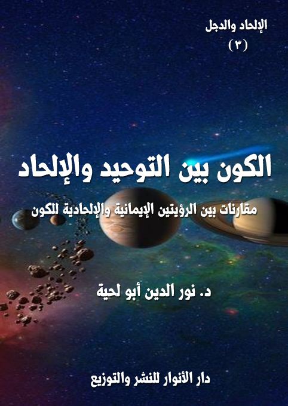

الكتاب: الكون بين التوحيد والإلحاد
الوصف: مقارنات بين الرؤيتين: التوحيدية والإلحادية للكون
المؤلف: أ.د. نور الدين أبو لحية
الناشر: دار الأنوار للنشر والتوزيع
الطبعة: الأولى، 1439 هـ
عدد الصفحات: 222
ISBN: 978-3-330-85519-9
لمطالعة الكتاب من تطبيق مؤلفاتي المجاني وهو أحسن وأيسر: هنا

التعريف بالكتاب
يناقش هذا الكتاب بطريقة علمية هادئة ما يستند إليه الملاحدة من منتجات العلوم الحديثة، سواء علم الفلك أو الفيزياء بنوعيها الكلاسيكي والحديث..وذلك عبر منهجين:
أولا ـ منهج نفي الاستدلال بها، وكونها من الناحية المنطقية عديمة الدلالة على الإلحاد، وإنما يتلاعب الملاحدة بالألفاظ ليجعلوها سندا لهم.
ثانيا ـ منهج بيان عدم تحققها بالعلمية الكافية، ذلك أن الكثير من النظريات التي نجدها على المواقع كسند يعتمد عليه الملاحدة ليس لها أي حظ علمي عند المتخصصين، فهي لم تجرب، بل يستحيل تجريب أكثرها، وهي عبارة عن ميتافيزياء، وليست فيزياء، ولذلك لا يصح اعتبارها سندا علميا.
بالإضافة إلى هذا، فقد رددنا في هذا الجزء بطريقة غير مباشرة على تلك الدعاوى التي تربط العلم وخصوصا الفيزياء والفلك بالإلحاد.. لهذا جعلنا لأبطال الرواية جميعا علاقة بشخصيات علمية واقعية، صرحت بإيمانها بالله، ليكتسب القارئ من خلالها حصانة وقدرة على محاجة الملحدين في مثل هذه الطروحات..
الكون بين التوحيد والإلحاد (4)
يناقش هذا الكتاب بطريقة علمية هادئة ما يستند إليه الملاحدة من منتجات العلوم الحديثة، سواء علم الفلك أو الفيزياء بنوعيها الكلاسيكي والحديث.. وذلك عبر منهجين:
أولا ـ منهج نفي الاستدلال بها، وكونها من الناحية المنطقية عديمة الدلالة على الإلحاد، وإنما يتلاعب الملاحدة بالألفاظ ليجعلوها سندا لهم.
ثانيا ـ منهج بيان عدم تحققها بالعلمية الكافية، ذلك أن الكثير من النظريات التي نجدها على المواقع كسند يعتمد عليه الملاحدة ليس لها أي حظ علمي عند المتخصصين، فهي لم تجرب، بل يستحيل تجريب أكثرها، وهي عبارة عن ميتافيزياء، وليست فيزياء، ولذلك لا يصح اعتبارها سندا علميا.
وهذا ما أشار إليه الكثير من الباحثين المختصين من أمثال البروفسور [جون بولكنجهورن] الفيزيائي الشهير الذي قال معبرا عن نقده الشديد لنظرية الأكوان المتعددة: (إنها ليست فيزياء.. إنها في أحسن الأحوال فكرة ميتافيزيقيه، ولا يوجد سبب علمي واحد للإيمان بمجوعة من الأكوان المتعددة.. إن ماعليه العالم الآن هو نتيجة لإرادة خالق يحدد كيف يجب أن يكون)
ومثله قال الفيزيائي الشهير [راسل ستانارد] الذي اعتبر الكثير من طروحات الفيزياء الحديثة فلسفة وليست علما، فقال: (إن فلسفة هوكينج تحديدا ما أعارضه، فهي كما وصلتني مثال واضح على التعالم، فطرح أن العلم هو مصدر المعلومات الوحيد، وأننا لدينا فهم كامل لكل شيء هراء، بل هراء خطير أيضا، فهو يشعر العلماء بالكبر والغرور بشكل مبالغ فيه)
وقال عن [نظرية الأوتار]: (إنها نظرية تحتاج لمصادم هيدروني بحجم مجرة لاختبارها وهذا غير ممكن.. حسنا لو قلنا ـ طبقا للنظرية ـ إن الكون خلق نفسه، فمن أوجد النظرية؟ ومن أوجد القوانين الفيزيائية الخاصة بها؟.. ورغم ذلك فلا توجد لها معادلة فيزيائية حتى الآن..
الكون بين التوحيد والإلحاد (5)
أطلب منهم أن يكتبوا معادلة فيزيائية.. لن يفعلوا لانهم ببساطة لايمتلكونها)
وقد ذكر بعضهم الدوافع النفسية لكل تلك النماذج، فقال: (اعتقد علماء الكون أنّ عليهم الالتفاف وراء المشكلة.. لقد حاولوا على مرّ السنوات الماضية إثبات عدة نماذج مختلفة للكون تتفادى الحاجة إلى بداية، مع الاستمرار في اشتراط انفجار عظيم.. يبدو الآن من المؤكّد أنّ الكون كانت له بداية)
وبناء على هذا، فقد أحببنا أن نعطي القارئ الكريم ثقافة علمية مبسطة ترتبط بهذه النظريات: الحديثة منها، والتقليدية، ليتبين من خلالها حظها من العلم، ولتكون له القدرة العلمية على مناقشة الدعاوى الإلحادية المتعلقة بها.
بالإضافة إلى ذلك ذكرنا الكثير من شهادات العلماء المتخصصين وانتقاداتهم لأمثال تلك النظريات.. ولهذا سيجد القارئ في الكتاب الكثير من النماذج والنظريات التي استعملها الملاحدة وسيلة للإلحاد، ومن الأمثلة على ذلك نموذج [الكون المتذبذب] الذي أرادوا من خلاله أن يعودوا بالكون لحالته الثابتة، وذلك للخروج من إشكال الخلق الأوّل.. كما عبر الفيزيائي البريطاني (جون غربن)، عن وجهة نظر الملاحدة في هذا المجال، فقال: (الإشكال الأكبر في نظرية الانفجار العظيم المتعلّقة بنشأة الكون فلسفي ـ وربما حتى لاهوتي ـ وهو: ماذا كان قبل الانفجار؟ كان هذا الإشكال وحده كافيًا لمنح دفعة أولى لـ[نظرية الحال الثابتة]، ولكن بعد أن تبيّن ـ للأسف ـ أنّ تلك النظرية معارضة للأمور المشاهدة، كان الطريق الأفضل للالتفاف حول هذا الإشكال الأوّلي هو في تقديم نموذج يتوسّع فيه الكون من [مفردة]، ويعود فينهار بعد ذلك، ثم يعيد دورته هذه دون نهاية)
وهكذا تتبعنا كل النظريات المطروحة على مواقع الإنترنت، والتي رأينا مدى تشبت الملاحدة بها، لنبين مدى مصداقيتها العلمية، ونبين بعد ذلك أنه حتى في حال ثبوتها لا يمكن الاستدلال بها على نفي الغائية أو إثبات الصدفة والعشوائية وغيرها من المبررات الإلحادية.
الكون بين التوحيد والإلحاد (6)
بالإضافة إلى هذا، فقد رددنا في هذا الجزء بطريقة غير مباشرة على تلك الدعاوى التي تربط العلم، وخصوصا الفيزياء والفلك بالإلحاد.. لهذا جعلنا لأبطال الرواية جميعا علاقة بشخصيات علمية واقعية، صرحت بإيمانها بالله، ليكتسب القارئ من خلالها حصانة وقدرة على محاجة الملحدين في مثل هذه الطروحات.
كما أننا حاولنا في كل جزئية نطرحها أن نبين الرؤية الإيمانية، ونبين مدى علميتها ومصداقيتها مقارنة بالرؤية الإلحادية، وحتى لا يكون الحديث في مثل ذلك ذاتيا، فقد جعلنا تلك الطروحات صادرة من أفواه العلماء الملاحدة أنفسهم بعد أن تتبين لهم الحقيقة.
وكعادتنا في هذه السلسلة التي تحاول تبسيط الحقائق العلمية، ووضعها في قوالب مشوقة، فقد اعتمدنا بعض الأحداث الرمزية، التي تجعل القارئ يشعر بنوع من التسلية والمتابعة للأحداث بالإضافة إلى ما يستفيده من معلومات، أو قدرات على الجدل والمحاجة والمناظرة.
وقصة هذا الجزء تبدأ من خلال مؤتمر يقيمه الملاحدة الجدد بغية نشر أفكارهم الإلحادية المتلبسة بلباس العلم بين طلبة بعض الجامعات.. وفي ثنايا ذلك المؤتمر، يذهبون لزيارة بلدة لا تزال تحافظ على إيمانها، بغية نشر الإلحاد بينها.. لكنهم يفاجؤون بالكثير من الطروحات العلمية التي تجعلهم يتراجعون واحدا واحدا إلى أن يتم تحول جميع الفريق العلمي الملحد إلى فريق مؤمن، خاصة بعدما يكتشفون أن تلك البلدة الصحراوية البسيطة استطاعت أن تجمع بين العلم والإيمان.
وقد قسمنا هذا الجزء إلى أربعة فصول تشمل جميع القضايا العلمية المطروحة في هذا الجانب، وهي:
القدم.. والحدوث: وقد ناقشنا فيه مسألة قدم العالم وحدوثه بحسب النظرة العلمية القديمة، والنظرة العلمية الجديدة، وناقشنا فيه بتفصيل كل الطروحات التي حاولت أن تعود
الكون بين التوحيد والإلحاد (7)
بالكون لحالته الثابتة، كنظرية الكون المتذبذب وغيرها.
الصدفة.. والغائية: وقد ناقشنا فيه الطروحات الفيزيائة الجديدة التي حاولت أن تحيي الصدفة بلباس علمي جديد، وذكرنا استحالة ذلك وفق المنتجات العلمية الحديثة كالثوابت الكونية والتوازن وغيرها.. بالإضافة إلى أننا ركزنا في هذا الفصل خصوصا على طروحات هوكينج حول التصميم العظيم والأكوان المتعددة والأوتار الفائقة باعتبارها أكثر النظريات انتشارا بين الملاحدة.
الحياد.. والتدبير: وقد ناقشنا فيه تلك الطروحات التي تجعل الكون غير محتاج إلى إله، وأن القوانين كافية لتحكمه، بل لتوجده، بالإضافة إلى الرد على تلك الرؤى الفلسفية التي تعتبر دور الله محصورا في خلق الكون، ثم تركه بعد ذلك للقوانين دون أن يكون له أي تسيير مباشر.
الغيب.. والشهادة: وقد بينا فيه مدى محدودية العلم الحديث، وأن الغيب فيه أكثر من الشهادة، بل إن اكتشافاته لا تزيده إلا تواضعا.. وناقشنا فيه طلاقة القدرة الإلهية وإمكانية المعجزة من وجهة النظر العلمية.
هذه هي فصول الكتاب، وهي مقسمة على أساس الشبهات العلمية المطروحة في هذا الجانب وبالترتيب، فهي تبدأ ـ أولا ـ من فرضية أزلية الكون أو ما يطلق عليه علميا [الحالة الثابتة]، وقد رددنا عليها بتفصيل في الفصل الأول..
وثانيا: فرضية الصدفة والعشوائية: وقد رددنا عليها بتفصيل في الفصل الثاني مستثمرين آخر النظريات العلمية في ذلك.
وثالثا: فرضية الحياد، أو تسيير القوانين للطبيعة: والتي قال بها بعض الفلاسفة والعلماء، وقد رددنا عليها في الفصل الثالث ببيان استحالتها علميا.
ورابعا: استبعاد العنصر الغيبي والخوارق والمعجزات في الكون: وقد ذكرنا ما يفند ذلك علميا في الفصل الرابع.
الكون بين التوحيد والإلحاد (8)
ونحب أن ننبه إلى أننا اعتمدنا الكثير من المصادر والمراجع المتفرقة، والموجود أكثرها على النت، باعتبار جدة الكثير من النظريات العلمية.. ولكنا لم نبالغ في التوثيق إلا عند ذكر المصدر الأصلي.. أما سائر التوثيقات فمعظمها إن لم نقل كلها كتب أو مواقع أجنبية تستهلك صفحات كثيرة لو قمنا بتوثيقها، وكل ذلك مما لا يحتاجه القارئ العادي.. أما القارئ المتخصص فلا يصعب عليه في ظل التقنيات الحديثة أن يجد المصدر في كل عبارة نذكرها.
وننبه أيضا إلى أننا قد نعرض المسألة العلمية الواحدة في مواضع متعددة بحسب الغرض منها، وعلاقتها بالفصل أو المطلب، وقد نضيف في كل محل تفاصيل جديدة، أو ردودا أخرى.. لأن الكثير منها متداخل، ويحتاج في كل محل إلى مناقشة خاصة.
وفي الأخير ننبه إلى أن الهدف من هذه السلسلة كغيرها من السلاسل هدف علمي، وليس الرواية ولا أحداثها، ولذلك لم نتبن مناهج الكتابة الروائية، لأني شخصيا لا أؤمن بأي رواية لا أستفيد منها علما أو حكمة أو إيمانا..
قد يقال: ما دام الأمر كذلك، فلم استعمال هذا الأسلوب، والجواب بسيط، وهو ما رأيته من تأثيره في عامة الناس وخاصتهم.. فالقصص والأمثال وغيرها وسائل بيان وتوضيح وشرح.. ولهذا اعتمدناها، ولم نعتمدها لذاتها، وإنما باعتبارها وسيلة لتبسيط الحقائق وتفكيكها ومعالجتها والرد على الشبهات المثارة حولها، وقد قال تعالى منبها إلى أهمية هذا النوع من الأساليب: {فَاقْصُصِ الْقَصَصَ لَعَلَّهُمْ يَتَفَكَّرُونَ} [الأعراف: 176]
الكون بين التوحيد والإلحاد (9)
في صباح ذلك اليوم الذي حدثت لي فيه هذه القصة العجيبة التي سأرويها لكم طُرق باب بيتي، فرحت أفتحه، فوجدت أسفله ظرفا مزينا، مرسلا من جمعية كنت أعرفها جيدا، كانت تسمى [جمعية الإيمان العلمي الجديد (1)]، وهي جمعية ليس لها من الإيمان إلا الاسم الذي تستخدمه، لتصطاد به القلوب المؤمنة الطيبة، لتحولها إلى قلوب ملحدة متحجرة.. وتبث فيها بعد ذلك ما تشاء من قيم وسلوكيات ومواقف.
وهي تستخدم لذلك الكثير من الحيل، وأهمها المكتشفات العلمية في الفيزياء والفلك وغيرها، سواء ما ثبت منها أو ما لم يثبت.. وهي تضيف إليها جميعا وصف [الحديث]، أو [الجديد]، لتستقطب أصحاب الموضات الذين يريدون كل حين أن يستبدلوا عقائدهم وقيمهم كما يستبدلون ثيابهم.
وهي توظف ـ فوق ذلك كله ـ الكثير من وسائل وأساليب الإغراء التي تخاطب الغرائز والشهوات أكثر من مخاطبتها للعقول والقلوب.
ولذلك بمجرد أن رأيت اسمها على الغلاف، رميت الظرف من غير أن أعرف ما فيه.. رميته وأنا أستعيد بالله من شرها.. ثم دخلت بيتي، وأغلقت علي بابي جيدا حتى لا تتسرب أي فتنة إلي من أي جهة..
دخلته، وأنا أقول في نفسي: هذا زمن الفتن ما ظهر منها وما بطن.. وليس هناك أفضل للمرء من بيته.. فالفتنة نائمة، وملعون من أيقظها، أو شارك فيها، أو كثر سوادها.
لكن ما إن استقر بي المجلس في بيتي، حتى عاد الباب يُدق من جديد، فرحت أفتحه، وأنا أستعيذ بالله من كل طارق سوء.. فوجدت صبيا صغيرا ممسكا بالظرف، وهو يقول لي: يا
__________
(1) إشارة إلى [الإلحاد الجديد]، فالإلحاد ليس إلا عقيدة وثنية تؤله الطبيعة وقوانيها بدل الله.
الكون بين التوحيد والإلحاد (10)
عم.. لقد وجدت هذه الورقة الجميلة.. وعليها اسمك.. فطلب مني أصدقائي أن نلعب بها، فأبيت.. وقلت: هذا حرام.. وسيغضب علينا ربنا إن فعلنا ذلك.. ولذلك أتيتك بها.
قلت له: هل أعجبتك؟
قال: أجل.. إنها جميلة جدا.. ولذلك طلب مني أصدقائي أن نبقيها عندنا.
قلت: إذن ما دامت قد أعجبتك.. فخذها.. والعب بها مع زملائك.. وإن شئت أن تحولها إلى طائرة، فافعل.. فلا شك أنها ستكون طائرة جميلة.
قال لي، والفرح قد ظهر على ملامح وجهه: شكرا لك يا عم.. هذه هدية غالية.
ثم راح يسرع إلى أصحابه، وهو ممتلئ سرورا، يخبرهم عما جرى بيني وبينه.. ورحت أنا أغلق بيتي، وأسأل الله ألا يقرؤوا الرسالة.. حتى لا تنفجر فيهم القنبلة المودعة فيها.
لكني ما إن استقر بي المجلس في بيتي حتى دُق الباب من جديد، فأسرعت إليه، وأنا أستعيذ ككل مرة.. فوجدت شابا يحمل الظرف، وهو يقول لي: انظر.. لقد وجدت هذا الظرف عند بعض الصبية يلعبون به، فشدني منظره، فأخذته منهم، فوجدت فيه اسمك.. وها قد أتيتك به.. ولا داعي لأن تشكرني، فما قمت إلا بالواجب.
قمت بشكره، ثم أخذت الظرف منه، وقلت في نفسي: لا حل لهذا الظرف المشؤوم إلا التمزيق، فلو لم أمزقه، فسيمزقني، ويمزق حياتي..
ثم انتظرت حتى يذهب، ورحت لحاوية قمامة قريبة، ثم أمسكت به بكلتا يدي لأمزقه، ففوجئت بيد شيخ كبير تمسك بي، وتحول بيني وبين تمزيقه، ثم سمعت منه قوله: عجبا لمن هرب من جحيم الملاحدة، وسمع كلماتهم التي لم يسجلها التاريخ أن يكون خائفا وجبانا لهذه الدرجة.
رحت أتطلع فيه، وأقول له: من أنت؟.. لا شك أن معلم الإيمان هو الذي أرسلك لي.
الكون بين التوحيد والإلحاد (11)
قال: ماذا تقول يا بني؟.. ما الذي حصل لك؟.. لقد أمسكت بيدك، لأن دوارا أصابني.. أظن أنه الضغط أو السكري.. هل آلمك فعلي؟.. أنا أعتذر إليك.
قلت: لكني سمعتك تحدثني عن جحيم الملاحدة.. وعن كلماتهم التي لم يسجلها التاريخ.. فمن أعلمك بذلك؟
قال: أظن أنه حصل لعقلك شيء.. فأنا لم أنطق بكلمة واحدة..
ثم انصرف عني، وقد كسا الغضب ملامحه، وهو يقول: يا سبحان الله على هذه الأجيال التي لا تقدر شيوخها.. أمسكت بيده غصبا عني، فبدل أن يقبلها، ويقبل رأسي، راح يؤنبني ويحاسبني على كلمات لم أقلها.. والله لم أقلها.
لم أجد بعد كل ذلك إلا أن أدخل بيتي، ومعي الظرف.. وهناك فتحته، فوجدت فيه دعوة شخصية لي للحضور إلى مؤتمر تقيمه تلك الجمعية، تحت عنوان [الكون بين الرؤية العلمية الجديدة والرؤية الكلاسيكية]، وتذكر فيه أنها استضافت كبار علماء الفيزياء والفلك وكل العلوم الحديثة، بالإضافة لبعض الفلاسفة الكبار من الحداثيين وما بعد الحداثيين، بالإضافة لبعض رجال الدين الذين ينتمون لأديان مختلفة.
وقد كلفت بتقديم محاضرة بعنوان [الكون من خلال الرؤية الإسلامية الكلاسيكية]، ولإغرائي، فقد ذكر في الدعوة أن المحاضر سينال مكافآت مغرية على محاضرته، وأنه سيمنح شهادة تقديرية من الجهة الراعية للمؤتمر، وهي مؤسسة عالمية كبرى معروفة بـ[مؤسسة ريتشارد دوكنز للمنطق والعلوم]، وقد عرّفت في الدعوة بكونها مؤسسة تسعى لتعزيز القبول بالإيمان الجديد، وتدافع عن الأجوبة العلمية للأسئلة حول الكون والوجود، وأنها تشجع هؤلاء المؤمنين الجدد على الظهور والإعلان عن اعتقاداتهم، بل على تنظيم أنفسهم على شكل جمعيات وجماعات.
الكون بين التوحيد والإلحاد (12)
كنت أعرف هذه المؤسسة، وأعرف أن مؤسسها الحقيقي هو كاهن الإلحاد الجديد الأكبر دوكنز.. فقد سمعت ذلك منه شخصيا عند رحلتي لفندق الملاحدة.
لكن الحيلة التي مارستها تلك الجمعية هي تبديل كلمة [الإلحاد] بكلمة [الإيمان]، حتى تتلاعب من خلال ذلك بالعقول، خاصة عقول الطلبة الذي تريد أن تقيم هذا المؤتمر بينهم، وفي جامعتهم.
بعد حديث طويل لي مع نفسي، وبعد أنواع كثيرة من الاستخارة مارستها، لم أجد إلا أن أذهب إلى هذا المؤتمر، وتلبية هذه الدعوة، خاصة وأن تلك الكلمات التي سمعتها، والتي ذكر الشيخ أنه لم يقلها لم تكن كلمات اعتباطية، بل كانت رسالة إلهية تدعوني إلى الحضور، وعدم الفرار من الزحف.
بعد أن امتلأت قناعة وعزيمة على الحضور، رحت أحضر محاضرتي، وأنا أقول في نفسي: سيرون أين تقع علومهم التي يتباهون بها أمام الإيمان.. وسيرون أن ما يسمونه [الإيمان الكلاسيكي] هو الإيمان الحقيقي الذي يتوافق مع العقل والعلم وكل حقائق الوجود.. ولا يمكن لتلك الخرافات الحديثة والحداثية التي يتشبثون بها أن تنال منه، أو تصل إلى جزء بسيط من قوّته وجماله.
***
ما هي إلا أيام حتى قليلة حتى سرت إلى الجامعة التي يقام فيها المؤتمر، وهناك وجدت الحشود الكثيرة من الطلبة والأساتذة وغيرهم، والذين تشكلوا على شكل صفوف لرؤية أنبياء الإيمان الجدد، وقد كانت الشرطة وغيرها من الأجهزة الأمنية قد طوقت المكان من كل النواحي حتى لا يصيب هؤلاء أي مكروه..
وقد أعطى ذلك كله هالة كبرى لأولئك الوفود في نفوس الطلبة وعقولهم، وذلك مما ملأ قلبي هلعا.. فالخوف ليس من المحاضرات التي تلقى، والتي ينصرف أصحابها بعد ذلك..
الكون بين التوحيد والإلحاد (13)
إنما الخوف من مشاعر التقديس التي يواجه بها أولئك الذين جعلوا أنفسهم في مراتب الأنبياء والأولياء ليبشروا بآلهتهم العلمية بدل الله.
ما هي إلا ساعات حتى افتتح رئيس الجمعية المؤتمر.. وبدأت معه سهام النقد للإيمان.. وبدأت معه سهام الدعوة للعلم.. وكأن العلم والإيمان عدوان لا يمكنا أن يجتمعا في عقل، أو يسكنا في قلب.
من الكلمات التي لا أزال أحفظها من حديثه قوله (1): سادتي الحضور الكرام.. إن السؤال عن وجود الكون سؤال علمي بحت مثله مثل أي سؤال آخر نبحث له عن جواب.. فهل هناك شيء ما بعد حدود الكون؟.. هل هناك أكوان أخرى؟.. هل هناك كائنات عاقلة مثلنا تعيش في كواكب أخرى؟.. كل هذه الأسئلة أسئلة مهمة جدا، ونبحث لها عن جواب، طبعا؛ لكن لا علاقة لها بموضوع الله لسبب بسيط جدا، وهو أن وجود الله من عدمه لن يؤثر على النتيجة..
وهذا يدعو عقولنا العلمية إلى التساؤل عن مهمة الخلق بالله تحديدا.. وما هي الدلائل التي تشير الى أن هناك عملية خلق؟.. وهل الخالق هو الله تحديدا دون كل الآلهة الأخرى؟.. ألا يمكن أن يكون سبب وجود الكون هو سبب طبيعي جدا موجود في الكون ذاته، ولا يحتاج إلى قوة سحرية عاقلة لإيجاده؟
ثم راح يبتسم ساخرا، ويقول: إن السؤال عن خلق الكون سؤال قائم على مغالطة منطقية بحتة، يحاول فيها السائل خداع عقل المتلقي من خلال افتراض وجود عملية خلق، وكل ما علينا هو العثور على الفاعل، وفي هذه الحالة يتم افتراضه الله.. كما أن اعتقاد بعض العلماء بوجود الله لا يعني بأن الله موجود، أو بأن الله خالق، بل يعني فقط بأن هناك من يعتقد
__________
(1) هذا النص مقتبس بتصرف من كلمة لبسام البغدادي، وهو الملحد المعروف بمجاهرته بالإلحاد ودعوته إليه، في قناة الملحدين بالعربي، وغيرها من المواقع.
الكون بين التوحيد والإلحاد (14)
به فقط.
ثم راح يرفع صوته بكل تبجح غير مراع لمشاعر أولئك الحضور من المؤمنين الذين تم استدعاؤهم: ولذلك استدعيناكم باعتباركم أكبر علماء الدنيا وعباقرتها على مدار التاريخ لتجيبونا الإجابة العلمية الصحيحة عن علاقة أصل الكون بالإيمان بوجود الله من عدمه.. حتى نؤمن الإيمان الصحيح الذي يوافق العلم.. لا ذلك الإيمان الكلاسيكي المملوء بالخرافة والجهل والتخلف.
بعد أن انتهى من افتتاحيته المملوءة بكل ألوان البذاءة والسباب على المؤمنين، بدأت المحاضرة الأولى، وقد كانت لأكبر شخصية علمية في ذلك الوفد، وهو عالم في الفيزياء الحديثة، ومن الأصدقاء المقربين لستيفن هوكينج، وقد بدأ محاضرته بذكره، وبالثناء عليه، وبيان مكانته منه، ثم راح يحدق في وجوه الحاضرين بقوة، وكأنه اكتشف سر الأزل والأبد، ثم قال: سألقي بين أيديكم اليوم أول قنبلة.. فلا تخافوا.. إنها لن تمزق أجسادكم.. هي فقط مصممة لتفجير الخرافة والدجل الذي يسكن العقول..
ثم راح يفجر قنبلته بقوله: ماذا لو اكتشف العلماء في المستقبل القريب طريقة نشوء الكون.. فهل سيتوقف المؤمن إيمانا كلاسيكيا عن الإيمان بالله؟.. ألن يبحث حينها عن فراغ علمي جديد يضع الله فيه؟
ثم راح يجيب: الجواب على هذه الأسئلة لمن يفكر تفكيرا علميا سهل جدا.. فلنتذكر بأن الله في سالف الزمان كان يقوم بالملايين من الوظائف في الطبيعة، والتي تقلصت شيئا فشيئا مع اكتشاف العلم الحديث لأسباب سقوط المطر، وجريان السحاب، وشروق الشمس، وغيرها الكثير.. ففي كل مرة نكتشف أن سبب حدوث الأشياء هي قوانين الطبيعة البحتة، يتم دفع الله درجة إلى الوراء، فيقول المؤمنون بأن الله هو السبب وراء مسبباتها.. وعندما يتم اكتشاف السبب وراء مسبباتها كذلك، يتم دفع الله درجة أخرى للوراء وهلم جرا..
الكون بين التوحيد والإلحاد (15)
ثم راح يتجول بعينيه مسرورا في أنحاء قاعة المحاضرت الضحمة، ثم يقول: واليوم أبشركم معشر الحضور بأن الله وصل إلى مرحلة لا يفعل فيها أي شيء أكثر من أن يكون السبب والعلة الأولى فقط.. لكن، هل سيختفي الإيمان بالله لو عرفنا أن سبب نشوء الكون هو سبب طبيعي بحت، وهو ما يرجحه العلم؟
ثم سكت على هيئة المتأمل، ثم قال: نعم سيتلاشى الله حينها من الوجود إلا في تلك العقول الممتلئة بالخرافة.. والتي لا تجد حرجا في حشر الله في كل الفراغات العلمية، لأنها بالأساس قائمة على أن وجود الله هو مسألة بديهية، وعلى المؤمن التصديق بها دون أي سؤال، لذلك نجد المؤمن ـ ودفاعا عن هذه الفكرة التي يجد نفسه مجبرا للإيمان بها ـ يسعى لخلق الأسباب لإيمانه، في كل فراغ علمي يخطر على باله.. ورجال الدين يدركون اليوم بأنه إذا لم تكن لله وظيفة، أو غاية، أو هدف؛ فلن يجد المؤمنون سببا للإيمان بالله أكثر من القصص والغرائب التي تمتلئ بها الكتب الدينية. وهذا في حقيقة الأمر لا يسقي ولايشبع من جوع جائع اليوم بسبب ارتفاع مستويات التعليم.
بعد أن انتهى من محاضرته، وألقى ما شاء من هواه، قام ثان، وكان صديقا مقربا هو الآخر من كلورانس كراوس، وريتشارد دوكينز، وغيرهما من الشخصيات التي راح يشيد بها في أول محاضرته، ويشيد بعلاقته الشديدة بها..
قام، وقال (1): أحب أن أنبهكم فقط إلى أن الاعتقاد الشائع بأن الملحد أو اللاديني أو اللاأدري يمتلك جوابا لكل شيء هو اعتقاد ديني مغلوط، ولا أساس له من الصحة.. لأن سبب هذا الاعتقاد هو عقل المؤمن الكلاسيكي بسبب اعتقاده الأزلي بالأجوبة السحرية لكل مجهول يجهله.. ولهذا يفترض المؤمن بأن هذا المجهول يجب أن يكون معلوما لمن ينكر وجود الله.. ومن هنا يتضح أن الله في عقل المؤمن هو ذلك الفراغ الشاسع الذي يأتي بعد علامة
__________
(1) هذا النص مقتبس بتصرف من كلمة لبسام البغدادي، في قناة الملحدين بالعربي.
الكون بين التوحيد والإلحاد (16)
الاستفهام في كل سؤال لا يعرف إجابته.
***
بعد أن انتهت المحاضرتان، وألقي فيهما ما ألقي من القنابل الموقوتة وغير الموقوتة.. طلب منا رئيس الجلسة أن نأخذ بعض الراحة، وأن نغتنم الفرصة خلالها لنشاهد بعض المقاطع من شريط وثائقي بعنوان: [وثائقيات الكون] أو [أوديسة الزمكان]، وأخبرنا أنها وثائقيات علمية مهمة جدا، لا يمكن لطالب الإيمان الجديد أن يستغني عنها.. وذكر لنا أنها من إخراج [نيل ديجرايس تايسون]، والذي أحيا بها وثائقيات [سلسلة الكون] لكارل ساجان.
وقد بدأ المقطع الأول منها بما يسميه سفينة الخيال لاستكشاف الكون بماضيه ومستقبله.. ثم حاول إيضاح مكانتنا كسكان للكرة الأرضية في الكون، وموقعنا من المجموعة الشمسية، ومن المجرة، ومن المجرات الأخرى المجاورة، ومن الكون المرئي جميعا.. وكان الأصل في تلك المشاهد الجميلة التي قدمها أن تكون وثائق للاستدلال بها على عظمة الله، لكن تايسون راح ينحرف بها عن أغراضها، ويبين أن الإنسانية لم تكن دائماً تنظر الى الأرض والكون هذه النظرة العلمية الحالية، وأنها لذلك وقعت في فخاخ الدين ورجال الدين الذين أوهموها أن هناك إلها خالقا ومدبرا لهذا الكون.. ولست أدري الصلة بين ذلك كله.. لكن الإيمان الجديد وضع منطقا خاصا لكل شيء.
بعدها عُرض مقطع آخر يروي فيه تايسون كيفية سيطرة الإيمان الكلاسيكي على البشر حتى جعلهم يلهثون وراء أي علامية كونية، ويوهمون أنفسهم بأنها رسالة مرسلة إليهم حصراً.. وضرب مثالا على ذلك بالمذنبات، وما كانت تحدثه في نفوسهم من آثار.. ثم بين كيف استطاع الإيمان الجديد إزالة ذلك الهاجس القوي الذي كان يوحي بالطوالع السيئة لكل من رأى مذنباً.
ثم عُرض مقطع آخر يتطرق فيه تايسون الى أعمال كبار علماء الفيزياء من أمثال إسحاق
الكون بين التوحيد والإلحاد (17)
نيوتن، وويليام هيرشيل، وجامس ماكسويل والبرت اينشتاين.. ثم يخوض في غمار الجاذبية تلك القوة التي يعتبرها قوة عنيدة، ويتحدث عن صراعنا معها، وعن إنجازاتنا وإنجازاتها، وتحدينا لها، وكيف لها أن تنشئ أكثر وأكبر وأعظم من أي أمر من الممكن أن نتصوره من النجوم المظلمة، والثقوب السوداء، والزمكان..
وهكذا عرضت مقاطع مختلفة تلاعب فيها المخرج بما شاء له من صور الكون الذي هو مجال معرفة بالله، وشاهد من شواهد وجوده، فراح يحولها إلى مشاهد للإلحاد والعبثية والحتمية وكل القيم المرتبطة بها.
***
بعد أن شاهدنا تلك المقاطع الوثائقية ذات الجودة الفنية العالية، طلب منا المنظمون أن نمر على معرض للوحات زيتية، كتبت عليها حِكم أصحاب الإيمان العلمي الجديد الذي لا يحتاج إلى الله.
فذهبنا إلى القاعة الكبرى المعدة لذلك.. فوجدنا لوحات كثيرة مصممة بأحسن تصميم، واستعملت فيها كل أنواع الإبداعات الفنية، وفوقها كتبت عبارات الكثير من كهنة الإلحاد الجديد.
ومن أمثلة ما كتب على بعض تلك اللوحات ما نقله ريتشارد دوكينز عن العلماء الذين أنكروا الله، وذلك في كتابه [وهم الإله]، والذي يعتبر آخر الكتب المقدسة وأهمها عند أصحاب الإيمان الجديد.
ومن تلك العبارات قول [دوجلاس آدمز]: (ألا يكفى النظر لروعة الحديقة وجمالها.. لماذا يجب علينا الإعتقاد بأن هناك جنيات خلفها أيضاً؟)
ومنها قول [جون ستيورات مل]: (من المحتم أنها ستكون صدمة هائلة لو عرف العالم كم هى نسبة المشككين فى الدين بين الحاصلين على أعلى الأوسمة لتميزهم اللامع فى مجالات
الكون بين التوحيد والإلحاد (18)
العلم والفكر)
ومنها قول [فيليب جونسون]: (الداروينية هى قصة تحرير الإنسان من الوهم القائل بأن مصيره مرتبط بقوة أعلى منه)
ومنها قول [روبرت بيرسيغ]: (الجنون صفة لشخص واحد يعاني من وهم ما، أما عندما يعانى العديدون من نفس الوهم يدعى هذا الوهم ديناً)
ومنها قول [توماس جفرسون]: (أستاذ فى علم اللاهوت لا يجب أن يكون له محل فى دستورنا).. وقوله: (رجال الدين من مختلف الطوائف.. يعانون من تقدم العلم كما يعانى السحرة من موعد شروق الشمس، ويعبسون فى وجه تلك الإطلاله التى تلعنهم بأن تلك الأوهام التى يعتاشون عليها فى طريقها للزوال)، وقوله: (السخرية هى السلاح الوحيد الواجب استخدامه ضد المقترحات غير الواضحة.. يجب أن تكون الأفكار واضحة قبل الإقبال على أى تصرف بناء عليها، ولا أحد على الإطلاق عنده فكرة واضحة عن الثالوث المقدس.. إنها الـ[افتح يا سمسم للنصابين ممن يسمون أنفسهم كهنة المسيح])
ومنها قول [بيرتراند راسل]: (الغالبية الساحقة من الأذكياء المثقفين لا يؤمنون بالدين، ولكنهم يخفون ذلك عن الجمهور، ذلك لأنهم خائفون على مصدر رزقهم)
ومنها قول [جورج كارلين]: (الدين أقنع الناس بأن هناك رجلاً خفياً يعيش فى السماء ويراقب كل ما تفعل فى كل لحظة من كل يوم. وهذا الشخص الخفى لديه لائحة بعشرة أشياء لا يريدك أن تفعلها. وإن فعلت أياً من تلك العشرة فإن لديه مكاناً خاصاً مليئاً بالنار والدخان والحريق والتعذيب والآلام، وسيرسلك لهناك حيث تعيش وتعانى وتحترق وتختنق وتصيح وتصرخ إلى أبد الآبدين وإلى نهاية الأزمان.. ولكنه يحبك طبعاً).
ومنها قول [مايكل شيرمر]: (ما الذى يستطيع أن يحرك المشاعر الروحية أكثر من النظر فى تلسكوب عملاق إلى مجرة بعيدة أو أن تكون بين يديك متحجرة عمرها 100 مليون عام أو
الكون بين التوحيد والإلحاد (19)
أداة حجرية عمرها 500000 سنة وأنت تنظر إليها. أو وقوفك أمام الهوة الهائلة للمكان والزمان فى وادى جراند كانيون، أو الإصغاء لعالم نظر فى وجه الكون دون أن يرمش له جفن؟ ذلك هو العلم العميق والمقدس)
ومنها قول [كارل ساجان]، صاحب كتاب [النقطة الزرقاء الفاتحة]، والذي التقيت به في رحلتي الأولى إلى فندق الملاحدة: (أعجب أنه لم يحصل قط أن نظر دين ما الى العلم واستنتج [ذلك أفضل ما ظننا! الكون أكبر وأعظم بكثير بل أدهى وأشد أناقة بكثير مما أخبرنا عنه الأنبياء؟] بدلاً عن ذلك يقولون: (لا، لا، لا.. الهي هو ذلك الإله الصغير وأريد له أن يبقى كذلك.. لو أن ديناً ما قديماً أو حديثاً قد أصر بشدة على الدهشة بعظمة الكون كما كشفه العلم الحديث لحصل ربما على قدر كبير من التقديس بدون أي ضرورة لوجود أي نوع من الإيمان التقليدي المتعارف عليه)
ومنها قوله: (ما يؤمن به غالبية الملحدون هو أنه على الرغم من أن الكون مادي بحت، فإن العقل والجمال والعواطف والقيم الأخلاقية وباختصار كل ما فى سلسلة الظواهر التى تعطى الحياة الإنسانية قيمتها قد أنبثقت منه)
ومنها قول آخر ساخرا: (لو عنينا بكلمة الإله مجموعة القوانين التى تحكم الكون، فهذا الإله موجود بالتأكيد، ولكن مثل هذا الإله لن يشبع رغباتنا العاطفية.. لأنه من غير المنطقي أن تصلي وتطلب غفران الخطايا من قانون الجاذبية)
ومنها قول آخر: (غريب هو وضعنا على كوكب الأرض.. كل منا يأتى فى زيارة قصيرة، لا يعرف لماذا ولكن نشعر فى بعض الأحيان بأن هناك غاية من الحياة اليومية، نعرف بأن هناك شئ مؤكد: وهو أن الإنسان هنا من أجل الإنسان الآخر وقبل كل شئ لأجل هؤلاء الذين سعادتنا تتوقف على سعادتهم وإبتسامتهم)
وغيرها من المقولات الكثيرة التي تفطر قلبي لمرآها.. وتمنيت لو كان معي المعول الذي
الكون بين التوحيد والإلحاد (20)
هدم به إبراهيم عليه السلام الأصنام، لأهدم تلك اللوحات التي لا تقل عن أصنام قوم إبراهيم.
***
حينها رحت أبحث عن أي رجل دين كما ذكروا في الدعوة، لأتخذ معه موقفا، فلم أجد، اللهم إلا أنني، وبعد أن ضاقت نفسي أردت الخروج، فطلب مني بعض المنظمين أن آكل بعض الحلويات، فلم تطاوعني نفسي أن آكل في ذلك المحل.. لكني وجدت من غير قصد مجموعة من رجال الدين بملابسهم التي تدل على أديانهم، يأكلون ويضحكون، وكأن شيئا لم يحصل.
بعدها خرجت قليلا إلى الساحة، وهناك حدثتني نفسي أن أعود إلى بيتي، فرأسي يكاد ينفجر من تلك الجرأة التي يتجرؤون بها على الله.. ولا أكتمكم أني خشيت حينها أن يخسف بنا، أو تنزل من السماء شهب تحرقنا بنارها، فأُحرق معهم، لأني لم أستطع أن أفعل شيئا.
لكني ما إن هممت حتى أمسكت يد بي بقوة، فالتفت إلى صاحبها، فوجدت كهلا ممتلئا بالقوة، وعليه سيما المؤمنين، يقول لي: إلى أين تذهب.. أتريد أن تفر من الزحف؟
قلت: من أنت؟.. وما الذي تقصد؟
قال: لا يهمك من أنا.. وما أقصده واضح.. ولن يحتاج مني إلى شرح.
قال ذلك، ثم سار، وتركني، فلم أملك إلا أن أعود رغم أنفي لأسمع تلك الكلمات التي تتفطر لها القلوب، وتندك لها الجبال.
***
لكني قررت قرارا بيني وبين نفسي، تذكرته عندما خطر على بالي قصة أصحاب الكهف، حين قاموا بين قومهم الجاحدين، وراحوا يصرخون بقوة: {رَبُّنَا رَبُّ السَّمَاوَاتِ وَالْأَرْضِ لَنْ نَدْعُوَ مِنْ دُونِهِ إِلَهًا لَقَدْ قُلْنَا إِذًا شَطَطًا (14) هَؤُلَاءِ قَوْمُنَا اتَّخَذُوا مِنْ دُونِهِ آلِهَةً لَوْلَا يَأْتُونَ عَلَيْهِمْ بِسُلْطَانٍ بَيِّنٍ فَمَنْ أَظْلَمُ مِمَّنِ افْتَرَى عَلَى اللَّهِ كَذِبًا (15)} [الكهف: 14، 15]
الكون بين التوحيد والإلحاد (21)
فتحينت فرصة اجتماع الشمل، وهدوء القاعة، قبل أن تبدأ الجلسة الثانية للمؤتمر، ورحت أصيح بكل قوة: اسمعوني أحدثكم..
لكني شعرت بأن فمي يتحرك، لكن الصوت لا يخرج منه.. حاولت جهدي أن أخرجه لكنه أبى علي.. حينها تذكرت زكريا عليه السلام، وكيف مُنع من الكلام، وكان في ذلك آية له.. فحمدت الله، وعلمت أن الأمر ليس بيدي، وأن الموقف ليس موقف صراخ ولا صياح، وإنما موقف هدوء وتريث.. وقد أضاف إلى هذه القناعة التي حصلت لي أني رأيت عدم جدوى ما كنت أنوي ممارسته، فهؤلاء قد سُلحوا بأسلحة السخرية والبذاءة التي تحول الحقيقة الجميلة سما ناقعا.
ربت على كتفي حينها شاب، أظنه كان من طلبة تلك الجامعة، وقال: لا تقلق.. فكل شيء سيسير على ما يرام.. فالشمس أعظم من أن يستطيع أي جاحد نكرانها.
لم أفهم قوله في ذلك الحين إلا بعد أن عاينت ما عاينت من الأحداث التي سأتلوها عليكم.. فلا تستعجلوا.
***
في مساء ذلك اليوم، وبعد أن قُدمت الكثير من المحاضرت، وبعد أن نال الحضور حضهم من التعب والجهد، جاء دوري لإلقاء محاضرتي.. والتي أعددتها إعدادا كافيا لأرد على كل تلك الشبه التي ألقيت.. وقد انتقيت ألفاظها بدقة خشية على الوقت المحدود الذي سمح لي به.
لكني ما إن بدأت حديثي، حتى قاطعني رئيس الجلسة، وقال: أود أن أخبركم فقط بأن الرئيس المسؤول عن [مؤسسة ريتشارد دوكنز للمنطق والعلوم] قد حضر في هذا الوقت، ويمكن لمن شاء أن يزوره، أو يأخذ صورا تذكارية معه، فهو الآن في باحة الفندق.
قال ذلك، ثم سلم لي مكبر الصوت، وقال لي: يمكنك أن تكمل.. واعذرني لأن لدي
الكون بين التوحيد والإلحاد (22)
بعض المهام.. وقد سمحت لك بوقت زائد على كل المحاضرين السابقين.. لا تنس فقط أن تغلق مكبر الصوت عندما تنتهي من الحديث.
قال ذلك، ثم خرج، وتبعه كل من في القاعة.. ولم يبق إلا بعض العمال الذين كانوا ينظرون إلي بسخرية، وأنا أتحدث لوحدي، وبحماسة شديدة، في تلك القاعة الكبرى.
***
لكن المفاجأة التي لم أكن أحسب لها أي حساب هي ما حصل في اليوم التالي، حيث حضرت حافلات كثيرة إلى الفنادق التي كانت تقيم فيها تلك الجموع الكثيرة، ثم سارت بنا مسافات طويلة، وأخبرنا خلالها أننا سنزور بلدة لا زالت تحافظ على الإيمان الكلاسيكي بكل عقائده وقيمه، وأن العلماء الذين جاءوا من بلاد بعيدة أحضروا معهم كاميرات، ليصوروا مشاهد عن تلك البلدة التي لا تزال غارقة في بطون التاريخ، ولم تعرف الحضارة بعد.
عندما دخلنا إليها كانت بسيطة جدا، وكانت مساكنها طينية غير مزخرفة بأي لون من ألوان الزينة.. ومما زاد في كآبتها تجرد أرضها من كل خضرة أو ماء.. فهي صحراء قاحلة لا تكاد توجد الحياة فيها.
سخر الجميع منها.. وراح بعضهم يتهكم على الدين بسببها، ويقول: يكفينا من الأدلة على قيمة الإيمان الجديد رؤية هذه البلدة التي كان الدين سببا في تخلفها.
وقال آخر: هل يمكن أن يعيش بشر على هذه الأرض القاحلة، وفي هذه المساكن التي لا تختلف عن مساكن الحيوانات؟
وقال آخرون كلاما كثيرا يشبه هذا أو يقترب منه.. وبعضهم قاله ببذاءة لم أطق سماعها، ويستحيل أن يجرأ لساني على النطق بها، أو قلمي على كتابتها.
***
ما إن وصلنا مركز البلدة حتى وجدنا جمعا كبيرا من الناس، يلبسون ملابس بدوية،
الكون بين التوحيد والإلحاد (23)
وينتظروننا بكل احترام وتقدير، وكأنهم لا يعلمون أن من زارهم قوم لا يعرفون الله، ولا يبالون به.. بل يحاربونه.
لكني عرفت بعد ذلك أنهم كانوا يعلمون ذلك، وموقنون به.. لكن أخلاقهم والقيم التي رُبوا عليها منعتهم أن يسلكوا سلوكا مخالفا لذلك.
وقد أخبرني بهذا بعضهم بهذا، بعد أن قلت له: هل تعرفون عقائد من زاركم حتى تستقبلوه بكل هذه الحفاوة؟
قال: نحن لا تهمنا عقائد الناس، فالله هو الذي يتولاها.. نحن نتعامل معهم وفق قيمنا وأخلاقنا وديننا..
قلت: لكنهم كفرة ملاحدة جاحدون محاربون لله؟
قال: ألم تكن لنا في يوسف عليه السلام.. وكيف تعامل مع أهل السجن، فلم يجدوا إلا أن يعتبروه صديقا؟
قلت: بلى.. ولكن ذلك يوسف.. وأهل السجن قوم سذج بسطاء.
قال: القرآن الكريم ربانا على القيم والأخلاق الرفيعة، ولا يهم من نتعامل معه بتلك الأخلاق هل هم سذج بسطاء أم عباقرة علماء؟
قال ذلك، ثم أسرع يقدم بعض الخدمات لأولئك الجاحدين الغافلين الذين امتلأ قلبي حينها حقدا عليهم.
***
بعد أن قدم الطعام والشراب للزوار في ساحة البلدة، أعدت منصات للعلماء الوافدين، وطلب من الحضور أن يجلسوا على البسط، للاستماع إليهم، ومناقشتهم، وحينها تقدم عمدة البلدة، وقال: لقد شرفنا اليوم علماء كبار، وفلاسفة عباقرة، وهم ـ كما يذكرون ـ من دعاة الإيمان الجديد، وقد رأوا أن إيماننا مثل بيوتنا الطينية، لا يزال قديما، ويحتاج إلى تجديد.. فلذلك
الكون بين التوحيد والإلحاد (24)
استمعوا لهم، وناقشوهم كما تشاءون.
ثم التفت إلى العلماء، وقال: لا يغرنكم مظهر هذه القرية البسيطة فهي تحوي علماء من كل التخصصات، وقد درسوا في بلاد مختلفة.. ولهم اطلاع على الكثير من العلوم.
حينها قال بعض الحاضرين ساخرا للعمدة: إن كان الأمر كذلك، فلم لم يطوروا بلدتهم ليحولوها إلى بلدة جديدة..
ابتسم، وقال: مناخ بيئتنا وتضاريسها اقتضت أن تكون أبنيتنا بهذا الشكل، ونحن متعودون عليها مسرورون بها.. وقد جرب بعضنا أن يرحل إلى بلاد أخرى.. لكنه عاد بعد ذلك، لأنه لم يطق العيش فيها.. هذه طبيعة الحياة، ولكل امرئ من دهره ما تعود.
***
ظللنا في ذلك المكان يوما كاملا إلى وقت متأخر من الليل، وقد كان ذلك اليوم من أيام الله التي انتصر فيها الإيمان على الإلحاد.. وأعليت فيها كلمة الله.. ونكست فيها أعلام الشيطان.
وقد علمت بعد ذلك كله سر حضوري، وعلاقة ذلك كله بمعلم الإيمان.. كما سنرى في باقي القصة.. فلا تستعجلوا.
الكون بين التوحيد والإلحاد (25)
كان أول موضوع طرحه المهتم بالشؤون العلمية في تلك البلدة هو موضوع [الكون بين القدم والحدوث]، وقد قال في تقديمه للموضوع: بما أن العلماء الوافدين من بلاد مختلفة متخصصون في الكونيات، فلا يصح أن نسألهم أو نتناقش معهم في غيرها.. فلكل مجال أهله.. ولكل علم رجاله.. وقد قال ربنا عز وجل: {فَاسْأَلْ بِهِ خَبِيرًا} [الفرقان: 59]
ثم نظر إلى العلماء، وابتسم، وقال: اعذرونا.. فنحن لا نستطيع أن نتحدث في أي شيء دون أن نتبرك بكلام ربنا، ونستفيد من توجيهاته.. وليس عليكم حرج إن ضاقت نفوسكم من ذلك أن تنتقدونا كما تشاءون.. تحدثوا بكل حرية.. فنحن مع تمسكنا بإيماننا الذي تعتبرونه كلاسيكيا لا نحجر على أحد أن ينكر علينا أو ينتقدنا.. ولا نضيق منه إن سخر منا، أو هزأ بنا.
قال ذلك، ثم طلب من الحضور أن يسألوا، وألا يبتعدوا عن الموضوع، فقام أحد سكان البلدة، وقال: نرحب بهؤلاء الأفاضل، ونريد منهم أن يخبرونا عن الكون.. أو العوالم التي نراها أو لا نراها.. هل ترونها قديمة قدما أزليا، أي أنه لا بداية لها.. أم أنها محدثة.. ولها بداية تنطلق منها؟
التفت بعض العلماء إلى أصدقائه، ثم خاطبهم بلغته الإنجليزية هامسا، وهو يتوهم أنه لا يُفهم كلامه ولا يسمعه أحد إلا أصحابه، ولكني سمعته بدقة.. لقد قال لهم: هؤلاء قوم بسطاء، ولا يصح أن نخبرهم بالاكتشافات العلمية الحديثة، يكفي أن نبدأ معهم بالنظرة العلمية القديمة، فهي تتناسب معهم، وهي أيسر في تبليغ مرادنا.. لأن تلك النظرة تدعم الإلحاد أكثر من النظرة الجديدة.
ضحك آخر، وقال: هؤلاء لا يعرفون شيئا.. فسم لهم من شئت.. واذكر لهم من النظريات ما شئت.. يمكنك أن تبدأ معهم بما يقول ديمقريطس.. فهو يتناسب مع العقول التي
الكون بين التوحيد والإلحاد (26)
يفكرون بها.. أنسيتم وصايا دوكينز لنا؟
قال آخر: اسكتوا.. لقد فضحتمونا.. دعوني أتدبر الأمر.
قال ذلك، ثم قام، وقال: شكرا جزيلا لسؤالكم المحترم، وجوابا عليه أقول: إن أحدث النظريات العلمية أثبتت بما لا يدع مجالا للشك أن هذا الكون قديم قدما أزليا.. أي أنه لا بداية لوجوده..
ومن العلماء الذين أكدوا هذا البروفيسور الأمريكي الكبير ديمقريطس.. الذي كان يود أن يحضر معنا.. لكن بعض الظروف منعته من ذلك.. لقد برهن هذا البروفيسور الكبير أنَّ العالم مكوَّن من عدد غير محدود من الذَّرات، يتحرك في فراغ لاحدود له.. وأن هذه الذَّرات جُسَيمات من المادَّة غير المرئية، وغير القابلة للانقسام، وغير مولّدة أو قابلة للاتلاف.. وتختلف عن بعضها في الحجم والشَّكل والوضع.. وكل شيء في هذا العالم مكوّن من مجموعة مختلفة عن غيرها من هذه الذَّرات، وقد جاء عالمنا من تركيب عَرَضي لهذه الذَّرات.. وبسبب وجود عدد غير محدود من الذَّرات، فقد وجدت عوالم أُخرى أَيضًا.. وذكر أيضا أنها قديمة أزلية لا بداية لها.. ولذلك فهي لا تحتاج أي علة لتخرجها من العدم إلى الوجود.. لوجودها بذاتها.
قال ذلك، ثم جلس، وهو يتصور أنه حل المشكلة، لكنه فوجئ بضحك كثير، وهمسات للحضور بعضهم لبعض.. ثم طلب بعضهم أن يتدخل، فأذن له، فقام، وقال مخاطبا الحضور: لا أظن إلا أن الأستاذ الكبير الذي أجاب عن السؤال لم يكن إلا مازحا.. فديمقريطس قد أكل على جثته الدهر وشرب، فقد ولد سنة 460 قبل الميلاد.. وتوفي سنة 370.. وهو بالإضافة إلى ذلك فيلسوف يوناني، وليس فيزيائيا أمريكيا.
شعر العالم الأول بحرج شديد، فقام صديقه، وقال: هذه معلومات بديهية.. وزميلنا يعرفها جيدا.. ولكنه خفيف الدم، يستعمل المزاح في محله وغير محله.
قال له الرجل: فأجب أنت عن سؤالي.
الكون بين التوحيد والإلحاد (27)
لم يدر ما يقول، لكنه راح يقع في خطأ زميله لتوهمه أن هؤلاء وإن عرفوا ديمقريطس، فلن يعرفوا غيره، فقال: كما قال زميلنا، فإن قدم العالم وأزليته ثابتة علميا، وقد برهنت عليها كل الأدلة.
قال له الرجل: سم لنا عالما قال بذلك.
قال العالم: هم كثير جدا.. لا أذكرهم الآن بالضبط.. ولكن منهم.. الفيزيائي الكبير وليام شكسبير في كتابيه [هاملت]، و[ماكبث].. ودانتي أليغييري في كتابه [الكوميديا الإلهية].. وغيرهما كثير.
ارتفعت أصوات الضحك في الساحة، وقام صبي صغير، وقال: ما بك يا عم.. أتريد أنت أيضا أن تحتال علينا.. فوليام شكسبير، كاتب مسرحي إنجليزي، وليس فيزيائيا، ولا فلكيا.. وكتابه [هاملت] ليس سوى مسرحية تراجيدية، وليس كتابا علميا.. وهو يحكي قصة أمير الدنمارك هاملت الذي يظهر له أبوه الملك، ويطلب منه الانتقام لمقتله.. إلى آخر المسرحية والتي ينجح فيها هاملت في قتل جميع أفراد العائلة المسببة لمقتل أبيه، ويصاب بعد ذلك في جرح قاتل من خلال سيف مسموم جدا.
أما [ماكبث]، فهي أيضا مسرحية تراجيدية، وتدور أحداثها عن القائد الاسكتلندي ماكبث الذي يقتل ملكه دنكن ليحتل مكانه على العرش، ويصبح ملكا لاسكتلندة، وهي أقصر مسرحيات شكسبير.
قال صبي آخر: أما [الكوميديا الإلهية] التي ذكرتها، فهي شعر ملحمي ألفه دانتي أليغييري.. وهي تحاول أن تصور الآخرة، وتحتوي على فلسفة القرون الوسطى كما تطورت في الكنيسة الغربية.
***
التفت العلماء إلى بعضهم بعضا، وقد أصيبوا بحيرة شديدة، فقام أحدهم، وقال: دعوني
الكون بين التوحيد والإلحاد (28)
سأحل المشكلة.. هذا كله من تسرعكم، وعدم اتباعكم لنصائح أساتذتنا.
قام، وقال: اعذرونا.. فهذه عادة زملائنا.. دائما يخلطون الجد بالهزل.. لهذا سأحدثكم أنا عن كبار الفيزيائيين الذي قالوا بقدم العالم، وأثبتوه بكل الأدلة..
لا يمكنني أن أذكر في هذا المجلس كل من يقول بذلك، فذلك مستحيل، ولهذ سأكتفي بأستاذ الجميع، وأكثرهم شهرة [پيير سيمون لاپلاس] ذلك العبقري الذي كان رياضياً وفلكياً فرنسياً صاحب أعمال كثيرة محورية في تطور علم الفلك الرياضي.. والذي لخّص ووسّع أعمال في كتابه (الميكانيكا السماوية).. كما قام بإعادة صياغة وتطوير الافتراض السديمي عن أصل المجموعة الشمسية، وكان من أوائل العلماء الذين افترضوا وجود الثقوب السوداء وفكرة إنهيار الجاذبية.
لقد كان الإنجاز الكبير الذي قدمه هذا العبقري للعلم والإيمان معا هو أنه اضطلع بمهمة خطيرة، وهي اختزال الكون كله في نسق رياضي واحد، بتطبيق نظرية الجاذبية النيوتينية على جميع الأجرام والظواهر السماوية.. وبذلك أكمل ما تركه نيوتن من الوضع القلق للكون حين ظن أنه عرضة لشذوذات تتصاعد أحياناً، بحيث يلزم أن يتدخل الله من حين إلى آخر ليقوّمه من جديد.. وذلك ما لم يقنع الكثير من العلماءالمتنورين الذي يرون بأن الكون عبارة عن جهاز آلي لا دخل لأي يد خارجية فيه..
وقد استطاع لابلاس بإنجازه العلمي الضخم أن يحقق هذا، فأثبت أن الاختلافات في متوسط أبعاد كل كوكب من الشمس تخضع لصياغة رياضية مضبوطة، تقريباً، فهي إذن دورية وميكانيكية.
ولذلك اختارته أكاديمية العلوم بفضل بحثه هذا عضواً ملحقاً بها، وهو بعد في الرابعة والعشرين من عمره.. ومن ذلك التاريخ كرس لابلاس حياته، لاختزال عمليات الكون واحدة تلو الأخرى إلى معادلات رياضية.. وقد كتب يقول في ذلك: (إن كل تأثيرات الطبيعة
الكون بين التوحيد والإلحاد (29)
ليست سوى نتائج رياضية لعدد قليل من القوانين الثابتة)
كان يتحدث بتأثر شديد في انتظار انسجام الحضور معه ليلقي بقنبلته الإلحادية، وعندما رأى الصمت التام، والانسجام الكامل مع حديثه راح يمهد لها بقوله: لقد كتب في كتابه [عرض لنظام العالم] مقدمة مبسطة غير ميكانيكية لآرائه، جسد فيها نظريته الشهيرة عن أصل المجموعة الشمسية.. وفسر بها دوران الكواكب حول محاورها وحول الشمس، ودوران أقمارها، بافتراض وجود سديم أزلي من الغازات الحارة، أو غيرها من الذرات الدقيقة، يغلف الشمس ويمتد إلى آخر أطراف المجموعة الشمسية.. وقد برد هذا السديم الدائر مع الشمس شيئاً فشيئاً، وانكمش مكوناً حلقات ربما كانت شبيهة بالحلقات التي ترى الآن حول زحل.. فلما ازدادت البرودة والانكماش تكاثفت هذه الحلقات فكونت كواكب، وبمثل هذه الطريقة كونت الكواكب أقمارها؛ ولعل تكاثفاً شبيهاً بهذا السدم كون النجوم.
سكت قليلا، ليتفرس في وجوه الجمهور المحيط به، ليلقي القنبلة الإلحادية الأولى، فلما رآهما منسجمة مع حديثه، ولم تبد أي اعتراض، راح يقول: من المشاهد المهمة التي يغفل عنها الكثير في حياة لابلاس.. ذلك العبقري العظيم.. هو أنه عندما أهدى نسخة من كتابه (حركة الأجرام السماوية) إلى الإمبراطور نابليون بونابرت، سأله الأخير عن سبب إغفال ذكر الإله في كتابه الرياضي، فأجابه (سيدي، لست بحاجة لهذه الفرضية)
قال ذلك، ثم جلس، وصفق له أصدقاؤه الذين تصوروا أنه قد استطاع بذكائه أن يخلصهم، وأن يوصل الرسالة بكل دقة وموضوعية من غير أن يوسط لا شكسبير ولا دانتي ولا ديمقريطس.
لكنه ما إن جلس حتى طلب بعض أهل البلدة الحديث، وقال: ليسمح لي حضرة البروفيسور الكبير أن أذكر ملاحظة على كلمة قالها.. فقد ذكر [النظرية السديمية] كتفسير للمجموعة الشمسية، وأشاد بها، مع كونها غير مقبولة علميا الآن.. بل إن لابلاس نفسه لم
الكون بين التوحيد والإلحاد (30)
يعرضها إلا في كتاب من كتبه الموجهة لعامة الناس، ولم يأخذها مأخذ الجد، بل إنه قال فيها وفي كثير غيرها: (هذه التكهنات حول تكون النجوم والمجموعة الشمسية.. أعرضها بكل التشكك الذي يجب أن توحي به جميع الأشياء التي ليست تنتجه للمشاهدة أو للحساب)
قام آخر، وقال: لدي ملاحظة أخرى ربما تكون أكثر أهمية، وهي أن نظرية لابلاس الرياضية لم تكن أصلا تستلزم البحث في وجود إله، فهو لم يستغنِ عن اللاهوت كما يقول [أوستن فارر].. بل إنه تعلّم كغيره من العلماء ألا يتدخلوا في الدين، وأن يلتزموا حدود تخصصهم.. ولذلك فإن نابليون لو سأل لابلاس من البداية: لماذا يوجد كون من أجرام مادية تتحرك وفقا لقوى الجاذبية التي تعبر عنها معادلاتك؟.. فعندئذ سيكون من الصعب أن يجيب بنفس جوابه السابق.
قال آخر: بالإضافة إلى ذلك، فإن لابلاس ذكر في كتابه [نظرية تحليلية للاحتمالات]، والذي ألفه عام (1812)، وهو الأساس لكل ما جد له بعد ذلك من أعمال: (إذا توخينا الدقة في التعبير قلنا: إن معرفتنا كلها تقريباً غير يقينية؛ وفي الأشياء التي نستطيع معرفتها يقيناً، حتى في العلوم الرياضية ذاتها، يقوم الاستنباط والقياس على الاحتمالات، وهما أهم السبل للكشف عن الحقيقة)
قال آخر: وهذا لا يعني أننا نحتقر أو لا نقدر الجهود العلمية التي قدمها، فقد كانت له إسهاماته المحترمة في ذلك.. فقد أنار كل فرع من فروع الفيزياء بـ (معادلات لابلاس) عن (الجهد) التي يسرت التأكد من شدة الطاقة، أو سرعة الحركة، في أي نقطة في ميدان خطوط القوة.. وحسب البيضية الديناميكية للأرض من تقلبات القمر التي كانت تعزي لشكل الكرة المفلطح، ووضع نظرية تحليلية للمد والجزر، واستنبط كتلة القمر من ظواهرها. وابتكر طريقة محسنة لتحديد مدار المذنبات؛ واكتشف العلاقات العددية بين حركات أقمار المشتري.. وحسب بدقته المعهودة السرعة (القرنية) المتوسطة لحركة القمر.. وأرست دراساته للقمر
الكون بين التوحيد والإلحاد (31)
الأساس للجداول المحسنة لحركات القمر، التي وضعها تلميذه جان شارل بوركهارت عام 1812 م.
قام آخر، وقال: تتمة لما ذكره البروفيسور الفاضل من حوار لابلاس مع نابليون، فقد ذكر العالم الفرنسي [لاغرانج] أن الامبراطور عندما سئل بعد لقائه مع لابلاس عن موقفه من كلمته، فقال: (لكنها فرضية جميلة جدا تفسر الكثير من الأشياء)
وقد ذكر المؤرخون كذلك أن نابليون عند رجوعه من معركته التي انهارت فيها قواته في ليبزيك ضد بروسيا والنمسا وحلفاء آخرين عام 1813 التقى بلابلاس، فرآه قد صار نحيفا، فقال له: (أرى أنك فقدت الكثير من الوزن)، فأجاب لابلاس: (نعم سيدي.. فقدنا ابنتنا صوفيا التي ماتت أثناء الولادة)، فقال الامبراطور ببرودة: (لكن هذا لا يفسر فقدان الوزن، أنت عالم رياضيات، لو وضعت فقدان ابنتك في المعادلة فهذا لا يفسرعلميا النقص في الوزن!)
لم يجد العلماء ما يقولون، فقد انبهروا بما سمعوا، ولم يكونوا يعلمون أن في تلك البلدة من يحمل مثل تلك العلوم، لكن أحدهم، قام، وقال: لاشك أنكم نسيتم جميعا أهم ما أنتجته عبقرية لابلاس، وهي ما يستند إليه الإيمان العلمي الجديد، وهي التي عبر عنها بقوله: (إن الفلك بحكم جلال موضوعه وكمال نظرياته، هو أبدع صرح من صروح الروح البشرية، وأنبل شهادة على الذكاء البشري.. فالإنسان الذي أضلته أنانيته وأوهام حواسه ظل طويلا يعتبر نفسه المركز في حركات النجوم، وقد لقي غروره الكاذب عقاباً من الأهوال التي أوحىت بها هذه النجوم.. ثم ألقى بنفسه فوق كوكب لا يكاد يدرك حجمه في المجموعة الشمسية، وامتداده الشاسع ليس إلا نقطة تافهة في اتساع الفضاء.. والنتائج السامية التي قاده إليها هذا الكشف خليقة بأن تعزيه عن المرتبة التي وضعت فيها الأرض، لأنها تبصره بعظمته في كل ضآلة القاعدة التي يقيس منها النجوم.. فعليه أن يصون بعناية نتائج هذه العلوم السامية التي
الكون بين التوحيد والإلحاد (32)
هي بهجة للكائنات المفكرة، وأن يوسع رقعتها. وقد أدت تلك العلوم خدمات جلية للملاحة والجغرافيا، ولكن بركتها الكبرى هي تبديد المخاوف التي سببتها الظاهر الفلكية والقضاء على الأخطاء المنبعثة من الجهل بعلاقتنا الصحيحة بالطبيعة وتلك أخطاء ومخاوف ستنبعث من جديد إذا قدر لمشعل العلم يوماً ما أن ينطفئ)
قام بعض الحاضرين، وقال: المتأمل في كلامه يجد أن كل ما ذكره أو أكثره لا يتعارض مع الإيمان بالله.. فما ذكره من تبديد العلم للمخاوف التي لا مبرر لها من الظواهر الكونية صحيح.. وقد أشار كتابنا المقدس إلى الكثير من تلك الظواهر باعتبارها من تصريفات الله وتدبيراته لخلقه.
ومثل ذلك ذكره لضخامة الكون واتساعه، فهو صحيح.. بل إن ما ثبت بعده أكبر بكثير مما ثبت له.. وما لم يثبت بعد أكبر بكثير مما ثبت.. وكل ذلك يدل على عظمه الله تعالى خالق هذ الكون ومبدعه.
وأما ما ذكره من تسخير الكون للإنسان، فهو ما يدل على عناية الله بعباده.. ويدل كذلك على انتفاء الصدفة.. لأن الصدفة عشوائية، وليست غائية..
وهكذا، فإن أكثر ما ذكره صحيح إلا احتقاره للإنسان أو للأرض، فإن الله ما احتقر شيئا من خلقه، حتى البعوضة، فقد قال تعالى: {إِنَّ اللَّهَ لَا يَسْتَحْيِي أَنْ يَضْرِبَ مَثَلًا مَا بَعُوضَةً فَمَا فَوْقَهَا فَأَمَّا الَّذِينَ آمَنُوا فَيَعْلَمُونَ أَنَّهُ الْحَقُّ مِنْ رَبِّهِمْ وَأَمَّا الَّذِينَ كَفَرُوا فَيَقُولُونَ مَاذَا أَرَادَ اللَّهُ بِهَذَا مَثَلًا يُضِلُّ بِهِ كَثِيرًا وَيَهْدِي بِهِ كَثِيرًا وَمَا يُضِلُّ بِهِ إِلَّا الْفَاسِقِينَ} [البقرة: 26]
وهذا معروف بالبداهة، ولكل الناس، فهل وجدتم رساما يحتقر صورة من صوره.. أو شاعرا يحتقر قصيدة من قصائده، حتى لو كانت قصيدة صغيرة.. وهكذا الله العظيم المبدع لكل شيء، فإنه ما احتقر شيئا من خلقه.. بل تعامل مع كل مخلوقة بحسب طبيعته وحاجته، كما قال تعالى: {رَبُّنَا الَّذِي أَعْطَى كُلَّ شَيْءٍ خَلْقَهُ ثُمَّ هَدَى} [طه: 50]
الكون بين التوحيد والإلحاد (33)
قام أحد العلماء، وقال: أرى من المغالطات التي ذكرتها دعوتك للاكتفاء بنسبة الأمور لله، وعدم الحاجة للبحث في الأسباب.
قال الرجل: ربما فهمتني خطأ سيادة البروفيسور، فأنا لم أقل هذا، وإنما ذكرت أن الاعتقاد بوجود الله، وكونه مسبب الأسباب لا يعني الاستغناء عن الأسباب الطبيعية، أو التمرّد على شيء من حقائق العلم الصحيح، وإنّما هو اعتقاد بأن الله هو المسبب لهذه الأسباب الطبيعية، ويحتّم على تسلسل العلل والأسباب أن يتصاعد إلى قوّة فوق الطبيعة وفوق الكون.. وحتى لو سلمنا جدلا أن العلم وصل إلى معرفة كل الأسباب الطبيعية، فهذا لا ينفي وجود الخالق، بل هذه الأسباب الطبيعية دالة على موجد لها، فكل سبب له مسبب، وهو الله عز وجل.
ومثل ذلك ما لو اخترع الإنسان حاسوبا ضخما استطاع أن يصنع آلات بديعة.. تقوم هي الأخرى بصناعة آلات أخرى.. وهكذا فإن هذا التسلسل لن ينفي دور الإنسان.. بل يبقى الإنسان هو المبدع الأول لتلك الآلات جميعا.
ولهذا فلو أن شخصا سئل عن المنتج الأخير، ومن صنعه، وقال: الإنسان هو الذي صنعه لكان صادقا، لأن الإنسان هو الذي صنع من صنع تلك المصنوعات.
***
لم يجد العلماء ما يقولون، لكن أحدهم خاف من أن يخرج الحديث عن مساره المخطط له، فقال: أرى أن نعود إلى موضوعنا.. فهل عندكم أسئلة أخرى.
قام أحدهم، وقال: أرى أن المسألة المطروحة حول قدم العالم مسألة فلسفية لا علاقة لها بالفيزياء، ولا بالفلك، ولا بغيرهما من العلوم، ولهذا نرجو من الفلاسفة الذين شرفونا بحضورهم أن يحدثونا عن الموقف الفلسفي من هذه المسألة الخطيرة، والتي تنبني عليها الكثير من النتائج المرتبطة بالرؤية الكونية المبنية على العقل والعلم، لا على الهوى المجرد.
قام رجل منهم، وقال: أظن أن السائل يقصدني.. فأحسبني من فلاسفة هذا العصر
الكون بين التوحيد والإلحاد (34)
الكبار.. والكل يشهد على ذلك..
قال ذلك، ثم ابتسم، والتفت لزملائه، وقال: هل فيكم من يعترض على هذا؟
فابتسموا جميعا، وقالوا: لا.. لا نعارضك.. فتحدث كما يحلو لك.. فنحن تلاميذك في الفلسفة، كما أنك تلميذنا في العلوم البحتة.
قال: الفكرة السائدة لدى جماهير الفلاسفة في كل العصور هو أن الكون أزلي، لا بداية لوجوده.. وقد برهنوا على ذلك ببراهين عقلية كثيرة لا مجال لذكرها هنا.. وهذه الفكرة تتلاءم مع الأفكار الأوربية التي كانت سببا في تطورها وتحضرها.. وهي تعني أن المادة كانت الشيء الوحيد الموجود في الكون، وأن الكون وجد في الزمن اللانهائي، وسوف يبقى إلى الأبد.
ومن أنصار هذه الفلسفة الكبار الفيلسوف (إيمانويل كانت) الذي دافع عنها، وأعلن أن الكون موجود في كل الأزمان، وأن كل احتمالية (إن كانت موجودة) فسوف ينظر إليها على أنها ممكنة..
ومع بداية القرن التاسع عشر صارت فكرة أزلية الكون، وعدم وجود لحظة لبدايته مقبولة بشكل واسع، وتم نقل تلك الفكرة إلى القرن العشرين من خلال أعمال الماديين الجدليين من أمثال (كارل ماركس) و(فريدريك أنجلز)
سكت قليلا، ثم قال، وهو يبتسم: تخيلوا معي جمال هذه الفكرة.. إنها سهلة الفهم، ولا تستدعي أي جهد عقلي لهضمها.. بل هي متناسبة مع الفطرة.. وهي تجيب فوق ذلك على الكثير من الأسئلة التي حارت فيها الإنسانية.. والأهم من ذلك كله هو أنها تجعلنا لا نحتاج إلى الله ولا إلى الإديان، ولا إلى رجالهم الانتهازيين.
وسبب ذلك بسيط، وهو أن فكرة بداية للكون تقتضي كونه مخلوقا.. وهذا طبعا ـ كما تعلمون ـ يتطلب الإقرار بوجود خالق، ولذلك كان من المريح جداً للعقول أن يعتبر الكون موجودا سرمديا، لتنتفي أمثال هذه المشاكل العقلية.
الكون بين التوحيد والإلحاد (35)
لقد عبر الفيلسوف العبقري الكبير [جورج بوليتزر] عن هذه الفكرة، ودافع عنها في الكثير من كتبه التي انتصر فيها للنظرية الماركسية.. فقد قال في كتابه [المبادئ الأساسية في الفلسفة]: (الكون ليس شيئاً مخلوقاً، فإذا كان كذلك فهذا يقتضي أنه خلق في لحظة ما من قبل إله، وبالتالي ظهر إلى الوجود من لا شيء، ولقبول الخلق يجب على الإنسان أن يقبل في المقام الأول أنه كانت توجد لحظة لم يكن فيها الكون موجوداً، ثم انبثق شيء من العدم، وهذا أمر لا يمكن للعلم أن يقبل به)
بعد أن انتهى الفيلسوف من حديثه الذي تصور أنه قد قضى على كل معالم الإيمان في تلك البلدة، قام بعض أهلها، وقال: لدي مشكلة كبرى في فهم قوانين الحرارة.. وخاصة القانون الثاني منها.. وبما أنني في حضرة كبارة علماء العصر، فأرجو منهم توضيحه لي.
لم يفطن العلماء لمراده من السؤال، فقد تصوروه من خلال ما يوحي به مظهره عاميا بسيطا يستفسر عن مسألة جزئية لا علاقة لها بالموضوع المطروح، ولذلك قام بعضهم، وقال: مع كون المسألة ليس لها علاقة بالموضوع المطروح إلا أنني سأجيبك عنها.
هذا القانون الذي سألت عنه نسميه نحن ـ معشر الفيزيائين ـ[قانون الطاقة المتاحة]، أو [ضابط التغير]، وهو ينص على أن الحرارة تنتقل دائما من (وجود حراري) إلى (عدم حراري)، والعكس غير ممكن، وهو انتقالها من (وجود حراري قليل) أو (وجود حراري عدم) إلى (وجود حراري أكثر)، لأن ضابط التغير هو التناسب بين (الطاقة المتاحة) و(الطاقة غير المتاحة)
قال الرجل: ألا ترى أن القول بأزلية العالم وسرمديته ـ بحسب ما شرحت ـ يخالف القانون الثاني للديناميكا الحرارية.. ذلك أن هذا القانون ـ كما شرحت ـ يرى أن الكون يتجه
الكون بين التوحيد والإلحاد (36)
نحو الموت الحراري عندما تتساوى حرارة جميع الأجرام والجسيمات.. وبذلك فهو يتجه نحو التفكك والهدم والبرودة أو نحو الموت الحراري.. بينما الحقيقة الواقعية التي نراها هي أن الكون يتجه نحو التعقيد، ونحو البناء والتطور.
قال رجل آخر من أهل البلدة: صدقت.. فبناء على هذا الكشف العلمي الهام الذي تفضل حضرة البروفيسور الكبير بشرحه فإن (عدم كفاءة عمل الكون) يزداد يوما بعد يوم، ولا بد من وقت تتساوى فيه حرارة جميع الموجودات، وحينذاك لا تبقى أية طاقة مفيدة، وسيترتب على ذلك أن تنتهي العمليات الكيماوية والطبيعية، وتنتهي تلقائيا مع هذه النتيجة (الحياة)
قال آخر: صدقتما.. فلهذا القانون صيغ عديدة تعبّر عن حقيقته رغم أنّه متعلّق في الأصل بالانتقال الحراري، ومن أهمّها أنّ الكون ينحو إلى الفوضى بعد الانتظام، وأنّ النُظُم تتحوّل من السلوك المنتظم إلى السلوك العشوائي.. ومن لوازم هذا القانون أنّ الكون يتّجه إلى فقد طاقته، ويتحوّل بصورة عفوية من الحرارة إلى البرودة، ومن النظام إلى الفوضى، فكلّ شيء يتحوّل من الأعلى إلى الأدنى. إنّه بعبارة عامة، قانون الفساد في الكون، وهو الحقيقة الكبرى التي ألزمت (أينشتاين) أن يقول بكلّ ثقة إنه لا يمكن أن يتمّ إبطاله في يوم ما.
لقد عبر الفيزيائي (بول ديفيس) عن ذلك، فقال: (اليوم، نحن نعلم أنه لا يمكن لنجم أن يستمر في الاحتراق إلى الأبد؛ إذ لا بدّ أن ينفد وقوده.. وهذا يفيد في توضيح مبدأ عام جدًا: مفهوم الكون الأزلي يتعارض مع استمرار وجود العمليات الفيزيائية التي لا رجعة فيها. إذا كان بإمكان النظم الفيزيائية أن تخضع لتغييرات لا رجعة فيها بمعدل محدود، فهي إذن ستنتهي من تلك التغييرات في زمن لانهائي مضى)
ويضيف (ديفيس) معلّقًا على دلالة (الانفجار العظيم) على أنّ الكون له بداية: (ثمّة خيوط لأدلّة عديدة تدعم هذه النظرية المذهلة، وسواء قبلنا كافّة التفاصيل أم لم نقبل،
الكون بين التوحيد والإلحاد (37)
فالفرضيات الأساسية ـ بوجود نوع من خلق ما ـ تبدو قاهرة من وجهة نظر العلم، ويعود الفضل ـ مباشرة ـ إلى مجموعة كبيرة من البراهين، تعود إلى أحد أكثر قوانين الفيزياء شهرة، ذلك المعروف بالقانون الثاني للديناميكا الحرارية، ويوضح هذا القانون ـ بالمعنى العام ـ أنّ الكون يصبح ـ يومًا بعد يوم ـ أكثر اضطرابًا، فثمّة نوع من الانحدار التدريجي والعنيد ينزع إلى الفوضى، والأمثلة على صحة القانون الثاني واضحة للعيان، ففي كلّ مكان: بنايات تنهار، بشر يتقدّمون في العمر، جبال وسواحل تتآكل، وموارد الطبيعة تنضب.. وقد أثبتت تجارب دقيقة عديدة أنّ الكميّة الكليّة للاضطراب في نظام ما لا تنخفض أبدًا، وإذا كان النظام معزولًا عن محيطه، فأيّ تغييرات تحدث داخله سوف ترفع الأنتروبي، أي الاضطراب، بحدّة بالغة حتى لا يمكنه بعدها الوصول إلى أعلى، وحينها لن يحدث المزيد من التغيير؛ إذ يكون النظام قد وصل إلى حال توازن الديناميكا الحرارية)
قال آخر: صدقتم.. فبما أن العمليات الكيماوية والطبيعية جارية، ونراها بأعيننا، فإن هذا يثبت قطعا أن الكون ليس بأزلي.. إذ لو كان الكون كذلك لكان من اللازم أن يفقد طاقته منذ زمن بعيد، بناء على هذا القانون، ولما بقي في الكون بصيص من الحياة..
وليسمح لي حضرة البروفيسور، وحضرات الأساتذة الكبار أن أذكر لهم قول بعض العلماء في هذا المجال، فقد قال الأستاذ (ادوارد لوثر كسيل): (وهكذا اثبتت البحوث العلمية دون قصد ان لهذا الكون (بداية) فاثبتت تلقائيا وجود الاله، لان كل شيء ذي بداية لا يمكن ان يبتديء بذاته، ولا بد ان يحتاج إلى المحرك الاول الخالق الاله)
وقال السير جيمس: (تؤمن العلوم الحديثة بأن (عملية تغير الحرارة) سوف تستمر حتى تنتهي طاقاتها كلية، ولم تصل هذه العملية حتى الآن إلى آخر درجاتها، لأنه لو حدث شيء مثل هذا لما كنا الآن موجودين على ظهر الأرض، حتى نفكر فيها.. إن هذه العملية تتقدم بسرعة مع الزمن.. ومن ثم لابد لها من بداية، ولا بد أنه قد حدثت عملية في الكون، يمكن أن نسميها
الكون بين التوحيد والإلحاد (38)
[خلقا] في وقت ما حيث لا يمكن أن يكون هذا الكون أزليا)
قال آخر: لقد عبر [إدوار لوزكيل] عن مدى دلالة هذا القانون على حدوث الكون، وأن له بداية، فقال: (قد يعتقد بعضهم أن هذا الكون هو خالق نفسه، وعلى حين يرى البعض الآخر أن الاعتقاد بأزلية هذا الكون ليس أصعب من الاعتقاد بوجود إله أزلي، ولكن القانون الثاني من قوانين الديناميكا الحرارية يثبت خطأ هذا الرأي، أي أزلية الكون، فالعلوم تثبت بكل وضوح أن هذا الكون لا يمكن أن يكون أزليا، فهناك انتقال حراري مستمر من الأجسام الحارة إلى الأجسام الباردة، ولا يمكن أن يحدث العكس بقوة ذاتية، ومعنى ذلك أن الكون يتجه إلى درجة تتساوى فيها حرارة جميع الأجسام، وينضب منها معين الطاقة، ويومئذ لن تكون هناك عمليات كيماوية أو طبيعية، ولن يكون هنالك أثر للحياة نفسها في هذا الكون، لذلك فإننا نستنج أن هذا الكون لا يمكن أن يكون أزلياً، وإلا لاستهلكت طاقته منذ زمن بعيد، وتوقف كل نشاط في الوجود)
ثم عقب على ذلك بالنتيجة التي تؤدي إليها هذه المقدمات بقوله: (وهكذا توصلت العلوم دون قصد إلى أن لهذا الكون بداية، وهي بذلك تثبت وجود الله، وما كان له بداية لا يمكن أن يكون قد بدأ بنفسه، ولا بد له من مبديء أو من محرك أول، أو من خالق)
قال آخر: ومثله استدل [فرانك الان] عالم الطبيعة البيولوجية على عدم أزلية الكون بنفس القانون، فقال: (كثيراً ما يقال إن هذا الكون المادي لا يحتاج إلى خالق، ولكننا إذا سلمنا بأن هذا الكون موجود فكيف وجوده ونشأته؟. هنالك أربعة احتمالات للإجابة على هذا السؤال: فإما أن يكون هذا الكون مجرد وهم وخيال، وهو ما يتعارض مع القضية التي سلمنا بها حول وجوده.. وإما أن يكون هذا الكون قد نشأ من تلقاء نفسه من العدم.. وإما أن يكون أبديا ليس لنشأته بداية.. وإما أن يكون له خالق)
ثم راح يناقش هذه الاحتمالات، فقال: (أما الاحتمال الأول، فلا يقيم أمامنا مشكلة
الكون بين التوحيد والإلحاد (39)
الإحساس والشعور فهو يعني أن إحساسنا بهذا الكون وإدراكنا لما يحدث فيه لا يعدو أن يكون وهما من الأوهام ليس له ظل من الحقيقة، فالرأي الذي يدعي أن هذا الكون ليس له وجود فعلي وأنه مجرد صورة في أذهاننا وأننا نعيش في عالم من الأوهام لا يحتاج إلى مناقشة أو جدال.. أما الرأي الثاني القائل بأن هذا العالم بما فيه من مادة وطاقة قد نشأ هكذا وحده من العدم فهو لا يقل عن سابقه سخفا وحماقة ولا يستحق هو أيضا أن يكون موضعاً للنظر أو المناقشة والرأي.. وأما الثالث الذي يذهب إلى أن هذا الكون أزلي ليس لنشأته بداية إنما يشترك مع الرأي الذي ينادي بوجود خالق لهذا الكون، وذلك في عنصر واحد هو الأزلية، وإذا فنحن إما أن ننسب صفة الأزلية إلى عالم ميت، وإما أن ننسبها إلى إله حي يخلق، وليس هناك صعوبة فكرية في الأخذ بأحد الاحتمالين أكثر مما في الآخر، ولكن قوانين الديناميكا الحرارية تدل على أن مكونات هذا الكون تفقد حرارتها تدريجا، وأنها سائرة حتما إلى يوم تصير فيه الأجسام تحت درجة من الحرارة بالغة الانخفاض هي الصفر المطلق، ويومئذ تنعدم الطاقة، وتستحيل الحياة، ولا مناص عند حدوث هذه الحالة من انعدام الطاقة عندما تصل درجة حرارة الأجسام إلى الصفر المطلق بمضي الوقت.. أما الشمس المستعرة والنجوم المتوهجة والأرض الغنية بأنواع الحياة فكلها دليل واضح على أن أصل الكون أو أساسه يرتبط بزمان بدأ من لحظة معينة، فهو إذن حدث من الأحداث، ومعنى ذلك أنه لا بد لأصل الكون من خالق أزلي ليس له بداية، عليم محيط بكل شيء قوي ليس لقدرته حدود، ولا بد أن يكون هذا الكون من صنع يديه، فالقانون إذن يثبت أن الكون ما دام فيه حرارة فلا يمكن أن يكون أزليا لأن الحرارة لا يمكن أن تنبعث تلقائيا في الكون بعد برودته ولو كان أزليا لكان بارداَ)
***
قام رجل آخر من أهل البلدة، وقال: لا يصح في مثل هذه المسائل الخطيرة أن نستدل بكلام أي كان.. فقد يكون هؤلاء الفيزيائيون الذين ذكرتموهم قد أخطأوا في أحكامهم،
الكون بين التوحيد والإلحاد (40)
ولذلك نرجو من الفيزيائيين الذين نثق في علمهم أن يذكروا لنا الحقيقة.
قام بعض الأساتذة الحاضرين، وقال: كل ما ذكرتموه من دلالة هذا القانون صحيح.. أما حاجته بعد ذلك إلى إله أو عدم حاجته فمسألة أخرى.
قال الرجل: نرجو أن تبين لنا فقط دلالة هذا القانون على بداية الكون.. أما حاجته أو عدم حاجته فتدرس في محل آخر.
قال العالم: أنتم تعلمون جميعا أن ذرات الكون كلها مؤلفة من جزيئات كهربائية سالبة وموجبة.. وتعلمون أن الموجبة يطلق عليها اسم البروتون.. والسالبة يطلق عليها اسم الإلكترون.. وتعلمون أن أنوية الذرات إلا ذرة الهيدروجين فيها زيادة على ذلك شحنة معتدلة تسمى نيترون.. وأن البروتون والنيترون يشكلان نواة الذرة بينما الإلكترونات تشكل الكواكب السيارة لهذه النواة.. وهي تدور حولها بسرعة هائلة بحركة دائرية إهليلجية.. وبسبب هذه السرعة الهائلة في حركة الإلكترون يبقى الإلكترون متحركا هذه الحركة، إذ لولا هذا الدوران لجذبت كتلة النواة كتلة الإلكترون.
قالوا: نعلم ذلك جميعا، فما علاقته ببداية الكون؟
قال: بناء على ذلك.. وبناء على أن هذه الحركة التي نجدها في الإلكترون نجدها في كل جرم في الفضاء، نقول: إن الشيء الدائر لا بد أن تكون له نقطة بداية زمانية ومكانية بدأ منها دورته.. ولما كانت الإلكترونات والأجرام كلها في حركة دائرية.. ولما كانت هذه الحركة غير مستأنفة كما يبدو.. فإذن لا بد أن تكون هناك بداية زمانية ومكانية لحركة الإلكترون.. وهذه البداية في الحقيقة هي بداية وجود الذرات نفسها.. وبهذا نكون قد وصلنا إلى أن لهذا الكون بداية ونشأة.
قالوا: كيف ذلك؟
قال: لتفهموا هذا المعنى تحتاجون إلى التعرف على معنى الأزلية.. لأن البعض قد لا
الكون بين التوحيد والإلحاد (41)
يفهم معنى ما نقوله بسبب تبسيطه لمعناها.. لو فرضنا أننا وضعنا الرقم 1 وأمامه أصفار ممتدة منه إلى محيط الكرة الأرضية، فإن هذا الرقم الكبير من السنين لا يمثل إلا جزءا كالصفر تقريبا بالنسبة إلى اللانهاية أو اللابداية.. ونفس الشيء لو كان الرقم 1 أمامه أصفار من أول الكون إلى نهايته فإن هذا الرقم لا يمثل إلا جزءا من اللانهاية يشبه الصفر.. وكذلك هو بالنسبة للأزل.
وهكذا، فإن الذين يقولون بقدم المادة إنما يعطونها هذا المعنى، وهذا الذي تثبت الظواهر كلها استحالته.. ومن الأمثلة البسيطة على ذلك الطاقة الشمسية.. فمن أين تأتي الشمس بطاقتها؟ وكيف تحافظ على حرارتها؟
قام رجل، وقال: لقد أجيب عن هذا السؤال أجوبة كثيرة.. لعل آخرها هو أن ذراتها هي وسائر النجوم تتحطم في قلبها مرتفع الحرارة.. وبواسطة هذا التحطم الهائل الواسع المستمر تتولد هذه الطاقة الحرارية التي لا مثيل لها.
قال العالم: لا شك أنكم تعلمون أن الذرة عندما تتحطم تفقد جزءا من كتلتها، حيث يتحول هذا الجزء إلى طاقة.
قالوا: أجل.
قال: بحسب هذا، فإنه لا يمر يوم على أي شمس حتى تفقد ولو جزءا بسيط من كتلتها.. وبهذا فلو أنها كانت قديمة أزلية فإنه لا يمكن أن تكون في وضعها الحالي، لأنها تكون قد استنفدت طاقتها، وانتهى أمرها من زمن بعيد جدا.. وهكذا طبقوا هذا القانون على سائر مواد الكون.. وسترون أنها جميعا ستنفذ كل طاقتها.. قبل ما لا يمكن عده من السنين.
***
قام أحد العلماء، وقال بغضب: أرى أنكم تستخدمون هذا القانون في غير محله، متناسين الاقتراح العظيم الذي اقترحه [إسحاق ازيموف]، فقد ذكر أنه يمكن أن الكون المتسع حاليا سينكمش مرة ثانية، ثم يتوسع مرة أخرى، وهكذا.
الكون بين التوحيد والإلحاد (42)
قام بعض أهل البلدة، وقال: لقد أجاب العالم الامريكي [هنري م. موريس] على هذا التبرير الخيالي الذي قدمه [اسحاق ازيموف]، فقال بأسلوب ساخر: (حسنا.. يجوز! إن في الإمكان، وبفكرة مسبقة تفسير أي شئ خيالي أو أي وهم، وذلك بتخيل وافتراض وجود شروط غير سائدة في المكان والزمان الحاليين، شروط لم يستطع أحد مشاهدتها ولا البرهنة عليها.. ولكن ان كنا نريد حصر نقاشنا ضمن حدود العلم، فان القانون الثاني للديناميكا الحرارية (الذي صيغ بشكل تجريبي) يمنع وبشكل كلي وتام أي تشكل للمادة أو للكون بوساطة أي عملية طبيعية، لذلك فلا بد أننا أنشئنا بعملية فوق طبيعية وأعني بها عملية الخلق)
ساد صمت رهيب بين الحضور، قطعه بعض أهل البلدة بقوله: أرى أن الكل متفق على وجود بداية للكون.. لكني أراهم ينفرون من النتائج التي قد تترتب على ذلك.. ولذلك فإني أريد أن أعفيهم من النتائج، وأكتفي بسؤالهم عن الحقائق العلمية، وليسوا مكلفين أن يجيبوا عن الحقائق الخارجة عن إطار تخصصهم.. والسؤال المهم الذي يشغل الكثير من أهل هذه البلدة هو مدى علمية نظرية الانفجار العظيم.. وهل هي حقيقة علمية أم مجرد تخرصات خيالية؟
قام بعض العلماء، وقال: تلبية لطلبكم الكريم سأحكي لكم القصة من البداية.. ففي عام 1922 كشف الفيزيائي الروسي ألكسندر فريدمان حسابات بين فيها أن تركيب الكون ليس ساكناً، حتى أن أصغر اندفاع فيه ربما كان كافياً ليسبب تمدد التركيب بأكمله أو لتقلصه، وذلك طبقاً لنظرية أينشتاين في النسبية.
وبناء على ذلك.. وبناء على تلك الحسابات أعلن الفلكي البلجيكي [لوميتر] أن للكون بداية، وأنه في تمدد متواصل.. بل إنه وصل فوق ذلك إلى أن معدل الإشعاع يمكن استخدامه كمقياس.
الكون بين التوحيد والإلحاد (43)
في تلك الفترة المليئة بالفتن والحروب، لم تحظ التأملات النظرية لهذين العالمين باهتمام يذكر، غير أن الأدلة التي نتجت عن الملاحظات العلمية في عام 1929 كان لها وقع الصاعقة في دنيا العلم، ففي ذلك العام توصل [إدوين هابل] إلى أعظم اكتشاف في تاريخ علم الفلك.. حيث اكتشف أن ضوء النجوم كان منحرفاً نحو الطرف الأحمر من الطيف، وأن ذلك الانحراف كان مرتبطاً مباشرة مع بعد النجوم عن الأرض، وهذا الاكتشاف هز قواعد المفهوم الذي كان شائعاً للكون.. ووفق هذا المبدأ، فإن الأجرام السماوية تتحرك بعيداً عنا..
وبعد فترة وجيزة توصل إلى اكتشاف آخر لا يقل أهمية، وهو أن النجوم لم تكن تتباعد عن الأرض فحسب، بل كانت تتباعد عن بعضها البعض أيضاً.. والاستنتاج الوحيد لتلك الظاهرة هو أن كل شيء في الكون يتحرك بعيداً عن كل شيء فيه، وبالتالي فالكون يتمدد بانتظام وتؤدة.. وهكذا تحققت استنتاجات فريدمان ولوميتر..
وقد قاد اكتشاف هابل لحقيقة الكون المتمدد لانبثاق نموذج آخر كان ضرورياً لكي لا يكون هناك عبث، ولكي يجعل نتائج معادلاته صحيحة، فإذا كان الكون يتضخم ويكبر مع مرور الوقت فهذا يعني أن العودة إلى الخلف تقودنا نحو كون أصغر، ثم إذا عدنا إلى الخلف أكثر لمدى بعيد، فإن كل شيء سوف ينكمش ويتقارب نحو نقطة واحدة، والنتيجة الممكن التوصل إليها من ذلك هو أنه في وقت ما كانت كل مادة الكون مضغوطة في كتلة نقطية واحدة لها حجم صفر بسبب قوة النقطية ذات الحجم الصفر، وهذا الانفجار هو الانفجار الكبير.
التفت للحضور، وقال: أظن أني قد أجبتكم على سؤالكم.. وأحب أن أنبه فقط إلى أنه كي نعتبر شيئاً ما له حجم صفر، فهذا يكافئ القول بأنه لم يكن هناك شيء، وأن كل الكون وجد من ذلك اللاشيء، والأكثر من ذلك أن للكون بداية.
***
قام أحد العلماء، وقال: ليأذن لي هذا الجمع المبارك أن أتحدث حول الموضوع باعتبار
الكون بين التوحيد والإلحاد (44)
خبرتي الطويلة المرتبطة به.. فقد كان عمري كله بحثا عن الإجابة عنه..
واسمحوا لي قبل أن أشهد شهادتي، أن أعرفكم بنفسي.. أنا [جون] سمي البروفسور [جون بولكنجهورن] ذلك الفيزيائي الشهير الذي تأثر تأثرا شديدا بسبب انحراف الفيزياء النظرية عن مجالها، ودخولها في عوالم ممتلئة بالغموض والغرابة للهروب من الله.. لقد قال معبرا عن نقده الشديد لنظرية الأكوان المتعددة: (إنها ليست فيزياء.. إنها في أحسن الأحوال فكرة ميتافيزيقيه، ولا يوجد سبب علمي واحد للإيمان بمجوعة من الأكوان المتعددة.. إن ماعليه العالم الآن هو نتيجة لإرادة خالق يحدد كيف يجب أن يكون)
وتعقيبا على قوله هذا، والذي هو الجواب عن السؤال المطروح حول بداية الكون، أذكر أننا في بداية تعليمنا كان يذكر لنا أن العلماء منذ آلاف السنين اهتموا بمعرفة كيف نشأ كوننا، وكيف ستكون نهايته، وبناء على ذلك ظهر علم الكونيات كعلم من العلوم التي تُعنى بدراسة نشأة وتطور ونهاية الكون..
وهذا مما لا حرج فيه.. ولكن المشكلة أنهم قسموا لنا هذا العلم إلى قسمين: قسم أطلقوا عليه [علم الكون الفيزيائي]، وذكروا أنه العلم الذي يهتم بدراسة نشأة وتطور الكون بشكل علمي.. وقسم أطلقوا عليه [علم الكون الديني أو الأسطوري]، واعتبروا أنه المعارف المستمدة من المعتقدات المبنية على حقائق تاريخية أو أسطورية أو دينية متعلقة ببدء الخلق والآخرة.
وأنا لا أشكل في أنه دخل في القسم الثاني الكثير من الخرافات والأساطير والدجل، ولكن الإشكال هو في تسميه الأول بالعلم مع كونه هو أيضا لم يخلو من الخيال والتخمين والحدس وكل ما لا يمت للعلم بصلة.
وطبعا ليس هدفي من حديثي هذا أن أثبت كل ما يتعلق بهذا، وإنما أريد أن أشير إلى مسألة خطيرة لبست لباس العلم، وهو منها براء، وهي تلك النظريات الكثيرة التي نشأت
الكون بين التوحيد والإلحاد (45)
عقب نظرية الانفجار العظيم، لتحاول تفسيره تفسيرا لا يحتاج معه إلى إله.
فالمفاجأة الكبرى (1) التي قد تصدم الكثير منكم، وخاصة ممن ليس لهم اهتمام بمتابعة الآراء الرائجة والسائدة عند علماء الكون هي أن (الإلحاد الجديد) اختار مخالفة العلم مخالفة صريحة، وقرّر أن يبني نظرته للكون على غير ما تقرّره اكتشافات الهيئات العلمية الكبرى التي يدعونا الملاحدة دائمًا إلى أن نسلّم لها، ونعتبر قولها هو القول الفصل.
أنتم تعلمون إن الإلحاد عاش وانتعش في ظلّ تصوّر فلسفي لأزليّة المادة.. ونتيجة لذلك بُني علم الكون على هذا المبدأ.. وقد كان عليه أن يغيّر وجهته، ويقرّ أنّه فقد مبرره العلمي مع تطوّر معارف الإنسان، لكن المفاجأة التي شهدها الميدان العلمي في القرن العشرين، هي أنّ بداية الكشف عن حقيقة خلق الكون، وكونه له بداية، وُوجهت بالعناد والاستكبار في البداية، ثم تطوّر الأمر إلى محاولة القفز فوق دلالاتها الدينية اليقينية.
لقد صرح بذلك (أرثر إدنجتن) عالم الكون والرياضيات البريطاني المادي الذي اهتزّ لهذا الكشف وقال: (إنّ أصل الكون هو فسلفيًا أمر بغيض.. ويبدو أنّ البداية تقدّم صعوبات لا تُقهر إلّا إذا اتفقنا أن ننظر إليها بصراحة تامة كأمر فوق طبيعي)
ومثله صرح (روبرت ويلسن) مكتشف [إشعاع الخلفية الكونية الميكروي] مع [بنزياس]، والذي كان من أنصار الحال الثابتة عن أثر ذلك الاكتشاف العلمي على عقيدته، بقوله: (لقد أحببت فلسفيًا نظرية الحال الثابتة، وعليّ بوضوح أن أتراجع عن ذلك)
ومثلهما صرح (ألان سنداج) الذي لُقِّب بأبي [الكونيات الرصديّة المعاصرة]، والذي يعتبر من أدقّ من قدّموا تقديرًا علميًا لعمر الكون.. فقد قال عن بدء الكون بانفجار: (إنّها
__________
(1) استفدنا في هذا المبحث من مقال علمي مهم جدا بعنوان: خلق الزمان في ميزان العلم، د. سامي العامري.. وقد استغنينا عن ذكر التوثيقات الكثيرة فيه، بناء على كونها جميعا مراجع أجنبية متخصصة لا تهم القارئ العادي، ولهذا من شاء الرجوع لتوثيق النصوص، فيمكنه أن يرجع للمقال.
الكون بين التوحيد والإلحاد (46)
نتيجة غريبة.. لا يمكن أن تكون صحيحة).. ثم إنه بعد أن لم يجد مفرا منها لم يجد إلا أن يتحوّل في أواخر حياته إلى الإيمان بالله.
ومثلهم صرح (هويل) عن امتعاضه الشديد من المآلات اللاهوتية لهذه النظرية بقوله في كتاب مدرسي ألّفه سنة 1975 م، معترضًا على النموذج النسبي لألكسندر فريدمان: (الكثيرون مسرورون بقبول هذا الموقف.. دون البحث عن تفسير فيزيائي للبداية الحادة للجسيمات.. يُنظر إلى البداية الحادة عمدًا على أنّها فوق-فيزيائية، أي خارج الفيزياء.. يبدو هذا النمط من التفكير مُرْض للكثير من الناس لأنّ شيئًا ما من خارج الفيزياء بالإمكان إضافته إلى بداية الزمن. لقد وضعت كلمة [إله] مكان [شيء ما] بمخادعة لفظية.. لا أعتقد أنّنا بحاجة إلى استدعاء الميتافيزيقا لحلّ أيّ مشكلة بإمكاننا أن نفكّر فيها)
ومثلهم جميعا صرح الفيزيائي البريطاني [دنيس شياما] أستاذ [هوكينج]، وأحد آباء علم الكون الحديث، وأحد أهم المناصرين لـ[نظرية الحال الثابتة] مع زميله [هويل]، وقد دعمها في كتابه الأول، ثم تحوّل عن مذهبه بعد اكتشاف [إشعاع الخلفية الكونية الميكروي] ليصبح من أهم المنافحين عن [نظرية الانفجار العظيم].. وقد أقرّ عن نفسه أنّه قد لعب دورًا في الدفاع عن [نظرية الحال الثابتة] لأنّها كانت جذابة بصورة كبيرة لدرجة أنه تمنّى أن تكون صحيحة، (لكن لما تراكمت الأدلة؛ اتّضح بجلاء أنّ اللعبة قد انتهت، وأنه يجب التخلّص من [نظرية الحال الثابتة])
وهكذا عبر عالم الفيزياء الفلكية (كريستوفر إشام) عن انزعاج العلماء الماديين من الكشف عن نشأة الكون من خلال انفجار عظيم، فقال: (ربّما أفضل حجة لصالح الطرح القائل إنّ [الانفجار العظيم] يؤيّد الإيمان بالله هو التململ الواضح الذي قوبل به من طرف بعض الفيزيائيين الملاحدة.. وقد أدّى ذلك إلى ظهور أفكار علمية، مثل [الخلق الدائم] أو [الكون المتذبذب]، وقد تمّ تقديمها بحماسة تفوق بكثير قيمتها الحقيقية ممّا يلزم المرء بأن يرى
الكون بين التوحيد والإلحاد (47)
دوافع نفسيّة أعمق بكثير من الرغبة المألوفة للمنظّر لدعم نظريّته)
التفت لزملائه، وقال: لا شك أنكم جميعا درستم المنهجية العلمية قبل أن تصلوا إلى ما وصلت إليه من المعرفة والعلم.. فهل من المنهجية العلمية أن يمتعض العالم والباحث من النتائج التي يصل إليها.. أم أن مصداقيته تقتضي التسليم لها كائنا ما كانت النتائج؟
ثم ما الضرر في أن تكون النتائج موافقة لما يدعيه المؤمنون من حدوث الكون، واقتضاء ذلك الحدوث لإله.. فهل يرون الله عدوا لهم حتى يمتعضوا من وجوده؟.. أم يظنون أن الله سيحرمهم من العلم والبحث إن هم آمنوا به؟
***
جلس [جون]، فقام عالم آخر، وقال: شكرا جزيلا صديقنا العزيز [جون] على نصيحتك الغالية التي لا يمكنني أن أجادلك فيها.. فالحق ما قلت، وما ذكرت.. وأحب أن أشهد بين أيديكم مثلما فعل صديقي.. فلا شيء أجمل من الصدق..
فاسمعوني جيدا أنا [جوهانس]، سمي [جوهانس كبلر] صاحب الاكتشافات العظيمة في علم الفلك، والذي يوصف بالرجل الذي باشر العملية التي اعتمدت المنطق بدل الخرافات، بفضل قوانينه الثلاثة حول مسار الكواكب، والتي أرست أسس علم الفلك الحديث..
والذي لم تمنعه شهرته العلمية من إعلان إيمانه بالله، معترفا بأن الله هو (الخالق اللطيف الذي كوّن الطبيعة من لا شيء).. كما أنه اعترف بأنه قوانينه التي اكتشفها جاءت وليدة إيمانه بأن الله هو إله ترتيب، وليس إله تشويش.. ولهذا فقد أطلق على كتابه عنوان [انسجام العالمين]، الذي وردت فيه هذه العبارات الجميلة: (عظيم هو الله ربنا، وعظيمة قدرته، ولا نهاية لحكمته)
سكت قليلا، ثم قال: تتمة لما ذكره صديقي العزيز [جون] من ذلك الموقف السلبي وغير العلمي الذي وقفه أولئك العلماء من نظرية الانفجار العظيم.. فإني أحب أن أضيف بأن
الكون بين التوحيد والإلحاد (48)
ذلك الموقف لم يقتصر على مجرد الامتعاض، ولا التقزز النفسي، وإنما راح بعضهم يعارضها من غير أن تكون له أي أدوات علمية يعتمدها في المعارضة.. مع العلم أنهم يقبلون ما هو دونها بكثير، لأنها تنسجم مع الرؤية المادية الإلحاديثة.
التفت لزملائه من العلماء، وقال: لا شك أنكم تعرفون [جون مادوكس].. ذلك الفيزيائي، والمحرر العلمي في المجلة العلمية الشهيرة [الطبيعة].. لقد توقع بحماسة شديدة سقوط نظرية الانفجار العظيم.. وكانت حجته في ذلك أن المؤمنين بالخلق والخالق يجدون فيها (تبريرا واسعا لمعتقدهم).. ولذلك توقع أن تنهار في غضون عقد من الزمان بنشر نتائج أبحاث [مرصد هابل الفضائي].. ولست أدري من أوحى له بهذه النبوءة العجيبة؟.. ولست أدري من أعطاه الحق في أن يتكلم في العلم من غير علم؟
بعد مرور فترة قصيرة من تلك النبوءة التي تنبأ بها.. خرجت نتائج أبحاث [هابل] على نقيض ما أراده [مادوكس]؛ إذ إن أعظم مشاريع هذا المرصد قد حدد سنة 2013 م، وكان جوهره الكشف عن تطور الكواكب، والبذور الأولى للبناء الكوني بعد البليون سنة الأولى من الانفجار العظيم.
سكت قليلا، ثم قال: بعد أن لم يجد الإنكار، نتيجة لتلك الأدلة الكثيرة التي أثبتتها المراصد الفضائية، راح أولئك المعارضون لها، يبحثون عن أي حيلة تصرفهم عن نتائجها.. وقد عبر بعضهم عن هذا، فقال: (اعتقد علماء الكون أن عليهم الالتفاف وراء المشكلة.. لقد حاولوا على مر السنوات الماضية إثبات عدة نماذج مختلفة للكون تتفادى الحاجة إلى بداية، مع الاستمرار في اشتراط انفجار عظيم.. يبدو الآن من المؤكد أن الكون كانت له بداية)
ضحك بصوت عال، ثم قال: أذكر من تلك الحيل الغريبة تساؤلهم الدائم الذي لا معنى له، والذي يقول (ماذا لو ثبت بطلان نظرية الانفجار العظيم؟)، مع العلم أنهم هم أنفسهم ينتصرون للكثير من النظريات العلمية التي لم تثبت مثل نظرية التطور لكونها تخدم إلحادهم،
الكون بين التوحيد والإلحاد (49)
أو تبرره.. ولم يسألوا أبدا ماذا لو لم تثبت، مع أنها لم تثبت؟
ولهذا نراهم في جدلهم مع المؤمنين يقولون: (لا يمكن أن يستدل بـ[نظرية الانفجار العظيم] للقول بأن الكون مخلوق، فهي لا تعدو كونها نظرية، أي أمر لم يثبت، وإنما مجرد افتراض.. ولو ثبت بطلان هذه النظرية فسيفقد المؤمنون بالله دليلهم العلمي الوحيد على وجود الله، ليرجع الأمر إلى ما كان عليه سابقا من دلالة العلم الطبيعي على أزلية المادة، خاصة مع وجود بدائل نظرية كوسمولوجية تقرر أزلية الكون)
وهم يتناسون مدى مطابقة [نظرية الانفجار العظيم] للشواهد المادية والرياضية للكون.. وكونها موثقة بالقرائن العلمية المدعومة بالنبوءات الصادقة للعلماء، وهي بذلك تفسير علمي مدلل عليه لنشأة الكون.
بالإضافة إلى ذلك فإنها ليست وحدها الدليل العلمي الوحيد لخلق الكون، وإنما هناك دلائل أخرى، أو بالأحرى بإمكاننا أن نذكر أن كل الدلائل المادية والرياضية تدل على أن الكون له بداية، ولذلك قال الكوسمولوجي الشهير اللاأدري (ألكسندر فلنكن) سنه 2012 م في عيد ميلاد [هوكينج] السبعين، والذي ناقش فيه العلماء أهم نظريات نشأة الكون: (تقول كل الأدلة التي عندنا إن الكون له بداية)
بل إنه أكد هذا الأمر بلغة أكثر حدة، فقال: (لقد قيل إن الحجة هي التي تقنع العقلاء والدليل هو الذي يقنع حتى غير العقلاء. لم يعد بإمكان علماء الكون، بعد أن قامت الآن الأدلة، أن يتخفوا وراء إمكانية وجود كون أزلي. لم يعد هناك مهرب، عليهم أن يواجهوا مشكلة البداية الكونية)
وهم يتناسون أيضا (القانون الثاني للديناميكا الحرارية) الذي له مكانة خاصة بين القوانين الكونية التي كشفها العلماء، حتى اعتبره عالم الكون (إدنجتون) القانون الأول لكل العلوم، وإن أية نظرية علمية تتعارض مع هذا القانون لا تملك أملا في البقاء، وإنها ستنهار
الكون بين التوحيد والإلحاد (50)
ضرورة.
التفت لزملائه من العلماء، وقال: لست أدري ما أقول لكم، فأنتم أدرى مني بكل كلمة قلتها.. ولا أحتاج أن أوثق لكم أي نصي، فأنتم تعلمون مصادري بدقة.. ولا أملك في الأخير إلا أن أذكركم بما قاله سميي [جوهانس كبلر]، فقد قال: (كنت أنوي أن أصبح لاهوتيا... لكني أرى الآن أن الله تمجد أيضا من خلال نشاطي في مجال علم الفلك، ذلك لأن السماوات تحدث بمجد الله)
***
جلس [جوهانس]، فقام عالم آخر، وقال: شكرا جزيلا صديقنا العزيز [جوهانس] على المعلومات القيمة التي أدليت بها.. ونشكرك أكثر على النصيحة الغالية التي نصحتنا بها.. وأنا لا أملك في هذا المقام إلا أن ألتزم بها، فقد ألزمتنا الحجة، ولهذا فأنا [أنطوني] سمي [أنطوني فلو] ذلك الفيلسوف والعالم الذي عاش فترة طويلة من حياته في الإلحاد، حتى أنه اشتهر بكونه فيلسوف الإلحاد، لكونه ظل ما يقارب ستين عاماً يدافع عن الفكر الإلحادي في جامعات أكسفورد وأبيردين وكيلي وريدينغ وفي كثيرمن الجامعات الأمريكيه والكنديه التي قام بها بزيارتها، مستخدما لذلك كل الوسائل من مناظرات وكتب ومقالات وغيرها.
لكنه لم يجد في الأخير ملاذا إلا في الإيمان، فكتب كتابه الذي ينتقد فيه نفسه، وسماه [للكون إله]، وقد عبر لي عن سبب اختياره الإيمان، فقال: (لقد أثبتت أبحاث علماء الأحياء في مجال الحمض النووي الوراثي، مع التعقيدات شبه المستحيله المتعلقه بالترتيبات اللازمه لإيجاد الحياة أثبتت أنه لابد حتماً من وجود قوة خارقة وراءها).. وقال لي: (لقد أصبح من الصعوبه البالغه مجرد البدء في التفكير في إيجاد نظرية تنادي بالمذهب الطبيعي لعملية نمو أو تطور ذلك الكائن الحي المبني على مبدأ التوالد والتكاثر)
الكون بين التوحيد والإلحاد (51)
هذا الرجل الذي قال هذه الكلمات هو نفسه الذي عبر عن امتعاضه وكراهيته لنظرية الانفجار العظيم قبل تحوله إلى الإيمان، فقد قال: (الاعتراض جيد للروح، وهذا قول مشهور، لذلك سأبدأ بالاعتراف بأنه على الملحد مهما كانت طبقته أن يرتبك من هذا التوافق العلمي الكوني المعاصر، لأنه على ما يبدو أن علماء الكون اليوم يقدمون برهاناً علمياً لما ناضل من أجله [السير توماس]، ولم يستطع البرهان عليه فلسفياً، وبالتحديد الاسمى هو أن للكون بداية، وطالما أن الفكرية مريحة في عدم وجود بداية أو نهاية للكون، فيبقى هذا الأمر بشكله الوحشي أسهل للمناقشة، ومهما كانت مظاهر الأساسية فيجب قبولها على أنها قمة التفسيرات، ومع اعتقادي بأن فكرة أن للكون بداية ستبقى صحيحة مع ذلك فهي ليست سهلة ولا مريحة، ونحن بالتأكيد سنحافظ على موقفنا في مواجهة قصة الانفجار الكبير)
***
جلس [أنطوني]، فقام عالم آخر، وقال: شكرا جزيلا صديقنا العزيز [أنطوني] على معلوماتك القيمة ونصيحتك الغالية، وأنا لا أملك إلا أن أردد مارددتم.. فضموني إليكم.. ضموني إلى فريق العلم والإيمان.. ضموا صديقكم [مايكل] سمي [مايكل فاراداي] العالم الرائد في الكهرباء، والمسؤول عن اختراع المولد الكهربائي والمحول الكهربائي، والذي كان من أوائل صانعي المحركات الكهربائية..
والذي لم يمنعه علمه ولا اختراعاته عن الإيمان.. فقد كان يعبر عنه كل حين، وعندما سأله أحدهم عن تخميناته بشأن ما يحصل بعد الموت، أجاب بقوله: (أنت تحدثني عن تخمينات.. ليس عندي أي تخمينات.. بل أنا مستند الى أمور يقينية وأكيدة، لأني عالم بمن آمنت، وموقن أنه قادر أن يحفظ وديعتي الى ذلك اليوم)
وتعقيبا على ما ذكرتم أقول لكم: إن الملاحدة لم ييأسوا بعد ثبوت نظرية الانفجار
الكون بين التوحيد والإلحاد (52)
العظيم.. ولهذا طمع بعضهم في أن تكون [الكوسمولوجيا (1) الكمومية] هي المخرج من مأزق القانون الثاني للديناميكا الحرارية لتلافي بداية للكون.
لكن ذلك لم يتم كما أرادوا، فقد نشرت دراسة لـ[آرون وال] أثبتت فيها أن السلطان التام لهذا القانون على كوسمولوجيا الكم يلزمنا بالإقرار بخلق الكون، ولا حل لمواجهة ذلك إلا بتبني إمكانية أن تسير حركة الزمان بصورة عكسية، أي أن يتحرك الزمان إلى الماضي لا من الماضي، وكفى بهذا الحل حجة على عجز الحلول العاقلة عن تفادي اللوازم الإيمانية للقانون الثاني للديناميكا الحرارية.
فلما لم يجدِ هذا راح آخرون يحتالون حيلة أخرى، ليتخلصوا من وجود بداية للكون، منها قول الكاتب الملحد الشهير [إسحاق أزيموف]: (إن العلماء وإن عجزوا اليوم عن تفسير الانفجار العظيم، فسيتمكنون غدا من فعل ذلك لأن العلم يتطور تبعا لما يكتسبه من معلومات جديدة)
وقد علق عليه (جاسترو) بقوله: (أنا متشبث بفكرة أن العلم لن يتمكن من أن يفك شفرة سبب الانفجار الكوني مادام يظهر أن الكون كان لامتناهي الحرارة والكثافة في لحظاته الأولى، يبدو لي هذا الاستنتاج كإحدى الحقائق الصلبة للعلم، مثل التقسيم الكمي للشحنة، وكتلة الإلكترون، واللولب الثنائي للحمض النووي. في رأيي، بإمكان الوضع أن يتغير فقط إن أطيح بالانفجار العظيم من خلال الكشف عن معلومات جديدة، ولكن في ضوء اكتشاف إشعاع الكرة النارية الأولي على يد (بنزياس) و(ويلسن)، يبدو هذا التطور بعيدا)
التفت لأصدقائه من العلماء، وقال: أنتم تعلمون أنه مرت عقود ثلاثة على التصريح السابق لـ (جاسترو)، لم يكشف البحث العلمي عن أية معلومة جوهرية قادرة على نقض طرح
__________
(1) هو العلم الذي يدرس اصل ونشأة وتاريخ ومحتويات وتطور الكون، ودراسة البنية الواسعة للفضاء، بكل ما فيه من مادة وطاقة كمكان يعيش به الإنسان ويتفاعل معه.
الكون بين التوحيد والإلحاد (53)
الانفجار العظيم، بل أكد البحث على خلاف ذلك بدعمه سيناريو الحال الملتهبة لبداية الكون.. ولم تقم النظريات الكوسمولوجية الأحدث على معلومات جديدة، وإنما على محاولة إحداث قراءة أولى مختلفة بالاعتماد على نفس المعارف القديمة.
***
جلس [مايكل]، فقام عالم آخر، وقال: شكرا جزيلا صديقنا العزيز [مايكل] على معلوماتك القيمة ونصيحتك الغالية، وسيرا على خطاك وخطى زملائي، فأنا أقر بين أيدكم بما أقررتم به.. فسجلوني في فريقكم المؤمن.
سجلوا [صموئيل] سمي [صموئيل مورس] مخترع التلغراف، ونظام مورس الذي دعي باسمه.. والذي لم يمنعه علمه عن الإيمان، وقد اختار أن تكون أول رسالة رسمية تم نقلها بواسطة التلغراف هي كلمة (ما فعل الله) الواردة في الكتاب المقدس.. وقد وصف عمله الذي أنجزه في حياته بقوله: (إنه عمل الرب... ليس لنا، يا رب، ليس لنا، لكن لاسمك اعط مجدا)
وتتمة لما ذكره زملائي من صراع ملاحدة العلماء مع نظرية الانفجار العظيم، فإني أذكر هنا نموذج [الكون المتذبذب (1)] الذي أرادوا من خلاله أن يعودوا بالكون لحالته الثابتة، فهو يقوم على أن الكون في حال توسع ثم انكماش دائبين منذ الأزل، دون بداية، وذلك للخروج من إشكال الخلق الأول..
لقد عبر الفيزيائي البريطاني (جون غربن)، عن وجهة نظر الملاحدة في هذا المجال، فقال: (الإشكال الأكبر في نظرية الانفجار العظيم المتعلقة بنشأة الكون فلسفي ـ وربما حتى
__________
(1) يخلط البعض بين نظرية الاكوان المتوازية ونظرية الكون المتذبذب مع أن هناك فوارق كبيرة بينهما، فالأكوان المتوازية لا تقوم على التسلسل، بل إن كل كون فيها قائم بذاته وسط كون كبير، ولكل منها قوانينه الخاصة به، بخلاف هذه النظرية القائمة على التسلسل الزمني..
الكون بين التوحيد والإلحاد (54)
لاهوتي ـ وهو: ماذا كان قبل الانفجار؟ كان هذا الإشكال وحده كافيا لمنح دفعة أولى لـ[نظرية الحال الثابتة]، ولكن بعد أن تبين ـ للأسف ـ أن تلك النظرية معارضة للأمور المشاهدة، كان الطريق الأفضل للالتفاف حول هذا الإشكال الأولي هو في تقديم نموذج يتوسع فيه الكون من [مفردة]، ويعود فينهار بعد ذلك، ثم يعيد دورته هذه دون نهاية)
لكن هذه النظرية لم تكن بأحسن حالا من [نظرية الحال الثابتة]؛ فبعيدا عن الفساد العقلي للقول بعدد لانهائي من الدورات الماضية، قدم العلم ضربات مميتة لهذه النظرية، ومن أهمها أنه لا يوجد دليل مادي على أكثر من انفجار واحد وتمدد واحد للكون.
وقد أشار [فلنكن] إلى أن هذه النظرية تصادم وجود الكون إلى اليوم؛ إذ إنها لو صحت، فلا بد أن يكون الكون قد بلغ مرحلة [التوازن الترموديناميكي] لتتوقف جميع التفاعلات الفيزيائية في الكون، وهو خلاف ما نعلمه ونشاهده من كوننا اليوم.
بالإضافة إلى هذا، فإن الكثافة المشاهدة للكون لا تكفي في أفضل أحوالها لنصف ما يحتاج لانكماش كوني.. ولا توجد آلية فيزيائية معروفة ومعقولة من الممكن أن تحقق الانكماش العكسي المطلوب.
وقد حسب الفلكي [جوزيف سلك] عدد المرات الممكنة لتاريخ تذبذب الكون انطلاقا من المستوى الأنتروبي الحالي للكون، فوجد أن الحالات الممكنة لا يمكن أن تتجاوز مئة مرة، بينما يحتاج الكون لكي يمر بعدد لانهائي من دورات التذبذب المتتابعة أن يبدأ بمقادير مضبوطة ومتقنة من المادة والطاقة والقوانين الحاكمة لها حتى يتمكن من أن يعيش دورة التمدد قبل الانكماش، وهو ما لا تسمح به عشوائية الكون الإلحادي.
بالإضافة إلى هذا.. فإن الكون المتذبذب، حتى لو صح تاريخيا، فإنه لا يمكن أن يكون أزليا لأنه لا يستطيع أن يقاوم عدة عوامل مادية وقانونية مطلوبة، ولذلك قال كل من (زلدوفيتش) و(نوفيكوف) في الحكم على هذا النموذج: (النموذج متعدد الدورات له مستقبل
الكون بين التوحيد والإلحاد (55)
لانهائي، أما ماضيه فهو متناه)
قام رجل من أهل البلدة، وقال: إن سمحت لي، فسألخص ما ذكرت من ردود على منهجنا في التعليم في هذه البلدة، ليفهم العامة من الحاضرين، فعلت.
قال صموئيل: لك ذلك.. بل يسرني ذلك.. فليس غرضي من هذا الحديث زملائي من العلماء، وإنما غرضي الجميع.. عامة الناس وخاصتهم.. فالإلحاد ينتشر بمثل هذه النظريات، وعلينا أن نواجهه بنشر العلم والحكمة وتوضيحها.
التفت الرجل، وقال: بعد إذن أستاذنا الكبير صموئيل.. سأرد على الشبهة التي ذكرها والمتعلقة بالكون المتذبذب من خلال أربعة وجوه (1):
أما أولها.. فإنه من الناحية التجريبية، يستحيل أن تكون الانفجارات أزلية في القدم لأن كل انفجار يجب أن ينتج كونا له عمرا أطول من الكون السابق.. فإن رجعنا الى الوراء، سيتقلص زمن كل كون في هذه السلسلة، ونعود إلى زمن صغير جدا قريب من زمن بلانك.. وحينها نسأل عن هذا الانفجار الأول، وعن المؤثر الذي أحدثه، وكما ترى فبهذا الرد العلمي أصبحت القضية فقط رجوعا خطوة الى الوراء.
وأما الثاني.. فإن الكون الذي تتحدث عنه خاضع لقوانين، وهذه القوانين التي تجعله ينسحق وينفجر باستمرار.. وتجعل هذا الكون عبارة عن شيء ناقص لا يفسر لنا هذا الوجود.. وحينها نسأل عمن أبدع هذه القوانين غير الحتيمة بذاتها، فهذه الأكوان غير قائمة بذاتها ومحتاجة لمن يقوم عليها.
وأما الثالث.. فإن السلسلة المفترضة إلى ما نهاية لها هي في حد ذاتها ممكنة، لأنها كان يمكن أن تكون لانهائية بشكل آخر، بأكوان أخرى وقوانين أخرى، والممكن حادث، ولا يصح أن يكون قديما، فصار لزاما علينا أن نعود لنقطة معينة حدث فيها الكون الأول.
__________
(1) مقتبس من بعض الردود في بعض المواقع المتخصصة في الرد على الالحاد.
الكون بين التوحيد والإلحاد (56)
وأما الرابع.. وهو الدليل الحاسم، فهو يقوم على استحالة تحقق اللانهائية، لأنها مفهوم رياضي مجرد، لا مصداق له في الواقع، ويستحيل تحققه في العالم المادي، لأنه يخالف ببساطة بداهة العقول، فيصير الجزء مساويا للكل، إذ لو أنقصنا انفجارين من هذين الانفجارات، لبقيت السلسلة لانهائية مساوية للسلسلة الأصلية حتى مع الفارق الذي هو كونان أو انفجاران.. وبذلك فإن اثبات اللانهائية من التناقضات.
أو بتعبير آخر يمكن القول أن مجرد افتراض إمكان انفجار آخر ينضاف إلى هذه السلسلة اللانهائية دليل على أن السلسلة في حد ذاتها ليست لانهائية، وإلا لما جاز أن ينضاف إليها انفجار آخر، فعلم أنها محدودة وحادثة.
***
جلس الرجل، فقام عالم آخر، وقال: أتقدم بالشكر الجزيل لأصدقائي من العلماء الذين استطاعوا أن يكسروا صنم الوهم الذي عمر عقولنا فترة طويلة، ومنعنا من رؤية الحقيقة كما هي.. ويسرني أن أكون معكم في هذا المضمار.. أنا [جيمس] سمي ذلك الفيزيائي الكبير [جيمس جول] الذي بيّن العلاقة بين الحرارة والحركة الميكانيكية، ولذا دعيت وحدة الطاقة باسمه [الجول] بالإضافة الى كونه أحد مؤسسي ما عرف بالطاقة الحرارية، وذلك بفضل تقديمه أساسا اختباريا للقانون الأول المختص بالديناميكا الحرارية، والذي يشير إلى أن الكون عاجز عن خلق نفسه بنفسه.
ومع ذلك كله لم يتكبر عن الإيمان بالله، وقد كان يقول: (بعد التعرف على إرادة الله وطاعتها، يجب أن يكون هدفنا التالي هو الاطلاع على خصائص الحكمة والقدرة والصلاح لديه، كما تبرزها أعماله)
وتتمة لما ذكره زملائي من النماذج والنظريات التي راحت تتهرب من آثار وجود بداية للكون النظرية التي يطلق عليها [التضخم الكوني]، وقد اقترحه عالم الفيزياء الفلكية الروسي
الكون بين التوحيد والإلحاد (57)
[أندري لند] في السبعينات من القرن الماضي..
غير أنه عاد في بداية العقد التالي ليقترح نموذجا آخر يعرف بـ[التضخم الجديد]، ثم عاد فانتبه بعد فترة قصيرة إلى عيوب نموذجه الجديد، لينشئ بعد ذلك ما يعرف بنموذج [التضخم العشوائي]، والذي يذكر فيه أنه تنشأ من جوانب الكون الأم أكوان جديدة تتوسع، وتنشأ من جوانبها أيضا أكوان أخرى، وهكذا إلى ما لا نهاية.
ولم تقدم جميع نظريات التضخم الدقيقة في عناصرها وتاريخها أي حجة مادية واحدة لإثبات صدقها، ولذلك أعرب الفيزيائي [جون برو] عن امتعاضه منها بقوله: (للأسف، لا يبدو أن كامل المخطط الكبير للتضخم الأزلي قابل للاختبار)، وقال [هوكينج]: (في رأيي الخاص، نموذج التضخم الجديد هو ميت الآن كنظرية علمية)
ولعل أهم رد على أزلية نموذج [لند] كان بنشر بعض الباحثين دراسة تثبت أن كل نظريات التمدد لا يمكنها أن تتلافى المفردة التي نشأ منها الكون.. ذلك أن (الزمكان المادي المعقول، والمتوسع أبدا، لا بد أن يضم مفردة أولى في تاريخه)، وهو ما أقر به (لند) في رده على هذه الدراسة.
***
جلس [جيمس]، فقام عالم آخر، وقال: أتقدم بالشكر الجزيل لأصدقائي من العلماء الذين فرقوا بين مقتضيات العلم ومقتضيات الخيال والوهم والرغبة..
ويسرني أن أكون شريكا لهم في هذا المضمار.. أنا [وليم] سمي [وليم طومسون]، الذي اشتهر بإرسائه مبادئ الطاقة الحرارية، وبصياغته الدقيقة لكل من قانونها الأول الذي كان العالم جول قد عرضه أولا، ولقانونها الثاني.. هذان القانونان اللذان يبرهنان علميا على حدوث الكون.. بالإضافة إلى ذلك، فهو مكتشف قياس الحرارة المطلقة، والتي أطلق اسمه على وحدتها تكريما له، كما أنه سجل نحو تسعين اختراعا خلال حياته.
الكون بين التوحيد والإلحاد (58)
ومع ذلك كله لم يتكبر عن الإيمان بالله والتسليم له، بل كان يقول دائما: (كل ما حولنا يشير بوضوح تام إلى خطة حكيمة وصالحة.. أما فكرة الإلحاد فهي بعيدة كل البعد عن المنطق السليم بشكل أعجز عن التعبير عنه بالكلمات)
وتتمة لما ذكر زملائي من النماذج والنظريات التي أرادت التهرب من أي دليل يدل على وجود بداية للكون.. فإني أذكر ما يسمى [نظرية الأوتار].. وهي مجموعة من الأطروحات التي تنطلق من الزعم أن المادة ليست بناء من الجسيمات مثل الكواركات، وإنما هي في الحقيقة مجموعة أوتار من الطاقة صغيرة الحجم، ذات بعد واحد وطبيعة اهتزازية.
وربما لم تعرف أي نظرية حجما من الإشكالات مثلما عرفت [نظرية الأوتار]، فرغم أنها إلى الآن تبحث لنفسها عن أشكال ممكنة إلا أن الدعاية الإعلامية لها واسعة لغرابتها وتطرفها.
وهذه النظرية تقدم صيغتين اثنتين للوجود الكوني، أما أولاهما فقدمها الفيزيائيان [غبريال فنزيانو] و[موريزيو غسبريني]، وهي تقرر أن الانفجار العظيم هو مرحلة بين انكماش سابق وتمدد لاحق.. حيث تكون قبل الانفجار العظيم ثقب أسود في الفراغ الأزلي المستقر، وقد أدى انهياره إلى ظهور النسب اللاحقة من الحرارة والكثافة وغير ذلك، مما أدى إلى التوسع اللاحق.
وقد انتقدت هذه النظرية انتقادات كثيرة جدا.. وأبرز انتقاد لها هو غياب الدليل المادي عليها.. بالإضافة إلى عدم اكتمال تأصيلها النظري، حيث يلزم من نشوء الثقوب السوداء في الفراغ الكوني في أي رقعة منه أن تكون نشأة هذه الثقوب من الأزل، وهو ما يخالف واقع عمر كوننا الصغير سنا نسبيا.
كما يلزم من ذلك أيضا أن تندمج الثقوب السوداء في بعضها منذ الأزل لتكون ثقبا أسود مساويا في امتداده للكون، وهو ما يؤول إلى أن يكون زمن ما بعد الانفجار العظيم قديما من الأزل، كما يلزم من كون الكون مغلقا أن يصل إلى حال التوازن الترموديناميكي، وهو ما لم
الكون بين التوحيد والإلحاد (59)
يبلغه كوننا بعد.
***
جلس [وليم]، فقام عالم آخر، وقال: أتقدم بالشكر الجزيل لأصدقائي من العلماء الذين استطاعوا أن يتجاوزوا مفرزات الخيال والوهم والرغبة ليتحرروا بالحقيقة عن كل القيود.. ويسرني أن أكون شريكا لهم في هذا المجال.. أنا [جايمس] سمي [جايمس كلارك ماكسويل]، صاحب نظرية الكهرطاسية، مع ما يرافقها من معادلات، والتي مهدت السبيل أمام فيزياء القرن العشرين..
والذي لم يمنعه علمه من أن يؤمن بالله، ويخضع له بالعبودية، وقد كان من صلواته التي حفظت في وثائقه قوله: (اللهم القادر على كل شئ، يا من خلقت الإنسان، وجعلته نفسا حيا حتى يتسنى له أن يطلب وجهك، كما سلطته على المخلوقات، علمنا أن ندرس أعمال يديك بهدف تسخير الأرض لخدمتنا، وعزز دوافعنا المقدسة لخدمتك)
وتتمة لما ذكر زملائي وأصدقائي أذكر نموذجا من نماذج التهرب من وجود بداية للكون.. وما يعقبها من الآثار.. وهذا النموذج هو ما يسمى [نموذج التحول الناري]، والذي انتصر له [بول ستينهارت]، وهو في أحدث صوره، يفترض وجود غشائين أزليين، ينتج من تكرر تصادمهما ثم تباعدهما كون جديد.
وهذه النظرية محض خيال، فسلسلة التصادم اللامتناهية محالة عقلا.. بالإضافة إلى أنها تعاني إشكالات داخلية عميقة، فالدقة العالية المطلوبة لتوازي هذين الغشائين حتى عند تباعدهما لا يفسر بغير الصنعة الحكيمة.
بل إن [ستينهارت] الذي انتصر لها، صرح أنه لا يلزم من نموذجه أن تكون التذبذبات لا نهائية في الماضي، بل اعترف أن لنموذجه التذبذبي بداية في قوله: (القصة الأرجح هي أن التذبذب قد ابتدأ ببداية مفردية)، ولذلك رد ما قبل تلك البداية إلى الغيب، ليصبح هذا
الكون بين التوحيد والإلحاد (60)
النموذج في ذاته قاصرا عن إثبات أزلية الكون، بل قائلا إن له بداية نشأ منها.
***
جلس [جايمس]، فقام عالم آخر، وقال: أتقدم بالشكر الجزيل لأصدقائي من العلماء الذين استطاعوا أن يحطموا الكبر الحائل بين العقل والإيمان، ويعترفوا بالحقيقة العظمى التي لا مناص لنا من الاعتراف بها.. ويسرني أن أكون شريكا لهم في هذا الاعتراف.. أنا [فرانك] سمي [فرانك ألن] عالم الطبيعة البيولوجية، والأخصائي في البصريات الفسيولوجية وإنتاج الهواء السائل، والحائز على وسام توري الذهبي للجمعية الملكية بكندا.
والذي لم يمنعه علمه من أن يصرح بالإيمان بالله، بل يدعو إليه، ويبرهن عليه، ومن أقواهل في ذلك: (كثيرا ما يقال إن هذا الكون المادي لا يحتاج إلى خالق، ولكننا إذا سلمنا بأن هذا الكون موجود فكيف نفسر وجوده ونشأته؟)
ثم راح يفرض أربعة احتمالات للإجابة هي (إما أن يكون هذا الكون مجرد وهم وخيال، وهو ما يتعارض مع القضية التي سلمنا بها حول وجوده.. وإما أن يكون قد نشأ من تلقاء نفسه من العدم.. وإما أن يكون أبديا ليس لنشأته بداية.. وإما أن يكون له خالق)
ثم راح يفند الاحتمالات واحدا واحدا بطريقة علمية، فلا يبقى من احتمال يقبله العقل السليم إلا التسليم بوجود الله.
فقد ذكر الاحتمال الأول، وذكر أنه (لا يقيم أمامنا مشكلة سوى مشكلة الشعور والاحساس، فهو يعني أن إحساسنا بهذا الكون وإدراكنا لما يحدث فيه لا يعدو أن يكون وهما من الأوهام ليس له ظل من الحقيقة.. وتبعا لهذا الرأي نستطيع أن نقول إننا نعيش في عالم من الاوهام.. وهو رأي وهمي لا يحتاج إلى مناقشة أو جدال)
أما الاحتمال الثاني والذي ينص على أن هذا العالم بما فيه من مادة وطاقة نشأ هكذا وحده من العدم، فهو لا يقل عن سابقه سخفا وحماقة، ولا يستحق هو أيضا أن يكون موضعا للنظر
الكون بين التوحيد والإلحاد (61)
أو المناقشة.
أما الاحتمال الثالث والذي ينص على أن هذا الكون أزلي، ليس لنشأته بداية، فهو يشترك مع الرأي الذي ينادي بوجود خالق لهذا الكون، وذلك في عنصر واحد هو الازلية، ونحن حينها (إما أن ننسب صفة الأزلية إلى عالم ميت، وإما أن ننسبها إلى إله حي يخلق.. وليس هنالك صعوبة فكرة في الأخذ بأحد هذين الاحتمالين أكثر مما في الآخر، لكن قوانين الديناميكا الحرارية تدل على أن مكونات هذا الكون تفقد حرارتها تدريجيا، وأنها سائرة حتما إلى يوم تصير فيه جميع الأجسام تحت درجة من الحرارة بالغة الانخفاض هي الصفر المطلق، ويومئذ تنعدم الطاقة، وتستحيل الحياة)
بعد تفنيده لهذه الاحتمالات راح يصرح بالحقيقة التي يدل عليها كل شيء، فقال: (ومعنى ذلك أنه لابد لأصل الكون من خالق أزلي ليس له بداية، عليم محيط بكل شيء، قوي ليس لقدرته حدود، ولابد أن يكون هذا من صنع يديه)
هذه مقولة سميي [فرانك ألن] التي كنت أذكرها كل حين، لكن الهوى كان يصرفني عنها.. والحمد لله الذي وفقني للانتصار عليه في هذا المجلس.
وتتمة لما ذكر زملائي من النظريات والنماذج التي راحت تتهرب من آثار وجود بداية للكون ما يسمى [نماذج التذبذب الفراغي]، حيث تذهب معظم نظريات التضخم إلى أننا كلما عدنا إلى الخلف وراء حاجز بلانك ـ أي الثانية 10 ـ 43 من الانفجار العظيم ـ انكمش الكون حتى يصبح مفردة.
وتذهب إلى أن العالم قبل تضخمه لم يكن ككل يتوسع، وإنما كان فراغا بدائيا في حال ثبات أزلي، وكانت تفاعلات الطاقة مستمرة في هذا المجال الفراغي، وهو ما نتج عنه تحول الطاقة إلى مادة، وبالتالي نشوء أكوان صغيرة، وبذلك فإن لكوننا بداية لا تمثل البداية المطلقة، وإنما هي مجرد تغير في الكون الأزلي.
الكون بين التوحيد والإلحاد (62)
وهذا النموذج كغيره من النماذج لم يفلح في التهرب من وجود بداية للكون..
سكت قليلا، ثم قال: أنتم ترون أن هذه النماذج راحت تحاول أن تقدم حلولا مغرية للخروج من إشكالية الكون المخلوق مع الاعتراف بحقيقة ابتداء كوننا وتمدده، لكنها لم تتجاوز في تاريخ حياتها العقد الثامن من القرن العشرين، بسبب وجود إشكالات في آليات توليد المادة..
بالإضافة لمواجهتها إشكالات داخلية عميقة.. منها أن افتراض أزلية الكون يقضي أن تنشأ من الطاقة أكوان أزلية لا نهائية العدد، لتندمج بعد ذلك فيما بينها، وهذا ما يخالف حقيقة كوننا صغير السن نسبيا.. فأزلية الطاقة الأولى التي يستحيل معرفة سبب تحولها إلى مادة، تقضي أن يكون ما ينشأ منها أزليا.. والحل الوحيد للإشكال السابق هو افتراض تضخم الفراغ الأول، وهو ما سيعيدنا إلى افتراض بداية مطلقة للكون، وهو ما يفر منه الملاحدة.
لقد عبر عالم الكونيات الكمومية الشهير [كريستوفر إشام] عن فشل هذا النموذج، فقال: (لقد تم التخلص من هذه النظرية منذ فترة بعيدة، ولم يتم إحياؤها منذ ذلك الحين)
***
جلس [فرانك]، فقام عالم آخر، وقال: أتقدم بالشكر الجزيل لأصدقائي من العلماء الذين حطموا جدار الكبر في نفوسهم، وراحوا يصرحون بما يقتضيه العقل من الإيمان.. ويسرني أن أكون شريكا لهم في هذا الاعتراف.. أنا [جورج] سمي [جورج ايرل دافيز] عالم الطبيعة، ورئيس قسم البحوث الذرية بالبحرية الأمريكية، والأخصائي في الإشعاع الشمسي والبصريات الهندسية والطبيعية.
والذي لم يمنعه علمه من أن يصرح بإيمانه بالله، بل يكتب المقالات العلمية في الدعوة إليه، ومن أقواله في ذلك، والتي سجلها في بعض مقالاته: (تعددت الأسباب التي تدفع بالإنسان إلى إعادة النظر في أمور الدين، ولكننا نؤمن أنها ترجع جميعا إلى رغبة البشر رغبة
الكون بين التوحيد والإلحاد (63)
صادقة في الوصول إلى الحقيقة)
ثم راح يفرق بين انتقاد بعض المفاهيم أو الممارسات الدينية وبين الإيمان بالله، فقال: (ينبغي أن نفرق في هذا المقام بين معارضة الدين أو الخروج عليه ويبين الإلحاد، وأن نعترف بأن من يخرج على بعض الأفكار التقليدية التي ينطوي عليها دين من الأديان، لكي يؤمن بوجود إله قوي كبير، لا يجوز أن نعده بسبب ذلك وحده ملحدا.. فمثل هذا الشخص قد يكون غير معتنق لدين من الأديان، ولكنه يؤمن بالله، وقد يكون إيمانه هذا بالله قائما على أساس متين)
ثم راح يفند تلك المقولة التي تجعل العلم حكرا على الملاحدة، فقال: (وليس معنى ذلك أننا ننكر وجود الإلحاد والملحدين بين المشتغلين بدراسة العلوم، إلا أن الاعتقاد الشائع بأن الإلحاد منتشر بين رجال العلوم أكثر من انتشاره بين غيرهم، لا يقوم على صحته دليل، بل إنه يتعارض مع ما نلاحظه فعلا من شيوع الإيمان بين جمهرة المشتغلين بالعلوم)
هذا بعض ما ذكره.. وتتمة لما ذكره زملائي وأصدقائي من نماذج التهرب من وجود بداية للكون، وما يتبعه من آثار.. فإني أحب أن أضيف إلى ما ذكروا ما يطلق عليه [نموذج هارتل ـ هوكينج] لنشأة الكون.
وهو نموذج أوهم الكثير من المستعجلين أن هناك زمنا قبل الانفجار العظيم، مع أن الحقيقة هي أن الزمن الذي قبل الانفجار في نموذج هوكينج هو عبارة عن (زمن تخيلي)، وقد افترضه هوكينج لتصح معادلاته دون أن يرى له حقيقة، وكانت غايته تلافي المفردة التي نشأ منها كوننا، ولذلك اعترف بقوله: (عندما يعود المرء إلى الزمن الحقيقي الذي نعيش فيه، ستظل هناك مفردات)
وقد ذكر الفيزيائي [جون برو] أن من دأب الفيزيائيين الذين يعمدون كثيرا إلى تحويل الزمن إلى مكان لمعالجة بعض إشكالات ميكانيكا الكم، دون أن يتصوروا أن الزمن هو في
الكون بين التوحيد والإلحاد (64)
الحقيقة مثل المكان.. ولذلك يعمدون في نهاية الحساب إلى التفسيرات الاعتيادية للوجود على أنه بعد زمني واحد وثلاثة أبعاد للمكان.
ولعل أحسن مثال على اعتماد هذا (الزمن التخيلي) ما قام به عالم الكيمياء (ويليام هـ. ملر) سنة 1969 م عندما استعمله لفهم ديناميكية التفاعلات الكيميائية، ونال بذلك مجدا علميا، دون أن يتحول الزمن التخيلي عنده إلى حقيقة موضوعية.
وهكذا فإن ما فعله هوكينج هو أنه تخلص من المفردة التي تمثل فيزيائيا بداية المكان والزمان ليصبح تاريخ بداية الزمان كقاعدة ناعمة وليس كنقطة كما في النماذج الكلاسيكية، وبذلك لا توجد للبداية نقطة أولى.. وهو تصور رياضي لا يمكن نقله إلى الواقع، أو بعبارة [فلنكن] مجرد (ملاءمة حاسوبية)
ولذلك قال الفيزيائي [دافيد بارك]: (من السهولة المخادعة تصور أحداث قبل الانفجار العظيم..، لكن لا سبيل البتة في الفيزياء لأن يكون لهذه التصورات معنى)
وهكذا نرى أن نظرية هوكينج لم تتخلص من بداية للكون، فالأمر كما يقول [فلنكن] في تصويره لنماذج الكونيات الكمومية أنها تقرر أن (الكون قد بدأ صغيرا، شكل هندسي ثلاثي الأبعاد، ويدخل مباشرة في نسق التضخم، مع تشكل مناطق حرارية جديدة بصورة دائمة. للكون بداية في هذه الصورة ولكن لا نهاية له)
وأحب أن أذكر هنا فقط بأن هوكينج صرح بأنه يلزم من وجود بداية للكون وجود خالق له؛ فهو الذي أعلن أنه (إذا كانت للكون بداية، فعلينا أن نفترض أن للكون خالقا، ولكن إذا كان الكون مكتفيا بنفسه بصورة تامة، دون أن يكون له حد أو حافة، فلن تكون له بداية ولا نهاية)
الكون بين التوحيد والإلحاد (65)
بعد انتهاء العلماء من حديثهم عن الانبثاق الكوني، قام بعض الحضور، وقال: لقد ورد في أحاديثكم عن بداية الكون الحديث عن ظاهرة توسع الكون.. فما هي هذه الظاهرة؟.. وهل تقوم على أسس علمية، أم أنها مجرد دعاوى؟.. وهل يمكن الاستدلال بها بعد ذلك على وجود بداية للكون؟
قام بعض العلماء، وقال: يمكن القول بأن البداية العلمية للإقرار بهذه الظاهرة الكونية حصلت حين أعلن عالم الفلك المشهور [هابل] عام 1929 بأن المجرات تبتعد بسرعة عنا في جميع الاتجاهات، وأنها تخضع لعلاقة طردية مباشرة بين المسافة والزحزحة الطيفية نحو الأحمر، واستنتج وفقاً لظاهرة دوبلر أن الكون يتمدد.. بل قد تمكن هابل في عام 1930 من إيجاد هذه العلاقة وسميت باسمه وهي تنص بأن (سرعة ابتعاد المجرات الخارجية تتناسب طردياً مع بعدها عنا)
وقانون هابل يدل على أن الأجرام السماوية في الكون تبتعد بسرعة عنا في جميع الاتجاهات، أي أن الكون في حالة تمدد أينما كان موقعنا في الكون.
سكت قليلا، ثم قال: لقد علم [أينشتاين] أن الحسابات تقوده إلى كون غير مستقر في حجمه، فاضطر للهروب من هذه النتيجة البغيضة إليه أن يفترض سنة 1917 م وجود ما سماه بـ[الثابت الكوني] كإضافة إلى نظريته في النسبية العامة، حتى يتحقق الاستقرار الكوني بالتغلب على سلطان الجاذبية بوجود قوة تنافر تفعل فعلا معاكسا لفعل الجاذبية، لكنه اضطر إلى التنازل عن رأيه والإقرار بتوسع الكون بعد اكتشاف [هابل] في آخر العقد الثاني من القرن العشرين لدليل مدرك لتنائي المجرات عنا.
وهكذا نشر بعض الباحثين سنة 2003 بحثا تحت عنوان [الزمكانات المتضخمة غير تامة من جهات الماضي]، وأثبتوا فيها أن الكون اللامتناهي في الزمان لا يتوافق مع نظرية أينشتاين النسبية التي ثبت صدقها علميا منذ زمن.
الكون بين التوحيد والإلحاد (66)
التفت لزملائه من العلماء، وقال: أنتم تعلمون أن [هوكينج] أبدى استغرابه من عدم الكشف عن تمدد الكون قبل القرن العشرين؛ إذ إنه من المستحيل أن يوجد كون ثابت من الأزل تعمل فيه الجاذبية عملها الجذبي، وعلق على ذلك قائلا: (كان الكشف عن توسع الكون إحدى أكبر الثورات الفكرية في القرن العشرين، من السهل أن نتساءل بصورة متأخرة: لم لم يفكر أحد في ذلك من قبل، لقد كان على نيوتن والآخرين أن يكتشفوا أن الكون الثابت لا بد أن يبدأ عن قريب في الانكماش تحت تأثير الجاذبية)
ومن الحجج الأقوى اليوم لدلالة التوسع على نفي أزلية الكون، (مبرهنة بورد وغوث وفلنكن) على أسماء علماء الكون الثلاثة الذين طوروها سنة 2003 م، وقد لقيت قبولا كبيرا في أوساط الكونيين في العالم، وهي تقرر أن كل كون أو أكوان تتمدد بدرجة أعلى من الصفر، فلا ريب أنها تعود إلى بداية ولا يمكن أن تكون أزلية.
ولخص الثلاثي أصحاب المبرهنة دراستهم بقولهم: (النموذج الكوني المتضخم ـ أو حتى المتوسع بسرعة كافية ـ لا بد أن يكون غير تام في الاتجاهات الماضية للعدم والزمان).. فطبيعة الحركة المتمددة للكون تحمل إذن في ذاتها دلالة فيزيائية على أن الكون لا يمكن أن يكون أزليا.
قام رجل من أهل البلدة، وقال: بناء على ما ذكرتم هل يستمر الكون في الاتساع؟ أم أن قوة الجاذبية الموجودة بين المجرات تستطيع إيقاف هذا الاتساع؟.. وبعبارة أخرى: هل تنتصر قوة التوسع المتولدة من الانفجار الكبير، أم ستنتصر قوة الجاذبية؟
قال: لا شك أنه إذا كانت قوة الجاذبية أكبر من قوة الاتساع الكوني، فلا بد أن سرعة الاندفاع ستقل تدريجيا حتى تقف تماما، ثم ترتد المجرات متراجعة القهقرى ومتوجهة نحو مركز واحد، ونحو التحام بعضها مع البعض الآخر.. وعندما يتم هذا الالتحام تذوب المجرات كلها.. وتكون هذه هي نهاية الكون.
الكون بين التوحيد والإلحاد (67)
ولكن إن كانت قوة الاندفاع أكبر من قوة الجاذبية فإن الكون سيستمر في الاتساع.. ولكن هذا الاتساع المستمر لن ينقذه من مصيره المحتوم، أي من [الموت الحراري]، إذ يصبح الكون بعد موته حراريا كونا ميتا ومتسعا.. أي يكون كمقبرة كبيرة تتسع على الدوام.
قال الرجل: ولكن ما العامل الذي يقرر إن كانت الغلبة ستكون لقوة الجاذبية أم لقوة الاتساع؟
قال العالم: يعود ذلك لكمية المادة الموجودة في الكون.. أو على الأصح إلى كثافة المادة الموجودة في الكون.. فهي التي تقرر هذا الأمر.. وقد حسب العلماء الكثافة التي إن بلغتها أو تجاوزتها مادة الكون انتصرت قوة الجاذبية على قوة الاندفاع الكوني، وأطلقوا عليها اسم [الكثافة الحرجة].. فإن كانت كثافة مادة الكون تبلغ هذه الكثافة أو تزيد عليها انتصرت قوة الجاذبية، وإن كانت أقل انتصرت قوة التوسع الكوني.
قال الرجل: فهل يعني هذا ان الكون سيستمر في الاتساع؟
قال العالم: هذا ليس شرطا أو أمرا لازما، ذلك لأن ما حسبه الإنسان من المادة ليس هو كل المادة الموجودة في الكون، فمثلا هناك الثقوب السوداء التي تحتوي على مادة هائلة وذات كثافة عالية جدا..
وهذه الثقوب لا يمكن مشاهدتها أبدا، لأن قوة جاذبيتها هائلة جدا لا يفلت منها أي شعاع ضوء.. لذا يجب اضافة كميات المادة الموجودة في جميع الثقوب الموجودة في الكون، وهو أمر مستحيل حاليا.. كما توجد كميات هائلة من الغبار الكوني غير المحسوبة بين المجرات. أي أن سؤال [هل سيستمر الكون في الاتساع أم سيرجع القهقرى إلى الوراء؟] بقى حاليا دون إجابة حاسمة.
قال الرجل: إن ارتد الكون على أعقابه والتحم بعضه ببعض، فهل هناك احتمال لانفجار جديد يعيد قصة الكون من جديد؟
الكون بين التوحيد والإلحاد (68)
قال العالم: إن شئت الصراحة.. فإن هناك أنموذج ضمن نظرية الانفجار الكبير وضعه الذين لم تعجبهم النتائج الميتافزيفية لتلك النظرية، ويدعى بـ[الانموذج النبضي] أو [الانموذج التذبذبي]، أو نظرية [نوسان الكون].. وخلاصتها أن الكون يتسع منذ الأزل بانفجارات كبيرة ثم يرتد إلى الوراء ويرجع كرة صغيرة وكثيفة، ثم تنفجر هذه الكرة مرة أخرى.. وبذلك حاولوا أن يحلوا المشكلة، ويعودوا إلى الكون الأزلي.
قال الرجل: فما رأيك في هذا النموذج؟
قال العالم: هذا الأنموذج أنموذج خيالي تقف دونه حقائق علمية عديدة، منها أنه عندما يلتحم الكون بعضه مع البعض الآخر، ويرجع كرة صغيرة ذات كثافة عالية وهائلة جدا لا يستطيع العقل تصورها، فإنه يصل آنذاك إلى حالة التفردية..
وهي حالة خاصة جدا لا تعود القوانين الفيزيائية تسري فيها، وليس هناك أي حل ولا أي اقتراح ولا أي معادلة قدمها العلماء للخلاص من هذه الحالة.. والثقوب السوداء التي تسود فيها حالة التفردية خير مثال على هذه الحالة.. والثقب الأسود لا يستطيع إنقاذ نفسه من أسر هذه الحالة، إذن فكيف يستطيع الكون الهائل الواصل إلى هذه الحالة إنقاذ نفسه؟
قال الرجل: فلنفرض أن الكون استطاع التخلص من أسر هذه الحالة وحدث فيه انفجار آخر؟
قال العالم: لو فرضنا المستحيل، أي لو فرضنا ما ذكرت من أن الكون استطاع التخلص من أسر هذه الحالة، وحدث فيه انفجار آخر، فإن هذا لا يحل المعضلة، إذ ستظهر عندئذ مشكلة أخرى، وهي مشكلة تزايد الأنتروبيا وتراكمها من الدورات السابقة، وهذا يمنع استمرار الانفجار والاتساع مرة أخرى.. أي أن الكون لا يمكن أن يكون أزليا.
بالإضافة إلى ذلك، فإنه لو كانت مثل هذه الانفجارات العديدة موجودة لرأينا آثارها في الإشعاع الكوني.. بينما لا يرى العلماء سوى آثار الانفجار السابق فقط.
الكون بين التوحيد والإلحاد (69)
قام عالم آخر، وقال: صدقت.. بالإضافة إلى ما ذكرت، فلو قبلنا الفرضية المستحيلة، وهي وجود سلسلة متعاقبة من الانفجار ثم الانغلاق، لما كان في مقدور هذه الفرضية تقديم أي عون لأنصار التطور في موضوع [الأنتروبيا] ذلك لأنه لابد من وجود تزايد في الأنتروبيا في كل سلسلة من هذه السلاسل، وفي كل دورة من دوراتها.. وتزايد الأنتروبيا في كل دورة.. ولنقل انها تستغرق 50 مليار سنة.. يمنع انتقال المادة ذاتيا وتلقائيا من مستوى تنظيم معين إلى مستوى تنظيم أرقى وأعلى، ويمنع تطور المادة من الأشكال البسيطة إلى الأشكال المركبة والمعقدة.
قام عالم آخر، وقال: صدقتما.. وأحب أن أضيف إلى ما ذكرتم ما ذكره [روبرت م. أغروس] و[جورج ن. ستانسيو] في كتابهما [العلم في منظوره الجديد] حول الموضوع.. فقد ذكرا أن البعد الفلسفي هو الذي دعا لهذه النظرية، وليس البعد العلمي، ونقلا عن [ستيفن فاينبرغ] مؤلف كتاب [الدقائق الثلاث الأولى] الذي يصف فيه وصفا دقيق المراحل الأولى من نشأة الكون، قوله: (بعض المتخصصين في علم الكونيات تشدهم نظرية نوسان الكون [الانكماش العظيم] فلسفيا خصوصا، وأنها تتجنب ببراعة، شأن نظرية استقرار حال الكون مشكلة النشأة الأولى، غير أنها تواجه صعوبة نظرية شديدة واحدة: ففي كل دورة من تمدد الكون وانكماشه تطرأ على نسبة الفوتونات إلى الجسيمات النووية (أو على الأصح درجة التعادل الحراري لكل جسيم نووي) زيادة طفيفة بفعل نوع من الاحتكاك يعرف بلزوجة الحجم.. وفي هذه الحالة، في حدود ما نعلم، سيبدأ الكون في كل دورة جديدة بنسبة جديدة للفوتونات إلى الجسيمات النووية تكون أكبر من سابقتها بقليل.. وهذه النسبة ضخمة في الوقت الحاضر ولكنها متناهية، بحيث يصعب ان نتصور كيف يمكن أن يكون العالم قد مر في السابق بعدد من الدورات غير متناه)
الكون بين التوحيد والإلحاد (70)
وصدق [ستيفن فاينبرغ] فيما ذكره، فقد استند في ذلك إلى نتيجة محتومة مترتبة على إحدى الخواص الجوهرية للمادة، وهي القانون الثاني للديناميكا الحرارية الذي ينص على أن المادة إذا ضغطت سخنت وارتفعت درجة تعادلها الحراري (الأنتروبيا).. وهكذا كلما ازداد عدد [الانكماشات العظيمة] للكون ازدادت حرارته ودرجة تعادله الحراري.. وحيث أن درجة حرارة الكون ودرحة تعادله الحراري محدودتان في الوقت الراهن، فلا بد من أنه كانت له بداية.
ومن المفترض ان يبدأ كل [انفجار عظيم] في إطار نوسان الكون بدرجة حرارة أعلى من درجة حرارة الانفجار الذي سبقه.. ومن هنا لزم أن تكون درجة حرارة الكون في ختام سلسلة طويلة من الانفجارات العظيمة والانكماشات العظيمة أعلى كثيرا من 3،5 درجة مطلقة.
قال عالم آخر: الواقع أن الحجج المستفيضة المتعلقة بالديناميكية الحرارية لا تشير إلى أي تكرار على الاطلاق في عملية التمدد الأصلي.. وقد قال الفيزيائي [سدني أ. بلودمان]: (إن عالمنا لا يمكن له أن يرتد في المستقبل.. والأكوان المغلقة منسوبة إلى فريدمان كانت تسمى فيما مضى بـ[الأكوان المتذبذبة]، ونحن ندرك الآن أن أي كون مغلق لا يمكن أن يمر إلا بدورة واحدة من دورات التمدد والانكماش بسبب ضخامة الأنتروبيا المتولدة في كوننا الذي هو أبعد ما يكون عن النوسان.
قال آخر: سواء أكان الكون مغلقا أم مفتوحا، مرتدا أم متمددا على وتيرة واحدة، فإن التحولات غير المعكوسة في أطوار الكون تدل على أن للكون بداية ووسطا ونهاية محددة.. ولذلك فإن نظرية النوسان لا تنسجم مع النسبية العامة.
قال آخر: لقد عبر [جون ويلر] عن هذه المعاني، فذكر أن عملية انكماش كبيرة واحدة من شأنها أن تنهي الكون إلى الأبد.. يقول في ذلك: (لو حصل انهيار في الجاذبية فسنكون قد
الكون بين التوحيد والإلحاد (71)
وصلنا إلى نهاية الزمن، ومامن أحد قط استطاع أن يجد في معادلات النسبية العامة أدنى حجة تؤيد القول بعملية تمدد أخرى أو بوجود [كون ذي دورات] أو أي شئ آخر سوى النهاية)
قال آخر: يبدو من كل هذه الطروحات أن المادة ليست أزلية بالرغم من كل شيء.. كما يعلن عن ذلك عالم الفيزياء الفلكية [جوزف سلك] بقوله: (بداية الزمن أمر لامناص منه)
***
ما انتهى العلماء من شرحهم لنظرية توسع الكون حتى قام أحدهم، وقال: شكرا جزيلا لأصدقائي على هذه الطروحات العلمية، وأنا أحب أن أفعل مثلما فعل أصدقائي الذين آثروا الإيمان، ورجعوا إليه، وخلعوا عن عقولهم جميع أوهام الإلحاد.. ويسعدني أن أنضم إلى حلقتهم الإيمانية..
أنا [راسل] سمي ذلك الفيزيائي الشهير [راسل ستانارد] الذي عبر عن رفضه لأمثال تلك الطروحات التي لبست لباس العلم والفيزياء لتبتعد الله، وتلغي وجوده، ومن أقواله في ذلك: (إن فلسفة هوكينج تحديدا ما أعارضه، فهي كما وصلتني مثال واضح على التعالم، فطرح أن العلم هو مصدر المعلومات الوحيد، وأننا لدينا فهم كامل لكل شيء هراء، بل هراء خطير أيضا، فهو يشعر العلماء بالكبر والغرور بشكل مبالغ فيه)
وقال عن [نظرية الأوتار]: (إنها نظرية تحتاج لمصادم هيدروني بحجم مجرة لاختبارها وهذا غير ممكن.. حسنا لو قلنا ـ طبقا للنظرية ـ إن الكون خلق نفسه، فمن أوجد النظرية؟ ومن أوجد القوانين الفيزيائية الخاصة بها؟.. ورغم ذلك فلا توجد لها معادلة فيزيائية حتى الآن.. أطلب منهم أن يكتبوا معادلة فيزيائية.. لن يفعلوا لانهم ببساطة لايمتلكونها)
وأنا لم أقل هذا نتيجة ما سمعته في هذا اللقاء فقط، وإنما نتيجة لأبحاث كثيرة في الكون كانت تملؤني بالحيرة.. لعل أهمها ذلك النظام العجيب الذي بدأ به الكون مرحلة سيره نحو هذا الكمال الذي نراه.. ولهذا كنت أستغرب أن يطلق عليه انفجارا.. بل التسمية الصحيحة
الكون بين التوحيد والإلحاد (72)
هي الخلق.. فالكون خلق مثلما خلق الجنين، وتطور في المراحل إلى أن صار إنسانا سويا.. وكان في كل مرحلة من مراحله يحمل بذور كماله ونظامه ودقته.. وكذلك الكون.
لقد ذكر [بول ديفس] الدقة العظيمة التي بدأ بها الكون سلسلة تطوره، والتي تدل على القصد والغاية، فقال: (لقد دلت الحسابات أن سرعة توسع الكون تسير في مجال حرج للغايه، فلو توسع الكون بشكل أبطأ بقليل جدا عن السرعة الحاليه لتوجه الى الانهيار الداخلي بسبب قوه الجاذبيه، ولو كانت هذه السرعة أكثر بكثير عن السرعة الحالية لتناثرت مادة الكون وتشتت الكون، ولو كانت سرعة الانفجار تختلف عن السرعة الحاليه بمقدار جزء من مليار جزء لكان هذا كافيا للإخلال بالتوازن الضروري، لذا فالانفجار الكبير ليس انفجار اعتياديا بل عمليه محسوبه جيدا ومنظمة من جميع الأوجه)
وقال عند شرحه لهذا التوازن الدقيق للكون: (إن من الصعب جدا إنكار أن قوة عاقله ومدركه قامت بإنشاء بنية هذا الكون المستندة على بنيه حساسه جدا.. إن الحسابات الرقميه الحساسه جدا والموجوده في اسس الموازنات الحساسه دليل قوي جدا على وجود تصميم على نطاق الكون)
بل إن هوكينج نفسه قال عن تلك السرعة العجيبة التي بدأ بها الكون: (إن سرعة توسع الكون سرعة حرجه جدا إلى درجه أنها لو كانت في الثانيه الاولى من الانفجار اقل من جزء من مليون في مليار جزء لانهار الكون حول نفسه قبل ان يصل الى وضعه الحالي)
قام بعض أهل البلدة، وقال: هلا فسرت لنا سر ذلك علميا.
قال راسل: قبل أن أفسر لك ذلك علميا، تخيل معي بأنه لديك أطفال تريد نقلهم في سيارة إلى الحضانة.. وكان لكل منهم كراسة وألوان.. فإذا كنت تسير بسرعة بطيئة.. فكيف سيكون حالهم في نهاية الرحلة؟
قال الرجل: لاشك أنني ساجدهم في نهاية الرحلة قد وضعوا كل تلك الألوان على
الكون بين التوحيد والإلحاد (73)
وجوههم وثيابهم.
قال راسل: فلو أنك نقلتهم بسرعة كبيره جدا؟
قال الرجل: في تلك الحالة لن يجدوا الوقت الكافي لتلطيخ أنفسم بالألوان.. وحتى لو فعلوا فسيكون ذلك قليل جدا.
قال راسل: فلو أنك نقلتهم في طرفة عين؟
قال الرجل: حينها لن يجدوا أي وقت للتفاعل الكافي مع الألوان.
قال راسل: فهذا ما حدث مع الكون.. فالجسيمات المنتشرة والمتفاعله مع بعضها والتي كان لها حرارة واحدة، نقلها التضخم بسرعة رهيبة إلى حالة أكبر، وبالتالي لم تجد الوقت الكافي لكسر التناظر الحراري.. وبعد التوسع بدأ التمدد العادي للكون، وسار بشكل عادي محافظا على الحرارة التي مازالت الى يومنا هذا.
وقد حسب العلماء ذلك بدقة، وقد علق هوكينج على ذلك قائلا: (إنها تستند إلى حسابات أدق كثيرا مما يمكن أن تتخيل، فلو كان معدل التمدد بعد ثانية واحدة من الانفجار العظيم أصغر حتى ولو بمقدار جزء واحد من مائة ألف مليون مليون جزء، لانهار الكون قبل أن يصل إلى حجمه الحالي)
التفت إلى زملائه من العلماء، وقال: هل يمكن لعقل أحدكم أن يقبل بكون كل هذا النظام وهذه الدقة جاءت هكذا صدفة من غير أن يكون هناك مدبر حكيم حسبها بدقة عالية؟
ثم سكت قليلا، وقال: لقد كان الفيزيائي المادي البريطاني [إتش بي ليبسون] أكثر جرأة حين قال: (إذا لم تنشأ المادة الحية نتيجة تفاعل الذرات، والقوى الطبيعية والإشعاع، فكيف نشأت؟ أنا أعتقد، مع ذلك، أننا ينبغي أن نعترف بأن التفسير الوحيد المقبول هو الخلق، أنا أعلم أن هذا أمر بغيض بالنسبة إلى الفيزيائيين، كما هي الحال بالتأكيد بالنسبة إلي، ولكننا ينبغي ألا نرفض ما نكرهه إذا أيدته الأدلة التجريبية)
الكون بين التوحيد والإلحاد (74)
ومثله قال [ستيفن وينبيرج]: (لو كان الكون في الدقائق الأولى القليلة مؤلفا حقا من أعداد متساوية تماما من الجسيمات والجسيمات المضادة، لكانت كل هذه الأعداد قد دمرت نتيجة لانخفاض درجة الحرارة إلى أقل من 1، 000 مليون درجة، ولما تبقى شيء غير الإشعاع، ويوجد دليل مقنع جدا ضد إمكانية حدوث ذلك؛ فنحن موجودون هنا، ولا بد أنه كانت هناك زيادة في عدد الإلكترونات عن البوزيترونات، وفي عدد البروتونات عن مضادات البروتونات، وفي عدد النيوترونات عن مضادات النيوترونات، لكي يتبقى شيء بعد تدمير الجسيمات والجسيمات المضادة يستطيع أن يقدم مادة الكون الحالي)
ومثلهما قال العالم الفلكي الشهير [الفريد هويل]: (تقول نظرية الانفجار الكبير أن الكون نشأ نتيجه انفجار الكبير، ولكننا نعلم أن كل انفجار يشتت الماده، ويعتبرها دون نظام ولكن الانفجار الكبير عمل عكس هذا بشكل محفوف بالاسرار اذ عمل على تجميع الماده معا لتشكل المجرات)
ومثلهم قال [مايكل دانتون] في كتابه قدر الطبيعه (مثلا: إذا كانت قوة الجاذبية الثقالية: أقوى بتريليون مرة: فالكون سيكون غاية في الصغر: وتاريخ حياته قصير جد.. فمن أجل نجم متوسط كتلته أقل بتريليون مرة منها للشمس فسوف لن تمتد حياته لحوالي سنة.. ومن ناحية أخرى: إذا كانت الجاذبية الثقالية: أقل طاقة: فلن تتشكل نجوم ولامجرات إطلاقا.. وكذلك: فإن العلاقات الأخرى والقيم: ليست أقل حدية من ذلك.. فإذا ضعفت القوة القوية بمقدار قليل جدا: فسيكون العنصر الوحيد المستقر هو غاز الهيدروجين.. ولن توجد ذرات لعناصر أخرى في هذه الحالة.. وإذا كانت أقوى بقليل بعلاقتها مع الكهراطيسية: عندئذ: تحتوي نواة الذرة على بروتونين.. وسيكون ذلك مظهرا لاستقرار الكون عندئذ.. وأنه لن يحتوي على غاز الهيدروجين.. وإذا تطورت نجوم أو مجرات فيه: فسوف تكون مختلفة تماما عن طبيعتها الحالية.. واضح أنه إذا لم يكن لتلك القوى المختلفة وثوابتها: القيم التي أخذتها بالضبط:
الكون بين التوحيد والإلحاد (75)
فسوف لن يكون هناك نجوم ولا مستعرات ولا كواكب ولا ذرات ولا حياة)
اسمحوا لي بعد هذه الاقتباسات أن أختمها بقول البروفيسور [بول ديفيز] مخاطبا هوكينج: (تبقى القوانين المطروحة غير قابلة للتفسير.. هل نقبلها هكذا كمعطى خالد؟ فلماذا لانقبل الله؟ حسنا وأين كانت القوانين وقت الإنفجار الكبير؟.. إننا عند هذه النقطة نكون في المياه الموحلة)
***
انتهى العلماء من حديثهم في المحور الأول، وقد شعرت بروحانية كبيرة تغمر المكان، ولاحظت في وجوه العلماء الذين صرحوا بعودتهم للإيمان سرورا كبيرا، وأنوارا كثيرة.
في نفس الوقت الذي رأيت فيه آثار التوتر على وجوه زملائهم الذين لم تكن لهم الجرأة الكافية للإعلان عن إيمانهم في هذا المجلس.. لكني استطعت أن أكتشف من خلال ملامحهم بصيصا من النور يتسرب رويدا رويدا ليمحو آثار ظلمة الإلحاد عن وجوههم وقلوبهم.
الكون بين التوحيد والإلحاد (76)
بعد انتهاء المحور الأول من الحديث عن الكون بين الرؤيتين الإيمانية والإلحادية، أخذ الجميع فترة من الراحة، أخذ بعدها المسؤول عن الشؤون العلمية في تلك البلدة مكبر الصوت، ثم قال: بعد انتهائنا من المناقشات حول المحور الأول، والمتعلق بقدم الكون وحدوثه.. سنتحدث الآن عن محور آخر، له علاقة بكلتا الرؤيتين الإيمانية والإلحادية.. وهو [الكون بين الصدفة والغائية].. فهل الكون وجد صدفة، أم أن هناك قصدا من وجوده؟.. وهل يمكن الجمع بين القصدية والصدفة؟.. سنحيل الإجابة على هذه الأسئلة إلى علمائنا الأفاضل مع مناقشة الحضور لهم.
قام أحد العلماء، وأخذ يتحدث بحماسة كبيرة، وكأنه رجل دين يخطب، لا عالم يذكر ما يعرفه من الحقائق بهدوء.. قام، وقال: خلافا لما قام به زملائي من تصرف لا أستطع أن أصفه بالأحمق، ولكنه في رأيي يدل على عدم وعيهم بما يذكرون.. بل يدل على عدم علمهم بآخر الطروحات العلمية التي تمكنت من تفسير الكون من دون حاجة إلى إله، فإني أنا [هوكينج].. وباعتباري تلميذا وفيا للفيزيائي الكبير ستيفن هوكينج.. الذي يمكن اعتباره أبرز علماء الفيزياء النظرية على مستوى العالم، صاحب الأبحاث الموضحة للعلاقة بين الثقوب السوداء والديناميكا الحرارية، وفي التسلسل الزمني..
ذلك الذي جعلته الفيزياء والمنهج العلمي يصرح لصحيفة تايمز البريطانية بأن الفيزياء الحديثة لا تترك مجالا للإيمان بأي خالق للكون.. وهو الذي عبر عن قناعته هذه بقوله: (مثلما أزاحت النظرية الدارونية الحاجة الى خالق في مجال علم الأحياء البيولوجي، فإن عددًا من النظريات الجديدة أحالت أي دور لخالق للكون عديمة الجدوى والحقيقة)
الكون بين التوحيد والإلحاد (77)
وهو العبقري الذي رد على تلك المعضلة الكبرى التي أفرزتها نظرية الانفجار العظيم باعتباره أن (ما يعرف باسم الانفجار الكبير لم يكن سوى عواقب حتمية لقوانين الفيزياء)
وقال معطيا البديل عن الله: (لأن ثمة قانونا مثل الجاذبية، صار بمقدور الكون أن يخلق نفسه من عدم.. والخلق العفوي هذا هو السبب في أن هناك شيئا بدلا من لا شيء، وفي وجود الكون ووجودنا نحن.. وعليه يمكن القول: إن الكون لم يكن بحاجة إلى إله يشعل فتيل ما لخلقه)
بناء على هذا سأعرض عليكم الآن ما قال في كتابه [التصميم العظيم] الذي حل به كل المشكلات المرتبطة بانبثاق الكون، أو بالقوانين التي تحكمه.
صمت قليلا، ثم قال (1): لقد استطاع أستاذي هوكينج أن يلغي من خلال تلك الطروحات ضرورة وجود الله.. واعتبر أنه من الممكن تفسير كل شيء من خلال العلم فقط.. بل إنه رحل إلى أعمق أسرار الكون ليقرأ علينا آيات مقدسة من الفيزياء الحديثة، معتمدا في ذلك على نظريتين فيزيائيتين أساسيتين في تفسير موقفه العلمي.. نظرية ميكانيكا الكمّ.. ونظرية الأوتار.
فكلا النظريتين تشيران بقوة إلى وجود أكوان ممكنة عديدة ومختلفة.. وهذه الأكوان ليست المجرات المتنوعة في عالمنا، بل هي منفصلة ومختلفة عن عالمنا تماما، ولها حقائقها وقوانينها الطبيعية الخاصة بها.. فكل عالم منها لديه قوانينه وحقائقه المختلفة عن قوانين وحقائق العوالم الممكنة الأخرى.
***
قام رجل من أهل البلدة، وقال: ما دمت قد ذكرت هذا، فاذكر لنا السند الأول الذي اعتمد عليه في موقفه هذا.
__________
(1) انظر مقالا بعنوان: ستيفن هوكينج: التصميم العظيم، حسن عجمي.
الكون بين التوحيد والإلحاد (78)
قال هوكينج: السند الأول هو نظرية ميكانيكا الكم.. والتي برهنت التجارب فيها على أن الجسيم يتصرف، وكأنه جسيم وكأنه موجة في الوقت نفسه.. مع أن الموجة نقيضة الجسيم، وبذلك يستحيل أن يكون الجسيم جسيما وموجة في آن واحد.. وهذا يدل على أنه لابد من وجود عالمين: عالم حيث الجسيم جسيم.. وعالم آخر حيث الجسيم موجة.
أو بتعبير آخر، تعتبر ميكانيكا الكم أن قطة شرودنغر حية وميتة في آن واحد؛ فمن غير المحدد ما إذا كانت حية أم ميتة.. لذا لابد من وجود كونين: كون حيث قطة شرودنغر حية، وكون آخر مختلف حيث قطة شرودنغر ذاتها ميتة.
وهكذا حلت ميكانيكا الكم هذا الإشكال العلمي من خلال اعتبار أنه بالفعل توجد أكوان ممكنة متنوعة وعديدة.. وقد عبر أستاذي [ستيفن هوكينج] على هذا الاتجاه العلمي بقوله: (بالنسبة إلى ميكانيكا الكم، لا يوجد الجسيم في مكان معين، بل يوجد في كل الأمكنة الممكنة في الوقت نفسه.. فإذا طبقنا هذا المبدأ العلمي على الكون كله، فسنحصل على نتيجة أن الكون كله لا يوجد في حالة معينة، بل يوجد في كل الحالات الممكنة.. وبذلك ثمة أكوان ممكنة عدة إن لم تكن لامتناهية في العدد.. فالحالات الممكنة المختلفة للوجود ليست سوى العوالم الممكنة المتنوعة)
قال الرجل: هذا السند الأول، وقد فهمناه.. فما السند الثاني؟
قال هوكينج: السند الثاني هو نظرية الأوتار العلمية.. فالكون ـ بحسب هذه النظرية ـ ليس سوى عزف موسيقي.. فالكون يتكون من أوتار وأنغامها، ومع اختلاف ذبذبات الأوتار تختلف مواد الكون وطاقاته..
وهذه النظرية تستلزم وجود أبعاد عدة بالاضافة إلى الأبعاد المكانية الثلاثة المعروفة (العمق والطول والعرض والبعد الزماني).. وفي هذه الأبعاد الإضافية من الممكن للأوتار أن تتخذ هندسات مختلفة تربط الأوتار فيما بينها.. لكن قوانين الطبيعة تختلف باختلاف هندسات
الكون بين التوحيد والإلحاد (79)
الطبيعة.. وبذلك ثمة إمكانية وجود قوانين طبيعية مختلفة تحكم أكوانا ممكنة متنوعة في تلك الأبعاد الإضافية..
وهكذا توصلنا نظرية الأوتار أيضا إلى أنه توجد أكوان ممكنة عدة إن لم تكن لامتناهية في العدد.. بالإضافة إلى ذلك، فإن ثمة بلايين من الحلول المختلفة والمتعارضة لمعادلات نظرية الأوتار.. وبذلك كل حل منها يصف كونا ممكنا مختلفا عن الأكوان الممكنة الأخرى التي تصفها الحلول الأخرى لنظرية الأوتار.. من هنا، تصر نظرية الأوتار على وجود أكوان ممكنة مختلفة.
قال الرجل: أبهذه النظرية فسر أستاذك الأسئلة المحيرة لنشأة الكون ونظامه؟
قال هوكينج: أجل.. فنظرية الأكوان الممكنة تجيب على السؤال الأساسي الذي حير الإنسانية، والذي هربت منه إلى الأديان، وهو: لماذا نوجد؟.. ولماذا يوجد عالمنا بقوانينه وحقائقه بالذات؟
فبالنسبة لهذه النظرية التي أبدعها أستاذي هوكينج توجد أكوان ممكنة مختلفة وعديدة إن لم تكن لامتناهية في العدد.. وبهذا فمن الطبيعي أن يوجد عالم كعالمنا تحكمه قوانينه الطبيعية بالذات، وتسمح بنشوء الحياة ونشوئنا.
بل إن نظرية أستاذي تنص على أن الأعداد الهائلة للأكوان الممكنة تجعل من غير المستغرب وجود أكوان شبيهة بعالمنا أو مطابقة له تتمتع بحقائقها وقوانينها بالذات وقادرة على إنجابنا.. فكما أنه توجد أكوان تمنع قوانينها وحقائقها نمو الحياة والعقل، ثمة أكوان أخرى تسمح بوجود حياة وعقل وتؤدي إليهما.
ولذا من غير المستغرب ـ كما يذكر أستاذي هوكينج ـ أن نوجد في عالم من تلك العوالم الملائمة لنشوء الحياة.
التفت إلى الجمع، وراح يصيح بصوت عال مثل خطباء الجمعة، وقال: انظروا عبقرية
الكون بين التوحيد والإلحاد (80)
هوكينج، وكيف استطاع أن يفسر سر الكون.. بل سر الوجود.. بل أسرار الغيوب المحجوبة عنا.. وهي تلك الأكوان الكثيرة الممكنة.. والتي قد يوجد عالمنا فيها أيضا.. بل قد نوجد نحن فيها أيضا.
قام رجل من البلدة، وقال: فكيف يفسر أستاذك خروج الكون من العدم.. أو تحول العدم إلى وجود؟
قال هوكينج بثقة كبيرة: ذلك بسيط.. ما دامت ميكانيكا الكم موجودة، فمن الممكن تفسير كل شيء.. لقد شرح لنا أستاذنا هوكينج الكيفية التي يخرج بها الكون من العدم.. وهي أن العدم يتكون من طاقات متعارضة، ولذا تختزل بعضها البعض فيتشكل العدم، لكن بما أن التقلب الكمي الخاص بميكانيكا الكم، والذي لا يسمح بثبات أي شيء على حاله.. فمن المتوقع أن تفلت طاقة ما من العدم، ولا يتم اختزالها ما يتيح في المجال أمام تحول تلك الطاقة إلى عالم موجود بالفعل.
التفت إلى الجمع، وراح يصيح: وهكذا من الممكن نشوء الكون من العدم من دون الاعتماد على خالق لتفسير ذلك.. وبناء على هذا فإن أستاذنا هوكينج يصرح بأن الكون يخلق ذاته من خلال العدم.
أظن أن ذلك واضح، ذلك أنه بالنسبة إلى ميكانيكا الكم، تنشأ الجسيمات الافتراضية من العدم، ومن ثم تختفي بسرعة هائلة، وذلك ما يجعل من الممكن أن ينمو الكون من العدم.. وهكذا يخلق الكون نفسه تلقائيا بفضل العدم وقوانين الطبيعة كقوانين ميكانيكا الكم وقانون الجاذبية المسؤول عن تكوين النجوم والمجرات.
وبناء على هذا فإننا لا نحتاج إلى الله لكي نفسر سر الوجود وسر الكون.. ما دام يمكن تفسير وجود الكون أو وجود شيء بدلا من لا شيء من خلال العلم وقوانينه فقط.
قال الرجل: فأستاذك بهذا يحاول أن يبرهن على عدم وجود الله؟
الكون بين التوحيد والإلحاد (81)
قال هوكينج: لا.. بل هو يدلنا فقط على عدم ضرورة وجوده.. فالكون موجود لأنه ضروري الوجود.. وهو ضروري الوجود لأن عدم وجوده يستلزم وجود العدم، ووجود العدم يستلزم وجود الوجود كما أوضحت ميكانيكا الكم.
وبذلك استطاع هوكينج أن يدفعنا إلى التخلي عن الاعتماد على الكائنات الخارقة كالله من أجل تفسير العالم أو الإجابة على أسئلتنا العلمية..
نعم إن هوكينج لا يقول: إن الله قد مات، كما يقول نيتشه.. ولكنه يعتبر الله أصبح خارج الخدمة، بينما الفلسفة هي التي حقا قد ماتت.. لأنها لم تعد ضرورية تماما كفكرة وجود الله.. لأن الأسئلة الفلسفية الأساسية كسؤال (لماذا نوجد، ولماذا يوجد عالمنا؟) تحولت إلى أسئلة علمية مما يستدعي عدم ضرورة التفلسف بعد اليوم.
***
قال ذلك، ثم جلس، وقد تصور أنه قد أنهى المشكلة من أساسها، وأنه أعطى كل الأجوبة والحلول، لكنه ما إن جلس حتى طلب بعض أولئك العلماء التائبين الحديث، وقال (1): قبل أن أحدثكم عن موقفي مما ذكره زميلي هوكينج أحب أن أذكر لكم ما قاله صديقنا الملقب بكاهن الإلحاد الأكبر [ريتشارد دوكينز] عن هذا التصميم العظيم الذي وضعه هوكينج ليفسر به الوجود.. لقد قال في ذلك: (لقد طرد دارون الإله من البيولوجيا، ولكن الوضع في الفيزياء بقي أقل وضوحا، ويسدد هوكينج الضربة القاضية الآن)
فأنتم ترون أن ذلك التصميم العظيم ليس ناتجا عن تجارب علمية، ولا عن منهج علمي، وإنما هو مجرد خيال وتخمين للهروب من الله.. بل إن هوكينج نفسه يرى أنه قام بهذا
__________
(1) من مقال بعنوان: الوجه الآخر للعلم – عالم الفيزياء الملحد ستيفن هوكينج وأفكاره الخيالية في نظر العلماء والمتخصصين – [النظرية إم] والأكوان المتعددة والجاذبية الخالقة.. من إعداد مجموعة من الباحثين، وتوجد توثيقات كثيرة مرتبطة بكل نص مذكور، ومنها مقاطع على اليوتيوب، ومن شاء أن يرجع إليها، فليرجع للمقال المذكور.
الكون بين التوحيد والإلحاد (82)
الدور لاستبعاد الخالق من الإيجاد وخلق الكون، فقد قال في كتابه الذي شرحه لنا صديقنا هوكينج: (تماما مثلما فسر دارون ووالاس كيف أن التصاميم المعجزة المظهر في الكائنات الحية من الممكن أن تظهر بدون تدخل قوة عظمى، فمبدأ الأكوان المتعددة من الممكن أن يفسر دقة القوانين الفيزيائية بدون الحاجة لوجود خالق سخر لنا الكون.. فبسبب قانون الجاذبية فالكون يستطيع ويمكنه أن ينشيء نفسه من اللاشيء.. فالخلق الذاتي هو سبب أن هناك شيء بدلا من لا شيء، ويفسر لنا لماذا الكون موجود، وكذلك نحن)
انظروا الهدف من النظرية.. إنه ليس علميا بالمرة.. ذلك أن ستيفن هوكينج رأى الإلحاد أعرج، لأنه يعتمد على نظرية التطور فقط.. فراح يضيف إليه رجلا ثانية من غير دليل سوى الخيال والتخمين.
ثم التفت إلى الحضور، وقال: هل تعلمون ـ سادتي الحضور ـ كم كونا افترضه هوكينج بحساباته في كتابه [التصميم العظيم] ليهرب من الاعتراف بالخالق وعظمته التي احترمها كل الفيزيائيين الكبار من أمثال نيوتن وأينشتاين وماكس بلانك وغيرهم.. لقد افترض وجود 10 أس 500 كون.. أي 10 وأمامها 500 صفر.. وتصور أن هذا ما يتناسب مع نظريته التي ستجمع كل قوانين الوجود لتمكننا من فهم كل شيء بعيدا عن الخالق.
سأبسط لكم هذا الذي قاله.. إنه يشبه تماما أن يحضر أحد سيارة مفككة من كل أجزائها ابتداء من أصغر مسمار فيها.. ثم يقول: إن هناك احتمالية رياضية لتكون هذه السيارة صدفة وعشوائية.
وبالطبع، فإن الإجابة على استحالتها رياضيا يتخطي 1 إلى 10 أس 50 أو 70 أو حتى 100.. لأن السؤال أصلا خطأ.. وذلك لأن الأجزاء لن تتحرك من ذاتها وتتراكب ويدخل بعضها في بعض إلا بفاعل قدير حكيم يعلم ما يفعل ويريده.
الكون بين التوحيد والإلحاد (83)
هذا من جهة.. ومن جهة الأخرى فلو كان ستيفن هوكينج يحترم عقله وعقول المنخدعين به لاعترف باستحالة وضع نظرية تفسر كل شيء، وذلك لسبب بسيط جدا، وهو أنه هو نفسه بجسده وعقله داخل في المعادلة والنظرية.. ويستحيل أن يخرج لنا هذا المنتج النهائي الخيالي بهذه الصورة.
لقد قال ماكس بلانك، العالم الألماني المحترم صنو أينشتاين والحائز على نوبل 1918 م: (العلم الطبيعي لا يستطيع حل اللغز المطلق للطبيعة، وذلك لأنه في التحليل الأخير نكون نحن أنفسنا جزء من الطبيعة، وبالتالي جزء من اللغز الذي نحاول حله)
هل رأيتم تواضع العلماء.. هذا هو التفكير العلمي الصحيح، لا ذلك التفكير الممتلئ بالغرور، والذي يتصور أنه يفسر كل شيء..
***
جلس، فقام عالم آخر من التائبين، وقال: اسمحوا لي أن أقول لكم ما ذكره لي بعض الأصدقاء، ولست أدري مدى دقته، ولكني أعلم من الدوائر المحيطة بهوكينج أنه ليس ذلك بمستبعد.. وهو أن الدافع لهوكينج وراء هذا الطرح هو عدم فوزه بجائزة نوبل مثلما فاز بها الكثير من الفيزيائيين المتواضعين من أمثال أينشتاين وماكس بلانك وغيرهما.
لقد ذكر لي هذا الصديق أن هوكينج تألم كثيرا نتيجة خسارته لأشهر رهان علمي في تاريخ العلم الحديث أمام العالم بريسكل.. حيث كان قد تحدى بريسكل منذ عام 1997 م إلى أن أعلن رسميا سنة 2004 م بنفسه عن خسارته للرهان، واعترافه بأن تلك الثقوب السوداء تنضح ببعض المواد من مناطق غير منتظمة على سطحها..
لقد ذكر حينها أن نظريته التي أعاد صياغتها تستبعد اعتقاده السابق بأن الناس يمكنهم أن يستغلوا تلك الدوامات السوداء يوما ما في السفر إلي الأكوان الأخرى، وقال: (آسف لأنني
الكون بين التوحيد والإلحاد (84)
خيبت ظن هواة الخيال العلمي.. لكنك إذا ألقيت بنفسك إلي إحدي الدوامات السوداء سترتد طاقة كتلة جسمك إلى كوننا مرة أخرى، ولكن بشكل مشوه)
ولذلك فإن ستيفن هوكينج بعدما أقر في كتابه الأول [موجز لتاريخ الزمن] بحقيقة الضبط الدقيق للكون، وخصوصا الثابت الكوني وضبط مقدار الجاذبية الرهيب، وبذلك لم يبق أمامه أي مبرر لتبرير الإلحاد.. راح يفر مما قاله باختراع فكرة الأكوان المتعددة الكثيرة جدا والعشوائية ليكون كوننا هو الوحيد من بينها الذي خرج بهذه الصورة.
لاحظوا أن هذه الفكرة أصلا غير قائمة.. لا على ملاحظات.. ولا على تجريب.. ولا على أي شرط من شروط النظرية العلمية المقبولة.
لقد قال [ريتشارد داوكنز] في حواره مع [ستيفن واينبرج] يبرر الضرورة الفلسفية لا العلمية للأكوان المتعددة: (إذا اكتشفت هذا الكون المدهش المعد فعليا بعناية.. أعتقد أنه ليس أمامك إلا تفسيرين اثنين.. إما خالق عظيم، أو أكوان متعددة)
هل رأيتم كيف يطوع العلم لإيدلوجيا الإلحاد والهروب من الاعتراف بخالق، وهو التفسير الأكثر علمية ومنطقية؟
***
جلس، فقام عالم آخر من التائبين، وقال: لو كان لطروحات هوكينج حظا من العلمية لوقف العلماء المختصون الكبار في صفها بعد أن عرضت عليهم مع أدلتها، فهم أدرى الناس بتخصصاتهم..
لقد قال الفيزيائي الشهير [راسل ستانارد]: (إن فلسفة هوكينج هي تحديدا ما أعارضه فهي كما وصلتني مثال واضح على التعالم، فطرح أن العلم هو مصدر المعلومات الوحيد، وأننا لدينا فهم كامل لكل شيء هو هراء بل وهراء خطير أيضا، فهو يشعر العلماء بالكبر والغرور بشكل مبالغ فيه)
الكون بين التوحيد والإلحاد (85)
وقال: (نظرية الأوتار تحتاج لمصادم هيدروني بحجم مجرة لاختبارها، وهذا غير ممكن.. حسنا لو قلنا ـ طبقا للنظرية ـ إن الكون خلق نفسه فمن أوجد [النظرية إم]؟.. ومن أوجد القوانين الفيزيائية الخاصة بها؟.. ورغم ذلك فلا توجد لها معادلة فيزيائية حتى الآن.. أطلب منهم أن يكتبوا معادلة فيزيائية.. لن يفعلوا لأنهم ببساطة لايمتلكونها)
وقال البروفسور [جون بولكنجهورن]، وهو من أشهر علماء الفيزياء النظرية: (إنها ـ يقصد الأكوان المتعددة ـ ليست فيزياء إنها في أحسن الأحوال فكرة ميتافيزيقيه، ولا يوجد سبب علمي واحد للإيمان بمجوعة من الأكوان المتعددة.. إن ماعليه العالم الآن هو نتيجة لإرادة خالق يحدد كيف يجب أن يكون)
وقال العالم [روجرز بنروز]، وهو الفيزيائي الشهير الذي أثبت مع هوكينج حدوث الإنفجار الكبير مُعلقا على كتاب [التصميم العظيم]: (على عكس ميكانيكا الكم فإن [النظرية إم] لاتملك أي إثبات مادي إطلاقا)
وقال البروفيسور [بول ديفيز] الفيزيائي الإنجليزي المعروف: (تبقى القوانين المطروحة غير قابلة للتفسير.. هل نقبلها هكذا كمعطى خالد؟.. فلماذا لانقبل الله؟.. حسنا وأين كانت القوانين وقت الإنفجار الكبير؟ إننا عند هذه النقطة نكون في المياه الموحلة)
وقال الفيزيائي وعالم الفضاء [مارسيلو جليسر]: (ادعاء الوصول لنظرية نهائية يتنافى مع أساسيات وأبجديات الفيزياء والعلم التجريبي وتجميع البيانات، فنحن ليس لدينا الأدوات لقياس الطبيعة ككل، فلا يمكننا أبدا أن نكون متأكدين من وصولنا لنظرية نهائية، وستظل هناك دائما فرصة للمفاجآت كما تعلمنا من تاريخ الفيزياء مرات ومرات.. وأراها إدعاء باطلا أن نتخيل أن البشر يمكن أن يصلوا لشيء كهذا.. وأعتقد أن على هوكينج أن يدع الله وشأنه)
الكون بين التوحيد والإلحاد (86)
وقال الفيزيائي [بيتر ويت] من جامعة كولومبيا: (لست من أنصار إدخال الحديث عن الله في الفيزياء، لكن إذا كان هوكينج مصرا على دخول معركة الدين والعلم فما يحيرني هو استخدامه لسلاح مشكوك في صلاحيته أو فاعليته مثل [النظرية إم])
وقال [ويليام كريج] الفيلسوف الأمريكي ساخرا: (لا شيء جديد علميا في هذا الكتاب بالمرة، ولكنه نقاش فلسفي بحت، خصوصا في الثلث الأول، وهو شيء غريب إذا علمنا أن هوكينج في أول صفحة من كتابه يقول إن الفلسفة قد ماتت)
وقال فيلسوف الفيزياء [كريج كالندر] من جامعة كاليفورنيا ساخرا: (منذ ثلاثين عاما صرح هوكينج بأننا على أعتاب نظرية كل شيء، وبحلول عام 2000 وحتى الآن في عام 2010.. لاشيء.. لكن لايهم فهوكينج رغم ذلك قرر أن يفسر سبب الوجود بالرغم من عدم وجود النظرية.. إن ما يتحدث عنه هو مجرد حدس غير قابل للإختار أبدا)
وقال العالم [جون بترورث] العامل بمصادم الهادرون بسويسرا: ([النظرية إم] خارج نطاق العلم)
وقال [د. هاميش جونستون] محرر موقع عالم الفيزياء، وهو يعبر عن خوفه من تأثر الدعم الحكومي للبحث العلمي في بريطانيا تبعا لتصريحات هوكينج: (توجد فقط مشكلة صغيرة وهي ضحالة الدليل التجريبي للنظرية. بمعنى آخر فهناك عالم كبير يخرج بتصريح للعامة يتحدث فيه عن وجود الخالق إعتمادا على إيمانه بنظرية غير مثبته.. إن الفيزياء بحاجة لدعم العامة حتى لاتتأثر بتخفيض النفقات وهذا سيكون صعبا جدا إذا ظنوا أن معظم الفيزيائيين يقضون وقتهم في الجدال عن ما تقوله نظريات غير مثبته عن وجود الخالق)
وقال بروفيسور الرياضيات [جون لينوكس]: (إن اعتبار الفلسفة قد ماتت خطير جدا خصوصا عندما لا تتوقف أنت نفسك عن استخدامها.. ولأن هوكينج لديه فهم مغلوط لكل من الفلسفة والدين فهو يريدنا أن نختار بين الله وقوانين الفيزياء.. إن القوانين الفيزيائية
الكون بين التوحيد والإلحاد (87)
لايمكن أن تخلق شيئا فهي مجرد الوصف الرياضي للظواهر الطبيعية.. فقوانين نيوتن للحركة لن تدفع كرة البلياردو على الطاولة بدون لاعب يضربها، فالقوانين لن تحرك الكرة فضلا عن خلقها.. إن ما يقوله هو خيال علمي بحت.. من أين جاءت الخطة الكونية التي تحدث عنها هوكينج؟.. إنها ليست من الكون فمن جعلها تعمل إن لم يكن الله؟.. إن محاولة العلماء الملحدين الهروب من فكرة الخالق يجعلهم يعزون الوجود لأشياء أقل مصداقية كالطاقة والقوانين أوالكتل.. بالنسبة لي كلما زاد فهمي للعلم كلما زاد إيماني بالله لتعجبي من اتساع وتعقيد وتكامل خلقه)
ثم شرح كيف آمن عمالقة العلماء عبر التاريخ بوجود خالق عظيم لهذا الكون فقال: (إسحق نيوتن بعدما إكتشف قانون الجاذبية، وألف أهم كتاب علمي في التاريخ [برينسيبا ماثيماتيكا] ذكر أنه يأمل أن يساعد أصحاب العقول أن يؤمنوا بالله.. وكانت قوانين أينشتاين الرياضية مثار اندهاشة الدائم وإيمانه بوجود قوة حكيمة جبارة خلف هذا الكون.. وإن لم يؤمن بإله الكتاب المقدس.. وآلان سانداج المعروف بالأب الروحي لعلم الفلك الحديث الحائز على أرفع الجوائز ذكر أن الله هو التفسير لمعجزة الخلق)
***
جلس، فقام عالم آخر من التائبين، وقال (1): اسمحوا لي أن أعرفكم بنفسي.. أنا أوكام.. واختصاصي هو تطبيق شفرة أوكام على الدعاوى المختلفة، لأثبت مدى صحتها.. ولذلك أرى أن أحسن طريقة للتعامل مع هذه النظرية وغيرها من النظريات هي تطبيق هذا المبدأ العلمي الذي تتحاكم إليه العلوم المختلفة.
قال بعض أهل البلدة: لا يمكننا أن نطبق مبدأ لا نعرفه، ولا نعرف مدى مصداقيته العلمية.. فهلا شرحت لنا ذلك، أو بالأحرى أثبته لنا.
__________
(1) انظر مقالا بعنوان: شفرة أوكام هي أحد أهم المبادئ المنطقيّة وأوسعها استخداما.
الكون بين التوحيد والإلحاد (88)
قال أوكام: بكل سرور.. فذلك المبدأ.. أو تلك الشفرة ـ كما يطلق عليها ـ متفق عليها علميا، وهي تدخل في كل العلوم.. بل إنها أحد أهم المبادئ المنطقيّة التي تشمل تطبيقاتها طيفا واسعا من المجالات المتباينة من علم المنطق، ونظرية المعرفة، والاقتصاد، وحتى الفلك والفيزياء وربما الرّياضيات إلى حد ما.
قال رجل من أهل البلدة: ما تعني بها؟
قال أوكام: سأشرحها لكم عن طريق تطبيقاتها.. فأنتم جميعا تطبقونها، وبتلقائية، ومن حيث لا تشعرون.. ففي الاقتصاد تعتبر هذه الشيفرة من أهم المبادئ الاقتصادية، ونحن نطبقها عن طريق أسمائها الأخرى في هذا المجال مثل قانون البخل أو التوفير، إذ يقضي باستخدام أقل الوسائل كلفة لتحقيق غاية اقتصادية ما.
وهكذا في مجال الرياضيات نفضل أقل البراهين تعقيدا عند تساوي تلك البراهين بالنتيجة ودرجة عموميتها.. وفي الفيزياء والفلك نفضل أقل التفاسير تعقيدا لظاهرة طبيعية ما عند وجود عدة تفاسير محتملة.. وبفضل هذا المبدأ فصل وإلى غير رجعة بين الفيزياء والميتافيزياء.. وبين الكيمياء والخيمياء (1).
سكت قليلا، ثم قال: بما أن سميي الفيلسوف الإنكليزي [ويليام أوكام] هو أول من صاغ هذا المبدأ عام 1285 حيث استنتج في أبحاثه المتعلقة بهذا المبدأ أن (التعددية لا ينبغي أن تفرض دون ضرورة، أي أن الأولوية للأبسط وللأقل تكلفة، والأقل تشعبا بطبيعة الحال)، وقد عبر عن ذلك بقوله: (من العبث القيام بعدد أكبر من الخطوات لإنجاز شيء ما، بينما يمكننا إنجازه بعدد خطوات أقل)
__________
(1) الخيمياء: هي علم ينظر في المادة التي يتم بها تكوين الذّهب والفضة بالصّناعة، ويشرح العمل الذي يوصِل إلى ذلك، وتلجأ الخيمياء إلى الرّؤية الوجدانية في تعليل الظّواهر، وكثيراً ما لجأ الخيميائيّون إلى تفسير الظّواهر الطّبيعية غير المعروفة لديهم على أنّها ظواهر خارقة، وترتبط بالسّحر.
الكون بين التوحيد والإلحاد (89)
طبعا لم يكن وليام أوكام أول من توصل إلى هذا المبدأ، حيث استنبطه رجل دين فرنسي واستخدمها لتفنيذ بعض الكينونات الفلسفية في معرض دفاعه عن اللاهوت المسيحي في وجه الفلسفة اليونانية، حيث نفى كينونات فلسفية كالعقل الواعي المنسوب لأرسطو، والعقل الفاعل وكذلك حرية الاختيار، بحجة أنها غير ضرورية..
وكذلك فعل نيكولا دوريزم الاقتصادي الفرنسي، وغاليلو غاليلي في دفاعه عن نموذجه الفلكي للسماوات.. وكان لنيوتن نصيبه في استخدامها أيضا، في تفضيل الفرضية الأبسط على الفرضيات المنافسة، وعرفت طريقة نيوتن هذه بسيف نيوتن الليزري الملتهب، حيث يصف نيوتن ذلك بقوله: (علينا أن نقبل فقط بالأسباب التي تلزم وتكفي لتفسير جميع جوانب الظاهرة المدروسة)
لكن المبدأ عرف باسم أوكام، لأنه استخدمه على نطاق واسع وبتشدد حتى سمي بـ[موس أوكام]، فمثلا اعتقد أوكام بوجوب التخلي عن العلاقات بين الأشياء، حيث يرى أن لا ضرورة لمفهوم العلاقة بين شيئين كون مفهوم العلاقة لايختلف عن فعل نشوئه في الشيء المعني، مع الأخذ بعين الاعتبار مبدأ السببية، حيث لا تبدو العلاقة بين شيئين سوى إعادة ترتيب لموقع كل منهما، مع المقدرة النفسية للفاعل أو المراقب على التميز بين مراحل نشوء العلاقة بين هذين الشيئين.
سكت قليلا، ثم قال: يمكننا صياغة هذا المبدأ علميا على النحو التالي: إذا كان لدينا فرضيتين متنافستين تعطيان التوقعات ذاتها، فعلينا أن نأخذ بالفرضية الأبسط..
ولهذا فإن شفرة أوكام هي الأداة التي طهرت الفيزياء من المفاهيم الميتافيزيقية إلى غير رجعة.. كما طهرت الكيمياء من الخيمياء.
بل إنه يمكن اعتبارها من أهم المبادئ التي استندت إليها أكثر النظريات العلمية شهرة في العصر الحديث، حيث أنه بعد نشر النسبية الخاصة لأينشتاين، وبما أنها وفرضية [لورانتز]
الكون بين التوحيد والإلحاد (90)
حول الأثير (1) تعطيان النتائج ذاتها، بالإضافة إلى الفشل في رصد الأثير في تجربة [ميكلسون مورلي الشهيرة]، فقد توصل كل من أينشتاين وبوانكاريه إلى ضرورة التخلي عن مفهوم الأثير نهائيا وإلى غير رجعة، لأن استخدامه عقد التفاسير الفيزيائية المطروحة من جهة، ولغياب الأدلة التجريبية على وجوده من جهة أخرى.
وبذلك نلاحظ أهمية الاستعانة بالتجربة وضرورتها.. ذلك أن المنهجية التجريبية ذاتها لا تتعارض مع مبدأ أوكام، حسب أوكام نفسه.
ولهذا نرى فيلسوف النسبية [آرنست ماخ]، والذي كان له أثر ملحوظ على أينشتاين، يجادل أينشتاين في أن الزمان والمكان ليسا كينونتين مطلقتين، فيقول له في مبدأ الوضعية: (لافرق بين شيء غير موجود وشيء موجود ولكن لا يمكن التحقق منه)
طبعا يجب الحذر من استخدام هذا المبدأ في مجال العلوم التجريبية، لأن ذلك قد يؤدي إلى الوقوع بالزلل، مثلا أخطأ [ماخ] وأتباعه حين طبقوا مبدأ الوضعية على نظرية الجزئيات، ففي ذلك العصر وبالرغم من نجاح النظرية الجزيئية إلا أنه كان من المتعذر التحقق من وجودها تجريبيا، وفي وقت لاحق نشر أينشتاين ورقة بحثية عن الحركة البراونية أثبتت وجود الجزيئات، وعلق أينشتاين على ذلك لاحقا في مذكراته بالقول إن الأحكام المسبقة الفلسفية من شأنها أن توقع ألمع العلماء بالزلل في حال الاعتماد عليها.
وهذا ما يعبر عنه بهذا القانون: (يجب أن تكون الأمور بأبسط شكل ممكن، ولكن ليس الأبسط بالمطلق) والمنسوب لأينشتاين، تعبيرا عن هذا المبدأ من وجة نظر عملية، وتجنبا للوقوع بالزلل.
__________
(1) الأثير: هي مادة، كان يُعتقد أنّها تملأ كل الفضاء الكونيّ، وفسّر العلماء وجودها بأنّ الضّوء يسير في موجات تحتاج إلى وسط ماديّ لتنتقل.. ولذلك افترضوا وجود أثيرٍ حاملٍ للضّوء بوصفه مادّة تختلف عن كل المواد الأخرى، مادة لايُمكن أن تُرى أو تُحّس أو تُوزَن، كما افترضوا أن الأثير ثابت وأنّ الكرة الأرضيّة والأجسام الأخرى في الفضاء تتحرك خلاله.
الكون بين التوحيد والإلحاد (91)
قال آخر: صدقت يا أوكام، فما ذكرته من المعايير التي ينبغي استعمالها في أمثال هذه النظريات التي خلطت الفيزياء بالمجالات الي لا علاقة لها بها، وأحب أن أضيف إلى ما ذكرت عبارة جميلة قالها رائد ميكانيك الكم [بول ديراك] عن أهمية البساطة في الحلول العلمية، حيث قال: (إن الباحث العلمي في سعيه لإيجاد تفسيرات ونماذج علمية، يجب أن يراعي متطلبات البساطة والجمال، اللتين لهما في أغلب الأحيان المتطلبات ذاتها، ولكن في حال التعارض يجب تقديم الأخيرة)
وأحب أن أوضح لكم أن بول ديراك حين ذكر الجمال كان يقصد القدرة على التفسير المعمم والكامل لمختلف جوانب المسألة المطروحة، وحين ذكر البساطة كان يقصد التخلي عن كل ما لا يلزم لفعل ذلك.
قام بعض العلماء ممن ظلوا على إلحادهم، وقال: شكرا يا سيد أوكام، فقد أعطيتنا الشفرة التي نذبح بها المؤمنين الممتلئين بالخرافة.. وأحب أن أذكرك بأن صاحبنا [كريستوفر هيتشنز] استعمل هذه الشفرة ليذبح بها الإيمان بالله.. واستخدمها كذلك كاهننا الأعظم [ريتشارد دوكنز] في كتابه المقدس [وهم الإله]، حيث كتب يقول: (تاريخيا، سعى الدين إلى تفسير وجودنا، وطبيعة الكون، محاولا مساعدتنا في إدراك ذواتنا؛ إلا أن العلم خلف الدين في زمننا الحاضر)
وبذلك أثبت أن العلم فند الحاجة إلى الله بشكل خاص على قضية (تقويض أطروحة داروين لحجة التصميم)
وهكذا لخص عالم الكونيات [سين كارول] هذه المسألة بقوله: (استطاع التقدم العلمي على مدار الخمسة قرون الأخيرة أن يجرد الله من أدواره التي يلعبها في هذا العالم؛ ولذلك كان استدعاء الله لتفسير الظواهر الطبيعية أمرا مقبولا قبل ألفي عام، ولكن يمكن فعل ما هو أفضل من ذلك في الحاضر)
الكون بين التوحيد والإلحاد (92)
لقد قمت أنا أيضا بتطبيق هذا المبدأ على العلم والله؛ فوجدت أن العلم قادر على تفسير العالم بنفسه؛ فلا حاجة لنا بذلك لأداتي تفسير حين تكون أداة واحدة قادرة على إنجاز ما تفعله الأخرى.
قام آخر ممن أعلنوا إيمانهم، وقال (1): وأنا بدوري أشكرك سيد أوكام على تنبيهنا إلى هذا المبدأ المهم، والخطير، والصادق، وأحب أن أذكر لك بأنني في فترة من حياتي، قبل أن أبتلى بهذا الجحود والإلحاد رحت أطبقه على كل النظريات التي تستبعد الله.. وقد وجدتها جميعا تسقط أمام فرضية [الله] التي تدل عليها كل الدلائل.. فهي أسهل الفرضيات، وأجملها، وأبسطها، وكل الدلائل فوق ذلك تدل عليها.
ولكنها أداة مفيدة للغاية إذا استخدمت بالشكل المناسب، وفي المحل الصحيح.. أما إذا تم استخدامها بشكل غير صحيح ـ كما فعل دوكنز وغيره ـ فقد يكون لها انعكاسات خطيرة؛ ولهذا يتوجب أخذ الحيطة عند التعامل معها.
وأحب أن أنبه زميلي وصديقي الذي تصور أنه طبق مبدأ دوكام حين وضع الله مقابل العلم.. ثم اختار العلم.. بأنه أخطأ في التطبيق.. فالعلم والإيمان بوجود إله قضيتان غير متناقضتين؛ على الرغم من أن مروجي الإلحاد قد يدعون في بعض الأحيان بأنهم كذلك، لكن لا وجود لسبب مرض يجعلنا نفكر بوجود تعارض منطقي بين العلم والإيمان بوجود إله.
التفت لصاحبه الملحد، وقال: أرجو ألا تفهمني خطأ، فما أريد قوله هو: أنه مهما اكتشف من قوانين علمية غاية في الأهمية والأساسية، فمن المستحيل أن تكون هذه القوانين مفسرة لنفسها، بل تحتاج إلى واضع وضعها، ومنفذ أخرجها.
بالإضافة إلى هذا، فإن المناصرين لتطبيق شفرة أوكام ضد الله ليس بإمكانهم أن يفترضوا ببساطة أن الحجج الإيمانية ستفشل إذا كان استخدامهم لشفرة أوكام يراد أن يكون له أي
__________
(1) انظر مقالا بعنوان: شفرة أوكام لا تقطع صلة العالم بالله، ديفيد جلاس ومارك مكارتني.
الكون بين التوحيد والإلحاد (93)
اعتبار.
ربما هناك العديد من العيوب التي تعتري الحجج الإيمانية، وربما لا يوجد هناك عيوب في تلك الحجج، ولكن لتجنب المصادرة على المطلوب في تطبيقهم لشفرة أوكام، فإن عليهم أن ينخرطوا في نقاش تفصيلي ليظهروا أن الحجج الإيمانية ساقطة.
وأحب أن أشير هنا إلى تلك البساطة التي يتناول بها الملاحدة الأدلة على وجود الله، حين يضعون دليلا واحدا، وكأنه هو الكل، فإذا ما فندوه، أو احتالوا عليه تصوروا أنهم قد قضوا على الله.
ومن الأمثلة التي تحضرني في هذا المجال صديقا لي كان متمسكا بما يسميه [معضلة الشر].. وهي الدعوى القائلة بأن وجود المعاناة في العالم دليلا على عدم وجود إله كلي القوة والرحمة والمعرفة.. دون أن يلاحظ الحجج الإيمانية الأخرى.. أي أنه لم يكن يأخذها بعين الاعتبار بسبب تلك المعضلة التي توهمها، ولم يسمع من المؤمنين وجه تفسيرهم لها.
سكت قليلا، ثم قال: بالإضافة إلى ذلك كله، فإن المؤمنين عندما يفكرون بتفسيرات علمية لمظاهر العالم؛ فإنهم لا ينظرون لها بمعزل عن العلم، ولكنهم يصيغونها بواسطة القوانين العلمية، حيث يتم توضيح ظواهر الطبيعة وشرحها بشكل مباشر عن طريق العلم، وبشكل غير مباشر عن طريق الله، فيصاغ ذلك بقولهم: (إن الله يفعل بواسطة الأسباب، والتي يمكن وصفها علميا)
يمكنكم تخيل هذا بواسطة سلسلة سببية، حيث (س) تسبب (ص)، والتي بدورها تتسبب بحدوث (ع)، وبهذا يتحقق أثر (س) على (ع) من خلال (ص)
التفت إلى زميله الملحد، وقال: لتقريب هذا ـ صديقي العزيز ـ سأضرب لك مثالا تصحح به تطبيقك لمبدأ أوكام.. افترض أنني أنا صديقك قد رتبت موعدا لمقابلتك في محطة القطار بعد العمل، ولكنك تفاجأت أنني لم أصل في الموعد المحدد.. فإن أحد التفسيرات
الكون بين التوحيد والإلحاد (94)
الممكنة هي أن تعتبر أنني تخلفت عن القطار.. ومن الممكن أيضا أن أكون قد تأخرت بسبب تأخري في العمل.
فإذا أظهرت الأدلة المتوفرة أنني تأخرت بسبب تخلفي عن القطار، فإن هذا لا يعني أن شفرة أوكام لن تتغاضى عن الفرضية التفسيرية الأخرى، وهي تأخري بسبب العمل.. وذلك لأن تأخري في العمل قد يكون السبب في تخلفي عن القطار.
وهكذا يقال في الافتراض القائل بأن الأسباب الطبيعية هي أداة الله في الفعل فإن ذلك صحيح، ولا يمكن تطبيق شفرة أوكام هنا حتى لو أمكن تفسير جميع المعطيات الفيزيائية المتوفرة لدينا من خلال هذه الأسباب الطبيعية.. لأنه لا تعارض بينهما.. فالله يفعل بالوسائط على مقتضى حكمته وعلمه.
***
قال رجل من أهل البلدة: لقد سمعنا حديثكم المفصل عن مبدأ أوكام.. فكيف تطبقونه على نظرية الأكوان المتعددة.. وعلى التصميم العظيم الذي طرحه هوكينج؟
قال الفيلسوف: ما أسهل تطبيق ذلك.. فهي في أصلها فكرة نتجت لحل معضلة الإعداد المسبق لكوننا بعناية، ولذلك راحت تفرض هذا الحل الممتلئ بالغرابة، وهو أن هناك تريليونات تريليونات تريليونات الأكوان الأخرى.. أي 10 أس 500 كون ـ كما يذكر ستيفن هوكينج في كتابه الأخير [التصميم العظيم].. مع أننا لم نشهد أي كون آخر غير كوننا فضلا عن تريليونات تريليونات تريليونات الأكوان الأخرى.
ومع أن هذا ـ حتى لو صح ـ فإنه لا يحل مشكلة التصميم المسبق بعناية لكوننا، بل ربما يطرح تساؤلات فلسفية أعمق مع تقدم علوم الفيزياء..
قام عالم آخر، وقال: صدقتم.. فما ذكره مملوء بالغرابة.. وللمرء أن يتساءل لماذا الإقدام على فرضية غاية في الغرابة والدهشة والبعد عن التجريب والاختبار واليأس التام في الرصد
الكون بين التوحيد والإلحاد (95)
كتلك الفرضية.. لا لشيء سوى للهروب من معطيات كوننا التي تطرح تساؤلات فلسفية عميقة.
قال عالم آخر: صدقتم.. فقد ذكر علماء الكونيات الداعمين لتلك الفكرة أن رصد كون آخر مستحيل علميا ومنطقيا، والسبب في ذلك يرجع لما يُعرف بأُفق الجسيم، وهو أقصى مسافة من تلك الجسيمات التي تحمل المعلومات، والتي ما إن تصل للراصد حتى يكون عمر الكون قد انتهى منذ مليارات السنوات الضوئية، وأي كون آخر حتما هو خارج أُفق الجسيم.
وبما أن فرضية الأكوان المتعددة طبقا لأفق الجسيم يستحيل رصدها أو حتى اختبار وجودها فإنها تخرج بذلك خارج دائرة العلم المادي النظري، لأن حجر الزاوية في العلم هو الرصد والاختبار والتجربة، وبذلك تتحول إلى فرضية فلسفية لا تخرج خارج هذا الإطار.
لقد عبر عن ذلك عالم الكونيات [جورج إليس]، فقال: (إن فرضية الأكوان المتعددة ليست من العلوم، ولا توجد داخل دائرة العلم، وإنما في إطار الفلسفة)
قال آخر: صدق [جورج إليس]، ذلك أننا بحاجة إلى رصد كون يختلف عنا في قوانين فيزيائه وقاصر في معطياته حتى نفخر بكوننا، وأنه الكون المميز.. وهذا يطرح إشكالات أعمق بكثير، إذ لابد من التصميم الدقيق قبل خروج هذه الأكوان بكل هذه المعطيات.
بل إن عملية إبداع أكوان متعددة عملية مدهشة للغاية، وتحتاج إلى قوانينها الخاصة هي الأخرى، وثوابتها الفيزيائية الخاصة التي ربما تفوق في دهشتها وعظمتها ثوابتنا تريليونات تريليونات تريليونات المرات.. وهل لهذه الأكوان المتعددة كون أُم.. ثم مِن أين أتى هذا الكون الأُم.. وبالتالي ربما نكتشف أن الذين افترضوا أكوان متعددة سيجابهون يوما ما بإلزامات ماورائية أعظم بكثير مما لو كانوا تخلوا عن تلك الفكرة.. إننا ننتقل خطوة ما ورائية أعلى بالقول بأكوان متعددة.
قال آخر: صدقتم، فالأكوان المتعددة لم تحل مشكلة الإعداد بعناية، بل طرحت مشكلة
الكون بين التوحيد والإلحاد (96)
الإعداد بعناية لكن على أبعاد أخرى ربما لا يجرؤ العقل البشري على استيعابها في الأمد المنظور.
ثم إن معادلات النظرية والتي اعتمدها ستيفن هوكينج في كتابه الأخير تفترض خمس نهايات مختلفة تماما، والخمس معادلات بنفس الدرجة من القوة وكل معادلة تنتهي بملايين الطرق المختلفة.. ولذا يعترف هوكينج أننا حتى الآن نحاول أن نفك ألغاز النظرية إم ولكن يبدو أن هذا مستحيل..
قال آخر: صدقتم فهذه النظرية لم تدل عليها المخابر ولا حتى العقل المجرد، وإنما هي مجرد مقولات خيالية تحاول أن تتدارك المقولات الإلحادية القديمة التي كانت ترى أن الكون كاف نفسه بنفسه، ولذلك احتاج الملاحدة لوضع أنفسهم في هذا المأزق للبحث عن أكوان متعددة للخروج من مأزق الثوابت الكونية التي هم أنفسهم أطلقوا عليها الثوابت المعدة بعناية.
***
قام عالم آخر، وقال: لقد ذكرني حديثكم هذا بقصة لي جرت قبل فترة مع [بول ديفيز]، وهو العالم الفيزيائي المشهور، والذي انتقل من الإلحاد إلى لإيمان، فقد ذهبت إليه أعاتبه، وكنت حينها متأثرا بأطروحات هوكينج التي ذكرها في كتابه التصميم العظيم، فقال لي: لماذا تعاتبني، فحتى هوكينج نفسه لم ينجح في إقصاء وجود الله أو إمكانية وجوده، ولا دل على ذلك بأي دليل.. لأنه إذا كان كل ما يقوله هوكينج صحيحا ً، فإنه ما يزال من الممكن أن يوجد الله، وأن يكون الله خالق الكون..
قلت له: كيف تقول ذلك.. وقد فسر هوكينج نشأة الكون من العدم من جراء قوانين ميكانيكا الكمّ؟
قال: فما مصدر تلك القوانين الطبيعية التي أدت إلى أن يوجد الكون من العدم؟.. أليس من الممكن وجود خالق هو سبب وجود القوانين الطبيعية التي تتيح وجود الوجود من العدم؟
الكون بين التوحيد والإلحاد (97)
قلت: توجد هذه القوانين الطبيعية لأنه توجد كل القوانين الطبيعية الممكنة في أكوان ممكنة مختلفة، وبذلك ليس من الغريب أن توجد قوانين طبيعية كقوانين ميكانيكا الكمّ المسؤولة عن نمو الكون من العدم.
قال: فلماذا توجد كل القوانين الطبيعية الممكنة وما مصدرها؟
قلت: من الأجوبة المتاحة هو أنه لابد من وجود ميتاقوانين طبيعية تؤدي إلى نشوء كل القوانين والأكوان الممكنة من العدم.. والميتا قوانين هي القوانين الأعلى المؤدية إلى وجود القوانين الطبيعية.
قال: فما مصدر الميتاقوانين؟
لم أدر بما أجيبه، فراح يقول: أليس من الممكن أن يكون الله هو مصدرها؟
ثم أضاف يقول: وهكذا، فإن فكرة وجود الله وخلقه للوجود ما زالت فكرة ممكنة؛ فقد يوجد الله وقد نحتاج إليه كي نفسّر لماذا توجد أية قوانين أصلا ً.
***
بعد انتهاء العلماء من حوارهم حول نظرية التصميم العظيم، وما ارتبط بها من شبهات، قام [جون] ذلك الذي ذكرنا توبته في الجلسة الأولى، وخاطب زملاءه قائلا: أظن أنه بعد تعرفنا على مدى تفاهة هذه النظرية، وكونها أضعف من أن تكون سندا للإلحاد.. فإني أريد أن أسألكم عما يمكن أن يكون عائقا بينكم وبين الإيمان بالله بعد هذا؟
قام هوكينج، وقال: هناك عوائق كثيرة، منها أنه اكتشف حديثا إمكانية خروج الأجسام الافتراضية من مكان فارغ.. وبذلك اكتشف أنه يمكن أن توجد الأشياء من العدم.. وبذلك يمكننا الاستغناء عن الله استغناء مطلقا.
الكون بين التوحيد والإلحاد (98)
ابتسم جون، وقال: أرأيت إن دخلت مصنعا آليا للسيارات، ولم تجد عاملا واحدا، لكنك وجدت إنتاجا كثيرا، أتقول بأنك اكتشفت أن المصنع لا حاجة له إلى أي عقل يتحكم فيه، ويسير أموره؟
قال هوكينج: لا.. فالمتحكم فيه هو تلك الحواسيب المتطورة التي تسير آلاته، فاستغنى بذلك عن البشر من العمال.
قال جون: ومن صمم تلك الحواسيب ووضع برامجها؟
قال هوكينج: بالطبع هو الإنسان الغربي.
قال جون: دعنا من كونه غربيا أو شرقيا.. بل دعنا من كونه إنسانا.. فالقائم على ذلك المصنع لا بد أن يكون عاقلا.. أي لابد أن يكون هناك عقل وراء كل ذلك التصميم.
قال هوكينج: أجل.
قال جون: ولكنك لم تره.. بل رأيت إنجازاته فقط.
قال هوكينج: هذا شيء بديهي.. فالآلات صماء بكماء عمياء لا يمكنك أن تنتجع شيئا بذاتها.
قال جون: فطبق هذا على صنعة ربك.. وأخبرني.. إذا مررت بباب من هذه الأبواب الحديثة، ففتح لوحده بمجرد مرورك.. أتقول عنه: إنه رآك وعرفك، وراح ينفتح لك؟
قال هوكينج: مجنون من يقول ذلك.. بل إن الباب صمم بطريقة خاصة، بحيث لا يفتح إلا في وقت الحاجة إلى فتحه.
قال جون: وكيف ذلك؟
قال هوكينج: ذلك بسيط.. توضع مثلا حصيرة أمام الباب وخلفه، وتقوم بكشف الوزن، أو الضغط الواقع عليها، وعندما يزداد عن الوزن المقرر، والذي يعد مسبقا وهو أقل من متوسط وزن الإنسان، فإن جهاز الاستشعار يعطي أمرا للمزلاج بفتح الباب.
الكون بين التوحيد والإلحاد (99)
أو توضع أجهزة استشعار بصرية، تعمل على تعقب الحركة ورصدها أمام الأبواب عن طريق إشعاعات المايكروويف التي ينتجها هوائي يتم تركيبة فى رأس الباب.
أو توضع أجهزة استشعار بالأشعة تحت الحمراء فى تلك الأبواب تقوم بكشف درجات الحرارة فى محيط الباب، وعندما يقترب شخص، فإن الجهاز يقوم بالكشف عن التغير فى درجات الحرارة، ويعرف أن شخصا ما قادم فيبدأ عملية فتح وغلق الباب.
قال جون: ألا تلاحظ أن تلك الأجهزة تعمل وحدها بفعالية؟
قال هوكينج: أجل.. وهذا بفضل التطورات التقنية، وقد يصبح مثل هذا السلوك في المستقبل ساريا على كل شيء فيما يسمونه البيت الإلكتروني، والذي يشتغل فيه كل شيء بطريقة آلية.
قال جون: فهل يستغني هذا البيت عن المصممين المبدعين من البشر؟
قال هوكينج: لا.. يستحيل الاستغناء عن العقل البشري.
قال جون: فكيف ترى هذه التصاميم البسيطة التي لا تساوي في إبداعها صنع ذبابة واحدة محتاجة إلى عقل واع يعرف ما يفعل، ولم يفعل، ولم تر هذا الكون جميعا بحاجة إلى مثل هذا العقل الواعي المدبر؟
سكت هوكينج، فقال جون: هذا هو الغرور البشري الذي يفرح بما صنع، وينسى ربه.
***
قام عالم آخر من التائبين، وهو [جوهانس]، وقال مخاطبا جون: ليسمح لي سيدي الفاضل أن أخاطب زميلي وصديقي باللغة التي يفهمها.. فربما يكون قد أخطأ في فهم المسألة، أو ربما يكون قد لبس عليه، وأنا أقول له جوابا عن سؤاله: هل كان فى هذا الفراغ طاقة، أم كان فارغا حقا، وكان عدما محضا؟
الكون بين التوحيد والإلحاد (100)
أجابه هوكينج: من خلال مبدأ عدم الدقة لهيزنبيرج، فإن الفراغ كان به طاقة.. أو بتعبير آخر عندما نقيس طاقته فى هذا الزمن القصير يستحيل أن يكون صفرا، ويستحيل ان يكون أقل من ثابت بلانك، لأن هناك حدا أدنى من الطاقة يجب أن يبقى فى أى مكان، وبالتالى فليس هناك شيء اسمه فراغ حقيقى فى هذا الكون، ولا عدم تام من كل شيء أبدا.
قال جوهانس: فقد أجبت نفسك بهذا على سؤالك.. ولذلك لا يمكن أن تقول بأن العدم أوجد شيئا، لأنه ليس هناك عدم حقيقى أصلا.. بل لا يمكن أن يوجد.. فقانون بقاء الطاقة يبين أنه لم تزدد الطاقة، ولو كان العدم الحيقى موجود، وتصدر منه أجسام أو جسيمات لكان هذا مما يزيد الطاقة، وينتهك قانون بقاء الطاقة، وهذا لم يحدث.
إن هذا يدعونا إلى التعرف على مبدأ عدم الدقة لهيزنبيرج، والذي يوضح لنا معنى الفراغ ومن أين أتى، والعلاقة بينهما.. ويوضح لنا أن الفراغ الذي نطلق عليه اسم (اللاشيء) هو فى الحقيقة (شيء)، وأن ما نطلق عليه الفراغ هو الفضاء الخالى من المادة لا يعنى بالضرورة الخلو الحقيقى التام منها.
قام عالم آخر، وقال: لكن ما تقول في كون الطاقة التى جاءت منها الجسيمات الافتراضية خرجت من العدم المحض، لأن مبدأ عدم الدقة يسمح بانتهاك قانون حفظ الطاقة فى الفترات الزمنية القصيرة جدا، فهل مبدأ عدم الدقة يعنى انتهاك القانون الأول للديناميكا الحرارية أو قانون حفظ الطاقة؟
قال جوهانس: هناك فعلا من يستعمل عبارات مثل [اقتراض الطاقة من العدم]، ومثل [انتهاك قانون حفظ الطاقة]، لكن لمدة قصيرة، لكن هذه العبارة ليست صحيحة.. وقد أثبت ذلك [فاينمان] فى مخططاته الشهيرة حيث يكون مجموع الطاقة قبل وبعد التفاعل واحد بدون تغير، وهذا هو حفظ الطاقة.
الكون بين التوحيد والإلحاد (101)
وقد قال بعض المتخصصين في الكمومية اللونية: (لا يوجد انتهاك لقانون حفظ الطاقة فى أى خطوة، وأن ما هو شائع أن مبدأ عدم الدقة يسمح بانتهاك مبدأ حفظ الطاقة لكن لفترة قصيرة قول خاطئ، فمخططات فاينمان تجعل الطاقة محفوظة فى كل المراحل)
قام آخر، وقال: ولكن مع ذلك لا يمكنك أن أن تنكر أن العالم الكمى ليس به مستحيل، فتصرفات سكانه غيرت تصورنا عن الحقيقة والمستحيل، فأصبح كل شيء ممكنا.
قال جوهانس: هذا خلط بين معنى السببية، ومعنى الحتمية، فالسببية مرهونة بوجود حدود وقوانين تحكم الشيء لا يمكنه تجاوزها.. وأما الحتمية فهى تطبيق لقوانينا الكلاسيكية على العالم الكمى، وهذا ثبت بطلانه وسقوطه، لكن لم يسقط بذلك قوانين العالم الكمى نفسه التى تحكمه.
والدليل على ذلك أن ميكانيكا الكم بها حدود تحدها ومستحيلات لا تتجاوزها.. فكل قانون كمى هو في الحقيقة دليل على هذا، وإلا لما كان قانونا، ولما كان هناك علم اسمه ميكانيكا الكم.
التفت للسائل، وقال: مثلا.. هل يمكن أن تبقى حالة التراكب أثناء لحظة القياس أم أن هذا مستحيل؟
أجابه: بل هذا مستحيل، حينها يجب أن تنهار الدالة.
قال جوهانس: وهل يمكن وضع أكثر من فرميون واحد فى الحالة الكومية نفسها، أم أنه مستحيل؟
أجابه: طبعا.. هذا مستحيل.
قال جوهانس: وهل يمكن قياس الطاقة بدقة متناهية فى زمن محدد بدقة، أم أن هذا مستحيل؟
أجابه: بل هذا مستحيل، ولا يمكن أن يكون مقدار عدم الدقة أقل من ثابت بلانك.
الكون بين التوحيد والإلحاد (102)
قال جوهانس: وهل يمكن قياس الموقع والزخم لإلكترون فى نفس الوقت بدقة متناهية؟
أجابه: لا يمكن.. وهذا ليس بسبب ضعف فى قياسنا، لكن هذا مستحيل فى طبيعة عالم الكم طبقا لقانون عدم الدقة لهيزنبيرج.
قال جوهانس: انطلاقا من كل إجاباتك هذه، فإن هناك مستحيلات طبقا لمكانيكا الكم.. وهذا يدل على أن هناك حدودا تحكمه.. وهو يدل على أن قانون السببية لا يزال قائما.. أما غرابة خصائص الالكترون والطاقة التى داخل عالمنا وأجسامنا، فإنها لا تعنى سقوط السببية، بل تعني أننا لا نزال نجهل الكثير من الأشياء الموجودة في الكون، ولذلك نستغرب من كل جديد.
ما وصل الحديث بالعلماء إلى هذا الموضع، حتى قام رجل منهم، وقال: اسمعوني جيدا، أنا [ماكس بلانك]، سمي ذلك العالم الفيزيائي، مؤسس نظرية الكم، وأحد أهم فيزيائييّ القرن العشرين، والحاصل على جائزة نوبل في الفيزياء، والذي قدم الكثير من المساهمات في مجال الفيزياء النظرية..
ابتسم، وقال: هذا الكلام ليس خروجا على الموضوع، وإنما أردت منه أن أذكر لكم من خلاله أن العلم لا يتنافى مع الدين.. فهذا الفيزيائي الكبير كان يقول دائما: (لا يمكن أن نجد تعارضا حقيقيا بين العلم والدين، فكلاهما يكمل الآخر.. إنهما يحاربان في معارك مشتركة ضد الادعاء والشك والتسلط والالحاد من أجل الوصول لمعرفة الإله)
هذا هو العالم الحقيقي الممتلئ بالتواضع، وللأسف، فإني مع كوني كنت تلميذا له، ومتأثرا بكتبه، لكن سرعان ما جذبتني الأطروحات الإلحادية الجديدة، لا بسبب علميتها، وإنما
الكون بين التوحيد والإلحاد (103)
بسبب ما تتيحه لأصحابها من فرص الشهرة والمال والجاه.
ولهذا أنا أقر الآن بين أيديكم عن تراجعي عن كل أفكاري السابقة التي جرني إليها جهلي وغروري وكبريائي.
طبعا هذا ليس موقفا آنيا لحظيا مستعجلا.. وإنما هو وليد أبحاث كثيرة سابقة.. لكني لم أتجرأ بالتصريح إلا الآن..
سكت قليلا، ثم قال: لقد كان التفكير في الثوابت الكونية ودقتها هو السبب الذي جعلني أرى أنه من المستحيل أن يقوم الكون من دون إله.. ومن المستحيل أن تكون الصدفة، ولا غيرها السبب في ذلك.
قام رجل من البلدة، وقال: هلا شرحت لنا بتفصيل ذلك.
قال ماكس (1): أجل.. يسرني ذلك.. لقد وجدت أنه ـ على عكس ما يظن دعاة الإلحاد الجديد ـ أنه كلما تطورت قدراتنا على فهم الكون وقوانينه نجد دلائل أقوى على التعقيد الهائل والتصميم الدقيق الذي لو لم ينضبط ضمن أقل تفصيل من تفاصيله لكانت الحياة مستحيلة فيه.
ووجدت أن من أقوى الأدلة على الضبط الدقيق لهذا الكون ذلك التصميم البديع للكون، والمبني على قوانين تم ضبطها وتنميقها بدقة، وبشكل هادف وموجه للسماح بتكون الظروف المناسبة لنشوء حياة في هذا الكون.. ويعبر عن هذه القيم الفيزيائية الثابتة بالثوابت الكونية.
فبعد الأرض عن الشمس بمسافة دقيقة جدا ثابت كوني للمحافظة على الماء بشكله السائل الضروري للحياة على الأرض..
__________
(1) انظر لتبسيط الموضوع أكثر مقالا مهما مدعما بالصور والتوضيحات بعنوان: الضبط الكوني الدقيق والثوابت الفيزيائية، فادي السويطي..
الكون بين التوحيد والإلحاد (104)
وهذا المثال بسيط وضئيل مقابل الثوابت الكونية الرئيسية الأكبر والأكثر تعقيدا بكثير، والتي نجد منها الثابت الكوني للجاذبية.. والظروف الأولية لنشأة الكون والحقائق الثابتة كسرعة الضوء.. والظروف المحلية الضرورية لوجود حياة على كوكب ما، كالمسافة الضرورية التي يجب أن تفصل كوكبا ما عن النجم الذي يدور حوله بحيث تكون الحرارة مناسبة لنشوء حياة فيه.. وغيرها كثير.
وهي جميعا في منتهى الدقة.. والتعبير الرقمي عنها معقد جدا، ويعتمد على نوعية الحسابات والوحدات الرياضية المستخدمة..
وهي جميعا أيضا محل إجماع من كل علماء الفيزياء والرياضيات، فهم يتفقون عليها، ويتفقون على أنها محكمة، أي أنه لو حصل تغيير ولو بسيط عليها، فإنه سيدمر أي احتمال لتكون الكون ووجود أي نوع من الحياة فيه.
حتى [ستيفن هوكينج] داعية الإلحاد الجديد لم يستطع أن ينكرها، بل إنه قال عنها: (إن الحقيقة المدهشة هي أن القيم التي تحملها هذه الثوابت الفيزيائية يبدو أنها ضُبطت على مستوى عال من الدقة حتى تسمح بتطور الحياة في الكون)
قال الرجل: فهلا انتقلت من الإجمال إلى التفصيل، لنستوعب مدى دقة هذه الثوابت.
قال ماكس: لا شك أنكم تعلمون جميعا أن هناك أربع قوى كبرى تتحكم في كل الظواهر الكونية ـ بحسب العالم الذي نعيشه ـ وأول هذه القوى قوة الجاذبية.. وتليها القوى الكهرومغناطيسية مثل الكهرباء والضوء.. وتليها القوى النووية الكبرى، والتي تتحكم بسلوك العناصر الذرية الصغيرة.. وتليها القوى النووية الصغرى أوالخفوت الإشعاعي للذرات.. وهذه القوى جميعا تم تشكلها في أقل من جزء من المليون من الثانية بعد الإنفجار الكوني الكبير..
التفت للرجل، وقال: أتدري مدى دقة هذا التقدير الزمني؟
الكون بين التوحيد والإلحاد (105)
قال الرجل: لا..
قال ماكس: لو تأخرت هذه القوانين في التشكل، ولو بأقل مقدار لكانت المواد المتفجرة ستتبعثر نهائيا بدون أن ينجذب بعضها لبعض لتكون المجرات والنجوم والكواكب.. فالقوى النووية القوية والضعيفة الكامنة في الجزيئات الذرية كالبروتونات ـ مثلا ـ تحكمها علاقة دقيقة من التوازن، لو اختلت لما استطاع أي نجم أن يتكون نهائيا.
فلو تغير ثابت الجاذبية الكوني بمقدار وحدة عددية واحدة من ستين جزءا.. لما كانت الحياة ممكنة في الكون.
قال الرجل: ألهذه الدرجة؟
قال: هذا مجرد مثال عن ثابت من الثوابت الكونية.. ولهذا كانت مصدر إحراج للعديد من العلماء الملحدين.. فكريستوفر هيتشنز أحد أذكى المفكرين الملحدين في زمنه قال بصراحة: (إن فرضية التظيم الدقيق للكون هي أقوى حجة كان يواجهني فيها الطرف الآخر المؤمن بوجود إله)
قال الرجل: إن حديثك عن ثابت الجاذبية دفعنا إلى حب التعرف على سائر الثوابت، ومدى دقتها، والعلاقات التي تربط بينها.
قال ماكس: العديد من الثوابت الكونية يعبر عنها بمعادلات فيزيائية دقيقة ومعقدة وقيم رقمية لن تكون مفهومة الا للمتخصصين.. لذلك سأكتفي بذكر تسعة منها لتعرفوا من خلالها مدى الدقة التي ينبني عليها الكون.. ولتعرفوا أنه يستحيل مع هذه الثوابت تصور الصدفة أو العبثية.
قال الرجل: فما أولها؟
قال ماكس: أولها ثابت الجاذبية الكونية الذي ذكرته لكم.. وهو مهم جدا لتكون المجرات والنجوم والكواكب.. وقيمته من الثبات والدقة بحيث لو زادت بنسبة بسيطة، فإن
الكون بين التوحيد والإلحاد (106)
النجوم ستحرق مخزونها من الطاقة بسرعة تجعل الكون قصير العمر، عنيف التفاعل، غير مناسب للحياة.
قال الرجل: فما الثاني؟
قال ماكس: ثانيها الثابت الكهرومغناطيسي، وهي القوى القطبية التي تتحكم بالقوى الجاذبة والطاردة للجزيئات الذرية، وهي المسؤولة عن تكون العناصر كلها.. فلو كانت القوى التي تسيطر على علاقة البروتونات مع النيوترونات ونواة الذرة.. بالإضافة للجسيمات الذرية المكتشفة حديثا.. أقل مما هي عليه، لما تكونت المعادن والعناصر مثل الهيدروجين والكربون والهيليوم، وغيرها.
قال الرجل: فما الثالث؟
قال ماكس: ثالثها ثابت القوة النووية الكبرى، وهي التي تجعل الجزيئات تتماسك فيما بينها، وهي قوى عظيمة لها قيمها الدقيقة.. وحين تتفكك تعطينا الطاقة الذرية.. فالقنبلة الذرية ليست سوى انفلات الطاقة النووية الكبرى التي تربط بين الأجسام الموجودة داخل نواة ذرة اليورانيوم.. وهذه الطاقة العظيمة ضرورية لتماسك الأجسام الموجودة داخل نواة الذرة فيما بينها، لولاها لتفككت كل العناصر الكونية، وما تكون اي جسم فضائي.. وأي تغيير بسيط للمقدار الدقيق لهذه الطاقة سيجعل تكون العناصر الفلزية مستحيلا.
قال الرجل: فما الرابع؟
قال ماكس: الرابع ثابت القوى النووية الصغرى، أو التآكل الإشعاعي الموجود في كل العناصر.. فكل ذرة تفقد طاقة إشعاعية.. وهذه قوة هي المسؤولة عن الإشعاع الذري لكل شيء في هذا الكون.. فكل ذرة تموت بشكل بطيء جدا حين تطلق إشعاعها الذي ينشأ عن تحويل النيوترون إلى بروتون.. وهذا الثابت الذي ينظم الإشعاع الضعيف للعناصر لو كان أقوى مما هو عليه لاستحال تكون النجوم في الكون.
الكون بين التوحيد والإلحاد (107)
قال الرجل: أراك حدثتنا الآن عن الثوابت الكونية المرتبطة بالقوى الأربع الرئيسية المتحكمة بالكون، والتي ذكرتها لنا سابقا.
قال ماكس: أجل.. ولكنها ليست وحدها.. فهناك ثوابت أخرى.. أنسيت أني ذكرت لكم أني سأكتفي بتسعة منها فقط.
قال الرجل: أجل.. فما الخامس؟
قال ماكس: الخامس ما يطلق عليه [الثابت الكوني]، وهو القيمة الفيزيائية لمدى التوازن المطلوب لضمان توسع الكون بمقدار لا يجعل الأجرام السماوية كالمجرات والنجوم والكواكب وأقمارها تتناثر في أرجاء الكون.. وبمقدار لا يجعلها متكتلة بشكل يحرمها من التكون والتشكل بحرية للسماح بوجود نجوم وكواكب.. فالثابت الكوني بذلك هو ميزان قوى الجذب والتنافر الكونية..
وتكمن أهميته في كونه محصلة فيزيائية لتفاعل كل الثوابت الفيزيائية الأخرى ليصبح الكون ممكنا.. فكل منها يتفاعل بقيمته الدقيقة والثابتة.. أي أن كل ثابت كوني يعتمد على الآخر بعلاقة نسبية..
وكمثال على ذلك، فإن القوى النووية الكبرى الكامنة في نواة الذرات أقوى من طاقة الجاذبية بعشر آلاف، مليار، مليار، مليار، مليار، مليار مرة.. هذا التوازن الدقيق بين القوى النووية الكبرى مع قوى الجاذبية هو الذي يسمح بتكون مجرات ونجوم وكواكب في الكون.. فلو أخذنا صفرا واحد من نسبة التوازن هذه لاختلت موازين الكون لدرجة يصبح بها الكون فضاء خاويا أو كتلة مادية خالية من الحياة..
التفت للرجل، وقال: هل تدري كم قيمة هذا الثابت الكوني؟
قال الرجل: لا..
الكون بين التوحيد والإلحاد (108)
قال ماكس: إنها 1: 10 أس 122.. وهو يعني أنه لو اختلفت قيمته بأقل من جزء من صفر يليه 123 صفرا، ثم 1 من الواحد لانهار الكون بأكمله بعد تشكله بلحظات، أو لتوسع بسرعة هائلة تمنع تشكل الجزيئات الأساسية.
وطبقا للمعلومات التي حصل بمقتضاها العلماء الباحثون على جائزة نوبل للفيزياء عام 2011 تبين وجود سرعة في توسع الكون لا تتيحها المعادلات الفيزيائية، ولا كتلة المادة المتاحة في الكون، ولذا فقد اتضح أن قيمة الثابت الكوني تحدد بالضبط التوسع المطلوب، وقد كتب [ليونارد سوسكايند] الفيزيائي الشهير يقول: (الثابت الكوني 10 أس 122 يستحيل أن ينشأ بداهة عن صدفة).. ومثله قال [ستيفن هوكينج] في كتابه [موجز تاريخ الزمن]: (الحقيقة الواضحة بخصوص الثوابت الكونية تؤكد على أنها صُممت بعناية تتيح الحياة وبمنتهى الضبط المدهش)
قال الرجل: ما هذا الرقم الذي لا يمكن النطق به، لا التعبير عنه؟
قال ماكس: لمن لا يعرف معنى كلمة 123 صفر، فإن هذه الكلمة تعني أننا بحاجة إلى قرص صلب بحجم 15 مليار سنة ضوئية، أي أكبر من حجم الكون كله، لنخرج منه بهذا الإحتمال، وطبعا هذا هو قمة الجنون الرياضي، لأن المستحيل الرياضي لا يتجاوز 50 صفر فضلا عن 123 صفرا.
فافتراض هذا الثابت الكوني بهذا الرقم المدهش الذي ظل العلماء يفترضون أنه صفر زمنا طويلا إلى أن بينت الدراسات في 1998 أنه ليس صفرا، ويستحيل أن يكون صفر، وإنما هو قريب جدا جدا جدا جدا من الصفر، لكن لابد أن يكون أكبر من الصفر بمقدار ضئيل للغاية بحيث يصبح رقما عشريا وأمامه 122 صفرا ثم واحد.
الكون بين التوحيد والإلحاد (109)
وقد فشل الفيزيائيون في معرفة سبب كون هذا الرقم بهذا القرب المدهش من الصفر، ومع ذلك لم يصبح صفرا، ولذا اعتبر الكثير من الفيزيائيين هذه المشكلة أعمق مشكلة غير محلولة في الفيزياء، ويطلقون عليها [معضلة الثابت الكوني]
قال الرجل: أرى أن كل الأرقام التي كنت تذكرها تمتلئ بمثل هذه المعجزات؟
قال ماكس: أجل.. فكل الأرقام في الثوابت الكونية لا يمكن التعبير عنها لدقتها الشديدة.. فالنسبة بين الإلكترون والبروتون هي 1: 10 أس 37.. والنسبة بين القوة الكهرومغناطيسية والجاذبية هي 1: 10 أس 40.. ونسبة تمدد الكون هي 1: 10 أس 55.. وكتلة كثافة الكون هي 1: 10 أس 59..
إن هذه الأرقام جميعا، وغيرها كثير، تحدد القيم الفيزيائية للثوابت الكونية التي لو حدث أي تغير بسيط للغاية فيها لما نشأ الكون..
لقد قال [ليونارد سوسكايند] أستاذ الفيزياء النظرية بجامعة ستافورد والمؤسس لنظرية الأوتار الفائقة: (إن المشكلة الحقيقية في إعداد الكون بعناية أن هذه المعطيات التي تقف على حافة السكين كلها مستقلة عن بعضها البعض، وفي الوقت نفسه تتلاقى لتسمح فقط بإحداث الحياة، وتغير أى مُعطى من هذه المعطيات التي نشأت مستقلة لم يكن يسمح لها بالتلاقي فضلا عن إمكانية إيجاد حياة أو حتى منظومة كونية)
قال الرجل: وعيت هذا.. فهات الثابت السادس.
قال ماكس: الثابت السادس هو ما يطلق عليه [الثوابت الفيزيائية والظروف الأولية لتكون الكون].. وهي الحالات الفيزيائية السابقة والموازية واللاحقة للانفجار العظيم، وهي الظروف التي يجب أن تتضافر لتسمح بتكون الكون.. وقد نصفها بالميزان الدقيق لتوزع الطاقة والمادة في لحظات زمنية.
الكون بين التوحيد والإلحاد (110)
ذلك أن الكون يتوسع الآن في خط زمني مستقيم، وتنخفض حرارته تدريجيا مع توسعه.. فإذا انكمش فإن الحرارة سوف تزيد مع اقتراب الأجسام الفضائية ببعضها حتى تصل لحرارة ضخمة غير قابلة للقياس..
ويمكن التعبير عن الظروف الأولية السابقة للانفجار العظيم بمعادلات رياضية، ولكن قد لا نستطيع تحديدها أبدا.. فنحن نتكلم عن حالة الوجود قبل أكثر من 18 مليار سنة.
لقد عبر العالم الفيزيائي البريطاني [روجر بينروز] عن هذا الثابت عند حديثه عن قانون الثيرمودينامكية الثاني، فقال: (التوسع الزماني المكاني للكون يتبعه زيادة في الفوضى، وهذا يعني أنه كلما عدنا عبر الزمن فإن النظام الكوني يزداد دقة وضبطا حتى نصل لقمة الضبط الكوني، وهي لحظة ما قبل الإنفجار الكوني)
وقد حاول هذا الفيزيائي الكبير أن يصل إلى حسابات تقديرية لمحاولة فهم الدقة اللامتناهية لظروف تكون الكون.. وقد استنتج من خلالها استحالة الصدفة في تكون الكون.
فقد استنتج أن احتمالية الصدفة لتوفر كل الظروف لتكون طاقة ومادة من حالة السكون الأدنى هي 1 على 10 يتبعه 123 صفر.. أي أنه لو كان لدينا 10 كرات في كيس، 9 كرات بيضاء وواحدة حمراء.. فاحتمالية حصولنا على الكرة الحمراء هي واحد على عشرة أو 1/ 10.
أما احتمالية حصولنا على كون يدعم الحياة بالصدفة، فإننا نحتاج إلى رقم خيالي لنفهمه نحتاج إلى تجميع كل الذرات المكونة لحبة رمل على أرضنا، ثم نجمع كل الذرات المكونة لكوكبنا، مع الشمس، مع كواكب المجموعة الشمسية، وكل الذرات المكونة لمجرتنا، ثم نضيف إلى ذلك كله الذرات المكونة لكل المجرات في كل الكون المنظور وغير المنظور.. ومع ذلك كله سيظل الرقم أكبر.
التفت للحضور، وقال: إن هذا الرقم الكبير هو الذي دعا إلى طرح فكرة الأكوان المتعددة.. أي أنه اذا افترضنا ذلك العدد من الأكوان، فلا بد أن يحتوي أحدها على كل الثوابت
الكون بين التوحيد والإلحاد (111)
الكونية الضرورية لتكون أجسام فضائية تمهد لنشوء حياة فيه.. وهذه الفرضية وقبلها الفرضية الأنتروبية مستحيلتان لا يقبل بهما أي عقل، ولا أي منطق.. بل هما ليسا سوى نوع من الهروب من إمكانية وجود الخالق..
قال الرجل: وعيت هذا.. فهات الثابت السابع.
قال ماكس: الثابت السابع هو نسبة كتل البروتونات والالكترونات. فإذا اختلفت هذه النسب الذرية فإن اللبنات الأساسية لتكون الحياة (DNA) ما كانت لتتكون (1).
قال الرجل: وعيت هذا.. فهات الثابت الثامن.
قال ماكس: الثابت الثامن [سرعة الضوء].. فإذا كانت سرعة الضوء أكبر مما هي عليه، فإن المجرات والنجوم والأجسام المشعة ستصبح مضيئة لدرجة أن الكون كله سيصبح كتلة ضوئية ضخمة.. وإذا كانت سرعة الضوء أقل مما هي عليه فإن الكون سيكون خافتا أقرب إلى الظلمة منه إلى الضياء.
قال الرجل: وعيت هذا.. فهات الثابت التاسع.
قال ماكس: الثابت التاسع [نسبة زيادة كتلة النيوترون على حساب البروتون]، فلو كانت الزيادة أكبر لما تكونت العناصر الثقيلة في الكون، كالحديد والرصاص وغيرها من المعادن الضرورية للحياة، فأجسادنا تتكون من نسب متفاوتة من هذه المعادن، ولو كانت الزيادة أصغر لانكمشت النجوم، وتكونت ثقوب سوداء تدمر الكون بأكمله.. هذا إن نشأ الكون أساسا.
قال الرجل: وعيت الآن ما ذكرت.. وقد كان حديثك أكبر برهان على رد احتمالية الصدفة سمعته في حياتي.
__________
(1) انظر التفاصيل المرتبطة بهذا في كتاب [الحياة بين التوحيد والإلحاد] من هذه السلسلة.
الكون بين التوحيد والإلحاد (112)
قال ماكس: ليس ذلك فقط.. فهناك أيضا الظروف المساعدة لأي كوكب حتى تقوم عليه الحياة بشروطها التي نعيشها.. مثل صفائح تكتونية ثابتة مع عوامل جيولوجية مناسبة.. وتوفر كميات مناسبة من الماء في قشرته.. ومنها قمر بحجم مناسب ودورة مناسبة تساعد على إضافة استقرار وثبات للكوكب لكي يحافظ على دورته الشمسية.. ومنها حجم وكتلة مناسبين للكوكب للحصول على قدر من الجاذبية يضمن الحفاظ على الماء والغلاف الغازي من التشتت في الفضاء.. ومنها وجود كوكب آخر ضخم في مكان مناسب حول الكوكب يقوم بجذب كل الكويكبات والنيازك والأجرام السماوية الضخمة بعيدا عن الكوكب الاصلي.. مثلما في حالة الأرض نرى المشتري يقوم بهذه المهمة، حيث أن جاذبيته الضخمة تجذب كل الأجسام الضخمة الخطيرة مما يشكل درع حماية لكوكبنا.. ومنها وجود الكوكب في طرف المجرة بعيدا عن التكدس الداخلي.. ومنها توفر قطبية جزيئية للماء مع خصائص تجعل هذا العنصر الأساسي للحياة في حالته السائلة ونطاق حراري دقيق. فمثلا، لو كان الماء يتبخر ضمن حرارة 25 مئوية، لاستحالت الحياة على الأرض.. وغيرها كثير.
التفت للحضور، وقال: هل يمكن عقلا في ظل كل هذه الثوابت والشروط الدقيقة جدا أن يكون هناك أي محل للصدفة؟
ما انتهى ماكس من حديثه حتى قام آخر، وقال: شكرا جزيلا صديقي العزيز ماكس على هذه الجرأة التي جعلتك تتحدث عن الحقيقة، ولا تحجب عنها بأي حجاب.. وأنا صديقك [شرودنجر] سمي ذلك الفيزيائي النمساوي المعروف بإسهاماته في ميكانيكا الكم، وخصوصا المعادلة المعروفة باسمه، والتي حاز بسببها جائزة نوبل في الفيزياء عام 1933 م.
والذي لم يححبه علمه عن ربه، حيث صرح بقوله: (إن العلم يقف كالأبكم أمام الأمور
الكون بين التوحيد والإلحاد (113)
القريبة من قلوبنا، مثل شعورنا بالانشراح والكآبة أو لما نعتبر هذا المشهد جميلا أم قبيح.. إن العلم لا يعرف شيئا عن الخير والشر، لأن مثل هذة الأمور لا يفسرها إلا الإقرار بوجود إله)
وأنا أحب تعقيبا على ما ذكرت أن أذكر نموذجا من نماذج الدقة في الصنع الإلهي، والتي تجعل القول بالصدفة ضربا من الجنون.. وهو في مجال اختصاصي.. وهو عن [القوة النووية الصغرى] (1) التي أشار إليها وإلى دقتها صديقي العزيز ماكس..
فهذه القوى تعتبر من القوى المؤثرة في الكون، وتمتلك قيمة عددية ثابتة ودقيقة جدا، وهي موجودة في بعض جسيمات الذرة، وتسبب النشاط الإشعاعي للمادة.
ويمكننا أن نعطي مثالا على هذا النشاط الإشعاعي بتحلل النيوترون الموجود في نواة الذرة إلى بروتون وإلكترون ونيوترون مضاد.. ليتضح لنا من خلاله أن النيوترون الموجود في نواة الذرة ما هو إلا جسيم ذري ناتج من اتحاد بروتون وإلكترون ونيوترون مضاد..
والقوة النووية الصغرى هي القوة التي تؤدي إلى انحلال النيوترون إلى الجسيمات الثلاثة التي تتكون منها، لكنّ هذه القوة موجودة على شكل حساس وموزون لدرجة أن هناك توازنا في هذا النّشاط الإشعاعي.
فلو كانت قيمة هذه القوة أكبر قليلا مما هي عليه لتحلّلت النيوترونات في الكون وندر وجودها فيه، أي لأصبح الهليوم نادرا في الكون منذ الانفجار العظيم، لأن هذا العنصر يحمل نيوترونين في نواة ذرته، ويمكن القول أنه كان سينعدم وجوده بالمرة.
والمعروف عن الهليوم أنه أخف العناصر في الوجود بعد الهيدروجين، وإذا انعدم الهليوم في الكون ينعدم تكون العناصر الثقيلة في جوف النجوم في أثناء التفاعلات داخل مراكز النجوم نتيجة التفاعلات النووية التي تطرأ على نوى ذرات الهيليوم، وهذا يعني أن الهليوم يعتبر مادة خام لإنتاج العناصر الأخرى، أي أن انعدام الهليوم يؤدي إلى انعدام العناصر اللاّزمة لنشأة
__________
(1) انظر: سلسلة المعجزات، هارون يحي.
الكون بين التوحيد والإلحاد (114)
الحياة واستمراريتها.
وعلى عكس ذلك لو كانت قيمة القوة النووية الصغرى أصغر قليلا مما هي عليه لتحوّلت ذرّات الهيدروجين المصاحبة للانفجار العظيم إلى ذرات الهليوم، ولزادت كميات العناصر الثقيلة في مراكز النجوم زيادة غير عاديّة، وهذه الزيادة تؤدي حتما إلى استحالة نشوء الحياة.
التفت للحضور، وقال: هل رأيتم كيف أن القوة الضعيفة التي تحملها جسيمات الذرة لها قيمة ذات حساسية فائقة، وخلقت بهذه الكيفية لتلعب دورها في نشوء الكون.
بالإضافة إلى هذا، فإن هناك عاملا آخر يؤثر على مدى حساسية قيمة هذه القوة، وهو يتمثل في تأثير هذه القوة على جُسيم ذرّي يدعى بـ[النيوترينو]، فالنيوترينوات هي الجسيمات التي تلعب دورا كبيرا في دفق العناصر الثقيلة واللاّزمة للحياة والمتكونة في مراكز النجوم العملاقة إلى الفضاء السحيق.
وتعتبر القوة النووية الصغرى هي القوة الوحيدة التي تؤثر على جسيمات النيوترينو في الكون.
ولو كانت هذه القوة أصغر قليلا مما هي عليه لأصبحت جسيمات النيوترينوات أكثر حرية في الحركة دون أن تتأثر بقوة جذب أي شيء، وهذا يعني أن هذه الجسيمات تستطيع أن تهرب من قوة جذب النّجوم العملاقة دون أن تتأثر بالطبقات الخارجية لهذه النجوم، وبالتالي سيكون دفق العناصر الثقيلة إلى الفضاء مستحيلا.. ولو كانت هذه القوة أكبر مما هي عليه لبقيت في مراكز النجوم قابعة فيه دون حراك، وهذا يؤدي إلى صعوبة إطلاق العناصر الثقيلة المتكونة إلى الفضاء.
لقد ذكر [بول ديفيس] أن قوانين الفيزياء الأساسية والمؤثرة في الكون تحمل قيما معينة ومحددة لتناسب وتلائم حياة الإنسان، وإذا حدث أي تغيير طفيف في هذه القيم يتغير وجه
الكون بين التوحيد والإلحاد (115)
الكون الحالي تغيرا ملحوظا، فقال: (ولما وجدنا نحن كبشر لنشاهد هذا الكون.. وكلّما استمر الإنسان في أبحاثه الفضائية اكتشف أموراً مثيرة لا يمكن تصديقها بالعقل الإنساني، وآخر ما توصل إليه الإنسان بشأن الانفجار العظيم يثبت أن الكون يتمدد بشكل دقيق وموزون لدرجة مثيرة للحيرة والإعجاب)
ويقول [آرنوبنزياس] أحد من اكتشف الأشعة الكونية الدالة على حصول الانفجار العظيم، والحاصل على جائزة نوبل سنة 1965 موضّحا هذا التخطيط والتصميم الخارقين للكون: (إنّ علم الفلك يقودنا إلى أمور غير عادية، إلى كون خلق من العدم، الكون الذي يحتوي على موازين دقيقة للغاية تكفي سببا لنشأة الحياة، أي أنّ الكون وجد بهذه الكيفية لتحقيق هذه الغاية)
ويقول البروفيسور [روبرت جاسترو] أستاذ الفيزياء النظرية في جامعة كولومبيا: (إنّ الكون بالنسبة إلى الفيزيائيين والفلكيين هو المكان المناسب لعيش الإنسان والمحدد بمجموعة من القيم الرّياضية تحديدا ضيقا للغاية، وهذا التعريف يدعى بـ[المبدأ الإنساني]، وتعتبر هذه النتيجة برأيي من أكثر النتائج التي توصل إليها العلم الحديث غموضا)
سكت قليلا، ثم قال: إن كل هذه النتائج التي أقر بها كبار علماء العلماء في التخصصات المختلفة بشأن القوى الكونية المؤثرة من ناحية ثبات قيمها وتناسبها وتوازنها مع بعضها البعض بهذه الدّقة المتناهية تدل على أنه لا تفسير لهذه الحقيقة باستخدام كلمة المصادفة، وإنما التفسير الوحيد لها هو [المعجزة]
ونستطيع أن نتثبت كونها كذلك بإجراء القياسات التي تؤدي إلى نتائج ثابتة دائما، ولا تتغير حتى بنسبة 1 إلى 100 أو 2 إلى 100.. إضافة إلى أن هذه الموازين الدقيقة هي نفسها لم تتغير حتى قبل وجود الإنسان، أو وجود الحياة، ولم تعان أي تغيير أو تحول في قيمتها..
وهذا كله يعني أن الكون مستند إلى موازين دقيقة للغاية، والادّعاء بأنّ المصادفة هي
الكون بين التوحيد والإلحاد (116)
التي أوجدت هذا النظام المتوازن والمتقن يعتبر منافيا لقواعد العقل والمنطق حتما..
***
قام رجل من أهل البلدة، وقال: ما دمت قد حدثتنا عن هذا، فاذكر لنا مدى الانسجام بين الشحنات الكهربائية؟
قال شرودنجر: شكرا على هذا السؤال المهم.. فهو أيضا يرشدنا إلى معجزة أخرى من معجزات التصميم الإلهي..
أنتم تعرفون أن البروتون أكبر من الإلكترون من ناحية الكتلة والحجم، فالبروتون يملك كتلة أكبر بـ 1836 مرة من كتلة الإلكترون، ولو أجرينا مقارنة مادية بينهما فإن الأمر يصبح كالمقارنة بين الإنسان وحبة البندق، ويمكن القول أنه ليس هنالك أي تشابه بين الإلكترون والبروتون.
والغريب أن هذين الجسمين بالرّغم من عدم تشابههما إلاّ أنهما يملكان نفس الكمية من الشحنة الكهربائية، ولكن إحدى الشحنتين موجية والأخري سالبة، وكذلك تتميز الشحنتان بأنهما متساويتان من ناحية الشّدة، ولهذا السّبب تكون الذرة متعادلة الشحنة.
والغريب هنا هو أن المتوقع أن تكون الشحنتان غير متكافئتين، ولا يوجد أي مؤثر يجعلهما متساويتين، بل المتوقع أن يكون الإلكترون أضعف شحنة من البروتون لكونه أصغر منه كتلة، ولكن ذلك لم يحصل.
قال السائل: فماذا كان سيحدث لو كان الإلكترون غير متكافئ كهربائيا مع البروتون؟
قال شرودنجر: حينها ستصبح جميع الذرات الموجودة في الكون موجبة الشحنة نتيجة وجود البروتون الموجب الشحنة، وهذا يؤدي إلى أن تصبح جميع الذرات متنافرة مع بعضها..
قال السائل: فلنفرض أن هذا حدث.. فكيف يكون الحال؟
قال شرودنجر: يحدث ما لا يمكن أن يقع في الحسبان.. وأول ذلك التغييرات التي
الكون بين التوحيد والإلحاد (117)
ستحدث في أجسامنا، فأول تغيير يحصل لحظة تنافر الذّرات مع بعضها البعض هو تمزق أيدينا تمزقا فجائيا إربا إربا.. وليست الأيدي فقط، بل كل الجسم سيتمزق إلى أجزاء وأشلاء في لحظة واحدة.. وحتى الغرفة التي نجلس فيها.. بل العالم الذي نشاهده.. وكذلك الكواكب الموجودة في المجموعة الشمسية.. وجميع الأجرام السّماوية في الكون كلها تتلاشى في لحظة واحدة، ولا يمكن بعدها أن يتكون أي جسم مادي يمكن رؤيته بالعين المجردة، ويصبح الكون في النهاية عبارة عن تجمّع من الذرات المتنافرة مع بعضها البعض بشكل عشوائي فوضوي في كافة أرجاء الكون.
قال السائل: ما هي نسبة التغيير في شحنة الإلكترون والبروتون كي تحدث مثل هذه الفوضى الشاملة؟
قال شرودنجر: لقد قال البروفيسور جورج كرينشتاين في كتابه [الكون التكافلي] مجيبا عن هذا السؤلا: (لو حدث تفاوت بين شحنتين كهربائيتين بنسبة جزء من 100 بليون جزء لكان كافيا لتشتت واضمحلال الإنسان والحجر وسائر المواد الصغيرة.. وهذا المقياس أكثر حساسيةّ بالنسبة إلى الأجسام الكبيرة كالأرض والشمس لأنها تحتاج إلى تغيير بنسبة 1 إلى بليون بليون فقط كي تضمحل)
وسبب ذلك هو أن البروتونات والإلكترونات التي تشكل الذرة ذات كتل مختلفة بصورة كبيرة إلاّ أنها صممت بنفس الكمية من الشحنة، وبصورة إعجازية، وهذا التطابق مهم جدا في الحفاظ على التوازن الكوني.
لقد تم حساب عدد البروتونات والإلكترونات في الكون حسابا دقيقا جدا.. ويمكن القول أنهما متساويتان في العدد مع وجود فارق ضئيل جدا يمكن إهماله.. وهذا التساوي مهم جدا في الحفاظ على التوازن الكهرومغناطيسي للكون.
قال السائل: وعينا هذا، لكن ما قيمة الانسجام أو التوافق العددي بين الإلكترون
الكون بين التوحيد والإلحاد (118)
والبروتون الذي حدثتنا عنه؟
قال شرودنجر: إن هذا التوافق العددي مهم جدا لإحداث التّوازن الكهربائي في أرجاء الكون لأن أي زيادة في عدد إلكترونات أو البروتونات تؤدي إلى حصول تنافر بين الجسيمات المتشابهة الشحنة وابتعادها عن بعضها، وهذا يؤدي إلى إعاقة اتحاد الجسيمات دون الذرة مع بعضها لتشكيل الذرة، وبالتالي استحالة تكون الأجسام السماوية، وبالتالي استحالة تكون المجرات والنجوم والكواكب ومن ضمنها كوكبنا الذي نعيش عليه.
قال الرجل: بناء على ما ذكرت، وما ذكر الأستاذ ماكس.. ماهي احتمالات نشوء مثل هذا الكون بالمصادفة؟
قال شرودنجر: إنّ هذه الاحتمالات قد تم حسابها من قبل البروفيسور البريطاني روجر بنروز الأخصائي في الرّياضيات، والزميل الحميم لستيفن هوكينج، وأثبتت حسابات الاحتمالات التي من الممكن حدوثها من ضمن النتائج المتعددة والمحتملة لما يحصل بعد الانفجار العظيم.
وهي عبارة عن رقم مهول جدا.. إنه 1 مقسوم على 10 قوة 10 قوة 123.. وهذا الرقم من الصّعب جدّا استيعابه منطقيا.. فالتّعبير الرياضي 10 قوة 123 يعني العدد 1 وأمامه مائة وثلاثة وعشرون صفرا.. وهو أكبر من مجموع عدد الذّرات في الكون.. أي أكبر من 10 قوة 78.. وبالطبع فإن هذا الرقم خيالي، لأن الرّقم الذي توصل إليه روجر بنروز مساو لـ 1 ومعه 10 قوة 123 صفرا..
وأحب أن أذكر لك هنا قاعدة رياضية مهمة تتعلق بهذا، وهي أن احتمال أصغر من 1 مقسوم على 10 قوة 50 يمكن اعتباره صفرا.. وأنت كما ترى فإن النتيجة السّابقة احتمال أصغر من 1 مقسوم على 10 قوة 50 بمقدار يساوي تريليون تريليون تريليون مرة.. وبإيجاز فإن احتمال نشوء الكون مصادفة مستحيل قطعا.
الكون بين التوحيد والإلحاد (119)
وقد علق البروفيسور بنروز على هذا الرقم الخيالي قائلا: (إن هذا الاحتمال أي العدد واحد مقسوم على 10 قوة 10 قوة 123 يعكس لنا مدى وضوح وبيان الإرادة الإلهية في هذا الأمر، فالرقم الذي تم التوصل إليه مدهش ومحير، فالمرء لا يستطيع أن يكتب أو يتعامل رياضيا مع رقم بهذا الكبر، لأن عليه في هذه الحالة أن يضع 10 قوة 123 صفرا أمام العدد 1.. ولو وضع صفر على جميع البروتونات والنيوترونات الموجودة في الكون لما تم الوصول إلى هذا العدد من الأصفار، بل بقي وراءه كثيرا)
التفت لزملائه، وقال: لا شك أنكم تعرفون صدق كل الذي قلته.. وتعرفون أيضا أن تحقق أكمل احتمال وأفضله من بين الاحتمالات الهائلة التي شرحناها بلسان علم الرياضيات لهو أفضل دليل وأقوى برهان على أن هذا الكون مخلوق.. وبلا شك فإنّ الكون الذي نعيش فيه لم يأت نتيجة المصادفات العمياء أو سلوك الذرات غير العاقلة، فكل شيء في الكون حي أو غير حي ينطق بأنه مخلوق بقدرة إله.
***
جلس، فقام عالم آخر، وقال: شكرا جزيلا صديقي العزيز شرودنجر على هذه المعلومات القيمة التي أدليت بها.. والتي كنت شخصيا أعرفها، ولكني كنت كل حين أغض الطرف عنها، خوفا من النتائج التي تحملها.. لكني الآن، وبين هذا الحضور الكريم، وفي هذا الجو الممتلئ بلاصفاء والصدق، أحب أن أذكر لكم أنني أنا المسمى [هايزنبرج] سمي ذلك الفيزيائي الألماني الكبير، والحائز على جائزة نوبل في الفيزياء عام 1932.. وأحد مؤسسي فيزياء الكم، وصاحب أحد أهم مباديء الفيزياء الحديثة، مبدأ عدم اليقين، والقائل: (إنه نظام مبهر تحكمه قوة حكيمة قادرة، لو اختفت من الوجود لاجتاحت الجنس البشرى مصائب رهيبة أسوأ من الانفجارات النووية وحروب الإبادة)
الكون بين التوحيد والإلحاد (120)
وأنا اليوم وبعد فترة طويلة من الانحدار في هاوية الإلحاد أعود الآن إلى فطرتي الأصيلة، وأقر بين أيديكم بأني قد تخليت عن كل تلك الأوهام التي كانت تسيطر علي، وتمنع عيني عن رؤية الحقيقة.. أجمل حقيقة في الوجود.. وجود الإله العظيم الذي صمم هذا الكون بإبداع ودقة لا نظير لها.
واسمحوا لي بهذه المناسبة أن أذكر لكم بعض كنت ما ممتلئا بالعجب منه في فترة إلحادي، وكان كل حين يلح علي بأن أدخل جنة الإيمان، لكن نفسي الأمارة بالسوء كانت تحول بيني وبين ذلك.
كان أكبر ما يملأ عقلي بالعجب تلك القوانين الرياضية (1) المحكمة الدقيقة التي لا تتخلف أبدا بصورة تدعو إلى الدهشة والإكبار، فحتى المادة الجامدة التي لا تملك شعورا كنت أراها تتبع قوانين صارمة معلومة.. فالماء أينما كان على هذه الأرض لن يكون معناه سوى مادة سائلة تحتوى على 11. 1 بالمائة من الهيدروجين، و88. 9 بالمائة من الأوكسجين.. ولذلك يستطيع أي شخص أن يجرى عملية تسخين الماء في معمله أن يقول بكل قطعية: إن درجة حرارة غليان الماء هي (100) سنتي جراد، دون أن يرى مقياس الحرارة ما دام ضغط الهواء 760 م. م.. فإذا كان ضغط الهواء أقل فسوف نحتاج طاقة أقل لتوفير الحرارة التي تدفع جزئيات الماء.. وتعطيها صورة البخار. وحينئذ سوف تنخفض درجة غليان الماء، وعلى العكس لو كان ضغط الهواء أكثر من 760 م. م. فستزداد درجة غليان بمقدار زيادة ضغط الهواء.
لقد جرب الكثير من الباحثين العملية مرارا إلى أن تمكنوا من البت في أمر الغليان حتى قبل تسخين الماء.. ولو لم يكن هذا النظام والضبط في المادة وعمليات الطاقة لما وجد الإنسان أسسا يقيم عليه كشوفه ومنجزاته العلمية.. ولولا هذا النظام والضبط لحكمت عالمنا
__________
(1) انظر: الاسلام يتحدى: وحيد الدين خان.
الكون بين التوحيد والإلحاد (121)
الاتفاقات والصدف المحضة.. ولكان من المستحيل على علماء الطبيعة أن يقولوا: إنه بمباشرة عمل ما في حالة معينة تحصل نتيجة كذا..
سكت قليلا، ثم قال: ومثله ما يسمى بنظام العناصر والدورية.. ذلك النظام الممتلئ بالعجب.. فقد وضع [ماندليف] خريطة للعناصر الكيماوية بمقاديرها الجوهرية، وسميت بالخريطة الدورية، وفى ذلك الوقت لم تكن كل العناصر قد تم كشفها حتى تملأ كل الخانات الموجودة في الخريطة، فتركها خالية؛ إلى أن ملأها العلماء فيما بعد، كما تخيلها [ماندليف] من قبل كشفها بسنين طويلة، وهذه الخريطة تحوى جميع العناصر الجوهرية بأرقام وقوائم مختلفة.
ومعنى الأرقام الجوهرية هو العدد الخاص الذي يوجد في مركز الذرة، من الشحنات الكهربية الإيجابية (البروتون).. وهذا العدد ـ كما تعلمون ـ هو الفارق بين ذرة عنصر وذرة عنصر آخر؛ فالهيدروجين الذي نعتبره أبسط عنصر يوجد في مركز ذرته شحنة واحدة من الكهربية الإيجابية، وكذلك توجد في العنصر المسمى (هيلوم) شحنتان، وهكذا.
وما كان لنا أن نتمكن من وضع خرائط العناصر المختلفة إلا بناء على قوانينها الرياضية العجيبة.. وهل هناك مثال للضبط أفضل من أننا عثرنا على العنصر رقم (101) بمجرد معرفة شحناته الكهربية الخمسة عشر؟!
التفت إلى أصدقائه من العلماء، وقال: ألا ترون أن العلماء جميعا من لدن ماندليف إلى آخر عالم فيكم يطلق على هذا النظام البديع لقب [القانون الدوري]، لا [الصدفة الدورية].. ذلك أنه ليس من الممكن أن نتنكر لما تطلبه هذه الضوابط والنظم من وجود إله عليم خبير هو الذي وضع قيمها بدقة عالية..
ثم التفت للحضور، وقال: لا شك أنكم تسمعون في الأخبار أن كسوفا للشمس، أو خسوفا للقمر سيحدث في اليوم الفلاني، والمكان الفلاني.. ولا شك أن الكثير منكم ينبهر من دقة العلماء، ودقة حساباتهم.. ولكن أيهما أكثر إبهارا: هل مكتشف تلك الحسابات الدقيقة، أو
الكون بين التوحيد والإلحاد (122)
واضعها ومصممها ومبدعها؟
سكت قليلا، ثم قال: وهكذا الحال عندما نرفع أعيننا إلى السماء، ونشاهد الكواكب والنجوم التي لا حصر لها؛ إن هذه الكرات السماوية التي لا تزال معلقة في الفضاء منذ قرون لا نعرف عدتها، تدور في الفضاء الفسيح السحيق على نظام معين معلوم بحيث يمكننا معرفة جميع الوقائع المستقبلة قبل وقوعها بقرون.. إنه نظام لا مثيل له من الذرة.. إلى قطرة الماء.. إلى الكواكب السحيقة في أجواز الفضاء.. نظام تستنبط على أساسه قوانين علمية.
إن نظرية نيوتن تفسر دوران الكرات الفلكية، وبناء عليها استطاع العالمان: آدمز ولا فريير أن يتنبآ بوجود كوكب لم يكن معروفا وجوده في وقتهما، وبناء على قولهما وجه مرصد برلين في ليلة من ليالي سبتمبر سنة 1846 تلسكوبا إلى الجهة التي أشارا إليها، وسرعان ما وجد المرصد الكوكب الذي نسميه اليوم (نبتون)، في أسرة الشمس.
تقدم من بعض زملائه من العلماء، وقال: ألا ترى ـ صديقي العزيز ـ أننا كنا واهمين حين كنا نردد كل حين، ونحن نكذب على أنفسنا وعلى الناس أنه ـ كما يقول هكسلى ـ (لو جلست ستة من القردة على آلات كاتبة، وظلت تضرب على حروفها لملايين السنين فلا نستبعد أن نجد في بعض الأوراق الأخيرة التي كتبوها قصيدة من قصائد شكسبير! فكذلك كان الكون الموجود الآن نتيجة لعمليات عمياء، ظلت تدور في (المادة) لبلايين السنين)
ضحك بصوت عال، وقال: ألا ترى إلى هذا اللغو المثير.. فهل هذا الكون العجيب قصيدة من قصائد شكسبير.. إن كل ذرة في الكون أكثر إبداعا ودقة ونظاما من كل قصائد شكسبير.. فأي صدفة عجيبة أنتجت هذا الواقع العظيم ذا الروح العجيبة؟
لقد كان البروفيسور ايدوين كونكلين أكثر عقلا منا حين قال: (إن القول بأن الحياة وجدت نتيجة (حادث اتفاقي) شبيه في مغزاه بأن نتوقع إعداد معجم ضخم نتيجة انفجار صدفي يقع في مطبعة)
الكون بين التوحيد والإلحاد (123)
وكان ذلك العالم الأمريكي أكثر عقلا منا حين قال: (إن نظرية الصدفة ليست افتراضا، وإنما هي نظرية رياضية عليا، وهى تطلق على الأمور التي لا تتوفر في بحثها معلومات قطعية، وهى تتضمن قوانين صارمة للتمييز بين الباطل والحق، وللتدقيق في إمكان وقوع حادث من نوع معين وللوصول إلى نتيجة هي معرفة مدى إمكان وقوع ذلك الحادث عن طريق الصدفة)
تقدم من زميل آخر له، وقال: فلنسلم جدلا بما ذكر لنا هكسلي.. وافترضنا أن المادة وجدت بنفسها في الكون، وافترضنا أيضا أن تجمعها وتفاعلها كان من تلقاء نفسها.. ففي تلك الحال أيضا لن نظفر بتفسير الكون، فإن (صدفة) أخرى تحول دون طريقنا.. فلسوء حظنا: أن الرياضيات التي تعطينا نكتة (الصدفة) الثمينة هي نفسها التي تنفى أي إمكان رياضي في وجود الكون الحالي بفعل قانون الصدفة.
لقد استطاع العلم الكشف عن عمر الكون وضخامة حجمه، والعمر والحجم اللذان كشف عنهما العلم الحديث غير كافيين في أي حال من الأحوال، لتسويغ إيجاد هذا الكون عن قانون الصدفة الرياضي.
لقد ضرب العالم الأمريكي الشهير (كريسى موريسن) مثالا رائعا يمكنه أن يوضح لنا حدود الصدفة ومجالها، فقال: (لو تناولت عشرة دراهم، وكتبت عليها الأعداد من 1 إلى 10، ثم رميتها في جيبك وخلطتها جيدا، ثم حاولت أن تخرجها من الواحد إلى العاشر بالترتيب العددي، بحيث تلقى كل درهم في جيبك بعد تناوله مرة أخرى.. فإمكان أن نتناول الدرهم المكتوب عليه في المحاولة الأولى من واحد على عشرة؛ وإمكان أن تتناول الدرهمين (2، 1) بالترتيب واحد في المائة وإمكان أن تخرج الدراهم (4، 3، 2، 1) بالترتيب هو واحد في العشرة آلاف.. حتى إن الإمكان في أن تنجح في تناول الدراهم 1 إلى 10 بالترتيب واحد في عشرة بلايين من المحاولات)
لقد ضرب هذا المثال العالم الأمريكي الشهير (كريسى موريسن)، ثم استطرد قائلا: (إن
الكون بين التوحيد والإلحاد (124)
الهدف من إثارة مسألة بسيطة كهذه، ليس إلا أن نوضح كيف تتعقد (الوقائع) بنسبة كبيرة جدا في مقابل (الصدفة)
بناء على هذا، فلنتأمل في أمر هذا الكون فلو كان كل هذا بالصدفة والاتفاق، فكم من الزمان استغرق تكوينه بناء على قانون الصدفة الرياضي؟
إن الأجسام الحية تتركب من (خلايا حية) وهذه (الخلية) مركب صغير جدا ومعقد غاية التعقيد، وهى تدرس تحت علم خاص يسمى (علم الخلايا). ومن الأجزاء التي تحتوى عليها هذه الخلايا: البروتين وهو مركب كيماوي من خمسة عناصر هي الكربون والهيدروجين والنتروجين والأوكسجين والكبريت.. ويشمل الجزيء البروتيني الواحد أربعين ألفا من ذرات هذه العناصر!
وفي الكون أكثر من مائة عنصر كيماوي كلها منتشرة في أرجائه، فأي نسبة في تركيب هذه العناصر يمكن أن تكون في صالح قانون (الصدفة)؟
وهل يمكن أن تتركب خمسة عناصر من هذا العدد الكبير لإيجاد (الجزيء البروتيني) بصدفة واتفاق محض؟!
إننا نستطيع أن نستخرج من قانون الصدفة الرياضي ذلك القدر الهائل من (المادة) الذي سنحتاجه لنحدث فيه الحركة اللازمة على الدوام؛ كما نستطيع أن نتصور شيئا عن المدة السحيقة التي سوف تستغرقها هذه العملية.
تقدم من زميل آخر له، وقال: أنت تعرف أن الرياضي السويسري الشهير الأستاذ (تشارلز يوجين جواي) حاول أن يستخرج هذه المدة عن طريق الرياضيات.. فانتهى في أبحاثه إلى أن (الإمكان المحض) في وقوع الحادث الاتفاقي الذي من شأنه أن يؤدى إلى خلق كون، إذا ما توفرت المادة، هو واحد على 60/ 10 (أي 10×10 مائة وستين مرة).. وبعبارة أخرى: نضيف مائة وستين صفرا إلى جانب عشرة.. وهو عدد هائل تتصدع له العقول.
الكون بين التوحيد والإلحاد (125)
ألا ترى أن إمكان حدوث الجزيء البروتيني عن (صدفة) يتطلب مادة يزيد مقدارها بليون مرة عن المادة الموجودة الآن في سائر الكون، حتى يمكن تحريكها وضخها، وأما المدة التي يمكن ظهور نتيجة ناجحة لهذه العملية فهي أكثر من 243/ 10 سنة.
إن جزيء البروتين يتكون من (سلاسل) طويلة من الأحماض الأمينية، وأخطر ما في هذه العملية هو الطريقة التي تختلط بها هذه السلاسل بعضها مع بعض فإنها لو اجتمعت في صورة غير صحيحة تضبح سما قاتلا، بدل أن تصبح موجدة للحياة.
تقدم من زميل آخر له، وقال: وأنت أيضا تعرف أن البروفيسور ج. ب. ليتز توصل إلى أنه لا يمكن تجميع هذه السلاسل فيما يقرب من 48/ 10 صورة وطريقة.. لقد عبر عن ذلك بقوله: (إنه من المستحيل تماما أن تجتمع هذه السلاسل ـ بمحض الصدفة ـ في صورة مخصوصة من هذه الصور التي لا حصر لها، حتى يوجد الجزيء البروتيني الذي يحتوى أربعين ألفا من أجزاء العناصر الخمسة التي سبق ذكرها)
ثم التفت للحضور، وقال: ومع ذلك كله، فإن القول بالإمكان في قانون الصدفة الرياضي لا يعنى أنه لابد من وقوع الحادث الذي ننتظره، بعد تمام العمليات السابق ذكرها، في تلك المدة السحيقة؛ وإنما معناه أن حدوثه في تلك المدة محتمل لا بالضرورة، فمن الممكن على الجانب الآخر من المسألة ألا يحدث شيء ما بعد تسلسل العملية إلى الأبد.
تقدم من زميل آخر له، وقال: أنت تعلم ـ صديقي العزيز ـ أن هذا الجزيء البروتيني ذو وجود كيماوي، ولذلك فهو لا يتمتع بالحياة إلا عندما يصبح جزءا من الخلية، فهناك فقط تبدأ الحياة.. وهذا الواقع يطرح أهم سؤال على عقولنا، وهو: من أين تأتى الحرارة عندما يندمج الجزيء بالخلية؟
أنت تعلم أنه لا يوجد جواب عن هذا السؤال عندنا، ذلك أنه من الواضح أن التفسير الذي يزعمه المتسترون وراء قانون الصدفة الرياضي لا ينطبق على الخلية نفسها، وإنما على جزء
الكون بين التوحيد والإلحاد (126)
صغير منها هو الجزيء البروتيني، وهو ذرة لا يمكن مشاهدتها بأقوى منظار بينما نعيش، وفي جسد كل فرد منا ما يربو على أكثر من مئات البلايين من هذه الخلايا.
أنت تعلم أن (الكونت دى نواي) أعد بحثا وافيا حول هذا الموضوع ذكر فيه أن مقادير (الوقت، وكمية المادة، والفضاء اللانهائي) التي يتطلبها حدوث مثل هذا الإمكان هي أكثر بكثير من المادة والفضاء الموجودين الآن، وأكثر من الوقت الذي استغرقه نمو الحياة على ظهر الأرض..
وذكر: أن حجم هذه المقادير التي سنحتاج إليها في عمليتنا لا يمكن تخيله أو تخطيطه في حدود العقل.. فلأجل وقوع حادث ـ علي وجه الصدفة ـ من النوع الذي ندعيه، سوف نحتاج كونا يسير الضوء في دائرته 82/ 10 سنة ضوئية (أي: 82 صفرا إلى جانب عشرة سنين ضوئية!) وهذا الحجم أكبر بكثير جدا من حجم الضوء الموجود فعلا في كوننا الحالي؛ فإن ضوء أبعد مجموعة للنجوم في الكون يصل إلينا في بضعة (ملايين) من السنين الضوئية فقط.. وبناءا على هذا، فإن فكرة أينشتاين عن اتساع هذا الكون لا تكفى أبدا لهذه العملية المفترضة.
أما فيما يتعلق بهذه العملية المفترضة نفسها، فإننا سوف نحرك المادة المفترضة في الكون المفترض، بسرعة خمسمائة (تريليون) حركة في الثانية الواحدة، لمدة 243/ 10 بليون سنة (243 صفرا أمام عشرة بلايين)، حتى يتسنى لنا حدوث إمكان في إيجاد جزيء بروتيني يمنح الحياة.
لقد قال (دى نواي) يعبر عن هذا: (لابد ألا ننسى أن الأرض لم توجد إلا منذ بليونين من السنين، وأن الحياة ـ في أي صورة من الصور ـ لم توجد إلا قبل بليون سنة عندما بردت الأرض)
تقدم من زميل آخر له، وقال: لقد تبين لنا حتى الآن أن المادة العادية تحتاج إلى بلايين البلايين من السنين، حتى يتسنى مجرد إمكان لحدوث (جزيء بروتيني) فيها بالصدفة.. فكيف إذن جاءت في هذه المدة القصيرة في شكل مئات الآلاف من أنواع النباتات والحيوانات؟
الكون بين التوحيد والإلحاد (127)
وكيف انتشرت هذه الكمية الهائلة على سطح الأرض في كل مكان؟.. ثم كيف جاء من خلال هذه الأنواع الحياتية ذلك المخلوق الأعلى الذي نسميه (الإنسان)؟
ثم التفت للحضور، وقال: اسمحوا لي بعد كل هذا أن أختم كلمتي هذه بمقولة قالها عالم الطبيعة الأمريكي (جورج إيرل ديفيس)، فقد عبر عن هذه الحقائق أحسن تعبير حين قال: (لو كان يمكن للكون أن يخلق نفسه فإن معنى ذلك أنه يتمتع بأوصاف الخالق، وفي هذه الحال سنضطر أن نؤمن بأن الكون هو الإله.. وهكذا ننتهي إلى التسليم بوجود (الإله)؛ ولكن إلهنا هذا سوف يكون عجيبا: إلها غيبيا وماديا في آن واحد! إننى أفضل حاكمه ومديره ومدبره، بدلا من أن أتبنى مثل هذه الخزعبلات)
***
انتهى العلماء من حديثهم في المحور الثاني، وقد شعرت بروحانية كبيرة تغمر المكان، ولاحظت في وجوه الكثير من العلماء حتى الذين لم يصرحوا بعد بعودتهم للإيمان سرورا كبيرا، وأنوارا كثيرة تكاد تستأصل الظلمات الإلحادية التي تحول بينهم وبين الجهر بالحقيقة.
الكون بين التوحيد والإلحاد (128)
بعد انتهاء المحور الثاني من الحديث عن الكون بين الرؤيتين الإيمانية والإلحادية، وبعد أخذ فترة قصيرة من الراحة، قام المسؤول عن الشؤون العلمية في تلك البلدة، وقال: بعد انتهائنا من المناقشات حول المحور الثاني، والمتعلق بالصدفة والغائية وعلاقتهما بالكون.. سنتحدث الآن عن محور آخر، له علاقة بكلتا الرؤيتين الإيمانية والإلحادية.. وهو [الكون بين الحياد والتدبير].. فهل الكون خاضع لتدبير إلهي محكم؟ أم أن هناك قوانين تحكمه، ولا حاجة له بذلك إلى إله؟.. سنحيل الإجابة على هذه الأسئلة إلى علمائنا الأفاضل مع مناقشة الحضور لهم.
قام أحد العلماء، وأخذ يتحدث بحماسة كبيرة، وقال: خلافا لما قام به زملائي من تصرف يدل على عدم وعيهم بما يقولون.. فإني أنا هولباخ، سمي [بارون دي هولباخ] (1).. لا شك أنكم تعرفونه.. إنه ذلك الكاتب والفيلسوف والموسوعي العظيم الذي عرف بكونه أحد رواد عصر التنوير الفرنسي..
ذلك الذي قال في كتابه [منهج الطبيعة]: (إن مصدر شقاء الإنسان وبؤسه هو جهله بالطبيعة.. إن إصراره على التمسك بالآراء الخاطئة العمياء التي تلقنها في طفولته.. وما نتج عن ذلك من تحيز وهوى ظللا عقله وأفسدا ذهنه.. يبدو أنهما قضيا عليه بالاستمرار على الخطأ.. أنه يستمد أسلوب تفكيره من الآخرين تحت مسئوليتهم، ثقة منه بهم، وهم أنفسهم مخطئون،
__________
(1) بارون دي هولباخ: [1723 - 1789] كاتب وفيلسوف وموسوعي فرنسي ألماني، عرف عن كونه واحدا من رواد في عصر التنوير الفرنسي، وقد عرف بتواجده في الصالونات الأدبية، وعرف بإلحاده، وقد كانت له عدة كتابات ضد الدين، وقد كان كارل ماركس واحد من المتأثرين بأفكاره.. انظر في ترجمته د. رمسيس عوض، الإلحاد في الغرب ص 136.
الكون بين التوحيد والإلحاد (129)
أو أن لهم مصلحة في تظليله وخداعه. ولإزالة هذه الغشاوة وإخراجه من هذه المتاهة فإن الأمر يتطلب يداً حانية وحباً شديداً.. كما يقتضي أعظم الشجاعة التي لا يعتريها خوف ولا وجل وتصميماً أكيداً لا يكل ولا يمل.. ومن ثم يكون أهم واجب علينا أن نفتش عن الوسائل التي نقضي بها على الأوهام التي تظللنا وتخدعنا) (1)
وقد عبر مؤرخ الحضارة الكبير [ويليام جيمس ديورَانت]، عن موقفه من النظام الكوني، وعدم حاجته لإله، فقال: (بعد أن انتهى دي هولباخ من بيان برنامجه على هذه النحو تقدم في ترتيب ونظام ليفند كل الكائنات والاعتبارات والأفكار الخارقة للطبيعة. ويحبذ الطبيعة بكل ما فيها من جمال وقسوة وتقييد وإمكانات، وليختزل كل الحقيقة والواقع إلى مادة وحركة، ويبني على هذا الأساس المادي منهجاً للفضيلة والأخلاق يأمل أن يكون في مقدوره أن يحول المتوحشين إلى مواطنين، ويشكل الخلق الفردي والنظام الاجتماعي ويضفي سعادة معقولة على حياة مقرر لها الموت المحتوم.. إنه يبدأ ويختتم بالطبيعة، ولكنه ينكر أية محاولات لتشخيصها أو تجسيدها، إنه يحددها ويعرفها بأنها الكل الأعظم الذي ينتج من اجتماع المادة في مجموعاتها المختلفة. وهذا هو الاسم المحبب لدى دي هولباخ للكون، فهو يعرف المادة في حرص وحذر بأنها بصفة عامة، كل ما يؤثر على حواسنا بأي شكل كان) (2)
ثم اقتبس من كتابه هذه القوانين العظيمة: (كل شيء في الكون في حركة دائبة.. وجوهر المادة هو أن تعمل، وإذا تأملناها في يقظة تامة لاكتشفنا أنه ليس ثمة جزء صغير فيها ينعم بسكون مطلق، وكل ما يبدو لنا أنه ساكن لا يبقى ولو للحظة واحدة على نفس الحالة، وكل الكائنات تتناسل وتتكاثر وتتناقص وتتفرق باستمرار.. إن أشد الصخور صلابة تتصدع بدرجات متفاوتة أمام لمسات الهواء.. إن هذا الكل لا يقدم لمجال تأملنا وتفكيرنا إلا مجرد
__________
(1) نقلا عن: قصة الحضارة (38/ 140)
(2) قصة الحضارة (38/ 142)
الكون بين التوحيد والإلحاد (130)
تعاقب ضخم متصل غير متقطع لأسباب ونتائج.. وكلما ازدادت معرفتنا وجدنا أبلغ دليل على أن الكون يعمل من خلال الأسباب الطبيعية وحدها. وقد يكون من العسير أن ندرك كيف أن المادة الجامدة يمكن أن تكون فيها حياة، ولكن يكون من الأصعب أن تصدق أن الحياة خلق أو نتاج خاص لوجود خفي خارج عن الكون المادي)
وأنا لم أذكر لكم هذه النصوص لأبين لكم أنها من أقوال سميي هولباخ.. وإنما ذكرتها لأنها عقيدتي وديني ومبدئي.. فإن كان حديثكم عن القوة التي تسيطر على العالم وتدبره هي [الطبيعة]، فأنا معكم في ذلك..
بل يمكنني أن أمارس معكم طقوس العبودية لها.. كما فعل سميي هولباخ حين راح يناجيها كما يناجي المؤمنون ربهم.. فراح يقول لها: (أيتها الطبيعة، يا سيدة كل الكائنات.. إن بناتك الفاتنات الجديرات بالتوقير والعبادة.. الفضيلة والعقل والحقيقية.. يبقين إلى الأبد معبوداتنا الوحيدات.. إن إليك تتجه كل تسابيح الجنس البشري وينصب عليك ثناؤه، وإليك يقدم كل ولائه وإجلاله)
وراح يقول: (إن صديق الجنس البشري لا يمكن أن يكون صديقاً للإله الذي كان في كل الأوقات سوطاً مسلطاً على الأرض.. إن رسول الطبيعة لن يكون أداة الأوهام المظللة التي تجعل الدنيا مقراً للخداع.. إن من يقدس الحقيقة لن ينسجم مع الزيف والباطل.. إنه يعلم أن سعادة الجنس البشري تقتضي بشكل لا رجعة فيه، تقويض صرح الخرافة المظلم المقلقل من أساسه، لكي يقيم على أطلاله معبداً للطبيعة ملائماً للسلام.. هيكلاً مقدساً للفضيلة.. فإذا ذهبت جهوده أدراج الرياح وإذا لم يستطع أن يبث الشجاعة في الكائنات التي اعتادت أن ترتعد فرائصها جبناً، فإن له على الأقل أن يفاخر بتجاسره على أن يقوم بالمحاولة)
وبناء على هذا المذهب الطبيعي المادي، فإنه لا حاجة لنا إلى إله.. ذلك أن القوانين الطبيعية هي التي تفسر نشأة الكون، وتفسر بعد ذلك أسرار التنظيم فيها.
الكون بين التوحيد والإلحاد (131)
لقد قال سميي هولباخ معبرا عن ذلك: (إن الإنسان من عمل الطبيعة، وهو يوجد في الطبيعة، خاضع لقوانينها، ولا يملك تخليص نفسه من هذه القوانين، ولا يمكنه أن يخطو فيما وراءها خطوة واحدة حتى في فكره.. ولذلك فأنه بدلاً من البحث خارج العالم عن كائنات توفر له السعادة التي تنكرها عليه الطبيعة يحمل به أن يدرس هذه الطبيعة ويعرف قوانينها، ويتأمل في قواها ويراعي القواعد الثابتة التي تعمل بمقتضاها.. فليطبق الإنسان كل ما يتصل إليه على هناءته هو ويخضع في صمت لما تفرضه عليه من الحماية أو الوصاية التي ليس في مقدور أحد تبديلها أو تغييرها، ويرتضي مبتهجاً أن يتجاهل الأسباب والعلل التي يحول بينه وبينها حجاب كثيف لا يمكن اختراقه، ويستسلم دون تذمر لقوانين الضرورة الكونية التي يستحيل عليه إدراكها إطلاقاً. ولا تحرره أبداً من تلك القوانين التي فرضت عليه بحكم ماهيته أو جوهره)
***
ما انتهى هولباخ من حديثه حتى قام بعض العلماء، وقال: ليسمح لي الجمع الكريم أن أتولى الإجابة على ما طرحه صديقنا العزيز هولباخ من بدائل للإله.
وأحب قبل أن أبدأ حديثي أن أعرفكم بنفسي، فأنا [توماس] سمي [توماس دافيدباركس] ذلك الأستاذ الألمعي في الكيمياء، والأخصائي في النظريات الكهربية والأشعة السينية.. والذي لم يمنعه علمه من أن يؤمن بالله، وينضم إلى الدعاة إليه.
ويسرني في هذا المقام، وإجابة لما طرحه صديقنا العزيز هو لباخ من إشكالات أن أحكي له قصة ذكرها سميي عن [ويتاكر تشيمبرز] في كتابه (الدليل).. وذكر أنها كانت حادثة بسيطة في نظر الناس.. لكنها كانت السبب في تحويل مجرى حياته من الإلحاد إلى الإيمان (1).
لم تكن الحادثة سوى تأمل بسيط لم يستغرق منه إلا لحظات معدودة، لكنه كان بالنسبة
__________
(1) الله يتجلى في عصر العلم - كريسى موريسون.
الكون بين التوحيد والإلحاد (132)
له أفضل من قراءة آلاف الصفحات.. فالله تعالى بفضله جعل لنا من الكتب في عقولنا ما يغنينا عن آلاف الكتب التي قد تنحرف بنا إلى غير رجعة.
لقد كان يتطلع إلى ابنته الصغير، ة ثم التفت دون شعور إلى شكل أذنيها، وذكر بينه وبين نفسه أنه من المحال أن تكون تلك التلافيف الدقيقة التي تشتمل عليها الأذن قد نشأت عن طريق المصادفة.. إنها لا يمكن أن تكون قد نشأت إلا عن خبرة بالغة وتصميم وتدبير.
ولكنه أبعد هذه الفكرة عن عقله المارق عن الدين؛ فقد خشي أن يؤدي به هذا النوع من التفكر إلى النتيجة المنطقية، وهي أن التصميم يحتاج إلى مصمم أو مبدع أو إله، إنه لم يكن مستعدا حتى ذلك الوقت لقبول هذه الفكرة.
ثم علق سميي [توماس دافيدباركس] على هذا التأمل بقوله: (لقد عرفت كثيرا من أساتذتي المشتغلين بدراسة العلوم ومن زملائي الذين طافت بعقولهم مثل هذه الخواطر والأفكار حول مشاهداتهم في الكيمياء والطبيعة، ولو أنهم لم يعبروا عنها بتلك الصورة من اليأس العميق التي وجدها تشيمبرز في قرارة نفسه.. انني أقرأ النظام والتصميم في كل ما يحيط بي من العالم غير العضوي، ولا أستطيع أن أسلم بأن يكون كل ذلك قد تم بمحض المصادفة العمياء التي جعلت ذرات هذا الكون تتألف بهذه الصورة العجيبة.. إن هذا التصميم يحتاج إلى مبدع، ونحن نطلق على هذا المبدع اسم الله)
التفت لزميله هولباخ، وقال: لاشك أنك سمعت في هذا المجلس من حدثنا عن نابليون عندما التقى بلابلاس، فرآه قد صار نحيفا، فقال له: (أرى أنك فقدت الكثير من الوزن)، فأجاب لابلاس: (نعم سيدي.. فقدنا ابنتنا صوفيا التي ماتت أثناء الولادة)، فقال الامبراطور ببرودة: (لكن هذا لا يفسر فقدان الوزن، أنت عالم رياضيات، لو وضعت فقدان ابنتك في المعادلة فهذا لا يفسرعلميا النقص في الوزن!)
وهذه الكلمة تعبير جيد عن أن القوانين وحدها يستحيل أن تفسر الكون، فالكون أعقد
الكون بين التوحيد والإلحاد (133)
من ذلك بكثير، الكون ـ صديقي هولباخ ـ ليس فقط قانون الجاذبية أو تلك القوى الأربع، أو غيرها من القوى، أو حتى القوى التي تضم في ذاتها جميع القوى، بل هو أعقد من ذلك بكثير.
إن ما قلته عن الاكتفاء بالقوانين والقوى يشبه ذلك الذي راح يحلل الأصباغ التي تشكلت منها لوحة زيتية بديعة، ثم راح يقول: لقد اكتشفت سر هذه اللوحة، وهي بذلك لا تحتاج إلى رسام.. وكل ما فيها أنها مشكلة من هذه الألوان.. ثم إن كل هذه الألوان تعود إلى لون واحد.. هو اللون الأبيض.. وبالتالي، فإن هذه الصورة ليست سوى تجمع عشوائي نتج عن طريق الصدفة لتتشكل منه هذه اللوحة..
هل يمكنك صديقي هولباخ أن تقبل مثل هذا القول.. هل يمكنك أن تعتبر كل ذلك الجهد العقلي الذي وضعته في كتبك على شكل حروف وكلمات هو مجرد حروف وكلمات تجمعت لتتشكل منها تلك الأفكار؟
ثم تقدم من صديق آخر له، وقال: أنت أستاذنا في الكيمياء، ونحن نقر لك بذلك، ونتتلمذ عليك فيها.. ألم تتأمل يوما في الترتيب الدوري للعناصر مثلما تأمل [ويتاكر تشيمبرز] في أذن ابنته؟
ألا تراه مثيرا للدهشة.. بل إنه مثير للدهشة.. ففائدة هذا التنظيم الدوري للعناصر لا تقتصر على ما يقدمه من عون وتسهيل في دراسة العناصر المعروفة ومركباتها، ولكنه يدفع إلى البحث عن العناصر التي لم يتم استكشافها بعد، والتي ساعد هذا التنظيم على التنبؤ بها، وتركت أماكنها في الجدول الدوري خالية تنتظر الكشف عنها.. ولا يزال الكيميائيون حتى اليوم، يستخدمون هذا الجدول ليساعدهم في دراسة التفاعلات الكيماوية والتنبؤ بخواص العناصر والمركبات، ولا شك أن نجاحهم في هذا السبيل يعد دليلا على ما يسود العالم غير العضوي من نظام بديع.
تقدم من هولباخ، وقال: ألم تتأمل صديقي العزيز في كون هذا النظام الذي نشاهده في
الكون بين التوحيد والإلحاد (134)
العالم من حولنا ليس مظهرا من مظاهر القدرة على كل شيء فحسب، بل إنه يتصف فوق ذلك بالحكمة والاتجاه نحو تحقيق صالح الإنسان، مما يدل على أن اهتمام الخالق بنفع عباده لا يقل عن اهتمامه بالسنن والقوانين التي تنظم هذا الوجود.
انظر من حولك إلى الحكمة البالغة التي ينطوي عليها خروج بعض الظواهر عن العادة أو المألوف. فالماء مثلا، يتوقع الإنسان من وزنه الجزيئي (18) أن يكون غازيا تحت درجة الحرارة المعتادة والنمط المعتاد، فالنوشادر مثلا ووزنها الجزيئي (17) تكون غازية عند درجة حرارة ناقص 73 وتحت الضغط الجوي المعتاد، وكبريتور الأيدروجين الذي يعتبر قريبا في خواصه من الماء بحكم وضعه في الجدول الدوري وله وزن جزيئي قدرة 34، يكون غازيا عند درجة حرارة ناقص 59. ولذلك فإن وجود الماء على الحالة السائلة في درجة الحرارة المعتادة يجعل الإنسان يقف ويفكر.
ليس هذا فقط هو التحدي الذي يقوم به الماء في مواجهة القوانين التي تحكم الكثير من العناصر.. ولكن للماء فوق ذلك خواص كثيرة لولها ما وجدت الحياة، ولا استمرت.. وهي في مجموعها دليل على التصميم والتدبير، فالماء يغطي نحو ثلاثة أرباع سطح الأرض، وهو بذلك يؤثر تأثيرا بالغا على الجو السائد ودرجة الحرارة.
ولو أنه تجرد من بعض خواصه لظهرت على سطح الأرض تغيرات في درجة الحرارة تؤدي إلى حدوث الكوارث.. فللماء درجة ذوبان مرتفعة.. وهو يبقى سائلا فترة طويلة من الزمن.. وله حرارة تصعيد بالغة الارتفاع.. وهو بذلك يساعد على بقاء درجة الحرارة فوق سطح الأرض عند معدل ثابت، ويصونها من التقلبات العنيفة.. ولولا كل ذلك لتضاءلت صلاحية الأرض للحياة إلى حد كبير، ولقلت متعة النشاط الإنساني على سطح الأرض بدرجة عظيمة.
بالإضافة إلى هذا فإن الماء هو المادة الوحيدة المعروفة التي تقل كثافتها عندما تتجمد..
الكون بين التوحيد والإلحاد (135)
ولهذه الخاصية أهميتها الكبيرة بالنسبة للحياة، إذ بسببها يطفو الجليد على سطح الماء عندما يشتد البرد، بدلا من أن يغوص إلى قاع المحيطات والبحيرات والأنهار ويكون تدريجيا كتلة صلبة لا سبيل إلى اخراجها وإذابتها، ويكون الجليد الذي يطفو على سطح البحر طبقة عازلة تحفظ الماء الذي تحتها في درجة حرارة فوق درجة التجمد، وبذلك تبقى الأسماك وغيرها من الحيوانات المائية حية، وعندما يأتي الربيع يذوب الجليد بسرعة.
التفت للحضور، وقال: ليس ذلك فقط ما يوجد في خواص الماء العجيبة التي تجعله كائنا متفردا.. بل هناك خواص أخرى كثيرة ممتلئة بالحكمة والتدبير.. فله مثلا توتر سطحي مرتفع يساعد على نمو النبات بما ينقله إليه من المواد الغذائية التي بالتربة.. وهو أكثر السوائل المعروفة إذابة لغيره من الأجسام، وهو بذلك يلعب دورا كبيرا في العمليات الحيوية داخل أجسامنا بوصفه مركبا أساسيا من مركبات الدم.. وله ضغط بخار مرتفع على مدى واسع من درجات الحرارة، ومع ذلك فانه يبقى سائلا على طول هذا المدى المتسع اللازم للحياة.
التفت لزملائه، وقال: لاشك أن فيكم من درس هذه الخواص العجيبة للماء، ووضع النظريات لتعليل ظواهره المختلفة.. ولكن مع ذلك، ومع ما نبذله من جهود لمعرفة كيف تحدث هذه الظواهر، علينا أن نتساءل أيضا لماذا تحدث هذه الظواهر؟
في آخر كلمتي هذه، لا أجد أن أقول لكم بعد هذه الدعوة للتأمل في قوانين الماء إلا أن أصرح لكم بما صرح به سميي من أن الماء ليس هو المادة العجيبة الوحيدة.. (فهنالك ما لا يحصى من المواد ذات الخواص المذهلة التي لا تستطيع عقولنا أو إدراكنا المتواضع، إلا أن تقف مشدوهة أمامها.. وإنني أجد شخصيا أن تفسير هذه الظواهر والعجائب بنسبتها إلى قدرة إله حكيم خبير وتصميم خالق علوي، يعد تفسيرا مرضيا للنفوس ومقنعا للعقول.. انني أرى في كل ظاهرة من هذه الظواهر أكثر من مجرد الخلق والتدبير المجرد عن العاطفة، إنني ألمس فوق ذلك كله محبة الخالق لخلقه واهتمامه بأمورهم)
الكون بين التوحيد والإلحاد (136)
***
ما انتهى توماس من حديثه حتى قام بعض العلماء، وقال: شكرا جزيلا صديقنا العزيز [توماس]، والشكر الجزيل كذلك لسميك [توماس دافيدباركس] على هذه الدعوة للتأمل.
وأحب أن أخبركم أنني مررت بالكثير من أنواع التأملات التي ذكرها توماس.. وكان كل واحد منها كاف لهدايتي.. لكني كنت أعرض عنها بكبري وغروري وحرصي على مصالحي.
وأنا الآن أشهد بين أيديكم بأني قد تخلصت من كل تلك الحجب لأنضم إلى الفريق المؤمن من العلماء.. وأولهم سميي [ميربت ستانلي كونجدن] ذلك الفيلسوف والعالم الطبيعي والأخصائي في الفيزياء وعلم النفس وفلسفة العلوم وغيرها..
والذي نقل في بعض مقالاته تجربته التأملية الشخصية التي قادته إلى الإيمان، فذكر أنه رأى شجيرة ورد جميلة مزهرة نمت على جانب طريق منعزلة في بنسلفانيا.. وعندما مر بالمكان بعد فترة من الزمن، رأى بجوار الشجيرة أنقاض كوخ صغير متهدم، وقد غطته الأعشاب وبعض البقايا النباتية.. وكانت أقرب المساكن تبعد عن هذا المكان بما لا يقل عن نصف ميل.
لا شك أننا جميعا نمر بمثل هذه التجربة، ونرى جميع هذه المشاهد.. ولكنها لا تفعل في نفوسنا شيئا.. لكن سميي [ميربت] راح يتأمل فيها ليهتدي بشجيرة الورد إلى الله.
لقد قال معبرا عن ذلك: (لقد استبعدت من خاطري أن تكون هذه الشجرة قد نمت بجوار الكوخ بمحض المصادفة من بذرة حملتها الريح أو الماء أو بعض الحيوانات الأخرى، أو من جزيء من ساق الورد قذفت به الأقدار إلى هذا المكان.. لقد أدركت بالبداهة أنه لابد أن تكون هذه الشجيرة قد زرعها إنسان لينتفع بها بجوار ذلك الكوخ، ومع أنني لم أر هذه الشجيرة عند زراعتها، وليس لدي مرجع أستدل به على تاريخها فإنني لم أشك في أنها قد زرعت في مكانها وتحت ظروفها بوساطة الانسان)
الكون بين التوحيد والإلحاد (137)
التفت لزميله هولباخ، وقال: قد نستبعد في بادئ الأمر استخدام هذا النوع من المنطق أو التفكير في ميادين العلوم.. لكننا سوف تصدمنا الحقيقة، وهي أن هذا الأسلوب من أساليب الاستدلال هو الأسلوب الوحيد الذي قام عليه علم من أقدم العلوم الطبيعية، ألا وهو الفلك.
فنحن لا نستطيع أن نخضع المجرات والنجوم والسيارات في أفلاكها لحكم التجربة، كما أننا لا نستطيع أن نتخلص من آثار الأشعة الكونية التي تفصل بيننا وبين هذه الأجرام السماوية عند دراستها، بل لا نستطيع أن نعدل ما يطرأ على الموجات الضوئية والصوتية المنبعثة من هذه الأجرام من تغيرات بسبب المسافات الشاسعة التي تفصل بيننا وبينها.
ومع كل ذلك فإن هذه الظروف لم تحل بيننا وبين دراسة هذه الكوكب والنجوم في سمواتها، والاستفادة من النظريات والقوانين التي وصلنا اليها في دراسات أخرى مشابهة في ميادين العلوم.
لقد وصلنا بفضل كل ذلك إلى كثير من المعلومات والحقائق عن هذه العوالم التي لا نستطيع أن نراها إلا من بعد، ولا نستطيع أن نمحصها إلا تحت ظروف صعبة معقدة.
التفت لزميل آخر له، وقال: أنت مختص في الذرة، ولاشك أن لك الكثير من المعارف والبحوث حولها، ولا شك أنك تستخدم ما تعرفه من قوانين الكتلة والطاقة في استنباط صفاتها وتركيبها وخواصها.. لكنك مع ذلك كله، ومع كونها مجال تخصصك الذي قضيت فيه كل عمرك لم تر الذرة حتى اليوم بطريقة مباشرة.. لكنك تؤمن بوجودها نتيجة آثارها.
التفت لزملائه الآخرين، وقال: إننا جميعا نستدل على هذه الظواهر جميعا بآثارها، معتمدين في ذلك على الاستدلال المنطقي الصرف، وعلى ما لدينا من حقائق أولية بسيطة تتعلق بهذه الظواهر والأشياء.
ولذلك نستطيع أن نستخدم نفس المنطق الاستدلالي في إدراك وجود الله تعالى ومعرفة صفاته.. إننا نستطيع أن نستخدم المنطق لكي ندرك أن لخالق هذا الكون صفات تناظر الصفات
الكون بين التوحيد والإلحاد (138)
التي نجدها في أنفسنا، فلابد أن يكون الله متصفا بالحكمة والإرادة والقدرة.
ومما لا شك فيه أننا نحتاج في محاولتنا لوصف الخالق ومعرفة صفاته إلى مصطلحات ومعان تختلف اختلافا بينا عن تلك التي نستخدمها عندما نصف عالم الماديات، فالصفات المادية والتفسيرات الميكانيكية التي تقوم على نظريات السلوكيين تعجز عن أن تعيننا على تحقيق هذه الغاية. وبخاصة بعد ان تبين لنا أن هذا الكون الذي نعيش فيه لا يمكن أن يكون مادة صرفة وإنما هو مادة وروح، أو مادة وغير مادة، ولا نستطيع أن نصف الأشياء غير المادية بالأوصاف المادية وحدها.
التفت للحضور، وقال: كثيرا ما طلبت إلى تلاميذي أن يصفوا لي شيئا غير مادي مثل (الفكرة)، وطلبت إليهم أن يبينوا لي التركيب الكيماوي للفكرة وطولها بالسنتيمترات، ووزنها بالغرامات ولونها وضغطها وأن يصفوا لي شكلها وصورتها، وقد عجزوا جميعا عن تحقيق ذلك.
سكت قليلا، ثم قال: إننا لا نستطيع أن نسخر من هذه المشكلة أو نفر منها، فلو لم يكن هذا الكون ثنائيا لاستطعنا أن نعرف الفكرة تعريفا ماديا صرفا، وهو ما لم يحدث أبدا.
التفت لهولباخ، وقال: أنا أوافقك في أن العلوم تعالج كثيرا من الظواهر الطبيعية التي تحدث في هذا الكون، وتضع القوانين المناسبة لها.. ولكن مع ذلك فإن العلوم لا تستطيع أن تنفي بصورة قاطعة وجود عوالم أخرى غير مادية وراء العالم المادي.
إننا نستطيع بطريقة الاستدلال والقياس بقدرة الإنسان وذكائه، في عالم يفيض بالأمور العقلية، أن نصل إلى وجوب وجود قوة مسيطرة مدبرة تدبر هذا الكون وتدبر أموره وتعيننا على فهم ما يغمض علينا من أمر منحنيات التوزيع، ودورة الماء في الطبيعة، ودورة ثاني أوكسيد الكربون فيها، وعمليات التكاثر العجيبة، وعمليات التمثيل الضوئي ذات الاهمية البالغة في اختزان الطاقة الشمسية وما لها من أهمية بالغة في حياة الكائنات الحية، وما لا يحصى من عجائب
الكون بين التوحيد والإلحاد (139)
هذا الكون، إذ كيف يتسنى لنا أن نفسر هذه العمليات المعقدة المنظمة تفسيرا يقوم على أساس المصادفة والتخبط العشوائي؟
وكيف نستطيع أن نفسر هذا الانتظام في ظواهر الكون والعلاقات السببية، والتكامل، والغرضية، والتوافق، والتوازن، التي تنتظم سائر الظواهر، وتمتد آثارها من عصر إلى عصر؟
التفت لزملائه الحضور، وقال بانفعال: بالله عليكم أجيبوني.. كيف يعمل هذا الكون دون أن يكون له خالق مدبر هو الذي خلقه وأبدعه ودبر سائر أموره؟
ثم سكت قليلا، وقال: إن جميع ما في الكون يشهد على وجود الله، ويدل على قدرته وعظمته.. وعندما نقوم نحن العلماء بتحليل ظواهر هذا الكون ودراساتها، حتى باستخدام الطريقة الاستدلالية، فإننا لا نفعل أكثر من ملاحظة آثار أيادي الله وعظمته..
ذلك هو الله الذي لا نستطيع أن نصل اليه بالوسائل العلمية المادية وحدها، ولكننا نرى آياته في أنفسنا وفي كل ذرة من ذرات هذا الوجود.. وليست العلوم الا دراسة خلق الله وآثار قدرته.
ما انتهى [ميربت] من حديثه حتى قام آخر، وقال: شكرا جزيلا صديقي العزيز ميربت على هذه الأحاديث الطيبة التي جعلتنا نرى الحقيقة بأعيننا.. تلك الحقيقة التي كنا نحاول سترها والهروب منها بكل الوسائل.. وأنا صديقك جورج، سمي البروفيسور [جورج. ف. أليس] الأخصائي بالفيزياء الفلكية، والقائل: (يمكننا أن نكتشف المقياس والمعيار الدقيق الذي يحكم هذا الكون المعقد التركيب والشاسع الذي يثير الدهشة في أذهاننا، وإن هذا المعيار الدقيق الموجود في الكون يجعل من تجنب كلمة (المعجزة) أمرا صعبا للغاية)
وأنا أحب تتمة لحديثك أن أنتقل من الآيات الإلهية العظيمة التي أشرت إليها إلى آيات
الكون بين التوحيد والإلحاد (140)
أخرى ممتلئة بالدقة والرعاية والتدبير الحكيم.. وهي وحدها كافية لمن تأملها في الهداية إلى الله..
فأمر الكون ليس مجرد قوانين ولا مادة ولا طاقة، وإنما هو نظام بديع له غايات دقيقة ممتلئة بالمصالح والمنافع والرحمة والرعاية.
وقد كان البحث في هذا، والذي هو مجال تخصصي يدعوني كل حين للبحث عن مصدره ومنبعه وباعثه.. لكني كنت أولي ظهري عنه، وأقول لنفسي: اهتمي ببحوثك، ولا شأن لك بالميتافزيقا.. متناسيا أن أكثر أبحاثنا الفيزيائية أبحاث ميتافزيقية لم نشاهدها، ولا نستطيع اختبارها بدقة، ومع ذلك نهتم بها، بل ننال بسببها الجوائز العظيمة، والجاه العريض.
وبداية اسمحوا لي أن أذكر لكم أنه توجد قوانين وموازين ومقاييس وتوازنات لا يمكن عدها، تحكم كوكبنا الذي نعيش عليه، وتحكم المجموعة الشمسية التي ننتمي إليها، والمجرة التي نتبعها، وحتى الكون برمّته.. وكلّ هذه القوانين والموازين والمقاييس والتوازنات أعدت بشكل خاص لتأمين إمكانية توفر الحياة واستمرارها بشكل معجز على هذه الأرض التي نعيش عليها.
لا أقول: إنه ليس لتلك الكواكب والمجرات إلا هذا الدور، فذلك خارج اختصاصي، بل خارج اختصاصنا جميعا.. لكني أقول: إن هذا الضبط الدقيق للكون متناسب تماما مع حاجات الحياة في كوكبنا، ولو اختل لاختلت الحياة جميعا.. وهذا وحده كاف في الدلالة لا على الإبداع والدقة فقط، وإنما على الرعاية أيضا، فخالق هذا الكون فعل كل هذا، لأجلنا، وأجل راحتنا وطمأنينتنا وسعادتنا.
فعندما نتفحص الكون عن كثب ندرك أن القوانين الكونية الأساسية والمقاييس الفيزيائية الحسّاسة، وحتى أصغر الكميات وأدقها الموجودة في الكون قد قيست ووضعت في موضعها المناسب وفق ميزان دقيق للغاية.. والمحير في هذه القوانين أنها موضوعة وموزونة في الكون كي تؤدي دورها في وجود الإنسان ككينونة ثابتة في الوجود.
الكون بين التوحيد والإلحاد (141)
فهذه القوانين الكونية مثل سرعة تمدد الكون، وموقع كوكبنا في مجرة درب التبّانة، ونوع الضوء القادم من الشمس، وحتى درجة انسيابية الماء ومقدارها، والمسافة التي تفصل القمر عن كوكبنا، وكذلك مكونات الغلاف الجوي ونسبها، والعديد من القوانين الأخرى كلها عوامل وجدت ووضعت وفق معايير تناسب حياة الإنسان، وأي خلل في أحد هذه القوانين مهما كان ضئيلا يعني استحالة وجود الحياة.
التفت لزملائه من العلماء، وقال: هل ترون أنه من الممكن أن تكون هذه الآلاف من القوانين التي وجدت حسب معايير معينة لكل منها على حدة وجدت هكذا صدفة؟
وهل يمكن اعتبار كافة العوامل التي وفرت الحياة على هذه الأرض، وهي تعد بالملايين، حتى أنها لو وضعت إلى جانب بعضها لشكلت بمجموعها سلسلة لا تنتهي من المعجزات.. هل يمكن اعتبارها عوامل عشوائية لم توضع بقصد ولاحكمة؟
ثم التفت للحضور، وقال: لقد عبر الكثير من العلماء والباحثين عن هذه الحقيقة الكونية المدهشة والمحيرة للعقول.. فهذا البروفيسور [جون أوكيف] الباحث الفضائي في وكالة ناسا الأمريكية يقول: (عندما نأخذ المعايير الفلكية القياسية بعين الاعتبار نجد أنفسنا أمام مجموعة كبيرة من البشر تعيش تحت رعاية ورحمة قوة خفية.. ولو لم يكن الكون قد خلق بهذه الصورة الدقيقة المقاييس لما وجدنا أصلا على قيد الحياة، وبنظري إن هذه الحقائق والمعايير الكونية الحالية تثبت أنها وجدت كي تسهل حياة الإنسان ووجوده في الكون)
ويقول البروفيسور [بول ديفيس] الأخصائي بالفيزياء الفلكية: (تبدو القوانين الفيزيائية كنتاج لتخطيط على مستوى عظيم من الذكاء.. ولابد من غاية لوجود الكون)
ويقول الباحث الرياضي [البروفيسور روجر ينزو]: (أود أن أقول صراحة أن للكون هدفا من الوجود، ولا مكان أبدا للخطأ في هذا التكوين)
التفت للعلماء، وقال: لا بأس.. دعونا من هذه الاقتباسات، ولنذهب إلى الكون نفسه
الكون بين التوحيد والإلحاد (142)
لنرى كيف أصبح قابلا للحياة.. وماهي متطلبات الحياة.. وما القوانين التي تحكمها.. وهل يمكن أن يكون كل ذلك من غير تدبير مدبر عليم قدير خبير؟
لا شك أنكم تعرفون أن الحياة تتطلب ثوابت معينة في المكان قبل أن تتمكن من الازدهار، فهناك متطلبات تتعلق بطبيعة مجرتنا، وطبيعة كوكبنا الذي يجب أن يكون في المكان المناسب الموافق لشروط الحياة.
التفت للجمهور، وقال: لا شك أنكم تعلمون أن الشمس تبعد بمقدار 93 مليون ميل عن الأرض.. وهذا هو المكان المناسب.. فلو أن كوكبنا كان على مسافة أقل أو أكثر من ذلك بقليل، فإنه لا يمكن أن توجد حياة على الأرض؟
فكروا الآن في احتمالات المسافات المختلفة التي يمكن أن يكون كوكبنا فيها بالنسبة للشمس.. إنها تريليونات من الاحتمالات التي يمكن أن يكون الكوكب قريبا جدا أو بعيد جدا منها.. فما هي احتمالات أن نكون في الموقع المناسب تماما؟
سكت قليلا، ثم قال: المسافة بين الأرض والشمس ليست هي العامل الوحيد في وجود الحياة على كوكب الأرض.. بل هناك العديد من الثوابت الأخرى، والتي ترتبط بكل شيء في الكون.. بالمكان والتوزيع المناسب للمادة المظلمة.. وبالنسبة المناسبة لمختلف كتل الجسيمات المعروفة والغير معروفة.. وبمعدل التحلل المناسب لمختلف الجسيمات المعروفة والغير معروفة.. وبالكثافة المناسبة لأشباة النجوم.. وبالكثافة المناسبة للمجرات العملاقة في الكون المبكر.. وبالحجم المناسب للتجمع المجري.. وبالكثافة المناسبة للتجمع المجري.. وبالموقع المناسب للتجمع المجري.. وبالحجم المناسب للمجرة.. وبالنوع المناسب للمجرة.. وبالتوزيع الناسب لكتلة المجرة.. وبالحجم المناسب للمجرة ذات الانتفاخ المركزي.. وبالمكان المناسب للمجرة.. وبالمعدل المناسب لتنوع مكان امتصاص المجرة القزم.. وبالعدد المناسب للغبار المجري.. وبالكثافة المناسبة للنجم العملاق في المجرة.. وبالتردد المناسب لأشعة جاما المنطلقة
الكون بين التوحيد والإلحاد (143)
من المجرة.. وبالمكان المناسب للنجم بالنسبة لمركز المجرة.. وغيرها كثير..
***
جلس [جورج]، فقام عالم آخر، وقال: شكرا جزيلا صديقنا العزيز جورج على هذه المعلومات القيمة، وعلى دعوتك لنا للتأمل.. وأنا صديقك [مايكل] سمي البروفيسور [مايكل دينتون] الأخصائي في الكيمياء الحيوية، أشهد بين أيديكم بما شهد به صديقي، وبما شهد به سميي في كتابه [مصير الطبيعة]، حيث قال: (إن المسافات الفاصلة بين النجوم العملاقة، بل كافة النجوم تعتبر قضية حساسة جدا، فهذه المسافات تقدر كمتوسط لها بـ 30 مليون ميل بين نجوم مجرتنا، ولو تغيرت هذه المسافات بأن تكون أقل قليلا لأصبحت مدارات الكواكب غير مستقرة، ولو كانت أكبر قليلا لكانت المادة المنطلقة من قبل النجوم المنفجرة سوبر نوفا متشتتة تشتتا كبيرا للغاية لدرجة ينعدم معه تشكل مجموعات شمسية مثل التي ننتمي إليها.. فإن كنا نريد كونا صالحا وملائما للحياة لكان من الضروري استمرار النجوم المنفجرة في الانفجارعلى وتيرة معينة، علما أنّ هذه الانفجارات تعتبر محددة للمسافات المعينة الفاصلة بين النجوم، وإن هذه المسافات البعيدة والمحددة موجودة فعليا وتمارس تأثيرها المباشر)
ومثله قال البروفيسور [جورج كرنشتاين] عند حديثه عن هذه المسافات الشاسعة في كتابه [الكون التكافلي]: (إذا أصبحت النجوم أقرب مما هي عليه الآن فلا يحدث إلا فرق طفيف في المفاهيم الفيزيائية الفلكية، فقد لا يحدث أي تغيير في العمليات الفيزيائية الجارية في النجوم وفي الأجرام السماوية الأخرى، ولو نُظر إلى مجرتنا من نقطة بعيدة عنها، فلا يمكن تمييز أي تغيير فيها عدا أن عدد النجوم التي نراها ونحن مستلقين على الأعشاب يصبح أكثر.. عفوا أود أن أضيف أن هناك فرقا آخر يحدث وهو استحالة وجود إنسان مثلي يلقي نظرة على هذه النجوم، فهذه المسافات الشاسعة والهائلة الموجودة في الفضاء شرط أساسي لوجودنا)
وقد وضح بتفصيل سبب هذا، وهو أن الفراغات والمسافات البينية الموجودة في الفضاء
الكون بين التوحيد والإلحاد (144)
تعتبر عاملا رئيسيا في تأمين المتغيرات الفيزيائية بشكل ملائم لحياة الإنسان، ومن ناحية أخرى فإن هذه الفراغات البينية الواسعة تحول دون ارتطام أرضنا بالأجرام السماوية العملاقة السابحة في الفضاء؟
والخلاصة التي خلص إليها هي أن طريقة انتشار وتوزيع الأجرام السماوية في الكون تتلاءم في أبعادها ومواضعها مع حياة الإنسان واستمراره، وأن هذه الفراغات لم تأت اعتباطا أو بصورة عشوائية، بل تعتبر نتيجة لعملية خلق من أجل غاية معينة.
***
جلس [مايكل]، فقام عالم آخر، وقال: شكرا جزيلا صديقنا العزيز مايكل على هذه المعلومات القيمة، وعلى دعوتك لنا للتأمل.. وأنا صديقك [وولز]، سمي [وولز اوسكار لندبرغ] عالم الفسيولوجيا والكيمياء الحيوية، والقائل: (للعالم المشتغل بالبحوث العلمية ميزة على غيره، وإذا استطاع أن يستخدم هذه الميزة في إدراك الحقيقة حول وجود الله، فالمبادئ الأساسية التي تستند اليها الطريقة العلمية التي يجري بحوثه على مقتضاها هي ذاتها دليل على وجود الله)
أشهد بين أيديكم بمثل ما شهد به زملائي من أن الرعاية الحكيمة التي تضبط الحياة على الأرض، وحدها كافية للدلالة على الله.. ذلك أن كل حسابات الاحتمالات تنهار أمام هذا الإبداع العظيم الذي لا يمكن تصوره.
ومثلما فعل زملائي في الاكتفاء بالأمثلة، فإني سأكتفي بمجال تخصصي، وهو حول الغلاف الجوي، والذي أخذ مني كل عقلي بسبب تلك النسب المثالية التي تجعله صالحا لقيام الحياة على الأرض.
فأنتم تعلمون أن الغلاف الجوي للأرض يتصف بكونه خليطا مثاليا ملائما للحياة، فهو يتكون من 77 بالمائة نتروجين، و21 بالمائة أوكسجين، و1 بالمائة من الغازات الباقية مثل ثاني
الكون بين التوحيد والإلحاد (145)
أوكسيد الكربون والأركون وغازات أخرى.
وعندما نفحص أهم هذه الغازات، وهو الأوكسجين بالطبع، باعتباره يستخدم من قبل أجسام الكائنات الحية، وعلى رأسها الإنسان في إجراء التفاعلات الكيمائية لإنتاج الطاقة.. نجد التوازن فيه قائم على أسس حساسة جدا.
لقد قال [مايكل دينتون] معبرا عن ذلك: (هل من الممكن أن يحتوي غلافنا الجوي على نسبة أعلى من الأوكسجين، وأن يظل ملائما لعيش الإنسان؟ بالطبع لا، لأنّ الأوكسجين عنصر فعال جدا، ونسبته الحالية في الغلاف الجوي أي الـ 21 بالمائة هي النسبة المثالية لحياة الإنسان، والتي لا يمكن تجاوزها، فلو زادت هذه النسبة واحدا بالمائة لزاد احتمال اشتعال الغابات بالصواعق بنسبة 70 بالمائة)
وقال [جيمس لافلوك] الاخصّائي في الكيمياء الحيوية معلقا على هذا التوازن الحساس: (لو زادت نسبة الأوكسجين عن 25 بالمائة لاشتعلت الحرائق في كافة الغابات الاستوائية والسهول القطبية، بل كافة النباتات التي تشكل الحلقة الرئيسية في شبكة الغذاء للإنسان.. أما النسبة الحالية للأوكسجين فهي محفوظة بواسطة توازن دقيق بين حد الخطر وبين الفائدة.. فلو كانت نسبة غاز الأوكسجين في الغلاف الجوي أكثر بقليل مما هي عليه لتحول كوكبنا إلى عالم لا يطاق ولا يمكن العيش عليه، لأن شرارة صغيرة تكفي لإشعال حرائق ضخمة جدا تحول كوكبنا إلى شعلة من النار.. لو كانت نسبة غاز ثاني أوكسيد الكربون في الغلاف الجوي أقل مما هي عليه لنتج من ذلك عدم المحافظة على حرارة سطح الأرض ولتحولت البحار والمحيطات شيئا فشيئا إلى مسطحات متجمدة وبالتالي يصبح كوكبنا غير ملائم للحياة)
والعجيب أن هذا التوازن الدقيق للأوكسجين يتحقق بواسطة دورته في الطبيعة، فالحيوانات تستهلكه بصورة دائمة، وتطلق ثاني أوكسيد الكربون أثناء الزفير، أما النباتات
الكون بين التوحيد والإلحاد (146)
فتسلك سلوكا معاكسا لأنها تستهلك ثاني أوكسيد الكربون وتطلق الأوكسجين الضروري للحياة في الهواء، وتقوم هذه النباتات بإطلاق مليارات الأطنان من الأوكسجين يوميا إلى الهواء.
فلو كانت الحيوانات والنباتات تملك نفس الفعاليات الحيوية لأصبحت الأرض كوكبا عديم الحياة، وبمعنى آخر لو كانت هذه الكائنات الحية تنتج الأوكسجين لأصبح الغلاف الجوي ذا خاصية فائقة على الاشتعال، وتكفي شرارة لاشتعال حرائق كبيرة، وفي النهاية يتحول كوكبنا إلى قطعة من النيران، ومن جانب آخر لو كانت هذه الكائنات الحية تستهلك هذا الغاز مطلقة ثاني أوكسيد الكربون لأصبح الغلاف الجوي بعد برهة قصيرة خانقا للأحياء بالرغم من ممارستها لوظيفة التنفس الحيوية، وفي النهاية يحدث الموت الجماعي للأحياء.. إلا أن كل ذلك لا يحدث لأن الله الخالق القدير خلق كل شيء بميزان ولذلك يحافظ الأوكسجين على نسبته الثابتة في الغلاف الجوي والتي تعتبر النسبة المثالية لاستمرار الحياة على هذا الكوكب.. وهذه النسبة تمثل حدا فاصلا بين الفائدة وبين الخطورة.
سكت قليلا، ثم قال: ليس ذلك خاصا بالأوكسجين فقط، بل إن الغلاف الجوي جميعا يتميز بأنه خليط من الغازات الموجودة بنسب متوازنة توازنا حسّاسا للغاية، فكل غاز يوجد بالكمية والنسبة الملائمتين، حتى نسبة ثاني أوكسيد الكربون والضار بالإنسان له مهمة جدا.. فهو يلعب دورا كبيرا في منع رجوع الإشعاعات الشمسية المنعكسة من سطح الأرض إلى الفضاء الخارجي محققا التوازن الحراري للأرض.
والأغرب من ذلك أن مكونات الغلاف الجوي تبقى ثابتة نتيجة النشاطات الحيوية وطبيعة التغيرات الحادثة في التضاريس والطبقات الأرضية في جميع أنحاء الأرض..
والأغرب من ذلك كله هو تلك الكثافة المثلى للغلاف الجوين والملائمة للتنفس.. فالمعروف أن الضغط الجوي يعادل 760 ملم زئبق بمستوى سطح البحر، وكثافة الهواء في
الكون بين التوحيد والإلحاد (147)
نفس المستوى تعادل غراما واحدا في اللتر، أما انسيابية الهواء بمستوى البحر فتعادل 50 ضعف انسيابية الماء..
إنّ هذه القيم الواردة ليست مجرد أرقام بل حقائق طبيعية وضرورية لحياة الإنسان، لأن الهواء الذي تتنفسه الأحياء يجب أن يتصف بهذه الخصائص المتميزة الموجودة حاليا مثل مقدار الكثافة والانسيابية والضغط الجوي.. فلو كانت كثافة وانسيابية الغلاف الجوي أكثر بقليل مما هي عليه لأصبحت عملية التنفس صعبة للغاية، ويمكن تشبيهها عندئذ بصعوبة سحب كمية من العسل بواسطة حقنة طبية، فالرئتان تبذلان طاقة معينة للتغلب على مقاومة الهواء أثناء التنفس، ومقاومة الهواء تعني الممانعة التي يبديها الهواء ضد أي مؤثر يحاول أن يغير من حالته الحركية، إلاّ أن هذه المقاومة صغيرة للغاية نتيجة الخصائص الأخرى والمميزة للغلاف الجوي.. ولهذا السبب تستطيع الرئتان أن تسحب الهواء إلى الداخل وتطلقه خارجا، ولو زادت هذه المقاومة قليلا لازدادت صعوبة عمل الرئتين أثناء التنفس.
يمكننا تشبيه ذلك بحقنة طبية نستطيع بواسطتها سحب الماء بسهولة، ولكن من الصعب سحب العسل إلى داخلها، فالعسل أكثر كثافة من الماء وأقل انسيابية منه.. ولذلك فإن أيّ تغير في خصائص الغلاف الجوي كالكثافة والضغط والانسيابية يصعب من عملية التنفس كالصعوبة الحاصلة في سحب العسل داخل حقنة طبية.
لقد عبر البروفيسور [مايكل دينتون] عن هذا المعنى، فقال: (لو كانت كثافة الهواء أكبر مما هي عليه لزادت مقاومة الهواء، وزادت معها صعوبة التنفس والحصول على الكمية الضرورية من الأكسجين للحياة بواسطة الرئتين الموجودتين حاليا في أجسام الكائنات الحية ولاستحال تصميم جهاز للتنفس.. ولو أجرينا مقارنة بين الاحتمالات المختلفة لضغط الغلاف الجوي والاحتمالات المختلفة لنسب الأوكسجين فيه باحثين عن قيمة عددية معينة مناسبة لحياة الإنسان لوجدنا حدا ومجالا ضيقا للغاية على خط الأعداد، وتتحقق جميع الظروف الحياتية
الكون بين التوحيد والإلحاد (148)
الملائمة ضمن هذه الحدود الضيقة ومنها اكتساب الغلاف الجوي لخصائصه المتميزة ضمن هذه الحدود وهذا يعتبر أمرا مدهشا للغاية)
سكت قليلا، ثم قال: إن هذه المعايير الحساسة للغلاف الجوي ليست ملائمة لتنفس الأحياء فقط، بل تعتبر سببا كافيا لبقاء كوكبنا أزرق، أي حاويا على نسبة كبيرة من الماء، ولو انخفض الضغط الجوي لخمس معدلاته لزاد التبخر من المسطحات المائية الكبيرة، وإن هذا البخار الزائد سيغطي سماء الأرض، ويعمل عمل البيت الزجاجي، أي سيؤدي إلى رفع درجة حرارة الأرض، أما لو زاد الضغط الجوي بمقدار ضعف معدلاته الحالية لقلت عملية التبخر وقلت بالتالي نسبة البخار في الجو وتحولت معظم اليابسة إلى صحاري قاحلة.
إلاّ أن كل هذه الاحتمالات لا تحدث أبدا، لأن الله خلق الأرض والشمس والكون بأبهى صورة وأكمل ميزان، وجعل في الأرض موازين دقيقة تعمل مع بعضها البعض بانسجام محققة الوسط الملائم لعيش الإنسان.
جلس [وولز]، فقام عالم آخر، وقال: شكرا جزيلا صديقنا العزيز وولز على هذه المعلومات القيمة، وعلى دعوتك لنا للتأمل.. وأنا صديقك [كريسي] سمي [كريسي موريسون] ذلك العبقري المؤمن الذي تولى رئاسة أكاديمية العلوم بنيويورك، ورئاسة المعهد الامريكي لمدينة نيويورك، وغيرها من المناصب العلمية الرفيعة.. والتي لم تحجبه جميعها عن الله.. بل دعته إليه.. فراح يؤلف كتابه العظيم [العلم يدعو للإيمان]
ذلك الكتاب الذي استثمر فيه نتائج الأبحاث العلمية في الفلك والجيولوجيا والطبيعة والكيمياء والطب وعلم الأحياء وغيرها ليعبر منها إلى الله.. فالعلم يدل على الله، ولا يحجب عنه..
الكون بين التوحيد والإلحاد (149)
نعم قليل من العلم قد يحجب عن الله.. ولكن التعمق فيه لا يضع صاحبه إلى في محراب العبودية لله.
وتتمة لما ذكره زملائي العلماء حول تدبير الله لخلقه وعنايته بهم، فإني سأذكر هنا نماذج من لطف الله وعنايته بعباده بحيث وفر لهم كل ما يناسبهم ويملأ حياتهم بالسعادة والسلام (1).
لقد عرفنا من خلال المداخلات التي قدمها زملاؤنا من العلماء أن كل شيء في هذا الكون في مكانه الصحيح.. فالأرض تدور كل أربع وعشرين ساعة، وهذا الدوران لو تأخر، لما أمكن وجود الحياة.. وإذا زادت سرعة الأرض حول الشمس أو نقصت تغير تاريخ الحياة هذا إن وجدت تغيرا تاما.. والشمس هي الوحيدة بين آلاف النجوم، التي جعلت حياتنا على الأرض ممكنة، وحجمها وكثافتها ودرجة حرارتها وطبيعة أشعتها كلها موضوعة في مكانها بدقة عالية.
وهكذا رأينا الغازات التي بالهواء، منظمة بعضها بالنسبة لبعض، وأقل تغيير فيها يكون قاتلا.. وحجم الكرة الارضية، ومكانها في الفضاء وبراعة التنظيمات التي تحكمها.. كلها موزونة بدقة عالية.
التفت لأصدقائه من العلماء، وقال: أنتم تعلمون أن فرصة حصول بعض هذه التنظيمات مصادفة هي بنسبة واحد إلى مليون، وفرصة حدوثها كلها معا، لا يمكن حسانها حتى بالبلايين.
ولذلك فإن وجود هذه الحقائق لا يمكن التوفيق بينه وبين أي قانون من قوانين المصادفة.. فمن المحال إذن أن نهرب من القول بأن مطابقات الطبيعة حتى توائم الإنسان هي أعجب كثيرا من مطابقات الإنسان ليلائم الطبيعة.
سكت قليلا، ثم قال: عندما نتأمل الحياة بتعقيداتها المختلفة نجد الأمر أكبر مما نتصور،
__________
(1) المادة العلمية الواردة في هذا المطلب مقتبسة من كتاب [العلم يدعو للإيمان]
الكون بين التوحيد والإلحاد (150)
فالكون ليس تجمعا لمواد وقوى فقط.. بل إن فيه شيئا أسمى من ذلك كله.. فيه الحياة والوعي والعقل والمشارع.. فيه أشياء أكبر تطورا بكثير من كل ما أنتجته مصانعنا ومخابرنا التي نتباهى بها.
التفت لزملائه، وقال: هل يمكن لأحد منكم أن يدعي أنه اخترع جهازا يستطيع أن يفكر.. لا كما يفكر الإنسان، وإنما كما يفكر النمل والحشرات؟
هل فيكم من استطاع أن يخترع آلة ذكية تشبه الزنبور الذي يصيد الجندب، ويحفر حفرة في الأرض، ويحز الجندب في المكان المناسب تماما حتى يفقد وعيه، ولكنه يعيش كنوع من اللحم المحفوظ لأولاده قبل أن يولدوا؟.. فأنثى الزنبور تغطي حفرة في الأرض، وترحل فرحا، ثم تموت.. فلا هي ولا أسلافها قد فكرن في هذه العملية، ولا هي تعلم ماذا يحدث لصغارها، أو أن هناك شيئا يسمى صغارا.. بل انها لا تدري أنها عاشت وعملت لحفظ نوعها.
وهكذا نرى النحل والنمل تدرك كيف تنظم وتحكم نفسها، فلها جنودها، وعمالها، وعبيدها، ويعاسيها.. حتى أننا إذا التقطنا قطعة كهرمان على شاطئ البلطيق، فقد نجد بها نملة محبوسة منذ دهور لا تعد، ونجدها نسخة طبق الأصل من النمل الموجود الآن.. فهل وقف التطور عن سيره حين طوبق بين النملة وبيئتها في الطبيعة؟.. وهل كان ذهن النملة الصغيرة، أداة أشد ضآلة من أن تضطلع بغرض أكبر (1)؟
__________
(1) الاهتمام العلمي الحديث بعالم النمل يذكرنا بالإمام علي ودعوته للتأمل فيها وفي غيرها من الحيوانات، ومن الأمثلة على ذلك قوله في وصف النملة (في نهج البلاغة): (انظروا إلى النملة في صغر جثتها، ولطافة هيئتها، لا تكاد تنال بلحظ البصر، ولا بمستدرك الفكر، كيف دبت على ارضها وصبت على رزقها، تنقل الحبة إلى جحرها، وتعدها في مستقر لها، تجمع في حرها لبردها، وفي ورودها لصدرها، مكفولة برزقها، مرزوقة بوفقها، لا يغفلها المنان، ولا يحرمها الديان، ولو في الصفا اليابس، والحجر الجامس، ولو فكرت في مجاري أكلها، في علوها وسفلها، وما في الجوف من شراسيف بطنها، وما في الرأس من عينها وأذنها، لقضيت من خلقها عجبا، ولقيت من وصفها تعبا.. فتعالى الذي أقامها على قوائمها، وبناها على دعائمها، لم يشركه في فطراته فاطر، ولم يعته في خلقها قادر)
الكون بين التوحيد والإلحاد (151)
لكن مع كل ذلك الوعي الذي يبدو عليه الحيوان، فإن الإنسان يظل متفردا من بينها جميعا.. وهذا يدعو للكثير من التساؤلات المحيرة التي لا يستطيع أي واحد فيكم ـ أصدقائي العلماء ـ الإجابة عنها؟
فكيف يمكن للإنسان أن يمارس كل تلك التصرفات الممتلئة بالذكاء والعبقرية، وهو يتكون من نفس المواد التي يتكون منها سائر من حوله من الأشياء.. لو كان الأمر أمر مادة وقوانين فقط لكان الإنسان مشابها لها.. ولكنا نراه متطورا عنها بكثير.. فمن وهبه ذلك التطور؟.. هل وهبه لنفسه؟.. ومن يزعم أنه وهبه لنفسه؟.. أم أن الطبيعة التي وهبته ذلك؟.. فلم خصته دون غيره؟.. وهل لها من الوعي بحيث تخص جهة دون جهة؟
أنتم تعلمون أن التطوريين يذكرون بأن جمال ريش الطيور إنما هو إظهار للجاذبية التي يتوقف عليها بقاء النوع.. لكن الرسم الجميل ليس ضرورياً لوجود الانسان، فكيف وجدت هذه الموهبة في الإنسان؟.. وكيف توفرت في بعض الناس ولم تتوفر في غيرهم مع أنهم يتكونون جميعا من نفس المركبات الكيميائية، وتسري عليهم نفس قوانين الطبيعة؟
بعضهم ذكر في كتبه أن المادة، كالذرات والصخور والماء، قد تتحد، وإذا نفخت فيها الحياة، فقد تتطور إلى إنسان.. لكن هل يمكن لهذه العناصر، بعد أن تتم مطابقتها الكاملة للبيئة الطبيعية، أن تقطع مرحلة أخرى، وتنتج رجلا موسيقيا يستطيع أن يكتب الأنغام الموسيقية على الورق، ويسجل تناسقها البديع، ويصنع بيانو، ويخلب ألباب الجمهور المستمع، ويدع موسيقاه تسجل على أقراص من البلاستيك، وتذاع حول العالم عن طريق وسيط يسمى (الأثير)، ولا تعرف الذرات شيئا عنه سوى أنها توجد فيه أو بوساطته؟
سكت قليلا، ثم قال: أنتم تعلمون أن بعض أنواع الحيوانات تتعاون في جهودها، فهي لاتصطاد إلا في جماعات، وهي تجمع غذاءها وتخزنه للمستقبل، وهي تضاعف جهودها الفردية بطرق شتى بفضل العمل المشترك، ولكنها لا يبدو أنها تخطو خطوة واحدة بعد ذلك..
الكون بين التوحيد والإلحاد (152)
لكنا نرى الإنسان قد شيد الاهرام بمضاعفة القوة الفردية.. واكتشف الرافعة والطنبور، والعجلة، والنار.. وجعل حيوانات الحمل مستأنسة، وأضاف إليها عجلته، وبذا أطال في ساقيه، وقوى من ظهره..
وهكذا تغلب على قوة سقوط الماء، وتحكم في البخار والغاز، والكهرباء، وحول العمل اليدوي إلى مجرد السيطرة على الاجهزة الميكانيكية التي هي من مستحدثات عقله.. وهو في انتقاله من مكان إلى مكان، قد فاق الظبي في سرعته، وحين ركب أجنحة لعربته، قد سبق الطيور في طيرانها، فهل حدث ذلك كله عن طريق تفاعل في المادة وقع مصادفة؟
سكت قليلا، ثم قال: هل ترون كل هذه المعجزات مجرد قوانين طبيعية لا يقف خلفها عقل عليم، ومدبر حكيم؟.. في نفس الوقت الذي تصفون فيه اختراعاتكم التي لا تساوي معشار عقل نملة بأنها قمة العبقرية، وأنه لايمكن أن تخرج إلى العالم صدفة؟
***
جلس [كريسي]، فقام عالم آخر، وقال: شكرا جزيلا صديقنا العزيز كريسي على هذه المعلومات القيمة، وعلى دعوتك لنا للتأمل.. وأنا صديقك [روبرت]، سمي [روبرت هورتون كاميرون] ذلك العالم والأخصائي في الرياضيات، والحائز على جائزة الرابطة الرياضية في أمريكا، والمتخصص في التحليل الرياضي والقياس.. والذي لم يمنعه علمه ولا تفوقه من الإيمان بالله، والإذعان له، والدعوة إليه.. وقد كتب في ذلك المقالات الكثيرة.
وأنا تتمة لما ذكرت من بديع صنع الله في العقل الإنساني أحب أن أقتبس لك بعض ما ذكره سميي [روبرت]، والذي جعله يمتلئ إيمانا بالله.
لقد قال مجيبا لمن سأله عن وجود الله: هذا سؤال ذكي.. ولا بد لكي أجيب عنه أن أفكر.. وحتى أفكر لابد أن تكون لدي وسيلة تفكير.. وما دامت هذه الوسيلة ليست ملكي.. إذن هناك من وهبها لي.. ولا يحق لي أن أستعمل وسيلة التفكير الموهوبة لي في جحود صاحبها
الكون بين التوحيد والإلحاد (153)
الحقيقي.
طلب منه أن يفصل أكثر، فقال: أنتم ترون أنني لست جهازا آليا، وتفكيري يذهب إلى أبعد ما يمكن أن يذهب إليه أي عقل من العقول الآلية.. فالعقل الآلي الحديث وظيفته تطبيق قاعدة معينة أو إيجاد علاقة معينة تبعا لأصول محددة مرسومة، أما عملية التفكير فتختلف عن ذلك اختلافا بينا، فهي تستطيع أن تتقيد بالقواعد، كما تستطيع أن تتغافلها.
التفت لزملائه من العلماء، وقال: أنتم تعلمون أن التفكير يتضمن استخدام المنطق، والقدرة على الحكم.. كما يتضمن تذوق الجمال والاستمتاع بالموسيقى والمرح وتقدير الفكاهات والطرائف.. كما يستطيع أن يقرر صحة أحد البراهين أو خطأها.. كما أنه هو الذي يبدأ المناقشة في أمر هذه البراهين ويوجهها.. وهو الذي يستطيع أن يخترع النظريات الرياضية الجديدة ويقيم الدليل على صحتها.. وهو الذي يتضمن القدرة على تحليل النفس ونقدها.
تقدم من بعض أصدقائه من العلماء، وقال: أعلم مدى عبقريتك في الذكاء الاصطناعي.. وأنا أعلم أنك يمكن أن تصمم آلة تلعب الشطرنج كما أخبرتني بذلك.. ولكن هل يمكن لهذه الآلة أن تسعد بما تحققه من نجاح، أو تشمت في خسارة اللاعب الآخر، أو تحزن على ما وقعت فيه من الأخطاء.. نعم اختراعك فكرة رائعة.. ولكن لا يمكن مقارنته بالفكر الإنساني الذي لا يمكن مقارنته بجميع آلات الدنيا مجتمعة.
تقدم من زميل آخر له، وقال: أنت عالم نفسي، ولاشك أنك الآن تقوم بتحليل تصرفاتي، وتحاول أن تستنتج منها نوع شخصيتي.. ولكن هل يمكن أن تعتبر الإيمان بالله خللا نفسيا كما يذكر بعض أصدقائنا؟.. هل يمكن أن يكون الإيمان بالله مجرد تعبير عن بعض الرغبات المكبوتة؟.. هل يمكن أن يكون اعترافي بالحقيقة لا يقوم على المنطق، وأنني أؤمن لأنني أخشى ألا أكون مؤمنا؟
كلا فطبيعتنا الانفعالية دليل على حكمة الله وتدبيره، وإلا فكيف تكون حياة الإنسان
الكون بين التوحيد والإلحاد (154)
بغير هذه الانفعالات؟.. وكم يمكن أن يعمر الإنسان على سطح الأرض بغير تلك المشاعر الجميلة ما يتصل بها من انفعالات؟.. ولماذا تنخفض نسبة وفيات الأطفال عندما يزداد حب آبائهم لهم؟
إنني اعتقد بوجود الله، لأنه وهبني التمييز الأخلاقي، فالجنس البشري لديه إحساس فطري بما هو خطأ وما هو صواب.
إان اعتقادي في الله يقوم أيضا على حرية الإرادة وذكائها، فأنا عندما أرغب أو أريد شيئا معينا يتخذ عقلي قرارا به، وإرادتي هي التي تنفذه.. ويختلف الإنسان في جميع هذه الصفات والمزايا عن سائر الكائنات الأرضية الأخرى.
سكت قليلا، ثم قال: إن رجال العلوم يعتمدون على التجربة للبحث عن النتائج العلمية.. أما أنا فمقتنع بوجود الله اعتقاداً يستند إلى أدلة تجريبية، ولكنها تجارب شخصية صرفة، ومع ذلك فهي أقوى لدي من كل دليل، وأشد إقناعا لي من أي برهان رياضي.
***
انتهى العلماء من حديثهم في المحور الثالث، وقد شعرت بروحانية كبيرة تغمر المكان، ولاحظت في وجوه العلماء سرورا كبيرا، وأنوارا كثيرة.. سواء أولئك الذين صرحوا بعودتهم للإيمان، أو أولئك الذين لم تكن لهم الجرأة الكافية للإعلان عن إيمانهم في هذا المجلس.. لكني استطعت أن أكتشف من خلال ملامحهم بصيصا من النور يتسرب رويدا رويدا ليمحو آثار ظلمة الإلحاد عن وجوههم وقلوبهم.
الكون بين التوحيد والإلحاد (155)
بعد انتهاء المحور الثالث من الحديث عن الكون بين الرؤيتين الإيمانية والإلحادية، وبعد أخذ فترة قصيرة من الراحة، قام المسؤول عن الشؤون العلمية في تلك البلدة، وقال: بعد انتهائنا من المناقشات حول المحور الثالث، والمتعلق بالحياد والتدبير، وعلاقتهما بالكون.. سنتحدث الآن عن محور آخر، له علاقة بكلتا الرؤيتين الإيمانية والإلحادية.. وهو [الكون بين الغيب والشهادة]
فهل الكون محصور فيما نراه من العالم المرئي، أو العالم الذي يطلق عليه [علم الشهادة]؟ أم أن فيه جوانب لا نراها، ولا تدركها أجهزتنا الدقيقة، وهو بالتالي من [عالم الغيب]؟
وهل كل المعارف العلمية التي يتمسك بها دعاة الإلحاد ناتجة عن علم مشهود، وتجربة حسية، أم أن منها ما هو كذلك، ومنها ما هو حدس وتخيل وفلسفة وقذف {بِالْغَيْبِ مِنْ مَكَانٍ بَعِيدٍ} [سبأ: 53]؟.. سنحيل الإجابة على هذه الأسئلة إلى علمائنا الأفاضل مع مناقشة الحضور لهم.
قام أحد العلماء غاضبا، وقال مخاطبا المسؤول عن الشؤون العلمية: ويلك يا رجل.. كيف تقول عن العلم الحديث الذي يتمتع بكل أنواع المصداقية أنه قذف بالغيب.. إن هذا يدل على أنك وأهل بلدك، والمؤمين بالأديان جميعا لا تعرفون العلم الحديث، وتلك الأساليب الدقيقة التي يستعملها لإثبات الحقائق، وحتى لا يفقد مصداقيته.
ولهذا اسمحوا لي أن أحدثكم عن هذا الجانب المهم في العلم الحديث، والذي يختلف به عن الدين الممتلئ بالخرافات والتفسير الغيبي الذي لا سند له.
وقبل ذلك أعرفكم بسميي.. ذلك العبقري الذي استفدت منه أن أتبع بإخلاص دين
الكون بين التوحيد والإلحاد (156)
العلم.. لا دين الخرافة.. إنه [أوجست كونت]، ذلك الفيلسوف الفرنسي العظيم، مؤسس الفلسفة الوضعية التي ترفض الميتافيزيقيا، وتعتمد على نتاج العلوم الطبيعية الحديثة..
ذلك الذي أرخ في كتابه [محاضرات في الفلسفة الوضعية] للأطوار التي مر بها الإنسان أثناء رحلته للحقيقة.. فذكر أنها ثلاثة.. الطور اللاهوتي، وهو الطور الذي علل فيه الأشياء بقوى خارقة، وكائنات اعتبرها مقدسة.. والطور الميتافيزيقي، وهو الطور الذي علل فيه الأشياء بمبادئ مجردة وتأملية غير مرتبطة بالواقع ومتعالية عليه.. والطور الوضعي، وهو الطور الذي علل فيه الأشياء بالمشاهدة والتجارب العلمية الدقيقة..
ولذلك نادى بدين الإنسانية الجديد، دين العلم، باعتباره الدين الصحيح الذي يحقق للإنسان تحسين حياته المعيشية، ويبعده عن تلك الأوهام التي رسمها له الدين..
ولذلك نقل سميي [أوجست] المنهج التجريبي من ساحة العلوم الفيزيائية إلى الساحة الاجتماعية، وكل ما تفرزه من ظواهر إنسانية.. وهنا تكمن أهمية فلسفته العلمية الدقيقة التي لا تؤمن إلا بالحسابات والمعادلات الرياضية والقوانين الفيزيائية.
وأنتم ترون للأسف ـ مع أننا في الطور الثالث في سلم الترقي البشري إلا أننا لا نزال نرى من لا يزال متخلفا لم يتطور.. بل بقي في الطور الإلهي ذلك الطور الذي يفر من الحقائق العلمية، ليفسر بما يتوهمه من الغيب الذي لا يخضع للحواس ولا للتجارب ولا لأي منهج من المناهج العلمية المعتبرة.
بعد أن انتهى أوجست من حديثه، قام عالم آخر، وراح يصفق بشدة، ثم قال: شكرا جزيلا صديقي العزيز أوجست على هذه الضربة القاضية التي سددتها لهذا التفكير الخرافي الذي ظللنا نسمعه منذ الصباح الباكر.. لقد تصورت نفسي قد خرجنا من كوكب الأرض، وأنا أسمع هؤلاء العلماء الذين طرحوا ثياب العلم، ليستبدلوها بثياب رجال الدين..
واسمعني جيدا، واسمعوني أيضا، فأنا [موريس] سمي ذلك الفيلسوف العبقري
الكون بين التوحيد والإلحاد (157)
[موريس شليك] مؤسس [الفلسفة الوضعية المنطقية] أو [التجريبية العلمية]، أو [التجريبية المنطقية]، أو [التجريبية الحديثة]، والتي أعتبرها البنت الشرعية للفلسفة الوضعية التي أسسها أوغست كونت..
هذه الفلسفة تبناها كبار العلماء والفلاسفة في العصر الحديث من أمثال رودولف كارتاب، وبرتراند راسل.. وغيرهما.
إن هذه الفلسفة صديقي العزيز، وأيها الحضور الكرام هي وحدها من يخلصنا من ربقة الخرافات الدينية.. وتلك الأوهام الغيبية التي لا وجود لها إلا في أذهان المؤمنين بها..
ذلك أن أبرز ما تطرحه هو تأكيدها أن معرفتنا عن العالم تأتي عن طريق (التجربة) وحدها، وأن الفلسفة تقوم بالتحليل المنطقي، شأنها شأن بقية العلوم، معتمدين في ذلك على المنطق الرياضي أو الرمزي.
لقد نادى [برتراند رسل]، وهو من كبار أبناء هذه الفلسفة بإمكانية إرجاع جميع المفاهيم الرياضية إلى علاقات تقوم بين الأعداد الطبيعية.. وأن هذه العلاقات ذات طبيعة منطقية بحتة.. ونتيجة لذلك افترض أنه يمكن استنباط الرياضيات كلها من المنطق.
قام، وقال: لقد نادى هؤلاء العباقرة جميعا إلى تخليص العلم من الميتافيزيقيا.. ودعوا بدل ذلك إلى إثبات أن العلاقة بين السبب والمسبب ليست سوى علاقة ارتباط في التجربة، لا علاقة ضرورة عقلية.
***
جلس [موريس]، فقام عالم آخر، وقال: شكرا جزيلا صديقي العزيز [موريس].. واسمح لي أن أعقب على كلامك وكلام سميك بما ذكره سميي الفيزيائي وعالم الفضاء [مارسيلو جليسر]، الذي قال ساخرا من هوكينج: (ادعاء الوصول لنظرية نهائية يتنافى مع أساسيات وأبجديات الفيزياء والعلم التجريبي وتجميع البيانات، فنحن ليس لدينا الأدوات
الكون بين التوحيد والإلحاد (158)
لقياس الطبيعة ككل فلا يمكننا ابدا أن نكون متاكدين من وصولنا لنظرية نهائية وستظل هناك دائما فرصة للمفاجآت كما تعلمنا من تاريخ الفيزياء مرات ومرات. وأراها ادعاء باطل أن نتخيل أن البشر يمكن أن يصلوا لشيء كهذا.. أعتقد أن على هوكينج أن يدع الله وشأنه)
ثم تقدم من أوجست، وراح يقول له: هذه الحقيقة التي نطق بها [مارسيلو جليسر] هي الحقيقة التي يدل عليها كل شيء.. فكل النظريات المادية التي قدمها ديموقريطس وهوبز والسلوكيون، وكل النظريات المثالية الصرف التي تعطي هذا الكون تفسيرا معنويا خالصاً مثلما قدمه ليبنتز وبيركلي وهيجل..
كل هذه النظريات لا تعدو أن تكون مجرد افتراضات تقوم على التخمين، ولا تستند إلى أي أساس من الوجهة التجريبية.. ولابد لأي فلسفة تحاول أن تفسر الطبيعة والكون من أن تختبر أولا لمعرفة مدى قدرتها على تفسير سائر أنواع الحقائق والعوامل والعناصر التي يتألف منها هذا الكون أو تظهر فيه.
ثم تقدم من صديقه [موريس]، وقال: لاشك أن العلوم حقائق مختبرة، ولكنها مع ذلك تتأثر بخيال الإنسان وأوهامه ومدى بعده عن الدقة في ملاحظاته وأوصافه واستنتاجاته.. ونتائج العلوم مقبولة داخل هذه الحدود. فهي بذلك مقصورة على الميادين الكمية في الوصف والتنبؤ، وهي تبدأ بالاحتمالات وتنتهي بالاحتمالات كذلك، وليس باليقين.
وبذلك فإن نتائج العلوم تقريبية وعرضة للأخطاء المحتملة في القياس والمقارنات، ونتائجها اجتهادية وقابلة للتعديل بالإضافة والحذف، وليست نهائية.. فنحن نرى العالم عندما يصل إلى قانون أو نظرية يقول: إن هذا هو ما وصلنا إليه حتى الآن، ويترك الباب مفتوحا لما قد يستجد من التعديلات.
ثم تقدم من عالم آخر، وقال: لاشك أنك معي في كون العلوم تبدأ بقضايا أو بديهيات مسلم بصحتها برغم أنها لا تستند أساسا على حقيقة فيزيائية ملموسة.. وعلى ذلك فإن العلوم
الكون بين التوحيد والإلحاد (159)
تقوم على أساس فلسفي.. والخبرة الشخصية في العلوم كما في الفلسفة والدين هي المحك النهائي والملاذ الأخير الذي تختبر به جميع الحقائق في العلوم كما في الفلسفة والدين.
***
جلس [مارسيلو]، فقام عالم آخر، وقال: شكرا جزيلا صديقي العزيز [مارسيلو].. واسمح لي أن أعقب على كلامك وكلام سميك بما ذكره سميي الفيزيائي [بيتر ويت] الذي قال منتقدا هوكينج: (لست من أنصار إدخال الحديث عن الله في الفيزياء لكن إذا كان هوكينج مصرا على دخول معركة الدين والعلم فما يحيرني هو إستخدامه لسلاح مشكوك في صلاحيته أو فاعليته مثل نظريتة)
بناء على هذه المقولة فإني أحب أن أتوجه للعلماء الحاضرين معنا عن المنهج العلمي الذي دعا إلى الكثير من النظريات الحديثة.. والتي تريد أن تفسر الكون بعيدا عن الله.. ليحدثونا بما عهدنا فيهم من صدق وموضوعية عن مدى ارتباط هذه النظريات بالمنهج العلمي، وهل يمكن أن يختلط بها التخمين والخيال والفلسفة والتفكير الرغبوي والمزاجي؟
قام الفيلسوف الذي كان يدافع عن قدم العالم، وقال (1): لست أدري ما أقول في هذا المجلس الذي لم أتشرف بالجلوس مثله في حياتي.. بل لم أكن أتوقع أن يكون هناك ناس بمثل هذا الأدب وهذا العلم مع هذه البساطة.
وبناء على هذا، وبناء على ما سمعته منكم، فإني أقر بين أيديكم، وبعد بحث طويل كنت أتستر عليه أن الفيزياء اليوم، هي وما ارتبط بها من علوم تحاول تفسير الكون أو الحياة، لم تبق لها تلك الصفة العلمية التجريبية المطلقة، بل راحت تتدخل فيما لا يعنيها، لا باستعمال المناهج العلمية، وإنما باستعمال الخيال والتخمين، مما جعل السمة الميتافيزيقية بادية عليها، وهو الأمر الذي ولّد نظاماً جديداً يُطلق عليه [النظام التخميني الميتافيزيائي]
__________
(1) انظر سلسلة مقالات بعنوان [نظم الفكر العلمي]، د. يحيى محمد.
الكون بين التوحيد والإلحاد (160)
قال بيتر: إن ما تقوله خطير.. فلماذا تطرح أمثال تلك النظريات باعتبارها نظريات علمية، لم لا تطرح باعتبارها رؤى فلسفية؟.. أليس في ذلك تلبيسا على الناس؟
قال الفيلسوف: عندما نستقرئ الواقع الفيزيائي الحديث نجد نزعتين واضحتين.. إحداهما تجريبية تقوم على عنصرين في فهم العلاقات الكونية، هما: الملاحظة والتجربة من جهة، وبناء القوانين والنظريات القابلة للاختبار والفحص من جهة ثانية.. أما النزعة الأخرى فتحمل أبعاداً ميتافيزيقية.
قال بيتر: هل يعني هذا أن هناك نظريات فيزيائية لا يملك أصحابها أي دليل علمي عليها سوى رؤيتهم الفلسفية؟
قال الفيلسوف: أجل.. فقد مال الفيزيائيون إلى طرح أفكار مجردة وبعيدة وخطيرة دون أن يملكوا عليها دليلاً واحدا؛ ولم يكن لهم من حجة في قبولها سوى عدم اصطدامها مع قوانين الفيزياء..
قال بيتر: ولكن هل تقبل مثل هذه النظريات التي لم تثبت من الناحية العلمية؟
قال الفيلسوف: أجل.. هي مقبولة ومرحب بها لدى الاوساط العلمية، رغم أنه من الصعب اختبارها.. ولذلك أصبح من الصعب التفريق بين العلم والفلسفة من هذه الناحية، إذ صار العلم كالفلسفة غير قابل للاختبار.
قال بيتر: لكن كيف يكون ذلك، مع أنني أعلم أن الفلاسفة خلال مطلع القرن العشرين كانوا يكدحون ليحاكوا علماء الطبيعة، ويجعلوا نظرياتهم دقيقة كتلك التي يُعتمد عليها في العلم؟
قال الفيلسوف: أجل.. كان ذلك كذلك.. ولكن الحال انعكس في نهاية هذا القرن، إذ صار العلماء هم من أخذوا يحاكون الفلاسفة في طريقتهم التجريدية غير القابلة للاختبار، فأصبحت الفلسفة هي المثل الأعلى في البحث بعد ما كان العلم التجريبي يعكس هذا المثل.
الكون بين التوحيد والإلحاد (161)
قام عالم آخر، وقال: صدق صديقي الفيلسوف فيما طرحه من اختلاط الفيزياء وغيرها من العلوم بالفلسفة.. وأنا أقول هذا كفيزيائي.. وأقوله أيضا لأني اكتشفت الحقيقة التي كنت أتجاهلها أو أهرب منها بتلك التخمينات والخيالات والحيل التي كنت أخادع بها نفسي وتلاميذي.
قال بيتر: فهلا ضربت لنا أمثلة على تلك النظريات التي لبست فيها الفيزياء لباس الفلسفة، وتخلت عن منهجيتها العلمية الصارمة.
قال العالم: الأمثلة على ذلك كثيرة، وكلها تسعى لنفي احتمال كون الله هو الخالق.. أي نفي احتمال وجود قوة خارجية وراء انبثاق الكون والنظام والغائية المودعة فيه.
ومن أمثلة ذلك نظرية الفيزيائي [جوث] خلال الثمانينات في التضخم الكوني، فوفقاً لها أنه خلال جزء ضئيل جداً من الثانية تضخم الكون وتضاعف بشكل عظيم.. وبحسب هذه النظرية فإن أي كون كمي جديد يتكون كتموجات فراغية يبدأ بحجم صغير للغاية، فيتمدد خلال طرفة عين الى حجم كحجم الكون الحالي، كالفقاعة.. ويحتمل الفيزيائي جريبين أنه قد يكون الكون وكل شيء فيه عبارة عن تموجات فراغية تسمح لتجمعات الجسيمات أن تندفع بشدة من لا شيء، وتعيش لفترة ثم يعاد امتصاصها ثانية داخل الفراغ..
وهذه النظرية تتسق مع اعتبار الكون مغلقاً يتمدد، ثم يعود ليتقلص ويختفي.. وقد ظهرت هذه الفكرة التي تريد أن تهرب من الله بداية السبعينات.. ثم قدّم [ترايون] عام 1973 بحثاً مطوراً اعتبر فيه فكرة الانفجار العظيم تموجات فراغية.. ثم ظهرت نسخة جديدة جدية بعد عشر سنوات حول الموضوع، وهي النسخة المتعلقة بافتراضات [جوث]
قام عالم آخر، وقال: صدق صديقاي.. لقد صار الكثير منا معشر الفيزيائيين والفلكيين نمارس أنواعا كثيرة من التضليل تحت شعارات البحث العلمي.. وإلا فما علاقة البحث العلمي بكيفية نشأة الكون، وما جدواه العملية، ولم نوليه كل ذلك الاهتمام؟
الكون بين التوحيد والإلحاد (162)
وصراحة أقول لكم: إن الكثير من تلك النظريات أرادت أن تسد الثغرة التي فتحها ما نسميه الانفجار العظيم وبداية الكون، وهو ما طرح التساؤلات الكثيرة حول صاحب الانفجار، وصاحب التنظيم والإبداع الذي حصل بسببه.
سكت قليلا، ثم قال: من الأمثلة على ذلك نظرية [الكون الدوري]، والتي راحت ـ في سبيل إنقاذ الإلحاد ـ تتجاهل القانون الثاني للديناميكا الحرارية، والذي يتطلب إعادة ضبط الأنتروبيا في كل كون متكون جديد، لأن درجة الأنتروبيا تزداد مع كل كون، وبالتالي تصير درجة الحرارة لا نهائية طالما كان الإنكماش والانفجار لا نهائي.
قام عالم آخر، وقال: صدقت.. وأحب أن أضيف إلى ما ذكرته من أمثلة ما اقترحه الفيزيائي الروسي [اندريه ليند] من أن ظروف التمدد التضخمي قد تكررت مرات ومرات في مناطق منعزلة منتشرة في الكون مؤدية إلى عوالم جديدة منفصلة ضمن شبكة كونية لا نهائية، بحيث تتوالد ذاتياً..
فقد نقد ليند الحالة غير المستقرة لبداية الانتفاخ الكوني لدى جوث، واستبدل النظرية بتضخم مستمر دون نهاية، فهو يرى أن التضخم لم يتوقف مفعوله منذ بدأ، هذا إن كان له بداية فعلية، والمرجح بحسب ليند أن التضخم لم يكن له بداية ولا نهاية، فهو تضخم دائم بفعل التذبذبات الكمومية المستمرة، فمن منطقة لأخرى تفعل هذه التذبذبات فعلها العشوائي وفقاً لمبدأ [هايزنبرغ] في عدم اليقين والتحديد، وهكذا باستمرار. فالأكوان الانتفاخية تتخلق طوال الوقت من داخل الأكوان الموجودة من قبل، وبعد أن تتخلق فإنها سرعان ما تنمو كبرعم ينفصل ثم إنها تلد أكواناً خاصة بها، وهكذا تتولد فقاعات كونية قابلة للتضخم باستمرار دون انقطاع.
ويرى أنه قد تدخل بعض الأكوان ضمن هذا السيناريو في طور التقلص، ومن ثم الانسحاق والاختفاء، أو يتخافت التضخم شبيهاً بما تحدثت عنه نسخة جوث الاصلية،
الكون بين التوحيد والإلحاد (163)
واحياناً قليلة يزداد فعل التضخم في بعض المناطق والفقاعات نتيجة تعاظم التذبذبات العشوائية، ومن الجائز إمكان وجود نوع من الشفرة الوراثية تسبب أن تكون الأكوان المتولدة شبيهة بآبائها، كما يمكن أن تكون هناك طفرات وراثية أيضاً، وقد يكون كوننا طافراً من كون آخر يحمل قوانيناً فيزيائية مختلفة.
قال بيتر: إن ما ذكرته عن هذا الفيزيائي عجيب.. فكيف استطاع أن يثبت كل هذه القضايا المعقدة الصعبة؟
ضحك العالم، وقال: هو لم يثبتها علميا.. هو تخيلها فقط.. وإن شئت الصدق فهو نقلها عن الفلاسفة القدماء، وخاصة أصحاب المدرسة الإشراقية، من أن النظام الكلي والنوعي للعالم الدنيوي يبقى دائم التواصل دون بداية ولا نهاية رغم أن الأفراد تنتهي وتزول.. ففي نظرية [التضخم الكوني] نرى أن الأكوان تذهب وتنتهي هنا وهناك، لكنها تولد ما يبقي حالة الفعل التضخمي دون انتهاء، فنحن أمام حمام من الفقاعات التي لا تنتهي ولا تموت، كما هو وصف الفيزيائي ليونارد ساسكند.
قام عالم آخر، وقال: صدق أصدقائي فيما ذكروه.. وسأدلي بشهادتي كما أدلوا.. فلا شيء أجمل من الحقيقة.. لقد كنت صديق [سمولين]، وكنت معه حين راح يتخيل، ويتخيل ليرمي العالم بعد ذلك بنظريته التي تنص على أن ظروف الانفجار العظيم تتشابه مع مراكز الثقوب السوداء، وعليه اقترح أن كل ثقب أسود هو نواة لعالم جديد يخرج للوجود عبر انفجار هائل، لكنه محتجب عن أنظارنا للأبد من خلال أفق حدث الثقب الأسود.. كما أدخل هذا الفيزيائي عنصراً جديداً هو صورة كونية من التطفر الجيني.. واقترح أنه لو تصورنا عالماً يتبرعم من لب ثقب، فإن خواصه الفيزيائية مثل كتلة الجسيمات وشدة القوى ستكون قريبة لكنها ليست مثل تلك الموجودة في العالم الذي جاء منه.. وستؤدي التغيرات الطفيفة في مؤشرات الأكوان الوليدة الى ايجاد عوالم جديدة يصبح بعضها اكثر موائمة لانتاج الثقوب السوداء مقارنة
الكون بين التوحيد والإلحاد (164)
باصلها، ومن ثم ستعطي عوالم وليدة أخرى وهكذا.
قام عالم آخر، وقال: لقد ملأني أصدقائي الذين أعتز بهم بالحماسة لأدلي بشهادتي كما أدلوا.. فلا شيء أجمل من الحقيقة.. أنا أيضا كنت صديقا لـ[غاسبريني وفينيتسيانو]، وهو من دعاة نظرية الأوتار الفائقة ـ والتي تنص على أنه قد يكون هناك عالم لا نهائي في فضاء سابق على بداية كوننا هذا، أو في عصر ما قبل الانفجار العظيم، وقد وصف الكون في تلك المرحلة بأن العالم بدأ أساساً بارداً ولا نهائياً في الفضاء ولم يكن شديد السخونة، كما كان مجعداً بشدة، وقد تعرض هذا العالم لعدم ثبات؛ دافعاً كل نقطة في الكون إلى التباعد بعضها عن البعض الآخر بسرعة كبيرة، وسبّب هذا الحال تحدباً أكثر للفضاء مما أدى إلى زيادة هائلة في الحرارة وطاقة الكثافة.. وبعد بعض الوقت تكونت منطقة ثلاثية الأبعاد في حجم ملمتر داخل هذا المدى الشاسع مثل كتلة كثيفة ساخنة جداً ومنبثقة من تمدد جوث التضخمي.
التفت للحضور، وهو يضحك، ثم قال: هل سمعتم مقدار الخيال الذي تحمله هذه النظرية.. إنها غير القابلة للاختبار أصلا.. ومع ذلك يطلق عليها نظرية علمية..
قال بيتر: كيف لا يمكن اختبارها؟
قال العالم: ذلك أن لها خواص عجيبة، فهي إما أن تكون لا نهائية الطول عبر الكون، أو تكون ذات حلقات مقفلة، وأن الوتر اللانهائي الطول يمكنه أن يشغل من الفراغ إذا تكور بأقل من حجم الذرة، وأن وزنه يساوي وزن كوكبة فائقة من عدة كوكبات مجرية.. ورغم هذه الكتلة المهولة لا يمارس الوتر أي قوة جاذبية على الأشياء المجاورة، إذ مثلما له ثقالة هائلة فإن له في الوقت ذاته قوة ضغط معادلة أو جاذبية مضادة.
قام عالم آخر، وقال: صدق أصدقائي.. وأنا سأدلي بشهادتي كما أدلوا، فلا شيء أجمل من الحقيقة مهما كلف القول بها من ثمن.. لقد كنت أرغم نفسي على الاعتقاد بنظرية [الثقوب الدودية] التي خمّنها العالم الفلكي الألماني [كارل شوارتزتشيلد] اعتماداً على النسبية العامة
الكون بين التوحيد والإلحاد (165)
لاينشتاين.. مع كونها لا تحمل أي مصداقية علمية.. ذلك أنه حتى لو كانت معادلات أينشتاين لا تمانع من وجودها، لكنها لا تدل على وجودها بالفعل..
لقد كان ويلر هو من اقترح بأن الكون كله قد يكون واقعاً في ثقب أسود عملاق.. ووفقاً للفيزيائي فينمان فإنه يمكن السفر في الماضي أو المستقبل عبر هذه الثقوب، فعلى مستوى جسيمة مفردة يمكن أن تتحرك إلى الامام في الزمن ويكافؤها تحرك جسيمة مضادة الى الخلف في الماضي.. وبحسب ستيفن هوكينج فإن كوننا مليء بأعداد فلكية من الثقوب الدودية التي تتناوب الدخول إلى الوجود والخروج منه على نحو متصل، وهي في غاية الصغر بحيث لا يمكن ملاحظتها، والجسيمات التي تصنع عالمنا تتساقط باستمرار في هذه الثقوب غير المرئية، ويحل محلها في الوقت ذاته جسيمات من أكوان اخرى، دون أن نحس بها، ففي كل حين يحدث أن أحد الجسيمات - كالالكترون مثلاً - يختفي من كوننا لداخل ثقب دودي، في الوقت الذي يخرج من هذا الثقب جسم مماثل يأتي من كون آخر.
ضحك بصوت عال، ثم قال: ألا ترون أن هذه النظرية التي لا يمكن إثباتها علميا أبدا تشبه أفلام الخيال العلمي.. إنها مجرد افترضات وخيالات.. ولهذا وصف بعض الفيزيائيين الثقوب الدودية التي يمكن استخدامها للسفر في المكان والزمان وتجاوز العوالم المشهودة بأنها أشبه بروايات الخيال أكثر مما تكون علمية، سيما أنها أول ما ظهرت في رواية خيال علمي، وليس في مجلة علمية.
قام عالم آخر، وقال: صدق أصدقائي.. وأريد أن أضيف إلى ما قالوا أنه ربما يكون لروايات الخيال العلمي دور كبير في أمثال هذه النظريات.. وربما يكن قد شجعهم على هذا أن هذه الروايات تتحقق أحياناً، ومن ذلك روايات أدب الخيال العلمي للأديب الفرنسي المشهور [جول فيرن]، فقد كان يصف أجهزة للغوص تحت الماء أو فوق الأرض أو الهبوط على القمر وما الى ذلك مما تحقق فعله فيما بعد.
الكون بين التوحيد والإلحاد (166)
***
بعد أن انتهى العلماء من أحاديثهم، قام أحدهم، وقال: شكرا على المعلومات القيمة التي ذكرتموها، والتي تؤكد مدى المزاجية التي تحكم بعض العلماء، حين يجعلون من العلم وسيلة لدحض الحقائق التي يدل عليها كل شيء.
وقبل أن أذكر لكم وجهة نظري الخاصة، والتي قد تختلفون معي فيها، وأنا أيضا قد أختلف مع نفسي فيها، ولكن الذي دعاني إلى طرحها هو الرد على تلك الخيلاء التي يتصور بها البعض أنهم قد وصلوا الحقائق، بينهما هم لم يصلوا إلى شيء.
أحب أن أذكر لكم أن أستاذي فيها هو سميي [ليونارد سسكايند] أبو نظرية الأوتار الفائقة، وأستاذ الفيزياء النظرية بجامعة ستافورد، والذي كان في بداية أمره مُلحدا، لكن بعد أبحاثه الأخيرة أعترف أنه يستحيل أن ينشأ الكون إلا من خلال تصميم ذكي وتَرك الإلحاد جانبا، وهو يدافع الآن بكل قوة عن ضرورة وجود إله.
وقد كتب في ذلك كتابه [حرب الثقب الأسود: معركتي مع ستيفن هوكينج من أجل جعل العالم أكثر أمانا مع ميكانيكا الكم]، والذي انتقد فيه بشدة طروحات ستيفن هوكينج الإلحادية.
والنظرية التي أثبتها أستاذي وسميي هي ما يطلق عليه [الهولوغرام الكوني]، وأول ما ظهرت سنة 1982 على يدي الفيزيائي الفرنسي [آلين أسبكت] الذي قام بتجربة لم يهتم لها الفيزيائيون حينها.. لكن تبين فيما بعد أنها ربما تغير أسس معرفتنا بالكون إلى الأبد، حيث لاحظ آلين أسبكت وفريقه أن الجزيئات تحت الذرية مثل الالكترونات تستطيع لحظيا أن تتواصل فيما بينها بغض النظر عن المسافات الفاصلة بينها، هل هي عشرة أمتار أو عشر سنوات ضوئية، أي أن المعلومة تسافر أسرع من الضوء بكثير، وهذا مستحيل بحسب النظرية النسبية العامة لأينشتاين التي ترى استحالة كسر حاجز سرعة الضوء.
الكون بين التوحيد والإلحاد (167)
لكن التجربة التي قام [آلين أسبكت] فعلت ذلك، ولذلك أثارت اهتمام كثير من الباحثين، حتى قال الفيزيائي [بازيل هيلي] من جامعة لندن: (إننا بعد أبحاث [أسبكت] علينا أن نكون مستعدين لمفاجآت كبرى بخصوص نظرتنا للحقيقة)
وقد حصل ذلك بالفعل، فبعد اطلاع الفيزيائي الشهير [ديفيد بوهم] التلميذ النجيب لألبرت أينشتاين، وأحد أشهرعلماء ميكانيكا الكم في العالم بعد اطلاعه على أبحاث [آلين أسبكت] أثبت أنه من خلال ميكانيكا الكم نستطيع أن نتأكد أننا مُحاطون بهولوغرام كوني مدهش وعملاق من خلاله فحسب تستطيع الجُزيئات تحت الذرية أن تتواصل فيما بينها لحظيا وآنيا.. فمجموعتنا الشمسية مُحاطة بهولوغرام كوني عملاق.. والمجرات حولنا مجرد هولوغرام..
وحديثا قام الفيزيائي [رافائيل بوزو] بطرح فكرته التي تعتبر الأفلاك والمجرات الأخرى أشبه ما يكون بظلال لمجرتنا، وما داخل مجرتنا أشبه ما يكون بظلال لمجموعتنا الشمسية.
قام رجل من القوم: هلا وضحت لنا ما تريد بالهولوغرام لنفهم ما تقصد.
قال ليونارد: الهولوغرام مجرد صورة شبحية أشبه بصورة ليزرية ثلاثية الأبعاد.. ولكي تصنع هولوغراما لمُجسم عليك أولا أن تُمرر شعاعا من الليزر نحو المُجسم، ثم يأتي شُعاع آخر ليخترق الضوء المنعكس من المجسم، وفي مكان تداخل الشُعاعين يتم التقاط الصورة، وبمجرد تسليط شعاع ليزر ثالث على الصورة المُلتقطة يتكون لدينا صورة طبق الأصل من المجسم الأول، لكنها مجرد صورة نورانية إشعاعية ثلاثية الأبعاد مطابقة للمجسم الأول.. وهذه الصورة هي الهولوغرام..
لكن هذا ليس كل ما في الأمر، فالمدهش في الهولوغرام أنك لو صنعت هولوغرام لوردة ما، ثم قطعت الصورة الهولوغرامية إلى نصفين، وقمت بتسليط الليزر على أي من النصفين،
الكون بين التوحيد والإلحاد (168)
فإنه سيعطي الصورة كاملة، ولو قسمناها مرة أخرى للربع أو الثمن فستظل القصاصة الصغيرة من الصورة مهما صغرت محتفظة بالمعلومة الكلية عن الصورة كاملة، وتستطيع استحضارها بمجرد تسليط الليزر عليها.
قال الرجل: هل يقصد صاحبك ومن معه من العلماء أن هذه الأفلاك والمجرات التي يرصدها الفلكيون منذ فجر التاريخ ليست سوى مجرد هولوغرام عملاق.. أي أنها مجرد شبح كاذب.
قال ليونارد: أجل.. إنه يرى أن النجوم العملاقة في جو السماء لا تعدو أن تكون مصابيح؟
قال الرجل: كيف هذا؟.. إن هذا مستحيل.
قال ليونارد: لقد كان [ستيفن هوكينج] قد طرح منذ زمن أطروحة تذكر أن المعلومات التي تصل إلى الثقب الأسود ستفنى للأبد عندما يتبخر الثقب الأسود، وأكد ذلك بمعادلاته الرياضية.. وقد قال في كتابه [تاريخ أكثر إيجازا للزمن]: (الكون متماثل بالفعل في كل الإتجاهات تقريبا بشرط ملاحظته على المستوى الأكبر بالنسبة للمسافات بين المجرات، وعندما يتم توجيه مجسات دقيقة إلى الكون في أي اتجاه في أي يوم من أيام السنة فإنك ستحصل على نفس مستوى الضجيج، مع العلم أنه بدوران الأرض حول الشمس فإن اتجاه المجسات يخترق كل زوايا الكون، وبالفعل فقد حصل العالمان بنزياس وويلسون على جائزة نوبل للفيزياء في تجربة تطبيقية مماثلة وهو تجربة إثبات الأشعة الميكروية الناتجة عن ابتعاد كل المجرات عنا بنفس مستوى الإزاحة في جميع الإتجاهات بالنسبة للمسافات بين المجرات.. وللوهلة الأولى فإن كل هذه الدلائل على أن العالم يبدو متماثلا في جميع الاتجاهات قد تؤدي إلى فكرة أن موقعنا في العالم له مزية خاصة، وعلى وجه الخصوص قد يبدو أننا في مركز العالم إذا اكتشفنا أن كل المجرات تتحرك مبتعدة عنا لكن هذه الفرضية لا يمكن اثباتها أو نفيها)
الكون بين التوحيد والإلحاد (169)
وفي عام 2008 أرسل [كريج هوجان] العالم المتخصص بمفاعل [فرمي لاب] الشهير تبنؤا علميا يذكر أنه إذا كان الهولوغرام حقيقة علمية، فسوف نكتشف مع الوقت هروب جزيئات الجاذبية من كوننا المادي، وسيصحب ذلك حدوث ضوضاء وتلألأ ليزري مدهش.. وهذا ما حدث بالفعل، ففي 15 يناير 2009 ذكرت مجلة [النيو سينتست] الأمريكية المتخصصة خبرا مفاده أن جلبة وضوضاء حدثت داخل مفاعل جيو 600 أثناء هروب جزيئات الجاذبية خارج كوننا المادي المعروف، وصرح كاريج هوجان أن هذا الحدث يؤكد على المبدأ الهولوغرامي.. وأن الهولوغرام صار ذا سند علمي محترم، وأن كوننا محاط بالهولوغرام والأفلاك حولنا ليست سوى هولوغرام عملاق..
قال ذلك، ثم التفت لزملائه من العلماء، وقال: أنا لست متأكد من حقيقة هذه النظرية ومدى صدقها، ولكني ذكرتها فقط لأبين أن العلم البشري مهما تطور، فسيبقى محاطا بألغاز كثيرة، وغيب كثير.. ولذلك من العجلة أن نحكم على الكون من خلال معارفنا البسيطة المحدودة.
***
بعد أن انتهى [ليونارد] من الحديث، قام رجل من أهل البلدة، وقال: أشكر السادة العلماء على ما تفضلوا به من الشهادات الصادقة، التي تدل على مدى سمو أخلاقهم، فأول صفات العالم صدقه وتواضعه وموضوعيته وأمانته.
وأحب أن أذكر لكم أنه على الرغم ممّا ينسبه الماديون إلى الموحّدين من أقوال سقيمة، فإنّ الموحّدين يحترمون آراء علماء الطبيعة، ويثقون فيها بشرط ألا تخرج عن مجالها.. ومجال العالم محدود بما تكشفه له المخابر والمعامل والمعادلات الصادقة التي لا تخترق حجب الغيب، ولا تتدخل فيها لا قدرة لها فيه.
ولهذا أحب أن أذكر لكم أن المنهج الإيماني، والمنهج العلمي أخوان شقيقان، لا عدوان
الكون بين التوحيد والإلحاد (170)
لدودان.. ذلك أنه لو كان هناك انفصال تام بين المنهجين، بحيث لا يكون المرء عالما حتى يكون ملحدا، لكان في ذلك نوع من المصداقية للقائلين بارتباط العلم بالإلحاد.. لكنا على عكس ذلك نجد كبار العلماء، وعلى مدار التاريخ استطاعوا أن يجمعوا بين العلم والإيمان، وذلك دليل على أن العلم لا يتناقض مع الإيمان.
وبناء على هذا، فإني أريد من السادة العلماء أن يدلوا بشهاداتهم في هذا المجال، ويخبرونا عن مدى التناقض الذي يزعمه الملاحدة بين العلم والإيمان.
قام الفليسوف، وقال: بما أن الفلسفة أم العلوم، فأذنوا لي واستجابة لهذا الطلب الكريم أن أذكر أني رأيت كثيرا من الملاحدة يستندون في إنكارهم للخالق إلى الفلسفة والمنطق، ويحاولون أن يظهروا بمظهر الباحثين والمفكرين، بينما الأمر خلاف ذلك، أو كما قال بعضهم: (القليل من الفلسفة يبعد عن الله، لكن الكثير منها يرد إلى الله)
ولهذا فإن إيمان أكثر فلاسفة الدنيا، وأكبرهم، وأعرقهم، مما لا يجادل فيه أحد.. فقد قال أفلاطون: (إن العالم آية في الجمال والنظام، ولا يمكن أن يكون هذا نتيجة علل اتفاقية، بل هو صنع عاقل، توخى الخير، ورتب كل شيء عن قصد وحكمة)
وقال ديكارت: (إني مع شعوري بنقص في ذاتي، أحس في الوقت نفسه بوجود ذات كاملة، وأراني مضطرا إلى اعتقادي؛ لأن الشعور قد غرسته في ذاتي تلك الذات الكاملة المتحلية بجميع صفات الكمال؛ وهي الله)
وقال: (أنا موجود فمن أوجدني ومن خلقني؟ إنني لم أخلق نفسي، فلا بد لي من خالق. وهذا الخالق لا بد أن يكون واجب الوجود، وغير مفتقر إلى من يوجده، أو يحفظ له وجوده، ولا بد أن يكون متصفا بكل صفات الجمال. وهذا الخالق هو الله بارئ كل شيء)
الكون بين التوحيد والإلحاد (171)
وقال أناكساغورس، وهو أحد فلاسفة اليونان الأوائل: (من المستحيل على قوة عمياء، أن تبدع هذا الجمال، وهذا النظام اللذين يتجليان في هذا العالم، لأن القوة العمياء لا تنتج إلا الفوضى، فالذي يحرك المادة هو عقل رشيد، بصير حكيم)
وقال باسكال: (إن إدراكنا لوجود الله، هو من الإدراكات الأولية، التي لا تحتاج إلى جدل البراهين العقلية، فإنه كان يمكن أن لا أكون، لو كانت أمي ماتت قبل أن أولد حيا، فلست إذا كائنا واجب الوجود، ولست دائما ولا نهائيا، فلا بد من كائن واجب الوجود، دائم لا نهائي، يعتمد عليه وجودي، وهو الله الذي ندرك وجوده إدراكا أوليا، بدون أن نتورط في جدل البراهين العقلية، ولكن على الذين لم يقدر لهم هذا الإيمان القلبي أن يسعوا للوصول إليه بعقولهم)
أما فلاسفة المسلمين، فكلهم مؤمنون موحدون، لا يجادل في إيمانهم إلا أولئك المتطرفون الذين انحرفوا بالأديان، وملأوها تشويها.
بعد أن انتهى الفيلسوف من حديثه قام أحد العلماء، وقال: وهكذا رحت أبحث أنا أيضا عن العلماء في مجال اختصاصي.. أي في علوم المادة.. فوجدت أكثرهم من المؤمنين بالله..
فالعالم البولندي الكبير [نيكولاس كوبرنيكوس] ذلك الذي قلب مفاهيم علم الفلك التي كانت سائدة في زمانه رأسا على عقب لم يمنعه ذلك، ولم يمنعه خلافه مع رجال الدين أن يصرح عن إيمانه بالله.. ومن أقواله في ذلك: (على العالم أن يطلب الحقيقة في كل شيء، إلى المدى الذي يؤهله له المنطق الذي منحه الله إياه)
ومثله قال الفلكي والفيلسوف والفيزيائي الكبير [غاليليو]: (لست مضطرا إلى الاعتقاد أن الله الذي منحنا موهبة الحواس والمنطق والحكمة، هو نفسه يدعونا إلى التخلي عن كل ذلك)
ومثلهما قال الكيميائي والفيلسوف والمخترع الإيرلندي [روبرت بويل] الذي يعتبر من أعظم علماء الكيمياء في القرن السابع عشر، بل إنه يعرف بأنه أبو الكيمياء: (عندما أتأمل
الكون بين التوحيد والإلحاد (172)
الكواكب والنجوم بواسطة التلسكوب، وأتبين الإبداع الفذ الذي لا يضاهى في دقائق الصنعة بواسطة المايكروسكوب، وأقرأ كتاب الطبيعة في مختبرات الكيمياء، أجد نفسي تهتف دائما دون شعور: كم هو بديع صنعك يا إلهي، إنها حكمتك التي أبدعت كل شيء)
ومثلهم جميعا قال رائد العلماء في عصور النهضة، بل ربما في كل العصور، العالم الإنجليزي الغني عن التعريف [إسحق نيوتن] متحدثا عن كتابه [برينسيبا ماثيماتيكا] الذي يعد من أعظم الكتب العلمية التي ألفها البشر وأكثرها تأثيرا في مسار التطور العلمي، ولا سيما في الفيزياء: (لقد كتبت هذا الكتاب وأنا أضع نصب عيني أن يكون سبيلا إلى مساعدة الناس على أن يؤمنوا بالله المعبود، ولن يسعدني شيء أكثر من تحقيق هذه الغاية)، ومن أقواله المأثورة: (يكفي أن أنظر لإبهامي حتى أكون مؤمنا بالله)
ومثلهم جميعا قال البروفيسور [ستانلي جاكي] في كتابه [طريق العلم والمسير إلى الله]: (لطالما كان العلم هو الوسيلة التي تتم بها دراسة حكمة الله)
قام عالم آخر، وقال: لا يقتصر الأمر على علماء عصر النهضة الذي ذكرهم زميلي، بل إنه ينطبق على أكثر العلماء العظام في كل العصور، ومن أمثلتهم العالم الكبير [ألبرت آينشتاين]، صاحب النظرية النسبية، الذي عبر عن غرضه من أبحاثه، وأنها لا تتنافى مع الإيمان بالله، فقال: (أريد أن أكتشف كيف خلق الله الكون، لست مهتما بهذه الظاهرة أو تلك، أو بتأثير هذا العنصر أو ذاك، أريد أن أعرف حكمته، والباقي مجرد تفاصيل)، ومن أقواله المأثورة في تأكيده لعظمة الكون ونظامه الدقيق المعجز: (إن الله لا يلعب النرد)
ومثله قال العالم الكبير [ماكس بلانك] الحائز على جائزة نوبل في الفيزياء لتوصله إلى نظرية فيزياء الكم: (لا غنى للعلم ولا للدين عن الإيمان بالله، أما بالنسبة للدين، فالإيمان بالله هو البداية والأساس، وأما بالنسبة للعلم، فالإيمان بالله هو نتيجة كل الأبحاث، هو النهاية التي نتوج بها نظرتنا العامة للكون)
الكون بين التوحيد والإلحاد (173)
ومثلهما قال العالم الأميركي فرانسيس كولينز، مدير أحد أعظم المشاريع العلمية في القرن الحادي والعشرين، مشروع خريطة الجينوم البشري: (إن الله الذي نعرفه في الإنجيل هو نفسه الله الذي نعرفه في الجينات، ويمكن أن نعبده في الكنائس كما يمكن أن نعبده في المختبرات، إن مخلوقاته عظيمة وبديعة ومحكمة التعقيد، وفوق ذلك جميلة)
قال آخر: صدقتم.. وما حصل في التاريخ من صراع بين رجال العلم أو الفلسفة ورجال الدين لم يكن صراعا حول وجود الله، وإنما كان صراعا حول فهم دين الله.. فليس بين الإيمان والعلم أي صراع.
***
بعد أن انتهى العلماء من ذكر شهاداتهم، قام رجل من أهل القرية، وقال: بناء على ما ذكرتم سادتي الأفاضل، فإني أحب أن ذكر لكم أساسا مهما من أسس لخلاف بين بين الرؤيتين الكونيتين، الرؤية الإيمانية التوحيدية، والرؤية الإلحادية.. أو الرؤية التي تفسر نشوء الكون على أساس (الخلق)، والرؤية التي تفسره على أساس (الصدفة)، أو غيرها من المعاني التي تقوم على عدم وجود الإله..
وهذا الأساس هو أن نظرية الخلق.. أو النظرية الإيمانية.. تعتمد أساسا على الإيمان بوجود خالق، هو الذي أحدث الوجود بكامله، وهي النظرية التي يستند إليها الإسلام والمسيحية واليهودية، بل كل الديانات السماوية والوضعية.. مع اختلافات شديدة بينهم في صفة الإله.. ولكنهم متفقون في وجوده، وقد قال القرآن الكريم يذكر اتحاد المسلمين مع أهل الكتاب في وجود الإله، وإن اختلفوا في صفاته: {وَلَا تُجَادِلُوا أَهْلَ الْكِتَابِ إِلَّا بِالَّتِي هِيَ أَحْسَنُ إِلَّا الَّذِينَ ظَلَمُوا مِنْهُمْ وَقُولُوا آمَنَّا بِالَّذِي أُنْزِلَ إِلَيْنَا وَأُنْزِلَ إِلَيْكُمْ وَإِلَهُنَا وَإِلَهُكُمْ وَاحِدٌ وَنَحْنُ لَهُ مُسْلِمُونَ} [العنكبوت: 46]
بينما تعتمد نظرية الإلحاد بأسمائها المختلفة، على الإيمان بانعدام وجود (إله) في هذا
الكون بين التوحيد والإلحاد (174)
الكون، ومن ثم تفسر وجود كل صور المادة والطاقة والحياة وغيرها بأنها نتاج لبلايين من الصدف والأحداث العشوائية التي أدت لوجود هذا الكون بالشكل الذي نعرفه الآن.
وكما رأيتم، فإن الصراع الفلسفي والعلمي بين المساندين لكلتا النظريتين لايزال مستمرا منذ القديم، وخصوصا بعد النهضة العلمية الحديثة في نهاية القرن السابع عشر حتي يومنا هذا.
وأنا أرى من خلال ما ذكرتم أن السلاح الذي استعمله الإلحاد في الكثير من هذه الفترات هو تصور أنه وحده المحتكر للمنهج العلمي، وأن الإيمان لا علاقه له بالعلم، أو مناقض للعلم، وهذا غير صحيح مطلقا.. لأن التخمين والخيال والفلسفة والتفكير الرغبوي.. كل ذلك كان له تأثيره في أمثال تلك النظريات.. مثلما كان له تأثيره أيضا في بعض التصورات الدينية المخالفة للعقل والمنهج العلمي.
قال بعض العلماء: يمكنني أن أصدقك في كون التخمين والخيال قد اختلط بالإيمان، بل كان هو أساسه الذي قام عليه، لكني لا أوافقك في ارتباط ذلك بالمنهج العلمي.
قال الرجل: لا يمكنني الآن أن أعدد لك النظريات التي اختلط فيها العلم بالتخمين.. فربما أنتم أدرى مني بذلك.. ولكن الذي أعلمه أنه ابتداء من نظرية داروين للنشوء والإرتقاء وانتهاء بنظريتي الأكوان المتعددة والأوتار الفائقة اللتين كانتا من أهم نتائج التزاوج بين علم الفيزياء الكونية وعلم ميكانيكا الكوانتم، واللتين اعتبرهما العديد من الملحدين تفسيرا كافيا للوجود في مواجهة نظرية الخلق (1).. كل هذه النظريات اعتمدت التخمين والتخيل اكثر من اعتمادها المنهج العلمي الدقيق الصارم.
قام عالم آخر، وقال: نحن نعرف النظريات التي ذكرت، ونقر بأن للفلسفة والخيال الدور الكبير في نشوئها.. لكن ما الرؤية الإيمانية في هذا الجانب، وهل يمكن تفسيرها علميا؟
قال الرجل: التفسير العلمي للرؤية الإيمانية بسيط جدا.. ذلك أن نظرية الخلق تقتضي ـ
__________
(1) انظر كتاب (الإله، الأكوان المتعددة، وكل شئ)، رودني هولدر، ففيه تفصيل لطبيعة الصراع بين النظريتين.
الكون بين التوحيد والإلحاد (175)
منطقيا وفلسفيا ـ كمال الخالق وإحكام سلطته علي الوجود.. وهذا الحتم المنطقي ينشأ أساسا من الإلمام بالطبيعة المحكمة والنظام المتناهي الدقة للكون، فحيثما تحقق هذا الإلمام كان الاعتقاد بكمال قدرة الخالق حتميا.
ثم التفت لبعض العلماء، وقال: لا شك أنك تعرف أن كثيرا من كبار العلماء في المجالات المختلفة سلموا بوجود الله، بل صرحوا بأنهم مؤمنون بالله؟
قال العالم: أجل.. هم كثير. ولكن ما علاقة ذلك بما نحن فيه؟
قال الرجل: إن هذا يعني أن الإيمان بالله لا علاقة له بكون صاحبه عالما أو غير عالم.. وإلا فكيف يكون كبار العلماء والفلاسفة والعباقرة مؤمنون؟
قال العالم: ما دمت قلت ذلك.. فسأذكر لك بكل صراحة ما قرأته عن كبار العلماء الذين تتلمذت على أيديهم أو على أبحاثهم.. فكلهم كانوا مؤمنين.. لقد قال البروفيسور [آرثر كومبتون] الحائز علي جائزة نوبل في الفيزياء: (ليس من الصعب علي أن أحمل هذا الإيمان، فإنه من غير الممكن الاختلاف على أنه حيثما وجد التخطيط، وجد الذكاء ـ كون منظم محكم يشهد بحقيقة أعظم كلمة علي الإطلاق (وفي البداية كان الله)
ومثله قال السير [إسحق نيوتن] في كتابه [الأسس الرياضية للفلسفة الطبيعية]: (بالرغم أن هذه الأجسام الكونية تستطيع البقاء في حركتها المدارية باتباعها لقوانين الجاذبية، ولكن من المستحيل أن تكون هذه الأجسام قد اكتسبت موضعها في هذه المدارات لأول مرة باتباعها لتلك القوانين.. النظام البالغ الجمال الذي يتكون من الشمس والكواكب والأقمار كان يمكنه الحدوث فقط من خلال القدرة والسلطة لكيان فائق القدرة والذكاء.. الإله).. وغيرهما كثير.
ثم التفت لزملائه، وقال (1): صدق الرجل.. فالتفسيرات المادية التي نفسر بها الكون
__________
(1) انظر: مقالا بعنوان: الانبثاق الكوني والنظريات الضمنية، يحيى محمد..
الكون بين التوحيد والإلحاد (176)
تقتضي عشوائية وفوضوية الوجود، ومن ثم عدم وجود أي سيطرة أو سلطة عليه، ولهذا نجد الكثير من علماء الفيزياء الكونية وميكانيكا الكوانتم قد اتجهوا منذ النصف الثاني من القرن العشرين إلى يومنا هذا لنظرة الفوضي لمحاولة إثبات العديد من نظرياتهم للهروب من الإيمان ومقتضياته.
قام عالم آخر، وقال: صدقت في هذا.. وأنا من واقع تجربتي وتخصصي رأيت التخبط الذي وقعت فيه الكثير من التصورات المادية للكون، وخاصة في تفسيرها للانبثاق الكوني، وللنظام المودع فيه، فهي لم تستطع أن تجيب في ظل تلك التصورات عن هذه الأسئلة الخطيرة: من أين أتى الكون بطاقته الرهيبة؟.. وكيف تشكّل النظام الدقيق وسط حرائق هذه الطاقة الضخمة وانفجاراتها النووية؟ وبعبارة أخرى: كيف تولد النظام من فوضى عارمة كما تصورها النظريات الفيزيائية؟ فما زال الفيزيائيون يسلمون بأن العشوائية هي الاصل السابق على النظام لا العكس.
وبما أنها لا تريد أن تجعل [الله الخالق المبدع] جوابا لهذه الأسئلة المهمة، كما تفعل الرؤية الإيمانية.. فقد راحت تتكهن وتتخيل، بل تستعمل كل أنواع الحيل لتتهرب من ذلك، وذلك باللجوء للتفسير الضمني لتلك الأسئلة، حتى تتخلص من الأصل الميتافيزيقي الخارجي.
ولهذا فإن أزمة الفيزياء المعاصرة قد تعاظمت بفعل هذه الافتراضات الضمنية، ما جعلها تتراوح في محلها لعدم وجود آلية مشتركة واضحة لعلاج أي من المشكلتين الآنفتي الذكر، وإنما هناك نظريات واقتراحات تزداد مع الوقت.
قال الرجل: صدقت وبورك فيك.. وبالإضافة إلى ما ذكرت، فإن هناك خلافا كبيرا بين الرؤية الإيمانية والإلحادية لتفسير الكون ونشأته ونظامه.. فبينما تجيب الرؤية الإيمانية إجابة واحدة على كل الإشكالات المرتبطة بذلك، وهي إرجاعها إلى الله الخالق.. نجد الرؤية الإلحادية تحاول أن تعالج كل مشكلة على حدة.
الكون بين التوحيد والإلحاد (177)
قال العالم: أجل.. ولهذا نرى نظريات كثيرة تفصل بين الإشكاليتين: إشكالية الانبثاق وإشكالية النظام.. فما إن يخمن بعضها في حل المشكلة الاولى، أي نشوء الكون.. حتى يقع في التخبط في حل الثانية، أي النظام المبدع فيه.. وهم يفعلون ذلك، وكأنه لا علاقة لإحدى المشكلتين بالأخرى، مع أنهما مرتبطتان معاً.
قال الرجل: صدقت.. وهذا كله بسبب الانحراف عن مقتضيات الفطرة السليمة والعقل الصحيح، فكلاهما يثبتان وجود خالق عظيم لهذا الكون.. فلا يتصور أن يكون هذا الكون بدقته العجيبة، وقوانينه البديعة، وصنعته المتقنة، أتى من انفجار عظيم دون أن يكون هناك إله وضع له هذه القوانين التي تحكمه.
قال العالم: ولهذا، فإن اعتبار الانفجار العظيم حصل (صدفة) ونشأ منه هذا الكون الذي يسير فيه كل شيء وفق نظام دقيق ومدار محدد ومقادير وأبعاد معينة يشبه قول القائل: (إنه يمكن تشكل قاموس ضخم مرتب ترتيبا هجائيا دقيقا حسب الأحرف نتيجة انفجار مطبعة)
قام آخر، وقال: ربما يقال بأن وجود المادة والطاقة والفراغ كاف لنشأة الكون.. لكن يقال لهم: فأين العلم والقدرة التي تخرجه إلى حيز الوجود؟.. وهل للكون مشيئة وإرادة واختيار؟.. سيقولون: لا، ولكنه مع ذلك خلق نفسه.. فيقال لهم: أي الفكرتين أقرب للعقل: كون فاقد الإرادة يخلق نفسه بنفسه، أم خالق أزلي عالم قادر خبير خلق الكون؟.. لا شك أن هذا أقرب للعقل من تصور كون محدث عديم الإرادة والمشيئة يخلق نفسه!
قال آخر: لعلكم تعرفون أن نظرية (هارتل ـ هوكينج)، ومثلها نظرية قفزة الكموم الكونية لعدد من الفيزيائيين من أهم الفروض التي سعت لعلاج الانبثاق الكوني ضمنياً.. فيما تعتبر نظريات التضخم أهم الفروض التي انشغلت بقضية النظام الكوني..
وفي حالات معينة قامت بعض الأطروحات بتقديم اقتراح يمكن توظيفه لعلاج
الكون بين التوحيد والإلحاد (178)
المشكلتين معاً، ومن ذلك ما يتعلق بالأكوان المتعددة الناشئة من حدوث قفزات كونية باستمرار من دون انقطاع، حيث تعبر هذه القفزات عن الانبثاق الكوني ذاتياً من دون أسباب خارجية، كما أن حدوثها باستمرار يهيء الفرصة لخلق كون منظم وسط أكوان عشوائية متعددة بلا حصر.
وكل هذه النظريات لا يمكن إثباتها علميا، ولا تستند إلا لما يمكن تسميته عالم الإمكان، وهو عالم لا حدود له.. ويستطيع المرء أن يتخيل فيه ما يشاء.. بل يستطيع أن يستند في تخيله إلى الكثير من العمليات الرياضية المعقدة.. لكن كل ذلك قد يعني أن صاحبها عبقري وذكي، ولكنه لا يعني أبدا أنه أصاب الحقيقة.
قال الرجل: ولهذا فإن الرؤية الإيمانية مع اجتهادها في البحث عن الحقائق الكونية إلا أنها لا تلقي اهتماما كبيرا لكيفية نشوء الكون، ولا لسر النظام فيه.. ذلك أن الحادث عندنا يحتاج إلى محدث.. والنظام يحتاج إلى منظم.. وقد قال لنا ربنا، وهو يحذرنا من الاهتمام بما لا نستطيع إدراكه أو الوصول إلى حقيقته: {مَا أَشْهَدْتُهُمْ خَلْقَ السَّمَاوَاتِ وَالْأَرْضِ وَلَا خَلْقَ أَنْفُسِهِمْ وَمَا كُنْتُ مُتَّخِذَ الْمُضِلِّينَ عَضُدًا} [الكهف: 51]
قام بعض العلماء، وقال: بحسب الرؤية الإيمانية إذن يحرم البحث في نشأة الكون.
قال الرجل: أنا لم أقل هذا، وقرآننا لم يقل هذا.. ولكنه نهانا أن نؤكد شيئا لم نتأكد، أو نبحث فيما ليس لنا قدرة عليه.. أما البحث في كيفية بداية الكون.. فهو بحث عن الله.. لأن الله هو الذي بدأ هذا الكون، وهو الذي أمر بنشوئه من غير أن تكون لنا القدرة على فهم ذلك.. ولذلك فنحن ننكر مصطلح [الانفجار]، فمصطلحنا هو [الخلق].. فالخلق يدل على النظام والغائية والقصد.. والانفجار يدل على الفوضى والعشوائية والعبث.. وانظروا للكون هل ترون فيه أي عبث أو أي فوضى أو نشاز.
لقد قال لنا ربنا في ذلك: {الَّذِي خَلَقَ سَبْعَ سَمَاوَاتٍ طِبَاقًا مَا تَرَى فِي خَلْقِ الرَّحْمَنِ مِنْ
الكون بين التوحيد والإلحاد (179)
تَفَاوُتٍ فَارْجِعِ الْبَصَرَ هَلْ تَرَى مِنْ فُطُورٍ (3) ثُمَّ ارْجِعِ الْبَصَرَ كَرَّتَيْنِ يَنْقَلِبْ إِلَيْكَ الْبَصَرُ خَاسِئًا وَهُوَ حَسِيرٌ (4)} [الملك: 3، 4]
***
قام رجل آخر من أهل البلدة، وقلا: اسمحوا لي أن أضيف لما قال أخي وما قاله علماؤنا المحترمون أنني رأيت من خلال طروحات الملاحدة، وموقفهم من الرؤية الإيمانية توهمهم أنها تنفي الرؤية العلمية، وأن من يؤمن بالله عليه أن يترك البحث في الأسباب، وبالتالي يتعطل العلم، وتتعطل المعرفة، وهذا مفهوم خاطئ جرهم إليه سوء معرفتهم بالله، وبمقتضيات الإيمان به.
فالإيمان بقدرة الله المطلقة على الخلق لا تنفى الوسائط، والنصوص المقدسة الكثيرة تخبرنا بترتب الأسباب على بعضها، فقد جعل تعالى المطر سببا لإنبات النبات، كما قال تعالى: {وَمَا أَنْزَلَ اللَّهُ مِنَ السَّمَاءِ مِنْ مَاءٍ فَأَحْيَا بِهِ الأرض بَعْدَ مَوْتِهَا وَبَثَّ فِيهَا مِنْ كُلِّ دَابَّةٍ} (البقرة: 164)، وبذلك فإن البحث في أسباب المطر لا ينافي الإيمان بالله.. بل إنه من دواعي الإيمان بالله.. فالله يأمرنا بالنظر في خلقه، للاعتبار والاستثمار.
وهكذا نرى القرآن الكريم يذكر عن ذي القرنين مراعاته للأسباب، وكيف استطاع بها أن يطور تقنيات كثيرة استفادت بها الشعوب التي حكمها، أو خدمها، قال تعالى: {ثُمَّ أَتْبَعَ سَبَبًا (92) حَتَّى إِذَا بَلَغَ بَيْنَ السَّدَّيْنِ وَجَدَ مِنْ دُونِهِمَا قَوْمًا لَا يَكَادُونَ يَفْقَهُونَ قَوْلًا (93) قَالُوا يَاذَا الْقَرْنَيْنِ إِنَّ يَأْجُوجَ وَمَأْجُوجَ مُفْسِدُونَ فِي الأرض فَهَلْ نَجْعَلُ لَكَ خَرْجًا عَلَى أَنْ تَجْعَلَ بَيْنَنَا وَبَيْنَهُمْ سَدًّا (94) قَالَ مَا مَكَّنِّي فِيهِ رَبِّي خَيْرٌ فَأَعِينُونِي بِقُوَّةٍ أَجْعَلْ بَيْنَكُمْ وَبَيْنَهُمْ رَدْمًا (95) آتُونِي زُبَرَ الْحَدِيدِ حَتَّى إِذَا سَاوَى بَيْنَ الصَّدَفَيْنِ قَالَ انْفُخُوا حَتَّى إِذَا جَعَلَهُ نَارًا قَالَ آتُونِي أُفْرِغْ عَلَيْهِ قِطْرًا (96) فَمَا اسْطَاعُوا أَنْ يَظْهَرُوهُ وَمَا اسْتَطَاعُوا لَهُ نَقْبًا (97)} [الكهف: 92 - 97]
وبهذا فإن الرؤية الإيمانية التوحيدية لا تستدعي تعطيل البحث العلمي، بل تؤمن به،
الكون بين التوحيد والإلحاد (180)
وتبحث فيه، ولكنها لا تعتبر السبب العلمي هو السبب الأول والأخير، بل ترى أن لهذا العالم إلها هو مصدر وجوده، وهو واضع كل قوانينه، وأن بيده تدبير الأمر كله..
فالتعرف على الله الذي هو جوهر الدين وأصله وغايته وموضوعه يحتاج إلى العلم، قال الله تعالى: {فَاعْلَمْ أَنَّهُ لا إله إِلَّا اللَّهُ} (محمد:19)
ولهذا كان أول أمر من أوامر هذا الدين هو قوله تعالى: {اقْرَأْ بِاسْمِ رَبِّكَ الَّذِي خَلَقَ} (العلق:1)، ثم كرر هذا الأمر في قوله تعالى: {اقْرَأْ وَرَبُّكَ الْأَكْرَمُ} (العلق:3)
بل جعل الله تعالى وظيفة الرسل ـ صلوات الله وسلامه عليهم ـ هي وظيفة المعلمين، قال تعالى ممتنا على هذه الأمة: {لَقَدْ مَنَّ اللَّهُ عَلَى الْمُؤْمِنِينَ إِذْ بَعَثَ فِيهِمْ رَسُولاً مِنْ أَنْفُسِهِمْ يَتْلُو عَلَيْهِمْ آيَاتِهِ وَيُزَكِّيهِمْ وَيُعَلِّمُهُمُ الْكِتَابَ وَالْحِكْمَةَ وَإِنْ كَانُوا مِنْ قَبْلُ لَفِي ضَلالٍ مُبِينٍ} (آل عمران:164)
وأخبر أن كل الأنبياء جاءوا أقوامهم بالبينات، وهي العلوم الواضحات التي قويت أدلتها، قال تعالى: {أَلَمْ يَأْتِكُمْ نَبَأُ الَّذِينَ مِنْ قَبْلِكُمْ قَوْمِ نُوحٍ وَعَادٍ وَثَمُودَ وَالَّذِينَ مِنْ بَعْدِهِمْ لا يَعْلَمُهُمْ إِلَّا اللَّهُ جَاءَتْهُمْ رُسُلُهُمْ بِالْبَيِّنَاتِ فَرَدُّوا أَيْدِيَهُمْ فِي أَفْوَاهِهِمْ وَقَالُوا إِنَّا كَفَرْنَا بِمَا أُرْسِلْتُمْ بِهِ وَإِنَّا لَفِي شَكٍّ مِمَّا تَدْعُونَنَا إِلَيْهِ مُرِيبٍ} (ابراهيم:9)
بل إن القرآن الكريم فوق ذلك كله أخبر عن مزية الإنسان التي أهلته للخلافة في الأرض، وأهلته للتكريم الرباني، فقال تعالى وهو يقص قصة بداية خلق الإنسان: {وَعَلَّمَ آدَمَ الْأَسْمَاءَ كُلَّهَا ثُمَّ عَرَضَهُمْ عَلَى الْمَلائِكَةِ فَقَالَ أَنْبِئُونِي بِأَسْمَاءِ هَؤُلاءِ إِنْ كُنْتُمْ صَادِقِينَ قَالُوا سُبْحَانَكَ لا عِلْمَ لَنَا إِلَّا مَا عَلَّمْتَنَا إِنَّكَ أَنْتَ الْعَلِيمُ الْحَكِيمُ قَالَ يَا آدَمُ أَنْبِئْهُمْ بِأَسْمَائِهِمْ فَلَمَّا أَنْبَأَهُمْ بِأَسْمَائِهِمْ قَالَ أَلَمْ أَقُلْ لَكُمْ إِنِّي أَعْلَمُ غَيْبَ السَّمَاوَاتِ وَالْأَرْضِ وَأَعْلَمُ مَا تُبْدُونَ وَمَا كُنْتُمْ تَكْتُمُونَ} (البقرة:31 ـ 33)
ولهذا فإننا نجد في القرآن الكريم الأسلوب البرهاني والحجة والجدال الحسن
الكون بين التوحيد والإلحاد (181)
والاستقراء والمقارنة والتمحيص استنادًا إلى المعطيات الحسية الخارجية وضرب الأمثال إلى غير ذلك من الأساليب العلمية.
ومن الأمثلة على ذلك الدعوة إلى استعمال المنهج التجريبي والمدارك الحسية للبحث في حقائق الكون، مثلما ورد في قوله تعالى: {قُلْ سِيرُوا فِي الأرض فَانْظُرُوا كَيْفَ بَدَأَ الْخَلْقَ ثُمَّ اللَّهُ يُنْشِئُ النَّشْأَةَ الْآخِرَةَ إِنَّ اللَّهَ عَلَى كُلِّ شَيْءٍ قَدِيرٌ} [العنكبوت: 20]، فهذه الآية الكريمة تدعونا إلى استعمال مداركنا الحسية للبحث في الحقائق الكونية والعبور منها إلى الحقائق الغيبية.
بل إن الله تعالى أخبرنا أن النخبة من البشر، وهم الأنبياء، وسائط الهداية بين الله وخلقه، استعملوا هذا النوع من البحث والنظر، قال تعالى: {وَكَذَلِكَ نُرِي إِبْرَاهِيمَ مَلَكُوتَ السَّمَاوَاتِ وَالْأَرْضِ وَلِيَكُونَ مِنَ الْمُوقِنِينَ} [الأنعام: 75]، وأخبرنا عن تطلعه للتعرف على حقائق الأشياء، وكيفية عملها، وأنه لا حرج على الإنسان في البحث فيها، قال تعالى: {وَإِذْ قَالَ إِبْرَاهِيمُ رَبِّ أَرِنِي كَيْفَ تُحْيِ الْمَوْتَى قَالَ أَوَلَمْ تُؤْمِنْ قَالَ بَلَى وَلَكِنْ لِيَطْمَئِنَّ قَلْبِي قَالَ فَخُذْ أَرْبَعَةً مِنَ الطَّيْرِ فَصُرْهُنَّ إِلَيْكَ ثُمَّ اجْعَلْ عَلَى كُلِّ جَبَلٍ مِنْهُنَّ جُزْءًا ثُمَّ ادْعُهُنَّ يَأْتِينَكَ سَعْيًا وَاعْلَمْ أَنَّ اللَّهَ عَزِيزٌ حَكِيمٌ} [البقرة: 260]
وبذلك فإن البحث العلمي عن نشأة الكون وتاريخه وتطوره لا حرج فيه.. ولكن الحرج في تصور أن إدراك الكيفية ينفي العلية.. أو أن إدراك الكيفية ينفي الحاجة إلى الصانع المدبر.
التفت لبعض العلماء، وقال: أنا أعلم أنك مخترع كبير، وقد صممت الكثير من الأجهزة التي انتفعت بها البشرية، وشكرتك البشرية على ذلك.. بل وهبتك مالا كثيرا وجاها عريضا.. فهل تقبل أن يأتي أحد من الناس فيفكك بعض اختراعاتك ليكتشف من خلالها آلية عملها، والقوانين التي تحكمها.. ثم يزعم أنه بعد معرفته بذلك لا حاجه لأن تنسب إليك.. لأن المادة والقوانين هي المصممة والمخترعة، ولست أنت؟
سكت العالم، فقال الرجل: هكذا رحتم يا معاشر العلماء المحترمين تتعاملون مع صنعة
الكون بين التوحيد والإلحاد (182)
الله.. فبدل أن تؤديكم اكتشافاتكم لبديع الصنعة إلى التعرف على البديع الذي صنعها رحتم تلغونه، وتتوهمون أنكم بمعرفة القوانين أمكنكم أن تعدموا مقننها.
***
بعد أن انتهى الرجل من حديثه، قام آخر، وقال: تعقيبا لما ذكره أخي، وما ذكره علماءؤنا المحترمون أحب أن أذكر لهم أن الرؤية الإيمانية لم تكتف بتوجيهنا إلى البحث العلمي للتعرف على حقائق الكون، والاستفادة منها، والعبور منها إلى الله.. بل راحت تعطينا الكثير من الإشارات التي توجهنا وتصحح مسارنا البحثي.
ومن الأمثلة على ذلك ما ورد في القرآن الكريم من كيفية خلق الكون، مثل قوله تعالى: {أَوَلَمْ يَرَ الَّذِينَ كَفَرُوا أَنَّ السَّمَاوَاتِ وَالْأَرْضَ كَانَتَا رَتْقًا فَفَتَقْنَاهُمَا وَجَعَلْنَا مِنَ الْمَاءِ كُلَّ شَيْءٍ حَيٍّ أَفَلَا يُؤْمِنُونَ} [الأنبياء: 30]، وقد ذكر المفسرون في تفسيرها (أي: كان الجميع متصلا بعضه ببعض متلاصقا متراكما بعضه فوق بعض في ابتداء الأمر، ففتق هذه من هذه)
التفت للحضور، وقال: قارنوا بين التعبير القرآني عن نشأة الكون والتعبير المادي لتروا الفرق الكبير بين الرؤيتين الإيمانية والمادية.
فالمادية تعبر عن بداية الكون بكونها (انفجارا)، وهو كما تعلمون لا يفيد إلا الفوضى، فلا يمكن للانفجار أن يكون منظماً أبداً.. بينما الكلمات التي استخدمها القرآن الكريم كلمات واقعية: (الرتق) و(الفتق)، فالنسيج الكوني كان رتقاً ففتقه الله تعالى بقدرته.
فكلتا الكلمتين تشيران إلى وجود النظام في الكون منذ بداية الخلق، وليس كما يذكر العلم المادي بأن الكتلة الابتدائية التي خُلِق منها الكون كانت تعجّ بالفوضى.
وهكذا نجد القرآن الكريم يحدثنا عن توسع الكون، واستمراره في التوسع، قال تعالى: {وَالسَّمَاءَ بَنَيْنَاهَا بِأَيْدٍ وَإِنَّا لَمُوسِعُونَ} (الذريات:47)
ثم التفت لبعض العلماء، وقال: أنت تعرف العربية جيدا.. فهل ترى في هذه الآية تناقضا مع
الكون بين التوحيد والإلحاد (183)
الحقائق العلمية التي بذلت البشرية جهدا كبيرا للوصول إليها؟
قال: أجل.. أعرفها جيدا.. وما قرأته أحسن تعبيره عما نسميه نحن (تمدد الكون).. فالكون في الحقيقة لا يتمدد.. وهو كذلك لا يتوسع بأكمله، بل الذي يتوسع هو المكان بين المجرات، فالمجرات عندما تتباعد بسرعات مذهلة لا يتوسع حجمها، ولا تكبر النجوم فيها، بل هذه المجرات تسير موسِّعة المكان من حولها.
ولهذا كنت أقول دائما لزملائي: لابد أن نستخدم مصطلحاً جديداً بدل (اتساع الكون)، هو (اتساع المكان).. ولكن هذا المصطلح أيضا غير دقيق، ذلك لأنه لا يوجد فضاء كما كان يُظن في الماضي.. بل إن كل جزء من أجزاء الكون مملوء بالمادة والطاقة، وهذا ما كشفه العلماء حديثاً وقرروه بعد اكتشافهم المادة المظلمة منذ سنوات قليلة.
وقد ظللت محتارا في المصطلح الذي يعبر عن هذه الظاهرة حتى نطقت به الآن.. فالذي يتمدد هو السماء.. لذلك، فالمصطلح المعبر عن الظاهرة هو (اتساع السماء)، والسماء تعني المكان بين النجوم والمجرات، وهي تحيط بها من كل جانب، وهذا المكان (السماء) ليس فارغاً بل هو مملوء بالمادة والطاقة والمادة المظلمة والطاقة المظلمة.. وهو الذي يتمدد ويتّسع باستمرار.
قال ذلك، ثم تساءل بينه وبين نفسه: لكن كيف عرف كتابكم المقدس هذه الحقيقة العظيمة؟.. وكيف عبر عنها بهذه الدقة؟
لكنه عاد، فقال: أحيانا تأتي المصادفات بالعجائب..
قال الرجل: وهكذا يحدثنا القرآن عن النهاية التي سينتهي الكون.. قال تعالى: {يَوْمَ نَطْوِي السَّمَاءَ كَطَيِّ السِّجِلِّ لِلْكُتُبِ كَمَا بَدَأْنَا أَوَّلَ خَلْقٍ نُعِيدُهُ وَعْدًا عَلَيْنَا إِنَّا كُنَّا فَاعِلِينَ} (الأنبياء: 104)، فالله تعالى يخاطب عباده في هذه الآية، ويقول لهم: انتظروا يوماً ينطوي فيه الكون بسماواته وأرضه تماماً كما يطوي الكاتب الصحف والكتب ليعود الكون بالانسحاق العظيم إلى حيث بدأ.. وهي بذلك تشير إلى ما ذكرتموه من أن توسع الكون سيستمر إلى مرحلة لن يعود فيها قادراً على
الكون بين التوحيد والإلحاد (184)
التوسع بعدها، وفي تلك الحالة، وعندما يصل الكون إلى نقطة حرجة في توسعه، وتنفذ طاقته يبدأ بالانطواء على نفسه، ويعود من حيث بدأ.
قال العالم: عجبا لما ذكره كتابكم.. فهذا ليس مجرد تخمين نظري.. بل لدينا شواهد عليه.. فهناك مجرات تبعد عنا بلايين السنين.. حصل لها التفاف وانطواء على نفسها.. وهذا الانطواء صورة مصغرة لانطواء الكون على نفسه.
قال الرجل: أنا لم أرد من هذه النماذج أن أبين لكم مدى دقة القرآن الكريم في الحديث عن الحقائق العلمية، فلذلك محل آخر، وإنما أردت أن أبين لكم عدم تناقض الرؤية الإيمانية مع الرؤية العلمية في البحث عن حقائق الوجود، وإن كانت تختلف عنها في تفسيرها.
فالرؤية الإيمانية تنسب الأفعال لصاحبها.. فالله تعالى هو الذي شاء بإرادته وقدرته أن يبرز الكون فأبرزه.. {كَانَتَا رَتْقًا فَفَتَقْنَاهُمَا} [الأنبياء: 30].. {وَالسَّمَاءَ بَنَيْنَاهَا بِأَيْدٍ وَإِنَّا لَمُوسِعُونَ} [الذاريات: 47].. بينما الرؤية المادية تعتبر كل حركة من تلك الحركات الممتلئة بالنظام والدقة حركات عشوائية لا علاقة لها بصانع، ولا مدبر، ولا حكيم، ولا خبير.
***
بعد أن انتهى الرجل من حديثه، قام آخر، وقال: لقد لاحظت من خلال أطروحات الملاحدة المتعلقة بنشأة الكون، أو بتنظيمه أنها تتصور أنه لايمكن أن تؤمن بالله حتى تراه، وهو يقوم بالخلق.. بل تتصور أن الله له طبيعة مادية مثل سائر الأشياء.. بل إن بعضهم راح يكرر كل حين مقولته: (لماذا لم نر الله جهرة، وهل يمكن تصور موجود لا يرى بالعين المجردة؟ لماذا لم نر أثرا من الخالق في المختبرات، إننا لم نشاهد في عالمنا هذا سوى المادة)
وهؤلاء لا يمكن اعتبارهم يفكرون بطريقة علمية صحيحة، بل هم يفكرون بهذه الطريقة نتيجية إلفهم للقضايا المادية والعلوم الطبيعية، ولهذا توهموا أن الوجود لا يكون
الكون بين التوحيد والإلحاد (185)
وجودا إلا إذا كان مرتبطا بالمادة، أو كان له صورة مادية، فيكون له بذلك لون وشكل، أو حدود زمانية ومكانية.
التفت للحضور من العلماء، وقال: وأنا أسأل هؤلاء العلماء المحترمين الذين لا يزالون ينكرون وجود الله بدعوى العلم والمنهج العلمي: هل استطعتم بعقولكم الجبارة أن تسيروا في كل أرجاء هذا الكون الوسيع، وبعده تم تحققكم بأن كل ما في هذا الكون أساسه مادي؟
وهل انتهى علمكم إلى أن كل موجود لا بد له من بعد زماني أو مكاني، أو أنه لابد أن يتصف بلون أو شكل؟
وهل أن جوابكم للسؤال الملقى قطعي بالعدم، أم أنه ملازم لقولكم لست أدري ولست أعلم.. أم أن الذي حققتموه كان ينحصر في عالم الماديات فقط، ولن تستطيعوا أن تشاهدوا سواه أو تلمسوا غيره، وبذلك يستقر رأيكم بعدم الاطلاع سواء في إثباته أو عدمه؟
سكت الجميع، فقال: أظن أنكم.. بل نحن جميعا قد بالغنا كثيرا في تصور قدراتنا على استكناه أسرار الوجود.. فالإنسان بما أحرزه من تقدم في العلوم الطبيعية لا يزال عاجزا عن فهم وإدراك أبسط المواضيع في علم الأحياء، وهي الخلايا وما تشتمل عليه من صفات وعناصر.. فكيف يستطيع أن ينفي كل موجود عدا المادة والطاقة؟
وما دام الأمر كذلك، فكيف يتطلع إلى التعرف على ذاته وحقيقته التي لا يمكن إدراكها مطلقا.. لأن ذات الله تختلف عن خلقه.. ونحن لا نعرف من ذوات الأشياء إلا ما له علاقة بنا؟
قالوا: فكيف نعرف الله إذن ما دامت عقولنا قاصرة عن معرفته؟
قال: هي قاصرة عن تصوره، لا عن تعقله.. لأن التصور خيال.. والخيال ابن للمدركات الحسية، ويستحيل على الله أن يخضع للمدركات، لأنه حينئذ سيكون من جنسها.
قالوا: فما المجال المسموح لعقولنا به إذن؟
الكون بين التوحيد والإلحاد (186)
قال: إذا تتبعنا الحقائق المطلقة وجدناها لا تقتصر على الماديات فقط.. بل إن الوجود أوسع بكثير من كل تصوراتنا المحدودة.. نعم باستطاعتنا إدراك الألوان والأوزان بحواسنا هذه، أو بمساعدة المجهر.. لكن هناك أشياء كثيرة لا نستطيع أن نشاهدها أو نلمسها أو أن نحس بها بحواسنا هذه، سواء أكانت مجردة أو مجهزة.. بل إن العقل يعترف بوجودها قطعا دون تردد.. وعن طريق الأدلة والبراهين العقلية يؤمن بوجودها في عالم الغيب.
قالوا: فهلا ضربت لنا مثالا على ذلك.
قال: هذه عقولكم أمامكم.. هل يمكن لأي طبيب أو باحث أو مخبر أن يدلكم على مكانها.. نعم هم يعرفون آثارها على وعيكم وتفكيركم، لكنهم لم يشاهدوا العقل أبدا، ولم يلمسوه، ولم يروا لونه..
بل إننا في محيطنا المادي نعتقد بأمور لا تخضع لحاسة السمع أو البصر، ولا تستطيع المختبرات الكيمياوية تجربتها وفهم كنهها وماهيتها، ولسنا بقادرين على أن نضع لها قواعد معينة، أو معادلات رياضية خاصة كالعواطف والإحساسات الفردية.. فهل يمكننا أن نزن العواطف الداخلية من حب ومودة وفرح وغضب وغيرها من الحالات النفسية التي لا نستطيع رؤيتها حتى لو استخدمنا لهذا الغرض أقوى مجهر في العالم.
فالوجه المبتسم دليل على انشراح وابتهاج صاحبه وما يلازمه من حالات نفسية أخرى، وكذلك العكس عندما يكون الشخص كئيبا، فهما أثران من حالتي الفرح والحزن. ولا يمكننا التعرف على هذه الحالات وغيرها بالمقاييس المادية.
وهل باستطاعتنا أن نعبر عن (التفكير) بمعادلة كيمياوية، أو أن نقدر طوله وعرضه ومن ثم وزنه وحجمه.. وهل نستطيع أن نعين لونه وشكله وما هو مقدار تأثيره، وجهة سرعته بالمقاييس المتعارفة.. فعليه يستحيل أن نعبر عن التفكير البشري ـ والذي يعتبر من مقومات البشر ـ بإحدى الوسائل الفيزيائية أو المعادلات الرياضية.
الكون بين التوحيد والإلحاد (187)
وقياسا على هذا، فإن العالم غير المادي يمتاز بلغة غير التي يختص بها العالم المادي، والوسائل الموضوعة لمعرفة خصائص المادة عاجزة عن استكشاف ماهية العالم غير المادي.. وهكذا.. بل أعظم منه.. ينبغي التعامل مع الله تعالى.. فالله تعالى الخالق العظيم أعظم من أن يكون مشابها لخلقه، أو تسري عليه قوانين خلقه.
قام بعض العلماء، وقال: صدقت.. فنحن في مجالنا العلمي نعتقد بالكثير من الأشياء التي لا تخضع للرؤية أو اللمس، فمما هو ثابت في علم الفيزياء أن أصل الألوان وأساسها في عالمنا هذا لا يتجاوز السبعة ألوان، تبدأ باللون الأحمر، وتنتهي باللون البنفسجي، وهناك مجموعة من الألوان لا نستطيع رؤيتها والتي تسمى بالأشعة ما وراء الحمراء مثلا أو ما وراء البنفسجي، فهي ثابتة ومتفق عليها لدى العلماء، ولا يستطيع أحد انكارها لعدم رؤيته لها، مع أننا لم نكتشفها إلا بعد التطور التقني الذي حصل في هذا المجال، ولو أننا لم نتطور فيه لما وصلنا إلى ذلك.
ومثل ذلك تعاملنا مع الأمواج الصوتية.. فالذي نستطيع إدراكه تتراوح ذبذباته بين 32 ذبذبة في الثانية إلى 36 ألف ذبذبة في الثانية، وإذا كانت الذبذبات المنبثقة من مصدر الصوت خارجة عن هذين الحدين فهو مما يستحيل على الأذن المجردة أن تميزها.
وهكذا الحال مع الضوء، فإننا ندرك أمواجا ضوئية معينة (بين 458 مليار ذبذبة في الثانية إلى 727 ألف مليار ذبذبة في الثانية) فالضوء الذي عدد ذبذباته خارجة عن هذين العددين لا يمكن رؤيته بالعين المجردة.
ثم التفت لزملائه، وقال: إن الغرض من استعراض هذه المسائل التي تعرفونها جميعا، هو إبطال ذلك الوهم الذي كنا نتعلق به لنجادل في الله، وفي وجوده مع أن كل الآثار تدل عليه.
قام عالم آخر، وقال: لقد ذكرني حديثك هذا عن صفات الله، بما قاله إسحق نيوتن، وهو من هو في علمه وفضله.. فقد راح يصف الله بحسب ما دل عليه العقل.. وهو لا يختلف عن
الكون بين التوحيد والإلحاد (188)
الصورة التي رسمها لنا الشيخ.. لقد قال: (هذا الموجود يحكم كل الأشياء ليس كروح لهذا العالم، ولكن كسيد فوق الجميع، وبسبب سيادته يجب أن يدعى بإلإله السيد، أو الحاكم الكوني. حيث أن كلمة الإله كلمة نسبية بالنسبة للعبيد، والألوهية هي سلطان الله ليس على نفسه كما يتصور أولئك الذين ربهم الخيالي بأنه روح العالم بل على عبيده.. وهذا الإله الأسمى أبدي ولا نهائي، وتام الكمال، فالموجود مهما كان تاما بدون سلطان لا يمكن أن يدعى بالإله السيد)
وقال: (ومن هذا السلطان الحقيقي لله يترتب أن يكون الإله الحقيقي موجودا حيا وخبيرا وقويا، ومن كمالاته الأخرى أنه الأسمى أو الأعلى.. إنه أبدي ولانهائي.. موجود في كل مكان.. قادر على كل شيء.. أي أن حياته تمتد من الأزل إلى الأبد.. ووجوده من ما لانهائية إلى ما لانهاية.. وهو يحكم جميع الأشياء.. ويعلم كل الأشياء التي كانت وستكون.. إنه ليس الأبدية أو اللانهائية بل هو الأبدي اللانهائي.. وإنه ليس الزمان أو المكان بل هو الباقي والحاضر.. فهو الباقي إلى الأبد.. وهو موجود في كل مكان.. وبوجوده دائما وفي كل مكان فهو خالق المكان والزمان.. والله هو نفسه دائما وفي كل مكان وهو موجود في كل مكان)
ويصفه بكل ما تدل عليه مصنوعاته من دلائل الإبداع والعظمة، فيقول: (وفيه توجد وتتحرك كل الأشياء دون أن يؤثر أحدهما على الآخر.. فالله لا يعاني من حركة الأجسام.. والأجسام لا تواجه مقاومة من وجود الله في كل مكان.. ولذلك أيضا هو كل التماثل كل البصر كل السمع كل العقل كل الأيدي كل القوة للإدراك والفهم والفعل، ولكن بشكل ليس أبدا كالبشر أو الأجسام، بل بشكل غير معروفا لنا كليا.. وكما أن الأعمى ليس ليه أي فكرة عن الألوان فنحن كذلك ليس لدينا أي فكرة عن الطريقة التي يدرك ويفهم بها الله الحكيم الأشياء.. هو كليا يخلوا من الأجسام والأشكال المجسمة، ولهذا لا يمكن أن يرى أو يسمع أو يلمس ولا ينبغي أن يعبد من خلال التشبيه لأي شيء مجسم)
الكون بين التوحيد والإلحاد (189)
***
جلسوا، فقام رجل من أهل البلدة، وقال: اسمحوا لي أن أذكر لكم ـ سادتي الأفاضل ـ أنه بناء على ما ذكرتم في أحاديثكم العلمية الشيقة، وما ذكرتموه من رؤى ونظريات.. بأن الموقف الإيماني لا يقف موقفا سلبيا مطلقا من كل تلك الافتراضات التي وضعها العلماء لتصور حقيقة الكون وبدايته، من أمثال الأكوان المتعددة والأكوان الموازية أو المتوازية والفرغ الكوني وغير ذلك.. بل هو يقف سلبيا معها فقط في إنكارها لله.
ولهذا فإننا لا نرى فيما يسمى [نظرية كل شيء].. أو القوة التي تحكم كل القوى، أي حرج علمي في قبولها إن ثبتت.. ذلك أننا نرى أنها حينها تصب في بحر أدلة الإيمان الواسعة، فكون الكون جميعا محكوما بقوة واحدة دليل على وحدة الصانع المدبر الخالق.. وهذا ما يؤيد الرؤية التوحيدية الإيمانية في وجه الرؤية الوثنية التي تدعي تقاسم الصنعة بين آلهة متعددة.
بالإضافة إلى هذا، فإن الرؤية الإيمانية التي تسلم بوجود الله، وبكونه الخالق لكل شيء، ليست ضيقة محصورة في أي نظام من النظم أو قانون من القوانين.. لأن الله العظيم الذي صمم هذا الكون البديع يمكن أن يصمم غيره بقوانين أخرى.. وبما شاء من حكمته.. وبذلك فإن الرؤية الإيمانية لا تختلف مع كل الافتراضات العلمية في أصل الفرضية، ولكن تختلف معهم في منبعها.
فالرؤية الإلحادية تنطلق من وضع تلك الافتراضات حتى تتهرب من الإيمان بالله ومقتضياته.. ولذلك تفترض عددا لا نهائيا من الأكوان حتى تصل إلى كون مثالي كالذي نعيش فيه.. وقد ذكرتم أن ذلك مستحيل.
والرؤية الإيمانية لا ترى بأسا في أن تكون هناك أكوان متعددة، أو عوالم متعددة، تحكم كل منها قوانين خاصة، بل لا ترى بأسا في وجود عوالم أخرى وسط العالم الذي نعيش فيه.. ولكنها تعتبر كل العوالم المتعددة أو الموازية عوالم لا تختلف عن عالمنا في دقتها وانتظامها وسننها،
الكون بين التوحيد والإلحاد (190)
وإنما تختلف عنه في صورتها ووظيفتها وغايتها ونحو ذلك.
لقد ذكر قرآننا هذا، بل أثبته، ففي أول سورة من القرآن الكريم، يقول الله تعالى: {الْحَمْدُ لِلَّهِ رَبِّ الْعَالَمِينَ} [الفاتحة: 2]، والعالمين تشير إلى وجود عوالم متعددة، لكل عالم قانونه وخصائصه التي تميزه عن غيره.
بل إن الله تعالى ذكر لنا بعض تلك العوالم، فقال: {اللَّهُ الَّذِي خَلَقَ سَبْعَ سَمَاوَاتٍ وَمِنَ الأرض مِثْلَهُنَّ يَتَنَزَّلُ الْأَمْرُ بَيْنَهُنَّ لِتَعْلَمُوا أَنَّ اللَّهَ عَلَى كُلِّ شَيْءٍ قَدِيرٌ وَأَنَّ اللَّهَ قَدْ أَحَاطَ بِكُلِّ شَيْءٍ عِلْمًا} [الطلاق: 12]، وفي نفس الوقت قال: {إِنَّا زَيَّنَّا السَّمَاءَ الدُّنْيَا بِزِينَةٍ الْكَوَاكِبِ} [الصافات: 6]
وهذا يشير إلى أن كل ما نراه في الكون المرئي ليس سوى السماء الدنيا.. وهناك سموات أخرى.. وكل ذلك من العلم المتاح لنا.. أما حقيقة الأمر، فهي أكبر بكثير.. فالله هو الخلاق المبدع الذي لا يحاط به.
ومثل هذا وجود عوالم أخرى داخل عالمنا، لا نتمكن أن ندركها بحواسنا، لأنها من عالم مختلف عن عالمنا.. فقد حدثنا القرآن الكريم عنها، وقال: {فَلَا أُقْسِمُ بِمَا تُبْصِرُونَ (38) وَمَا لَا تُبْصِرُونَ (39)} [الحاقة: 38، 39]
وقال عن الشيطان، وهو من عالم لا يخضع لقوانين عالمنا: {إِنَّهُ يَرَاكُمْ هُوَ وَقَبِيلُهُ مِنْ حَيْثُ لَا تَرَوْنَهُمْ} [الأعراف: 27]
وهكذا أخبر عن الملائكة المتواجدين معنا، والذين لا يمكننا أن نراهم، قال تعالى: {وَقَالَ الَّذِينَ لَا يَرْجُونَ لِقَاءَنَا لَوْلَا أُنْزِلَ عَلَيْنَا الْمَلَائِكَةُ أَوْ نَرَى رَبَّنَا لَقَدِ اسْتَكْبَرُوا فِي أَنْفُسِهِمْ وَعَتَوْا عُتُوًّا كَبِيرًا (21) يَوْمَ يَرَوْنَ الْمَلَائِكَةَ لَا بُشْرَى يَوْمَئِذٍ لِلْمُجْرِمِينَ وَيَقُولُونَ حِجْرًا مَحْجُورًا (22)} [الفرقان: 21، 22]
قام بعض العلماء، وقال: ألست ترى أنك بهذا تريد أن تقضي على العلم، وعلى كل
الكون بين التوحيد والإلحاد (191)
قوانينه؟
قال الرجل: لم؟
قال العالم: لأنك إذا قلت ذلك، فهذا يعني أن علم الفيزياء الذي نعرفه لن تبقى له علاقة مع تلك العوالم الجديدة؟
قال الرجل: أجل.. من هذه الناحية كلامك صحيح.. وقد أشار إليه القرآن الكريم، فقد قال تعالى واصفا كل علومنا الدنيوية: {وَلَكِنَّ أَكْثَرَ النَّاسِ لَا يَعْلَمُونَ (6) يَعْلَمُونَ ظَاهِرًا مِنَ الْحَيَاةِ الدُّنْيَا وَهُمْ عَنِ الْآخِرَةِ هُمْ غَافِلُونَ} [الروم: 6، 7]، فقد أثبت الله تعالى للبشر علوما في حدود العالم الذي يعيشون فيه أما العوالم الأخرى، فلا شأن لهم بها، ولا يمكنهم أن يعرفوا قوانينها، لأنه ليس لديهم أدوات التعرف عليها.
بل إن القرآن الكريم أشار إلى أن هناك قوانين كثيرة في هذا العالم لم ندركها بعد ولم نستثمرها.. وضرب لنا المثل على ذلك بسليمان عليه السلام، وكيف استطاع أن يسخر الكثير من القوى التي لا نستطيع تسخيرها.
قال العالم: إن ما تقوله خرافة.
قال الرجل: ألا ترى أننا لو ذكرنا لأهل القرون السالفة اختراعات عصرنا ووصفناها لهم قبل أن يروها.. هل يمكن أن يصدقوا؟
سكت العالم، فقال الرجل: سأضرب لكم مثالا يقرب لعقولكم هذا.. لا شك أنكم تعرفون أديسون.. وتذكرون أن له الكثير من الاختراعات.
قال أحد العلماء: أجل.. فقد أسهم أديسون في تطوير كاميرات السينما، وأسهم في اختراع التليفون، خصوصًا أنه هو الذي اخترع الكربون الذي ينقل الصوت، كما أسهم في اختراع أجهزة التلغراف والآلة الكاتبة، واختراع البطاريات الجافة والميكروفونات.. ومن اكتشافاته أنه أثبت إمكانية تحرك الكهرباء في داخل فراغ بين سلكين غير متصلين، وقد أدى
الكون بين التوحيد والإلحاد (192)
هذا الاكتشاف إلى اختراع اللمبات الكهربية المفرغة تمامًا، ووضع أساس صناعة الالكترونيات، وإبان الحرب العالمية الأولى اخترع نظاما لتوليد البنزين ومشتقاته من النباتات.. وفوق ذلك فقد سجل أكثر من 1000 براءة اختراع.. وهو عدد لا يصدقه العقل.
قال الرجل: بورك فيك.. فهل ترون كل اختراعاته مجدية، أم أن بعضها عبث ولغو ولا قيمة له ولا جدوى منه؟
قال العالم: لو كان بعضها كما ذكرت، فإنه لا يمكن تسجيله.. ولا ذكره في المخترعات.. بل إن أديسون الحريص على سمعته، لا يسمح لنفسه بأن ينشر اختراعا لا قيمه له، ولا جدوى منه.
قال الرجل: فهل ترون أديسون.. وهو مع ما أوتي من علم وذكاء محدود القوى.. هل ترونه أعقل من مبدع هذا العالم، فلا يرضى لنفسه أن يبدع ما لا جدوى له.. بينما ترتضون لمبدع العالم أن يخلق ما لا جدوى له؟
سكتوا، فقال: لقد ذكر ربنا هذا، فقال: {الَّذِي خَلَقَ سَبْعَ سَمَاوَاتٍ طِبَاقًا مَا تَرَى فِي خَلْقِ الرَّحْمَنِ مِنْ تَفَاوُتٍ فَارْجِعِ الْبَصَرَ هَلْ تَرَى مِنْ فُطُورٍ (3) ثُمَّ ارْجِعِ الْبَصَرَ كَرَّتَيْنِ يَنْقَلِبْ إِلَيْكَ الْبَصَرُ خَاسِئًا وَهُوَ حَسِيرٌ} [الملك: 3، 4]، وقال: {وَلَمْ يَتَفَكَّرُوا فِي أَنْفُسِهِمْ مَا خَلَقَ اللَّهُ السَّمَاوَاتِ وَالْأَرْضَ وَمَا بَيْنَهُمَا إِلَّا بِالْحَقِّ وَأَجَلٍ مُسَمًّى وَإِنَّ كَثِيرًا مِنَ النَّاسِ بِلِقَاءِ رَبِّهِمْ لَكَافِرُونَ} [الروم: 8]
ما انتهى الرجل من حديثه حتى قام أوجست، وقال: أظن أنكم انتهيتم من تعقيباتكم على حديثي، وأنا لا يمكنني أن أرفض كل ما ذكرتم، فالكثير من ذلك صحيح.. ولكن المشكلة ليست في ذلك فقط.. المشكلة هي في تلك الخوارق التي يؤمن بها المؤمنون، والتي تصادم
الكون بين التوحيد والإلحاد (193)
قوانين الطبيعة، والتي كانت السبب الأكبر في تخلف العلم.
ذلك أنه بدل أن يبحث العلماء عن حقيقة الظوهر الطبيعية، ويعالجوها معالجة علمية، راحوا يسندونها للغيب، ويتصورون أنها خوارق لا تعني مواجهة إلا مواجهة الرب وتصرفاته.
أنتم تعلمون (1) أن المجتمعات البدائية كانت تعزي حدوث الظواهر الطبيعية للآلهة، والتي كانت تتصرف بشكل عفوي، ولم يكن بالإمكان التنبؤ بتصرفاتها.. بل كان يعتقد أنه من الممكن من خلال العطايا والهبات أن يؤمن جانب هذه الآلهة.
ثم بالتدريج لاحظ الناس نظاما في تصرفات الطبيعة، وكان هذا النظام ظاهرا بوضوح في حركة الأجسام الثقيلة في السماء، ومن هنا بدأ العلم الأول، علم الفلك، ووضع نيوتن القواعد الرياضية لعلم الفلك، ومنذ ما يزيد على 300 عام ما زلنا نستخدم نظرية الجاذبية للتنبؤ بحركات معظم الأجرام السماوية.
واقتداء بعلم الفلك وجد أن الظواهر الطبيعية تلتزم قوانين علمية صارمة، وهذا ما أدى إلى قوانين الحتمية العلمية والتي عبر عنها العبقري الكبير [لابلاس] من أنه إذا أعطيته سرعة وموقع كل الجسيمات في الكون، فإنه يستطيع أن يعطيك تصرف أي جسم في الكون، وفي أي زمان.
التفت لأصدقائه من العلماء، وقال: أنا لا أحتاج للعودة لـ[لابلاس] لإثبات هذا، فيكفي أنكم تعرفون، بل يعرف العالم جميعا، وفي جميع العصور أن ارتفاع درجة حرارة المياه يؤدي إلى غليانها.. وأن جاذبية القمر تؤدي إلى ظاهرة المد الأرضية.. وهكذا كل سبب يؤدي إلى نتيجة بطريقة حتمية لا مناص له عنها.
__________
(1) انظر: مقالا بعنوان الحتميه العلميه وأثرها علي الفكر والدين (مناقشه فلسفيه لأثر اعتقاد حتميه القوانين المستنبطه من العلم التجريبي وأثر ذلك على الفكر البشري)، د. مصطفى محمود السيد.
الكون بين التوحيد والإلحاد (194)
وبذلك فإن الحتمية قانون يسري في كل شيء، وهو واقع تحت تأثير تسلسل منطقي سببي.. أو كما ينص أصحابنا على أنه إذا كانت الأشياء على حالة ما في لحظه ما، فإنها لم يكن لها في اللحظه السابقة، ولن يكون لها في اللحظه اللاحقة إلا حالة واحدة تلائم حالتها في تلك اللحظة المعينه.. وهذا ما نسميه نحن [قوانين الطبيعة]
ولهذا فإن القوانين الطبيعية كامنة في الأشياء، وساريه فيها دون حاجه إلى افتراض وجود إله أوقوي خارجية.. ولذلك لا نؤمن نحن الوضعيين والحسيين والطبيبعيين بوجود لحوادث عشوائية، ولا بوجود معجزه.. فكل شيء منظم ومقدر سلفا.. وكل شيء خاضع لقوانين الكون.
التفت لبعض المؤمنين من العلماء، وقال: حتى من تعتبرونهم من العلماء المؤمنين قالوا بهذا.. فقد بين نيوتن في كتابه [مبادئ الفلسفه الطبيعيه] أن قانون الجاذبية الذي توصل إليه قد فرضه الله على الطبيعة.. وأينشتاين هو صاحب المقولة الشهيرة: (إن الله لايلعب النرد)، وهي لا تعني سوى ما ذكرته من حتمية القوانين الطبيعية، وعدم حاجتها إلى الغيب.. ولذلك يستوي أن يكون الله موجودا أو غير موجود ما دام الكون لا يحتاج إليه.. أو لم يحتج إليه إلا في بداية تكوينه.
***
قال ذلك، وجلس، وقد تصور أنه ألقى بالقنبلة التي تقضي على كل ما ذكره العلماء من حقائق.. حينها قام الفيلسوف، قال: ليسمح لي صديقي العزيز أوجست أن أذكر له أن الفكرة القائلة أن حالة الكون في وقت ما تحدد حالته في كل الأوقات كانت هي العقيدة العلمية المركزية من أيام لابلاس.. وهي تتضمن أنه بالإمكان التنبؤ بالمستقبل، من حيث المبدأ على الأقل.
لكن تلك العقيدة الممتلئة بالغرور، وبعد التطور العلمي لم يبق من العلماء من يؤمن بها، ذلك أنه لا يمكن من الناحية العملية التنبؤ بالمستقبل.. فهو مقيد بشكل كبير بتعقيد المعادلات
الكون بين التوحيد والإلحاد (195)
الكثيرة الممتلئة بالتشويش والاختلاط.. وهذا يعني أن اضطرابا صغير في مكان، ما قد يحدث تغيرا كبيرا في مكان آخر.. كما يعلم ذلك من شاهد فيلم [جوراسيك بارك].. فلو أن فراشة رفرفت، فقد يتسبب هذا في نزول المطر في [سنترال بارك] في نيويورك.. والمشكلة أن هذا الشيء لا يتكرر.. ففي المرة التالية رفرفة هذه الفراشة نفسها ستتسبب في سلسلة أحداث مختلفة.. ولذا نجد أن التنبؤات الجوية لا يمكن الوثوق بها مطلقا.
وهذا يدعونا إلى البحث عن شيء نسميه نحن الفلاسفة [الإمكان العقلي].. فكم من إنسان يبني قصورا في الهواء لاعتقاده أن كل ما أجاز العقل وجوده سيتحقق على أرض الواقع.. وهذا غير صحيح.
فالإمكان الذهني يحدث بمجرد انتفاء الموانع وقيام الشروط التي يضعها كل من يفكر في تلك القضيه ولكن من أين له الجزم أنه أحاط بكل الشروط والموانع المتعلقة بتلك القضية المخصوصة.. كما أن كون الشيء ممكن الوجود ليس دليلا كافيا على أنه موجود بالفعل في العالم الخارجي.
قام عالم آخر، وقال: لقد ذكرني حديثك هذا ـ صديقي الفيلسوف ـ بالثقوب السوداء والثقوب الدودية.. فهي من أغرب المواضيع التي تدرسها الفيزياء الفلكية وعلم الكون.. وقد نشأ الاهتمام بها مع ظهور نظرية النسبية لأينشتاين..
فصفات وخصائص الثقوب السوداء من الغرابة بمكان، حيث أنها غيرت ما نعرفه عن مصداقية المفهوم، ذلك لأنها تمس جوهر مفاهيمنا للمكان والزمان.. وهي خصائص غريبة وشاذة ومخالفة للمألوف.. لذلك حاول بعض العلماء المتخصصين فيها تقديم تفاسير لسلوكياتها المتناقضة أحيانا رغم البساطة الظاهرية التي تبدو عليها كبساطة الجسيمات الأولية..
ويمكن تطبيق الوصف الترموديناميكي عليها، أي باعتبارها كتل مضغوطة ومصغرة جداً قابلة للنمو وكذلك قابلة للتبخر كما قال بذلك [ستيفن هوكينج]، والذي أطلق على
الكون بين التوحيد والإلحاد (196)
فرضيته تسمية ظاهرة التبخر الكمومي أو الكوانتي، والتي أثارت الكثير من السجالات والتساؤلات والاعتراضات مما يعكس عدم فهمنا للثقالة أو الجاذبية الكمومية أو الكوانتية، ومما يوفر في نفس الوقت مختلف المفاهيم أمام المنظرين للتعاطي مع هذه الظاهرة، بمعنى آخر إن الثقوب السوداء تلعب دوراً جوهرياً وأساسياً لتخطي حدود الفيزياء الحالية.
***
جلس، فقام عالم آخر، وقال: شكرا جزيلا أصدقائي الأعزاء على هذه المعلومات القيمة التي أدليتم بها.. والتي كنا جميعا نعرفها، ولكننا كنا نغض الطرف عنها، بسبب كبرنا العلمي.. لتصورنا أن العلم لا يهتم بمثل هذه المسائل.. ومن العجيب أن يهتم العلم بالمصنوع ولا يهتم بالصانع، أو لا يحاول على الأقل أن يعترف به ويذعن له.
بناء على هذا، فإنني الآن، وبين هذا الحضور الكريم، وفي هذه البلدة الطيبية الممتلئة بأريج العلم والإيمان أحب أن أشهد بين أيديكم أنني أنا المسمى [ديراك] سمي ذلك العالم الفيزيائي [بول ديراك] أحد مؤسسي ميكانيكا الكم.. ذلك الذي استنبط الوصف الرياضي الدقيق للجسيمات الأولية التي انسجمت مع كل من ميكانيكا الكم والنظرية النسبية الخاصة.. والذي لم تمنعه شهرته العلمية الكبرى من أن يقول: (إن الإله خالق عظيم استخدم أرقى مستويات الرياضيات فى تصميم الكون ووضع قوانينه)
وأنا أحب تعقيبا على ما ذكره صديقي أوجست من حتمية القوانين الطبيعية، وعدم حاجة الكون إلى التدبير الإلهي أن أذكره ببعض ما اكتشفه العلم الحديث مما يخالف ما ذكره والذي كان يتعلق به القدماء من العلماء الذين لم يتح لهم اكتشاف الكثير من التطورات العلمية التي حصلت بعد ذلك.
ثم التفت لزملائه من العلماء، وقال: أنتم تعلمون أن غيوبا كثيرة (1)، أو ألغازا كثيرة لا
__________
(1) اقتبسنا المادة العلمية الواردة هنا من مقال بعنوان: غرائب الكون المرئي، د. جواد بشارة.
الكون بين التوحيد والإلحاد (197)
يزال العلم حائرا أمامها من أمثال المادة السوداء أو المظلمة، والطاقة السوداء أو الداكنة والمعتمة، والثقوب السوداء، والثقوب الدودية.. وغيرها من ألغاز الكون وغرائبه التي تتحدى العلم والعلماء منذ أكثر من قرن من الزمان.
وفي كل يوم تظهر عندنا كتب وأفلام علمية.. وتقام محاضرات وندوات ومؤتمرات علمية في شتى فروع العلم للبحث في أمثال تلك الغرائب.. وبالرغم من ذلك يزداد الغموض، وتتكاثر الألغاز بشأن ما نراه من الكون.
تقدم من بعض زملائه، وقال: أعلم ـ صديقي العزيز ـ أنك من المهتمين بتلك الأحداث العجيبة التي تحدث على الدوام من مثل الرقص العشوائي للكواركات، وهي الجسيمات مادون الذرية التي تعتبر أحد مكونات نواة الذرة، والفالس التقليدي لمنظومات نجمية مكونة من نجمين أو ثلاثة أو أكثر تدور حول بعضها البعض بإيقاع خاص ومحدد، وجسيمات الله أو بوزونات هيغز اللغزية التي تمنح باقي الجسيمات كتلتها منذ الانفجار العظيم، والدوران المهول للمجرات في كوننا المرئي والتي تخضع كلها لمبدأ فيزيائي عظيم ومجهول تسيره معادلة كونية واحدة يسعى البشر منذ آلاف السنين إلى اكتشافها.
هذا فضلاً عن لغز المادة السوداء والطاقة المعتمة أو الداكنة، والتي ثبت بالحسابات الرياضية أنها تشغل 73 بالمائة من مكونات الكون المرئي في حين تشغل المادة السوداء نسبة 23 بالمائة بينما لا تتجاوز المادة العادية الملموسة التي يتكون منها كل شيء مادي في الكون المرئي من مجرات ونجوم وكواكب ومخلوقات أو كائنات حية، نسبة 0.4 بالمائة إلى جانب 3.6 بالمائة من الغازات الكونية.
ولكن هل سألت نفسك يوما عن المبدع الذي أبدعها، والصانع الحكيم الذي صنعها، وكيفية تدبيرها حتى ينسجم الكون ويمتلئ بالدقة والنظام.
الكون بين التوحيد والإلحاد (198)
ألم تتساءل عن قدراتنا العقلية التي وقفت عاجزة أمام هذه الصنعة الباهرة، حتى اعتبرتها غرائب وألغازا.. ثم هي بعد ذلك تتطاول لتنكر الله، أو تتحدى المؤمنين في أن يصوروا له صورة حتى يؤمنوا به؟
أليس هذا غرورا وكبرياء لا يليق بالعالم، ولا بالباحث عن الحقيقة المجردة عن كل هوى؟.. وإلا فإن الذي عجز عن معرفة الكون وقوانينه وتفاصيله، كيف يتطلع إلى معرفة حقيقة المكون.. إن ذلك هو الغرور بعينه..
ثم تقدم من زميل آخر له، وقال: أنت أيضا صديقي العزيز كنت أراك كل حين مغرما بالبحث في المفارقات أو التناقضات التي تفرزها القوانين الفيزيائية.. مثل المفارقات بين قانون نيوتن وقوانين كلارك ماكسويل.. فالأول يرى أن أن الركض خلف شعاع الضوء بسرعة قد يلحق بشعاع الضوء إذا بلغت سرعته.. والثاني يرى أن ذلك ممتنع بل مستحيل، بل إن أينشتاين أكد استحالة التنقل بسرعة الضوء.
لقد كنت تذكر لي كل حين أنك وجدت حلا لهذه المفارقة، وهي أننا ينبغي أن نعتمد مبدأ تنوع سرعات الضوء، وليس سرعة واحدة ثابتة ومطلقة كما قال أينشتاين، إذ قد تكون هذه السرعة، وهي 300000 كلم في الثانية، التي قسناها وتأكدنا من صحتها، صالحة داخل كوننا المرئي فقط، أو ربما داخل مجرتنا درب التبانة فحسب، وتكون مختلفة خارجها.
تقدم من عالم آخر، وقال: أنا أعلم أنك من المهتمين بالزمكان الأينشتايني، ومن المعجبين بقدرة أينشتاين على دمج الزمان بالمكان في وحدة متداخلة واحدة، واعتبارها البنية الأساسية للكون المرئي.. ومع ذلك فإن العلم يعجز عن معرفة الماهية الحقيقية لهذا المكون الجوهري للوجود المادي.. فهل هو كينونة فيزيائية حقيقية أم مجرد فكرة ليس إلا؟
ولو كان الزمان والمكان كينونات حقيقية.. فهل هما جوهريان وأوليان ليس هناك مايولدهما، أم أنهما جزء من مكونات أولية أخرى غير معروفة أو غير مكتشفة بعد؟
الكون بين التوحيد والإلحاد (199)
وإذا كان هذا هو واقع الحال فماذا يعني الفراغ بالنسبة للمكان؟.. وهل هناك بداية للزمان؟.. وما سر اتجاه الزمان أو ما يسمى سهم الزمان؟... وهل يسير هذا الأخير على نحو حتمي من الماضي إلى المستقبل؟.. وهل سنتمكن يوماً ما من التلاعب بالمكان والزمان والسيطرة عليهما أو التحكم بهما بغية تحقيق الترحال في أرجاء الكون المرئي المهولة؟
ولا ننسى بعد هذا معضلة الواقع.. فما هو الواقع حقاً؟.. فنحن البشر نمتلك تجارب الإدراك الحسي والتأمل الداخلي والتفكير العقلاني والربط والاستنتاج المنطقي، ولكن كيف نتيقن أن ملكاتنا الشعورية والحسية تقدم لنا صورة صادقة وحقيقية للعالم الخارجي المحيط بنا؟
فالفلاسفة والمبدعون من الشعراء والروائيين والسينمائيين صاغوا لنا عوالم اصطناعية وافتراضية أنتجتها محاكات عصابية ذات تكنولوجيا عالية ومتقدمة جدا وبالأخص الخدع المؤثرات البصرية الخاصة والمتقنة جداً، وفي نفس الوقت هناك العديد من علماء الفيزياء والكونيات والفلك يعون بقوة أن الواقع، كما نرصده ونشاهده، قد لا يكون لها أي صلة مع الواقع الحقيقي الذي لا يمكننا إدارك كنهه وسبر أغواره، هذا على افتراض وجود مثل هذا الواقع الحقيقي.
ذلك أننا نعتمد فقط على مشاهداتنا ورصدنا ومعداتنا البدائية رغم تطورها وتقدمها التكنولوجي، قياساً بما هو مطلوب، لرصد حقيقة الكون المرئي ومعماريته وهندسته وشكله وأبعاده، ونتوسل لغة الرياضيات والمعادلات والحواسيب المتطورة العملاقة التي تتيح لنا القيام بعملية محاكاة تبعاً لما لدينا من معطيات.. ومن هنا ننطلق للبحث عن النظرية الأكثر بساطة وعمومية وأناقة تستطيع أن تفسر أغلب الظواهر الكونية وتتنبأ أو تتوقع نتائج التجارب التي تجرى اليوم وغداً.
الكون بين التوحيد والإلحاد (200)
تقدم من عالم آخر، وقال: لاشك أنك تعرف أنه بعد أن ترسخت نظرية النسبية لأينشتاين والكوانتية لبلانك، لشرح اللامتناهي في الصغر واللامتناهي في الكبر، اصطدمنا باستحالة التوفيق بينهما، وتزواجهما لإنتاج نظرية واحد وجامعة تفسر لنا الكون المرئي وما فيه، والإجابة على كل التساؤلات المطروحة حوله.
***
جلس [ديراك]، فقام رجل من أهل البلدة، وقال: شكرا جزيلا للعلماء الأجلاء على ما طرحوه من معلومات تبين ضآلة قدرة الإنسان وعجزه عن تفسير كل شيء، وأحب أنا سمي [روبرت موريس بيج] عالم الطبيعة، وأول من اكتشف الرادار في العالم سنة 1934، وسجل عشرات الأبحاث حوله.. والذي لم يمنعه علمه من أن يصرح بالإيمان بالله، بل يدعو إليه، ويبرهن عليه، ومن أقوال في ذلك: (ولابد لنا أن نسلم فوق ذلك بما يسلم به الكثيرون من أن قدرتنا على الملاحظة لا تستطيع أن تمتد لغير جزيء ضئيل نسبياً من الحقيقة الكلية.. فالإله الذي نسلم بوجوده لا ينتمي إلى عالم الماديات، ولا تستطيع حواسنا المحدودة أن تدركه، وعلى ذلك فمن العبث أن نحاول إثبات وجوده باستخدام العلوم الطبيعية لأنه يشغل دائرة غير دائرتها المحدودة الضيقة)
تقدم من زميله أوجست، وقال: طبعا أنا لم أورد هذه المقولة عبثا، وإنما أوردتها لتكون جوابا على ما طرحتموه من استغناء العالم عن التدبير الإلهي.. ذلك أنه إذا سلمنا بوجود الله فلا بد أن نسلم بقدرته على كل شيء، فلا يقف أمام قدرة الله الذي صمم هذا الكون جميعا أي شيء.. ولذلك فمن المستحيل أن تقف القوانين التي وضعها دون إرادته.
ولهذا ليس من المستغرب أن نجد في الكتب المقدسة كثيرا من المعلومات حول العالم الروحاني، والتي وصلت إلينا عن طريق بعض البشر من الرسل الذين كشف الله لهم من عوالم الغيب ما لم يكشفه لغيرهم.. ولا يمكن أن تكون هذه النبوءات خاضعة لقيود الزمان التي
الكون بين التوحيد والإلحاد (201)
نعرفها.
سكت قليلا، ثم قال: تحضرني في هذه اللحظات كلمات قلتها في فترة غيي وكبريائي عندما كنت أتصور أن نظرية التطور وحدها تكفي لتفسير الحياة، ونفي الحاجة لله.. في ذلك الحين التقيت رجل دين مسيحي، وقلت له ساخرا: هل تؤمن أن المسيح مشى على الماء؟
قال: أجل.. أنا مسيحي وأؤمن بالمسيح.. وأؤمن بأنه مشى على الماء.
قلت: فأنت خرافي إذن.. فمن يؤمن بأن قوانين الماء يمكن أن تعطل.. فهو خرافي لا علاقة له بالعلم؟
قال: لا بأس.. فلأكن خرافيا.. ولكن أجبني أينا أكثر خرافية أنا أم ذلك الذي يؤمن بأن الماء وجد هكذا من لا شيء؟
لم أجد ما أجيبه، فقال: المؤمنون بالله لا توجد عندهم أي مشكلة مع فكرة إله خالق يستطيع أن يُعطل أو يعّلق قوانين الطبيعة، ويمارس المعجزات.. لأنها ليست قفزة منطقية للمؤمن أن يعتقد بأن الله خالق كل شيء في الكون ليس مُقيدا بقوانين الكون الذي خلقه.. فما دام الله خلق الماء، فبالتأكيد يستطيع أن يشقه لمن شاء، وأن يجعل من يشاء يسير عليه.
ثم قال مخاطبا لي: لا شك أنكم تذكرون أنه بسبب عدم استطاعتنا شرح هذه الظواهر المعجزة بقوانين طبيعية، فالنتيجة أننا خارج حقل العلم، ولهذا نحن متدينون.. وهذا ليس صحيحا.. فنحن نفسرها بقانون حقيقي، وهو إرجاع الأمر لصاحبه.. ألا ترون الملوك والحكام قد يعطلون بعض القوانين في فترة من الفترات، ويسمون ذلك قانون الطوارئ؟.. فهل ترون من حق الحكام المستبدين أن يعطلوا القوانين، وليس من حق الله أن يعطل قوانينه إذا طرأ طارئ ضروري يدعو إلى ذلك؟
لم أجد بما أجيبه، فقال: وماذا عنكم أنتم.. ألستم تذكرون أن النجوم والكواكب تشكلت عندما ضغطت أجزاء من المادة والغاز تلقائيًا.. أليس هذا انتهاكا لقانون العالم بويل
الكون بين التوحيد والإلحاد (202)
عن القانون الذي وضعه في القرن السابع عشر، والذي يصرح بأن الغازات لا يمكن ضغطها بدون آليات داخلية.. فما هي الآليات التي تدخلت هنا؟
لم أجد بما أجيبه، فقال: لا شيء.. أنتم تذكرون أنها ضغطت نفسها بنفسها، وخالفت القانون الطبيعي.. وبذلك تحققت المعجزة.
وهكذا أنتم ترون أن الكائنات البيولوجية تستطيع أن تنتج نسلا عالي التعقيد بواسطة الانتقاء الطبيعي.. مع أن هذا ليس علم، بل يجب أن يوضع في نطاق المعجزات.
لم أجد ما أقول له، فوضع يده على صدري، وقال: أليس كاهنكم [ريتشرد دوكنز] هو الذي ذكر أن الإيمان الديني غير عقلاني.. وأنه عملية عدم التفكير، بل فوق ذلك قال: (إن هذه العملية تعتبر تمامًا شر لأنها لا تتطلب تبريرا، ولا حجج)؟
قلت: بلى.. لقد ذكر ذلك في كتابه [وهم الإله]
قال: ذلك لا يستغرب منه، ولا من أمثاله.. ذلك أنهم لا يفهمون معنى العلم..
أطلق يده من على صدري، وقال: نحن نتفق مع دوكنز والملحدين أن العلم يعطي أدلة واضحة، موثوقة ودقيقة على أسئلة مهمة كثيرة مثل الجينات التي في داخل الكائن، وغيرها.. ولكن، ماذا بخصوص هذا السؤال: (ما هو معنى الحياة؟).. فهذا سؤال مهم وجوهري. هل يستطيع العلم أن يجيب عليه؟
لم أجد ما أقول له، فذهبت إلى بعض أصدقائي الفيزيائيين، وحدثته عما ذكر لي، فقال: صدق الرجل، فنحن نرى الحوادث الغريبة من حولنا خوارق لبساطة علمنا ومحدودية قدراتنا في التفكير.
فاستغربت منه هذا الموقف، فقال لي: لا تستغرب.. فمن عرف أن الله هو العالم بكل شيء، وهو القادر على فعل ما يريد لا يصعب عليه أن يفسر ما يراه من المعجزات تفسيرا علميا منطقيا.
الكون بين التوحيد والإلحاد (203)
وعندما سألته عن سر رجوعه عن مقولته الإلحادية السابقة، قال: لقد مررت على بعض المسلمين، وسمعته يقرأ هذه الآية {قُلْنَا يَانَارُ كُونِي بَرْدًا وَسَلَامًا عَلَى إِبْرَاهِيمَ} [الأنبياء: 69]
فرحت أسخر منه، فرد علي بقوله: وما المستغرب فيما قرأت.. أليس الله هو الذي أعطى للنار طاقة يسميها العلماء الطاقة الحرارية يمكن أن تحرق بها الأجسام؟
قلت: بلى.
قال: وهو الذي شاء أن يعطلها.. فهو يسخرها لمن يشاء.. ويعطلها حيث يشاء.
قلت: لكن هذا مستحيل؟
قال: ألم يحدث أن استطاع البشر ببضع مواد كميائية أن يفعلوا هذا، أي يعطلوا النار عن التأثير.
قلت: بلى.. وهم يستعملون في ذلك بعض المواد الكيميائية.
قال: فإذا استطاع البشر تعطيل النار بمعلوماتهم المحدودة.. ألا يستطيع رب النار العالم بكل أسرارها أن يعطلها؟
جلس [روبرت]، فقام أحد العلماء، وقال: شكرا جزيلا صديقي العزيز [روبرت].. وأنا [بول] سمي [بول كلارنس ابرسولد] أستاذ الطبيعة الحيوية، ومدير قسم النظائر والطاقة الذرية في معامل أوك ريدج، وعضو جمعية الأبحاث النووية والطبيعية النووية، والذي لم يمنعه علمه من الإيمان بالله، والدعوة إليه.
أحب أن أضيف إلى ما ذكرت بعض ما أسر إلي سميي وأستاذي من أحاديث في نقد المناهج الوضعية، والتي كانت أول ما دلني على الله، لكنني تنكبت الطريق بعد ذلك ابتغاء لمصالح عاجلة لا قيمة لها.
الكون بين التوحيد والإلحاد (204)
والآن، وبعد هذه الأحاديث الطيبة التي سمعتها من العلماء، ومن أهل هذه البلدة الطيبة، راحت تجول بخاطري كل تلك التي الكلمات التي سمعتها من أستاذي وسميي بعد أن ذكرت له المذهب الوضعي بأنواعه المختلفة.
ابتسم حينها، وراح يردد مقولة الفيلسوف الانجليزي [فرانسس بيكون]: (إن قليلا من الفلسفة يقرب الإنسان من الإلحاد، أما التعمق فيها، فيرده إلى الدين)
ثم يعقب عليها بقوله: (لقد كان بيكون على صواب فيما ذهب إليه، فقد احتار الملايين من الباحثين والمفكرين منذ وجود الإنسان على سطح الأرض في كنه العبقرية والتدبر الذي يتجلى في الإنسان وفي هذا الوجود، وتساءلوا عما عساه أن يكون وراء هذه الحياة، وسوف تتكرر هذه الأسئلة ما بقي الإنسان على سطح الأرض، وبسبب عمق هذه الأسئلة وروحانيتها البالغة فإننا سوف نحاول أن نمسها في تواضع دون أن ننتظر إجابة شافية عنها)
قلت له حينها: ولكن هذه الفلسفة تدعو إلى العلم، وإلى نبذ الخرافة والغيب الذي لا مبرر له.. فقد قضى العلم على كل تلك التفسيرات الغيبية التي لم نعد بحاجة إليها.
ابتسم، وقال: يحق لك أن تقول ذلك ما دمت تتصور أنك وحدك من يحتكر الحقيقة.. لكنك لو تركت ذلك الغرور، لرأيت كل من تحتقرهم من العلماء والفلاسفة في تلك العصور التي تعتبرها عصورا خرافية لمسوا بطريقة فلسفية عقلية أو روحانية أن هناك قوة فكرية هائلة ونظاماً في هذا الكون يفوق ما يمكن تفسيره على أساس المصادفة أو الحوادث العشوائية.. ولا شك أن اتجاه الإنسان وتطلعه إلى البحث عن عقل أكبر من عقله وتدبير أحكام من تدبيره وأوسع لكي يستعين به على تفسير هذا الكون يعد في ذاته دليلاً على وجود قوة أكبر وتدبير أعظم هي قوة الله وتدبيره.
ثم راح يذكر لي أن أدلة وجود الله لا يمكن حصرها، فقال: (ولو ذهبنا نحصى الأسباب والدوافع الداخلية التي تدعو ملايين الأذكياء من البشر إلى الإيمان بالله لوجدناها متنوعة لا
الكون بين التوحيد والإلحاد (205)
يحصيها حصر ولا عد ولكنها قوية في دلالتها على وجوده تعالى مؤدية إلى الإيمان به)
فسألته عنه، وعن سر إيمانه العميق بالله، فقال لي: لقد كنت عند بدء دراستي للعلوم شديد للعلوم شديد الإعجاب بالتفكير الإنساني وبقوة الأساليب العلمية إلى درجة جعلتني أثق كل الثقة كل الثقة كل الثقة بقدرة العلوم على حل أية مشكلة في هذا الكون، بل على معرفة منشأ الحياة والعقل وإدراك معنى كل شيء.
وعندما تزايد علمي ومعرفتي بالأشياء من الذرة إلى الأجرام السماوية ومن الميكروب الدقيق إلى الإنسان تبين لى أن هناك كثيراً من الأشياء التي لم تستطع العلوم حتى اليوم أن تجدلها تفسيراً، أو تكشف عن أسرارها النقاب وتستطيع العلوم أن تمضى مظفرة في طريقها ملايين السنين، ومع ذلك فسوف تبقى كثير من المشكلات حول تفاصيل الذرة والكون والعقل كما هي لا يصل الإنسان إلى حل لها أو الإحاطة بأسرارها.
ثم ذكر لي مدى عجز الوسائل التي نفخر بها، ونتوهم أنها توصلنا إلى الحقائق الكبرى التي نستغني بها عن الدين، فقال: لقد أدرك رجال العلوم أن وسائلهم وإن كانت تستطيع أن تبين لنا بشيء من الدقة والتفصيل كيف تحدث الأشياء فإنها لا تزال عاجزة كل العجز عن أن تبين لنا لماذا تحدث الأشياء، وإن العلم والعقل والإنسان وحدهما لن يستطيعا أن يفسر لنا لماذا تحدث الأشياء.. إن العلم والعقل الإنسان وحدهما لن يستطيعا أن يفسرا لنا لماذا وجدت الذرات والنجوم والكواكب والحياة والإنسان بما أوتى من قدرة رائعة.. وبرغم أن العلوم تستطيع أن تقدم لنا نظريات قيمة عن السديم ومولد المجرات والنجوم والذرات وغيرها من العوالم الأخرى، فإنها لا تستطيع أن تبين لنا مصدر المادة والطاقة التي استخدمت في بناء هذا الكون أو اتخذ الكون صورته الحالية ونظامه الحالي.
ثم راح يدعوني كعادته إلى الله، ويقول: الحق أن التفكير المستقيم والاستدلال السليم يفرضان على عقولنا فكرة وجود الله..
الكون بين التوحيد والإلحاد (206)
وعندما رأى أن تصوراتي لله كانت ممتلئة بالوثنية، فقد كنت أتصور الله جرما من الأجرام الكبرى، وأن له وجودا ماديا محسوسا.. وربما كان ذلك هو الحائل بيني وبين الإيمان، قال لي: أنت مخطئ ومتوهم.. فالله أعظم من أن تتصوره تصوراً مادياً، بحيث تستطيع أن تدركه الأبصار، أو أن يحل في مكان دون الآخر، أو يجلس على كرسي أو عرش.
ولذلك فإن الطريق الوحيد لمعرفة الله هو التأمل والتفكير في آثار أفعاله، فبها نستطيع أن نصل إلى أن الله تعالى يتصف بالعقل والحكمة والإرادة، وأنه هو الذي تتجلى قدرته في كل شيء.. فبالرغم من أننا نعجز عن إدراكه إدراكاً مادياً، فهنالك ما لا يحصى من الأدلة المادية على وجوده، والتي تدل على أنه العليم الذي لا نهاية لعلمه، الحكيم الذي لا حدود لحكمته، القوى إلى أقصى حدود القوة.
***
جلس [بول]، فقام عالم آخر، وقال: شكرا جزيلا صديقي العزيز [بول].. واسمح لي أن أعقب على كلامك وكلام سميك، بما ذكره سميي [ألكسيس كاريل] ذلك الطبيب الجراح، الذي حاز على جائزة نوبل في الطب عام 1912.. والذي لم يححبه علمه عن ربه، فقد كتب كثيرا عن الله وأهمية التواصل معه، ومن أقواله في ذلك: (لعل الصلاة هي أعظم طاقة مولدة للنشاط عرفت إلى يومنا هذا، وقد رأيت بوصفي طبيباً كثيراً من المرضى فشلت العقاقير في علاجهم فلما رفع الطب يديه عجزاً وتسليماً دخلت الصلاة فبرأتهم من عللهم)
وقال: (إن الصلاة كمعدن الراديوم مصدر للإشاعات ومولد للنشاط، وبالصلاة يسعى الناس إلى زيادة نشاطهم المحدود حين يخاطبون القوة التي يغنى نشاطها)
وقال: (إننا نربط أنفسنا حين نصلى بالقوة العظمى التي تهيمن على الكون ونسألها ضارعين أن تمنحنا قبسا منها نستعين به على معاناة الحياة بل أن القراءة وحدها كفيلة بأن تزيد قوتنا ونشاطنا ولن نجد أحدا يضرع إلى الله إلا عادت عليه الضراعة بأحسن النتائج)
الكون بين التوحيد والإلحاد (207)
وكان يقول في تواضع شديد، وهو الحائز على جائزة نوبل في العلوم: (لست فيلسوفاً، ولكنني رجل علم فقط، قضيت الشطر الأكبر من حياتي في المعمل أدرس الكائنات الحية، والشطر الباقي في العالم الفسيح أراقب بني الإنسان، وأحاول أن أفهمهم، ومع ذلك فإنني لا أدعي أنني أعالج أموراً خارج نطاق حقل الملاحظة العلمية)
نعم هذا هو المنطق السليم الذي ينبغي للعالم أن يتعامل به مع الحقائق، فلا يصح له أن يتدخل فيما هو خارج نطاقه.. ولا يستطيع أن يدعي أنه فهم كل شيء، أو استطاع أن يحيط بقوانين كل شيء..
لقد كنت نتيجة تعلقي الشديد بألكسيس كاريل أؤمن بهذا، ولهذا لم تحجبني علومي عن الله إلى أن راحت هذه العلوم تحت ثوب الإلحاد الجديد تحارب الله، وتتدخل فيما لا يعنيها، فولجت في متاهاتها من غير أن أشعر.
والحمد لله، فقد أنقذني ربي في هذه البلدة الطيبة من كل ذلك التيه الذي كنت أعانيه، والذي كان يكدر علي صفو حياتي.
والآن فقط تذكرت كل تلك الكلمات الجملية الممتلئة بالعقلانية التي كان يخاطبني بها سميي [ألكسيس كاريل]، والتي أودعها في كتابه العظيم [الإنسان ذلك المجهول]، والذي كان ثورة على فروع العلوم المختلفة التي كانت إحدى ثمار عهد الحداثة الأوربية، فهذه العلوم رغم أنها ساعدت في تقدم الإنسانية، ومعرفة ما هو مجهول من الاكتشافات والابتكارات التي هزت الدنيا وغيرت محتواها، حتى وصل الإنسان مبلغا لم يكتف فيه بالوصول إلى الغاية الكبرى في الأرض، لكنه أراد أن يبلغ بعلمه وفكره ورؤيته إلى كواكب أخرى، مع كل ذلك فشلت في تحقيق الأمن والطمأنينة والسعادة للإنسان في حياته.
أتذكر أيضا أنني في ريعان شبابي عندما ذهبت إليه بعد أن أجريت بعض التجارب الناجحة، وقد وصل بي الغرور حينها إلى أن توهمت أنني يمكنني أن أضع كل شيء في قنينة
الكون بين التوحيد والإلحاد (208)
اختبار.. لكنه بدل أن يهنئني على نجاحي راح يدعوني إلى الكف عن غروري، ويخبرني أن الحقائق أعظم من أن تختصر في تلك المناهج.. وأخبرني أن كبرياءنا الذي جعلنا نتوهم أننا نستطيع أن نختبر كل شيء يصطدم بأول عقبة، وهي أنفسنا.. فنحن الذين نريد أن نعطي تصورات كاملة للكون من خلال معاملنا البسيطة نجهل أنفسنا التي بين جنبينا.
لا أزال أذكر من أقواله حينها قوله لي: بالرغم من أننا نملك كنزاً من الملاحظة التي كدسها العلماء والفلاسفة والشعراء وكبار العلماء الروحانيين في جميع الأزمان، فإننا استطعنا أن نفهم جوانب معينة فقط من أنفسنا.. إننا لا نفهم الإنسان ككل.. إننا نعرفه على أنه مكون من أجزاء مختلفة. وحتى هذه الأجزاء ابتدعتها وسائلنا.. فكل واحد منا مكون من موكب من الأشباح، تسير في وسطها حقيقة مجهولة.
سألته عما يعني بقوله هذا، فقال لي، وهو ممتلئ بالأسف والحزن: إن جهلنا مطبق.. فأغلب الأسئلة التي يلقيها على أنفسهم أولئك الذين يدرسون الجنس البشري تظل بلا جواب، لأن هناك مناطق غير محدودة في دنيانا الباطنية ما زالت غير معروفة.. فنحن لا نعرف حتى الآن الإجابة على أسئلة كثيرة.
سألته حينها أن يضرب لي أمثلة على ذلك.. فقال لي: أنت الذي تدعي أنك يمكنك أن تختبر كل شيء.. هل تعرف كيف تتحد جزئيات المواد الكيماوية لكي تكون المركب والأعضاء المؤقتة للخلية؟.. وكيف تقر وحدات الوراثة الموجودة في نواة البويضة الملقحة صفات الفرد المشتقة من هذه البويضة؟.. وكيف تنتظم الخلايا في جماعات من تلقاء نفسها، مثل الأنسجة والأعضاء؟ فهي كالنمل والنحل تعرف مقدماً الدور الذي قدر لها أن تلعبه في حياة المجموع وتساعدها العمليات الميكانيكية الخفية على بناء جسم بسيط ومعقد في الوقت ذاته؟
لم أجد بما أجيبه، فراح يسألني: هل تعرف ما هي طبيعة تكويننا النفساني والفسيولوجي؟
الكون بين التوحيد والإلحاد (209)
أردت أن أجيبه، فقال: أنت تريد أن تذكر لي أننا مركب من الأنسجة والأعضاء، والسوائل، والشعور.. ولكن هل تعرف العلاقات بين الشعور والمخ.. أم أنها لا تزال لغزاً؟
لم أستطع أن أجيبه، فقال: إننا ـ على الرغم من كل ذلك التيه الذي نتيه به ـ مازلنا بحاجة إلى معلومات كاملة تقريباً عن فسيولوجية الخلايا العصبية.. إلى أي مدى تؤثر الإرادة في الجسم؟.. وكيف يتأثر العقل بحالة الأعضاء؟.. وعلى أي وجه تستطيع الخصائص العضوية والعقلية، التي يرثها كل فرد، أن تتغير بواسطة طريقة الحياة، والمواد الكيماوية الموجودة في الطعام، والمناخ، والنظم النفسية والأدبية؟
أردت أن أتحدث، فقاطعني، وقال: إننا ما زلنا بعيدين جداً من معرفة ماهية العلاقات الموجودة بين الهيكل العظمي والعضلات والأعضاء، ووجوه النشاط العقلي والروحي.. وما زلنا نجهل العوامل التي تحدث التوازن العصبي، ومقاومة التعب، والكفاح ضد الأمراض.. إننا لا نعرف كيف يمكن أن يزداد الإحساس الأدبي، وقوة الحكم، والجرأة.. ولا ما هي الأهمية النسبية للنشاط العقلي الأدبي. كذا النشاط الديني.. أي شكل من أشكال النشاط مسؤول عن تبادل الشعور أو الخواطر؟.. لا شك مطلقاً في أن عوامل فسيولوجية وعقلية معينة هي التي تقرر السعادة أو التعاسة. النجاح أو الفشل.. ولكننا لا نعرف ما هي هذه العوامل؟
ثم طرح علي كثيرا من الأسئلة التي جعلتني أكف من غروري وكبريائي وتيهي، وأوقن أن المعارف المحدودة جدا بأنفسنا تجعلنا أضعف وأحقر من أن نتوهم أننا نستطيع أن نفسر الكون جميعا ونخضعه لتجاربنا الهزيلة.
الكون بين التوحيد والإلحاد (210)
بعد أن سمعنا كل هذه الأحاديث حانت التفاتة مني إلى [معلم الإيمان] بين الجموع، بنوره وصفائه وسلامه، فتعجبت أن يكون في ذلك المجلس.. واهتز قلبي شوقا وفرحا برؤيته، وعرفت حينها أن تلبيتي لتلك الدعوة لم تكن عبثا.. بل كان لمعلم الإيمان علاقة بها.
تمنيت في تلك اللحظات أن يتحدث لينير بنور الإيمان تلك المجالس.. فأحاديثه لم تكن كسائر الأحاديث.. فقد كانت مكسوة بنور الإيمان.. وكل كلام يبرز، وعليه كسوة النور الذي منه برز.
فجأة رأيته يشير إلى المسؤول عن الشؤون العلمية بتلك البلدة إشارة لم أفهمها، لكني رأيت المسؤول بعدها يطلب من الحاضرين أن يريهم بعض مرافق البلدة، فابتسم أوجست، وقال: فكرة رائعة.. فهي فرصة لنا أن نرى الحياة البدائية، وكيف يعيش أهلها.. فلعلنا نسجل هذا في سجلاتنا العلمية، كما فعل أستاذنا دارون.
وقال صديقه ورفيقه موريس: أجل.. هي فرصة ليعيد أولئك الذين عادوا إلى الخرافة بعد أن أنقذتهم الطبيعة منهم النظر في نتيجة التفكير الجديد الذي يريدون العودة إليه.
ولا أكتمكم أني أنا أيضا أصابني رعب شديد من أن تهز المرافق البدائية لتلك القرية الإيمان الجديد لأولئك العلماء، فأنا أعلم أن القناعة العقلية قد تهتز بسبب بعض الهزات العاطفية، حتى لو كانت بسيطة.
لكني لم أكن أتصور أبدا أن تلك المرافق لم تكن سببا في تراجع المؤمنين عن إيمانهم، وإنما كانت سببا في تحول أوجست وموريس وغيرهما ممن ظلوا على إلحادهم إلى الإيمان.
لقد عرفت حينها سر بناء سليمان للقصر الممرد من قوارير، كما قال تعالى: {قِيلَ لَهَا ادْخُلِي الصَّرْحَ فَلَمَّا رَأَتْهُ حَسِبَتْهُ لُجَّةً وَكَشَفَتْ عَنْ سَاقَيْهَا قَالَ إِنَّهُ صَرْحٌ مُمَرَّدٌ مِنْ قَوَارِيرَ قَالَتْ
الكون بين التوحيد والإلحاد (211)
رَبِّ إِنِّي ظَلَمْتُ نَفْسِي وَأَسْلَمْتُ مَعَ سُلَيْمَانَ لِلَّهِ رَبِّ الْعَالَمِينَ} [النمل: 44]، فقد كان ذلك القصر العجيب سببا لإيمان ملكة سبأ، كما كانت مرافق تلك البلدة البدوية سببا لإيمان أشرس الملاحدة.
لقد تمثلت عندما شاهدت ذلك الجمال المودع داخل كل مرفق وبيت ومزرعة ومصنع في تلك القرية بقوله تعالى: {فَضُرِبَ بَيْنَهُمْ بِسُورٍ لَهُ بَابٌ بَاطِنُهُ فِيهِ الرَّحْمَةُ وَظَاهِرُهُ مِنْ قِبَلِهِ الْعَذَابُ} [الحديد: 13]، فقد كان ظاهر القرية موتا، لكن باطنها كان مملوءا بالحياة، بل بكل أنواع الحياة..
فقد كان يتوفر في كل بيت كل مرافق الحياة الهانئة الهادئة الجميلة..
وكان في البلدة مكتبات ضخمة تضم كل أنواع الكتب، ومجهزة بكل ألوان التكييف الطبيعي.. ومصانع لا تلوث البيئة.. وكهرباء لا تشتغل بالوقود، وإنما بالطاقة الشمسية.. ومزارع تغذي القرية وما حولها من القرى بكل صنوف الخضر والفواكه..
بالإضافة إلى ذلك كان فيها مرافق للتعليم والعبادة والراحة واللهو واللعب، وكلها مصممة وفق أحدث النماذج.. بل رأينا اختراعات تعجب العلماء كثيرا عندما نظروا فيها.
وهكذا تعجبوا عندما زاروا المستشفى فرأوا أطباءه وممرضيه يستعملون وسائل للعلاج لم يكونوا يعهدونها، وقد رأوا مدى جدواها حتى أن بعض الأطباء الزائرين طلب من المسؤولين في البلدة أن يوفدوا بعض أطباءها كأساتذة زارين للمستشفى الذي يرأسه.
وعلى العموم، فقد مثلت البلدة رغم تواضع ظاهرها الشديد العلم والإيمان في أقصى درجاتهما..
***
لست أدري كيف أتيحت لي الفرصة لأن أنفرد بالمسؤول عن الشؤون العلمية في تلك البلدة، ورحت أسأله عن معلم الإيمان، وهل يعرفه، فقال: وكيف لا أعرفه.. ذلك سيدنا
الكون بين التوحيد والإلحاد (212)
وأستاذنا وقدوتنا.. وقد زارنا منذ فترة، واستفدنا منه كثيرا، بل كان سببا في كل اهتماماتنا العلمية.. بل إليه يعود الفضل في تأسيس كل المرافق التي رأيتها.. وإليه يعود الفضل كذلك في دعوتكم ودعوة العلماء للحضور والاهتمام بهذه الندوة العلمية التي شرفتمونا بإقامتها.
قلت: أهو الذي طلب منكم ذلك؟
قال: أجل.. بل هو الذي خطط لكل ذلك.. بل هو الذي أرسل الدعوات لهؤلاء العلماء جميعا للحضور إلى هذه البلدة.
قلت: الذي أعرفه أن مؤسسة [الإيمان الجديد] هي التي قامت بذلك.. وهي مؤسسة إلحادية ممتلئة بكل ألوان الكفر والضلال.
قال: لكن معلم الإيمان استطاع أن يخترقها.. ويضع فيها من خيرة المؤمنين من حولوا من الإلحاد إيمانا، ومن الظلمات أنوارا.
قلت: أتقصد أن تلك المؤسسة ممتلئة بالمؤمنين؟
ابتسم، وقال: ألم يمسكوا بيدك عندما قررت الفرار من الزحف، ويطلبوا منك أن تصبر، وقال لك أحدهم: (إلى أين تذهب.. أتريد أن تفر من الزحف؟)، وقال لك آخر: (لا تقلق.. فكل شيء سيسير على ما يرام.. فالشمس أعظم من أن يستطيع أي جاحد نكرانها)
وقبلهما قال لك ذلك الشيخ من غير أن يشعر: (عجبا لمن هرب من جحيم الملاحدة، وسمع كلماتهم التي لم يسجلها التاريخ أن يكون خائفا وجبانا لهذه الدرجة)
قلت: لكأنك كنت معي في كل لحظة.. فهل تراك تعرفني؟
قال: لا تسأل عما لا يطيق عقلك فهمه..
ثم التفت إلى محفظتي، وقال: لاشك أنك لم تنس قلمك وقراطيسك.. وأحسب أنك لم تنس أيضا تسجيل كل ما حصل..
الكون بين التوحيد والإلحاد (213)
قلت: أجل.. لقد قمت بذلك.. فهذه عادتي التي لن أنساها أبدا.. لكن عقلي لا يزال محتارا حول دعوة معلم الإيمان لكل هؤلاء العلماء.
قال: لقد أراد الله أن يعطيهم فرصة ليراجعوا أنفسهم، لذلك جاء بهم إلى هذه البلدة الطاهرة التي تمثل فطرتهم النقية.. وما أسرع ما تذكروا الميثاق الذي أخذه الله على بني آدم.. وما أسرع ما التحقوا بركب الإيمان.
قلت: أكل ما حصل إذن مجرد مسرحية كبيرة لاجتذاب هؤلاء للإيمان؟
قال: ألم يذكر لك معلمك بأن لله طرائق بعدد الخلائق؟
قلت: بلى.. كثيرا ما يذكر لي هذا.
قال: فقد كان الطريق المناسب لأولئك العلماء أن يوفر لهم الجو ليتحدثوا بحرية، ولوحدهم، ليكتشفوا الحقيقة التي هي أقرب إليهم من أنفسهم.
قلت: فقد كنت سأخرب كل شيء لو أني صحت فيهم بما كنت أنوي أن أصيح به.
قال: أجل.. فالحق لا يعرف بالصياح ولا بالصراح، وإنما بالحكمة والسلام والهدوء والعلم..
ثم التفت إلي، وقال: يمكنك الآن أن تذهب.. ولا تنس عند تقديمك لمحاضرتك أن تزود العلماء بكل تفاصيل الأدلة التي تعلمتها في رحلتك لروضات المؤمنين الذين هربوا من جحيم الإلحاد.. لأننا نريد من هؤلاء العلماء الذين كانوا ملاحدة أن يصبحوا أصواتا داعية إلى الله.
قلت: لقد فات موعد محاضرتي للأسف، ولم يحضرها أحد.. لأن الكل انشغلوا عني.
قال، وكأنه لم يسمع ما ذكرت له: ولا تنس أيضا أن تعرفهم بحقائق الإيمان، ومستلزماته، فهم بحاجة شديدة إليها.
الكون بين التوحيد والإلحاد (214)
لم أدر كيف أوضح له أن محاضرتي فات وقتها.. لكني فوجئت بعد عودتنا في اليوم التالي برئيس الجلسة يستدعيني لأصعد للمنصة، ثم يقول لي: لقد تنازل جميع المحاضرين اليوم عن تقديم محاضراتهم، وطلبوا بإلحاح شديد أن تقدم أنت محاضرتك..
فقمت بتقديمها وسط حضور كثيف.. وكلهم كان في غاية الاهتمام، وعندما انتهيت منها بدأت الأسئلة والتعقيبات التي استمرت اليوم جميعا..
وفي أوقات الراحة ذهبنا لمشاهدة اللافتات الإيمانية التي وضعت بدل اللافتات الإلحادية، والتي كان مهيأة مسبقا لذلك.. فقد كان القائمون على المؤسسة يعرفون النتائج التي ستحصل بدقة.
***
بعد هذا قد تسألونني عن مدى صحة هذه القصة.. وأنا أقول لكم: إنه لاشك عندي في صحتها، بل يمكنني أن أعطيكم الدليل القاطع على ذلك.. لكني لا أستطيع.. لأنني أخاف إن ذكرت الدليل، ذكرت اسم البلدة.. وأنتم تعرفون مخاطر ذكري لاسمها.
الكون بين التوحيد والإلحاد (215)
يناقش هذا الكتاب بطريقة علمية هادئة ما يستند إليه الملاحدة من منتجات العلوم الحديثة، سواء علم الفلك أو الفيزياء بنوعيها الكلاسيكي والحديث.. وذلك عبر منهجين:
أولا ـ منهج نفي الاستدلال بها، وكونها من الناحية المنطقية عديمة الدلالة على الإلحاد، وإنما يتلاعب الملاحدة بالألفاظ ليجعلوها سندا لهم.
ثانيا ـ منهج بيان عدم تحققها بالعلمية الكافية، ذلك أن الكثير من النظريات التي نجدها على المواقع كسند يعتمد عليه الملاحدة ليس لها أي حظ علمي عند المتخصصين، فهي لم تجرب، بل يستحيل تجريب أكثرها، وهي عبارة عن ميتافيزياء، وليست فيزياء، ولذلك لا يصح اعتبارها سندا علميا.
بالإضافة إلى هذا، فقد رددنا في هذا الجزء بطريقة غير مباشرة على تلك الدعاوى التي تربط العلم وخصوصا الفيزياء والفلك بالإلحاد.. لهذا جعلنا لأبطال الرواية جميعا علاقة بشخصيات علمية واقعية، صرحت بإيمانها بالله، ليكتسب القارئ من خلالها حصانة وقدرة على محاجة الملحدين في مثل هذه الطروحات.